| GOSICK 02 その罪は名もなき | |
| 桜庭一樹 | |
| KADOKAWA / 角川書店 (2012) | |
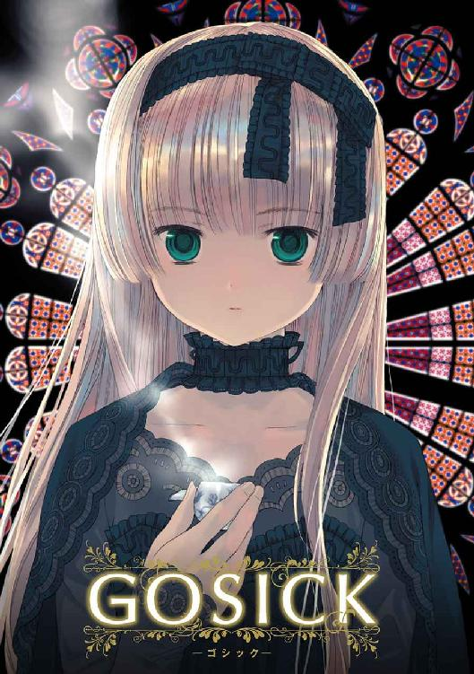
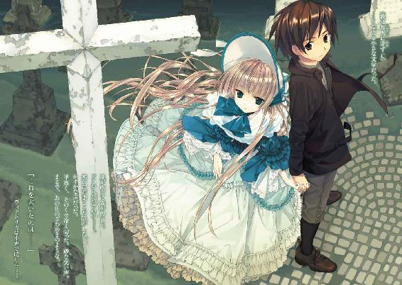
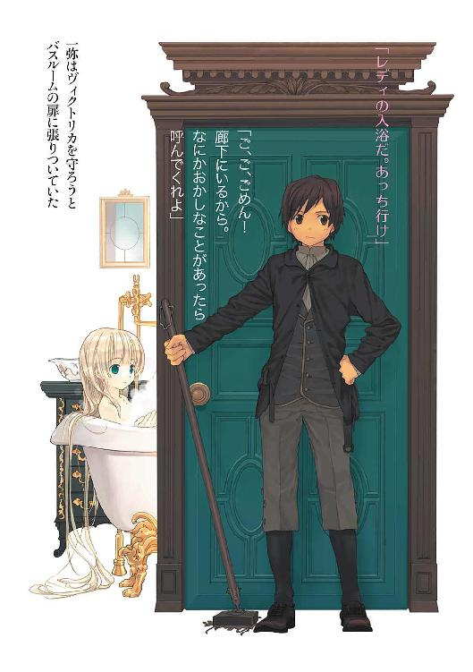
GOSICK Ⅱ
─ゴシック・その罪は名もなき─
桜庭一樹

角川ビーンズ文庫
本作品の全部または一部を無断で複製、転載、配信、送信したり、ホームページ上に転載することを禁止します。また、本作品の内容を無断で改変、改ざん等を行うことも禁止します。
本作品購入時にご承諾いただいた規約により、有償・無償にかかわらず本作品を第三者に譲渡することはできません。
本作品を示すサムネイルなどのイメージ画像は、再ダウンロード時に予告なく変更される場合があります。
本作品は縦書きでレイアウトされています。
また、ご覧になるリーディングシステムにより、表示の差が認められることがあります。
目次
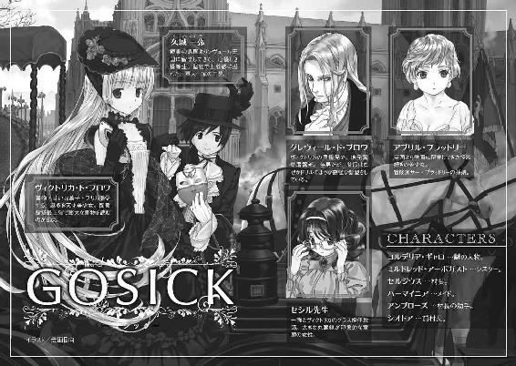
口絵・本文イラスト／武田日向
いっといで。マツユキソウをもたずに、帰るんじゃないのよ。
──『森は生きている』サムイル・マルシャーク
湯浅芳子訳 岩波少年文庫
プロローグ 咎人に非ず
金色でまんまるくてきらきらと輝いてるへんなものが──
暗闇の中で光っていた。
そこは大きな屋敷の奥にある狭い狭い部屋で、闇に沈み、頰が切れるほどの張りつめた静寂が立ちこめていた。
コルデリアはその金色でまんまるくてきらきらと輝いているへんなものを見下ろしていた。
──なにかしら？
綿菓子のような柔らかな巻き毛が、コルデリアの頰にかかっていた。彼女は小さなかわいらしいメイドだった。子供みたいに小さくてふくふくとした手には不似合いな、無骨な鉄の燭台を握りしめていた。
蠟燭の頼りない橙色の炎が、暗い部屋の床をほんの少しだけ照らし出していた。
へんなものはその床にコロンと転がっていた。
コルデリアは手を伸ばして、おそるおそる拾い上げた。
──きれーい！
それはすべすべしていて、顔に近づけてよく見ると、まんまるくて平たくて、人間の横顔が彫りこまれていた。なぜか数字も書かれていた。いったいなんだろう？
蠟燭の炎が、コルデリアのひそめた息によって、ゆらりと揺れた。
へんなものもそれに合わせてきらめいた。
──こんなきれいなもの、見たことないわ！
コルデリアは瞳を輝かせて、指の腹で何度も何度もへんなものを撫でた。へんなものも撫でられてうれしいようにさらにきらきら光った。楽しそうにみつめていたコルデリアは、ふと気づいて、燭台を床にかざした。
右に、左に。
前に、後ろに。
闇に溺れる床を照らし出す。
──一つ、二つ、三つ。
コルデリアは不思議そうな顔になった。
──このへんなもの、たくさんある！ いっぱい、いっぱい、床に落ちてる！
コルデリアは床にそろそろとしゃがむと、おそるおそる手を伸ばした。へんなものは床中に散らばっていた。金色のまんまるいものが蠟燭の炎を密やかに照らし返していた。コルデリアの小さなかわいらしい顔を黄金色に染めていく。
──宝物！ たくさんある！ きれい！
コルデリアはうれしそうにへんなものを拾い集めていたが、あまりにたくさん落ちているので、拾いきれなくなった。
小さな顔が次第に不安に歪んでいった。手から力が抜けて、へんなものは再び床にこぼれ落ちて音を立てた。
──これはなに？ どうして落ちてるの？ そうだ、ここにいるはずの......あの人は？
辺りをそうっと見回す。
部屋は闇に飲みこまれ、漆黒に染まっている。
コルデリアは震える声であの人を呼んだが、答える声はなかった。少女の声は闇に吸いこまれるように小さくなった。紅い唇がひきつる。
ジジ......ッ！
音を立てて蠟燭の炎が揺れた。
第一章 ヴィクトリカ・ド・ブロワは灰色狼である
１
よく晴れた午後──。
通りの左右に並ぶ木骨組みの家々に絡まる蔦葛の葉も鮮やかな緑色に染まり、ふわりふわりと優しく吹く風に揺れている。空は高く、そろそろ初夏に近づいた気候は、この地方ではもっとも過ごしやすい日々と言える。
そんな穏やかな昼下がり。
村の一角にある、蔦の絡まる小さな郵便局の扉が勢いよく開いて、小柄な東洋人の少年が飛び出してきた。村にほど近い山脈の麓に構えられた貴族のための名門、聖マルグリット学園の制服に身を包み、律儀にも制帽をきっちりかぶっている。
生真面目そうに口を結んで、背筋をきりりと伸ばして歩きだしながら、少年──久城一弥はひとりごちた。
「......お金じゃなくって、本を頼んだんだけどなぁ。どうしてお小遣いを送ってきたんだろ。ぼくの手紙と入れ違いになったのかな。うーん......」
その手には、国際郵便で送られてきたらしい封筒が握られていた。
「どうしようかな......。ま、いいか。とりあえず学園に戻って......」
一弥が思い悩みながら歩くその道に面した、小さな雑貨屋さんの扉が開いた。買い物袋を抱えてゆっくり出てきたのは、一弥と同じ聖マルグリット学園の制服に身を包んだ、背の高い少女だった。
金色のショートヘアにすらりと長い手足。大人びた顔つきをしたなかなかの美少女だ。彼女は前を歩く一弥に気づくと、パッと顔を輝かせた。
「......あれ、久城くーん！」
とつぜん大きな声をかけられて、一弥は「うわっ！」と声を上げて飛び上がった。その声に驚いたように、少女もまた「きゃっ！」と叫んで飛び退いた。
それから、ぷぅっと頰を膨らませて一弥を睨んだ。
「もうっ！ なんて声出すのよ。ビックリしたじゃない」
「なんだ、アブリルか......」
少女──アブリル・ブラッドリーは、一弥の反応が気に入らなかったらしく、しばらく頰を膨らませていたが、やがて笑顔に戻り、
「なに持っているの？ 手紙？」
「うん。あのさ............うわっ、アブリル！」
アブリルは一弥の手から勝手に封筒を取ると、無造作に中を覗きこんだ。
「あー、お小遣い！」
「うん......。兄がね、送ってきたんだ」
「いいなぁ！ わたしの両親なんて、すっごくケチなの。女の子だからいろいろ買わないといけないのにね」
「ふぅ......ん？」
女の子だから、というところに首をかしげながらも、一弥は相づちを打った。
アブリルはうらやましそうな顔のまましばらく封筒を握りしめていたが、やがて渋々、一弥に封筒を返した。
それからまた笑顔になり、
「ねぇねぇ、そのお小遣いでなに買うの？」
「ええっ？ わ、わかんないよ。教科書もちゃんとあるし、着替えや日用品も、必要なものは国から持ってきたし、それにさ......。あれ？ どうしたの、アブリル？」
一弥はあわてた。なぜかアブリルがこちらを横目で睨んでいたのだ。アブリルは両手を腰に当てて、
「必要なものと、ほしいものは、ちがうでしょ？」
「へっ？」
「久城くんって、ほんと真面目なんだから」
「ええっ？」
「アブリルちゃんが教えてあげる。あのねぇ、お買い物の醍醐味はねぇ、いろいろ見て、なにを買うか迷うことにあるのであって......」
「わかんないな。必要なものだけ買って、すかさず帰ればいいじゃないか」
「そんなことないってば。買い物は娯楽だもの」
「そうかなぁ？」
首をかしげる一弥に、アブリルは次第にムキになってきた。強い口調で、
「そうだ。久城くん、いいとこ連れてってあげる。いいからいいから」
「いや、あの......」
「あら？ どうして足を踏ん張って抵抗してるの？ 行かないと、わたし怒るよ？」
「......はい、すみません」
一弥はなんとなくいやな予感がしながらも、アブリルに強引に、学園に帰る道とは反対の方角にずるずると引っ張られていった。
時は一九二四年──。
ヨーロッパの小国、ソヴュール王国。
長い伝統を誇るソヴュール王国は、小さいながらも、今世紀初頭に起こった世界大戦を生き抜いた国力を持つ、西欧の小さな巨人と呼ばれていた。国土は塔を思わせる縦に長い形状をしており、フランスとの国境を豊饒な葡萄畑、イタリアとの国境を貴族の避暑地として栄える地中海のリヨン湾、スイスとの国境をなだらかな高原と深い山脈に囲まれていた。
小さいが豊かな国ソヴュールの、リヨン湾を豪奢な玄関とするなら、アルプス山脈は、もっとも奥深い場所にある秘密の屋根裏部屋であると言えた。そしてその秘密の場所に、ひっそりと、一つの学園がそびえていた。
聖マルグリット学園である。
周囲を緑に囲まれた過ごしやすい場所にある聖マルグリット学園は、空中から見るとコの字形をした荘厳な石造りの校舎でできていた。学園もまた、王国そのものほどではないがやはり長い歴史と伝統を誇っていた。生徒は貴族の子弟のみに限られ、学園関係者以外の立ち入りは固く禁じられた秘密主義の場所として知られていた。
しかし、世界大戦終結後──聖マルグリット学園は、一部同盟国の優秀な生徒を留学生として受け入れ始めた。
極東の島国からやってきた久城一弥は、成績優秀で品行方正。軍人一家の末っ子で、兄二人もまた優秀であり、長兄は学者、次兄は政治家の卵としてすでに身を立てていた。そして一弥自身も優秀であり、また非常に真面目な少年であると折り紙付きの推薦だった。
しかし、期待に胸を躍らせてやってきた一弥を待っていたのは、貴族の子弟たちの偏見と、なぜか学園中に蔓延る怪談ブームだった。一弥は学園になかなかなじめないまま、おかしな事件に巻きこまれたり、おかしな友達ができたり、ここ半年ほど苦労の多い留学生活を送っているのである──。
「......それでね、その夜遅く、森に抜ける道を自動車で走っていた二人は、銀色に光るなにかに追い越されたの。あわてて窓の外を見ると、なんとそれは......全速力で走る騎士の甲冑だったのよ！」
「......それはこわいね」
「しかもその甲冑が、追い越した瞬間、自動車のほうをゆっくりと振り返ったの。ところが、その、中身、は......」
「それにしても、いい天気だなぁ」
「空っぽで、だぁれも、いな、かっ、た........................きゃあああああ！」
「うわあぁぁぁー！」
「あはははは。久城くん、また悲鳴上げた。こわがりー。久城くんのこわがりー。あっはははー！」
アブリルが楽しそうに笑い声を立てるその横を、一弥はどこか憮然とした表情で歩き続けていた。ぶつぶつと、
「だから、いまのは怪談の中身じゃなくて、君の大声に驚いたんだってば」
「またまたー」
「ほんとだよ！ それにね、君、幽霊なんてものはいないよ」
「えー、いるよー」
「じゃ、アブリルは見たことある？」
「そりゃ、わたしはないけど......。でもね、わたしの友達の友達の友達が......」
熱心に話しながら歩いていく二人の横を、毛足の長い老馬が引く荷馬車がゆっくりと通り過ぎていった。
二人が歩く通りの左右には木骨組みの家々が建ち並び、その白壁の上を蔦葛の葉が鮮やかな緑色にうねっている。窓辺を飾るゼラニウムの花が、鮮やかな深紅の点となっておだやかな風に揺れている。
どこからか土や草の優しい香りが漂ってくるのは、村の中心部から少し離れたところに、なだらかに広がる葡萄畑からだろうか。
穏やかな、優しい季節だった。
昼下がりの村道は次第に人の数が増えていくようだった。その道を、一弥とアブリルは相変わらず、幽霊がいる、いないでもめながらゆっくりと歩いていた。
いつになく強気の一弥についに論破されそうになったアブリルが、つまらなそうに、
「だって......幽霊がいたほうが、楽しいじゃない」
「そういう問題じゃないよ。だいたいね......」
「久城くんと仲がいい、あの、ほら、ヴィ......ヴィクトリカさんだっけ？ あの子だって、じつは人間じゃなくて伝説の灰色狼だって噂があるんだよ。友達が伝説の灰色狼かもって思ったら、毎日わくわくしない？」
「しないよ！ ていうか、なんだよその噂。不謹慎じゃないか」
一弥は抗議した。ただでさえ留学してから半年あまり、自分のことを死神だという怪談のせいでなかなか友達ができなかったり、苦労の連続だったのだ。どんなに流行っていても、怪談などとても好きにはなれそうにない。
と、アブリルが口を尖らせて、
「まったく、久城くんって真面目なんだから」
「うっ......」
一弥は開きかけた口をしょんぼりと閉じた。
──一弥が生まれ育った東洋の島国では、男子たるもの余計なことは言わず黙々と為すべきことを為せと教えられてきた。一弥自身もそう思って、多少は無理をしてそのように心がけてきたのだが、どうもソヴュールに留学してからは勝手がちがうのだ。
仲良くなったこのイギリスからの留学生、アブリル・ブラッドリーにも、真面目だの頭が固いだのとからかわれること、しばし。それにもう一人の友達──それも女の子だけど──にも、中途半端な秀才だの凡人だのと毎日のようにけなされて、一弥としてはおもしろくない。
「あ、久城くん。着いたよ、ここ、ここ」
アブリルが、一人で悩んだり怒ったりしている一弥にはぜんぜん気づかず、上機嫌で指差した。一弥は顔を上げた。
村を縦横によぎる二つの村道の交差地点に当たる広場に、村人がたくさん集まっていた。広場に即席の青空市ができて、あふれるほどの品物と、やはりあふれるほどの買い物客でごった返している。
「今日は月に一度の〝のみの市〟なの。わたし、これが楽しみでお小遣いをためてたんだから」
「へぇ......！」
一弥はアブリルに手を引っ張られて、のみの市の真ん中に滑り込んでいった。
──市にはさまざまなお店が軒を連ねていた。この日のためにわざわざやってきた古物商が並べているのは、前世紀に造られたと思われるアンティークの人形や、かわいらしい食器セットだ。一弥たちと同い年ぐらいに見える村娘がくすくす笑いしながら勧めてくるのは、手作りの香草入り石鹼やポプリの花束。色とりどりの草木染めのスカーフがたくさんひしめく店には、穏やかな笑みを浮かべた老婦人が店番をしていた。
一弥があまりの品物の多さに目を白黒させていると、誰かに制服の端っこを握られて引っ張られた。
「あんた、見ていきなよ。絶対見たほうがいいって。ねぇ、あんた」
やけに婀娜っぽい声だった。
一弥が振り向くと、そこには声とはかなりイメージのちがう人が座っていた。重苦しい尼服に身を包んだ若いシスターだ。
「ほら、見なってばよ。な？」
「は、はぁ......」
ずんずんと先を歩いていたアブリルが、一弥が後ろについてきていないのに気づいて、あわてて戻ってきた。そして、一弥が前にしている店を見ると、「あ！」と顔を輝かせた。
「教会のバザーだ」
「そうなの？」
「うん。久城くん、ここで買いなよ。教会のバザーはね、信者の人がいろいろ持ってきてくれた品物で開くから、ほかのお店より値段が安いんだよ。それにほら......このお店、かわいい！」
アブリルが言うとおり、シスターの前に広げられた品物は、手作りの繊細なレースや、きらきら輝くガラスの器、アンティークの指輪など、少し古めかしいけれど、男の子の目にもきれいだとわかるものばかりだった。
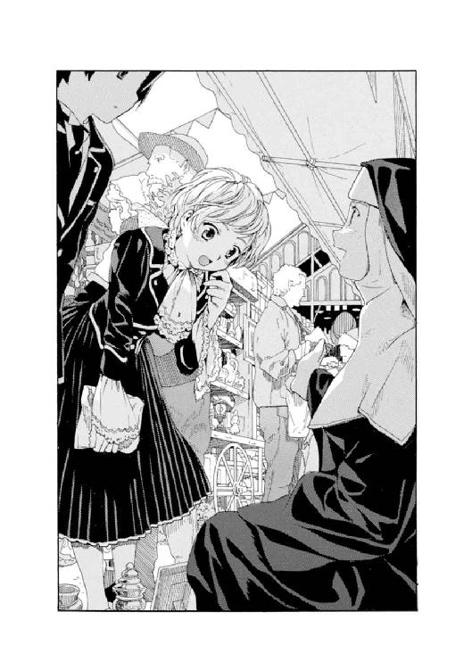
一弥は厳めしい顔をしてそれらを見回していたが、やがて一つのことに思い当たり、
「......よし、買うぞ」
「えっ、本当に？」
アブリルが少しびっくりしたように聞き返した。
一弥は真剣な顔をして品物をみつめている。
「うーん......とはいえ、よくわからない」
一弥は顔を上げて、売り子をしているそのシスターを見た。
尼服に隠されて髪の色はわからないが、瞳はスッキリとした切れ長で、見たことのない不思議な青灰色をしていた。まるで砂漠で見上げた空のような、寂しげだが印象的な輝きだった。年の頃は十八、九歳だろうか。
しかし、その禁欲的な尼服や澄んだ瞳と、さっきのあまりにくだけた話し方、それに、椅子代わりの木箱に両足を広げて男のように座る姿勢は、どうもアンバランスだった。
それにさっきから、おおざっぱな動きで頭を搔いたり、不機嫌そうに鼻を鳴らしたりしている。およそ尼服にはふさわしくない動きだった。そして細かなそばかすの浮かぶ白い顔も、見る人によって美しくも、変わった顔にも見えるような、どこか個性的なものだった。
「あの......」
話しかけようとして一弥は、シスターから甘ったるいような不思議な匂いが漂ってくるのに気づいた。香水とはちがう妙な香り......。
（......あ！）
一弥は気づいた。
（これはお酒の匂いだ。でも......どうして教会のシスターからお酒の匂いが？）
それに、尼服の裾からかすかに見える革靴の先が白く汚れていた。禁欲的な生活をしているはずのシスターが、昼間からお酒くさくて、靴も磨いていないなんてことが果たしてあるだろうか......。
「なにさ？」
シスターに面倒そうに聞き返されて、一弥はあわてた。
「あ、いえ、あの......その、女の子のおみやげにいいものがないかなと......」
「女の子ぉ？」
「は、はぁ」
恥ずかしくなってきた。やっぱりやめようかな、と悩む一弥のかたわらで、アブリルの顔がぱぁっと輝いた。
一弥はレースの付け襟を手にとって、
「これなんかどうかな。よくわかんないけど......。アブリル、ちょっとそこに立ってて。あ、もうちょっとかがんで。うーん......もうちょっと。もっと。それぐらいだったかなぁ。いつも座ってるからよくわかんないんだよなぁ。うーん......」
一弥にきれいな付け襟を合わせられて、最初はうれしそうだったアブリルの顔が、かがんで、と言われるたびに怪訝な表情になり、やがて不機嫌そうにぷぅっとふくらんだ。その様子を、足を広げた男のようなポーズで座っていたシスターが、ポカンとして見上げていた。やがて事態に気づくと、笑いをこらえ始める。
一弥がつぎつぎ、かわいらしい小さなハンドバッグや、古風だが上品なデザインの指輪などを手にとって考えこんでいると、アブリルがそれを全部奪い取った。
「な、なんだよ。アブリル？」
「そんなの全然ダメ」
「えぇー？」
「......ねぇ久城くん。これって、ヴィがつく人へのおみやげ？」
「うん、そう。学園から外にぜんぜん出られない......いや、出ないからさ。って、あれ？ そういえば君、ヴィクトリカのこと知ってるの？」
「直接は知らないけど......でも............」
アブリルはつまらなそうに足元の小石を蹴った。
それから顔を上げて、
「これがいいよ、絶対！」
──こぶし大の、金色の髑髏を持ち上げた。
一弥より先に、見ていたシスターのほうがギョッとして息を呑んだ。
「な、なにそれ？ なんに使うの？」
「こうするの」
アブリルはまじめな顔で、頭の上に髑髏を載せてみせた。
「うそだー」
「ホントだってば。あとね、これ」
アブリルは絵葉書の山を見ていた村娘たちを押しのけると、すごい勢いで探し始め、鼠の大群が押し寄せてくる模様の絵葉書を取りだしてみせた。
「......やだよ」
「じゃ、これ」
王冠に似たデザインの、インド風のきらきらした帽子を取り上げてみせる。それをかぶったところは想像できないが、帽子だけを見ると繊細な飴細工のようで確かにきれいだったので、一弥は迷いだした。アブリルはそれを振り回してみせ、
「ほら、きれいでしょ。絶対喜ぶよ」
「う～ん......？」
次第に涙目になっていくアブリルに、とうとうシスターが、同情したのか、それともおもしろ半分か、加勢し始めた。
「ほんとだよ。それ、すっごくいいよ。アタシもほしかったんだよ。でも売り物だからさぁ」
「えぇっ？ 本当ですか？」
アブリルとシスターは顔を見合わせた。それから同時に一弥のほうに向き直り、うんうんとうなずく。
──迷うこと、数秒。
一弥はつい、インド風の不思議な帽子を買ってしまっていた。
シスターが広げる教会のバザーには、ほかにもたくさんの品物があった。パッと見回したときにいちばんに目につくのが、ドレスデン焼の美しい皿だった。一つだけ奥のほうに大事そうに飾られたそれに、フェルト帽をかぶった瘦せた老人が目を留め、シスターに値段を聞いた。
と、シスターは得意そうに胸を張って値段を言った。とんでもない高額だったので、一弥とアブリルは思わず顔を見合わせた。老人はううむとうなって、頭を振りながら離れていった。
絵葉書を見ていた村娘たちが顔を上げて、シスターに聞いた。
「そのお皿だけ、どうしてそんなに高いの？」
シスターがまた得意そうに胸を張った。
「アタシもよくわかんないけど、なんでもずいぶんと古い皿らしいんだよ。歴史があるから値打ちもんってわけさ。信者の奥さんが特別に出してくれたものでね。今日のメインはこれだよ」
村娘たちは、かわいらしい花や果物柄の絵葉書を一枚ずつ買うと立ち去っていった。「あのお皿、高～い」「でもすごく古いし、いらないよ」などときゃあきゃあ言い合う声が、少しずつ遠ざかっていく。さきほどドレスデン皿の値段を聞いた老人が、まだあきらめきれないらしく、いかにも欲しそうな顔で遠くから皿をみつめていた。かぶっていたフェルト帽を脱いで小脇に抱え、どこかの店で買ったらしい小さな花瓶を握っていた。
「......ねぇあんたたち、これも買わない？」
シスターに声をかけられた。振り向くと、シスターは品物の一つを指差していた。
「アタシのおすすめはこれだね。すごくかわいいし、値段も手頃だよ」
「ふぅん......？」
それは手のひらに載るほどの大きさの四角い箱だった。オルゴールだ。アブリルが思わず手を伸ばした。
「楽譜のカードを入れると、いろんな曲を演奏してくれるよ。手回し式でね。ほら、そこのレバーを......」
「これ？」
アブリルが左手にオルゴールを載せて、右手でレバーを回した、瞬間......。
──パン！
大きな音がして、オルゴールがバラバラに解体した。そして中から白いものが......。
白い大きな鳩が飛びだして、バサバサと羽音を立て、青い空に飛び立っていった。
アブリルは「きゃっ！」と叫んで二、三歩後ずさり、それから一弥の顔を見て、
「な、なにいまの？」
周りの村人もみんな、驚いたように一弥たちのほうを見ていた。飛び立った鳩は広場の上空をのんびりと二周すると、ぽっぽー、と鳴いてどこかに飛び去っていった。
「..................あぁぁぁぁぁ!!」
シスターの叫び声が響いた。
人々は彼女に注目した。シスターは両手を頰に当てて、青灰色の瞳を見開いて叫んだ。
「皿が！」
一弥たちも息を呑んだ。
シスターが震える手で指差す。
そこにあったはずの......高価な皿はいつのまにか煙のように消えていた。
シスターが腰を抜かしたように座りこんでいた。アブリルは驚きのあまり唇を震わせている。
辺りを見回すと、さっき絵葉書を買った村娘たちは、少し離れた場所にかたまってきゃあきゃあ叫び声を上げていた。皿を欲しがった老人は不思議そうな顔でこちらを見ていた。
誰かが「警察だ、警察を......」とささやいたのが聞こえてきた。
一弥も驚いていたが、一方で、
（この事件がいちばんのおみやげだったかなぁ......。ヴィクトリカへの............）
少しだけ不謹慎なことを考えていた。
２
──聖マルグリット大図書館。
山間のなだらかな平地という地理をぞんぶんに生かして広々とした学園の敷地の隅に、のっそりと建つその建築物は、三百年以上の時を刻んだ、古い、そして欧州でも指折りの巨大な書物庫である。角筒形をしたその塔は石造りで、風雨に晒された幾年月を刻み、荘厳そのものの様相であった。
コの字形をした大校舎から図書館に続く白い砂利道を、一弥はインド風の帽子を片手に握りしめて、早足で歩いていた。
「さっきの騒ぎのせいで、いつもよりすっかり遅くなっちゃったな。機嫌が悪くなってなきゃいいけど......」
思わず独り言を言う。
そして、図書館にいる例の友達が自分を待っているわけではないことを思い出して、気にしなくていいか、と続けてつぶやいた。それに彼女の機嫌がいいときなんてめったにないことも思い出して、ちょっとだけ顔をしかめる。
一弥は図書館の入り口に着いた。
真鍮の乳鋲を打った革張りの大きな扉がそびえていた。一弥は両手でドアノブを握りしめると、思い切り引いた。
図書館の中に満ちていた湿気のあるひんやりとした空気が、一弥の頰をひやっと撫でた。
埃と塵と、知性の匂い。知らず敬虔な気持ちになる。
上を見上げる。
角筒形の大図書館の壁いっぱいが、あふれる書物で埋め尽くされていた。一瞬、壁の模様なのかと見まがうが、それはすべて書物なのである。中央は吹き抜けのホールになっており、はるか上の天井には荘厳な宗教画が描かれている。かすかに鮮やかな緑色をした大きな葉も見える気がするが、たいがいの人は目の錯覚かと思うことだろう。図書館のもっとも上、天井近くに、南国の木々を思わせる大きく鮮やかな葉などあるはずがない、と。
一階のホール奥にはどこか不吉な薄暗がりがあり、そこには今世紀になってから一部修復工事の折に取りつけられたという油圧式エレベーターが隠されている。とはいえそれは教職員ととある一人の生徒のみに許された乗り物で、一弥には無縁のものだ。
一弥がこれから上ろうとしているのは、壁一面の巨大書棚を危なっかしくつなぐ細い木の階段なのである。まるで上に上に向かって作られた巨大迷路のように、細い階段はカクカクと直角に天井に向かっている。
一弥は知らずため息をついた。
「......それにしても、遠いよなぁ」
天井辺りの木製の手すりの向こうから、かすかになにかが垂れ下がっている。
金色に輝く帯のようなものだ。
彼女の長い髪......。
「ま、でも、あそこにいるらしいな。仕方ない。上るかぁ」
一弥はぴしりと姿勢を正し、カッカッと靴音を響かせながら細い木の階段を上りだした。下を見ると目が回るので、絶対に見るまいと心に言い聞かせながら。
──一説によると、この大図書館は十七世紀初頭、当時のソヴュール国王によって造られたらしかった。恐妻家であった国王は、若い愛人との逢い引きに浸るため、図書館のもっとも上の階に秘密部屋を造った。そして、愛しあう二人のほかは誰も上がってこれないように階段を迷路状に設計したのだ、と......。
確かに、あのいちばん上までわざわざ上がるような人間は滅多にいないだろう、と一弥は思った。よほどの理由があれば別だが......。
そんなことを思いながら、上がる。
階段を上がる。
上がる。
......まだ上がっている。
もう少し。
疲れてきた。
──ようやくいちばん上の階に着いた一弥は、少し息を切らしながら、そこにいるはずの友達の名前を呼んだ。
「ヴィクトリカー。いるー？」
返事はない。
それもいつものことだ。
一弥は一歩、進んだ。
その先にあるもののことはよく知っている。
そこにあるのは......。
──植物園だった。
大図書館のいちばん上の秘密部屋は、国王と愛人のためのベッドルームではなく、いまは緑生い茂る植物園に改造されていた。南国の樹木やシダ、どこか毒々しい原色の花々が咲き乱れ、風にさわさわと揺れている。
風は開かれた天窓から穏やかな日光とともに入ってくる。
静かで満ち足りた、小さな楽園を思わせる場所だった。
その植物園から階段の踊り場に半身投げ出すように、かわいらしい陶人形が置かれていた。等身大に近い百四十センチぐらいの背丈を、絹やトーションレースなどをふんだんにあしらった豪奢なドレスで包んでいる。長い見事な金髪だけがなぜか、編まれたりまとめられたりすることなく、小さな革靴を履いた足元にまで流れ落ち、まるでビロードのターバンがほどけたかのようにその体にまとわりついていた。
うつむき加減の横顔は、まさに陶器を思わせるひんやりと取り澄ました表情。
大人とも子供ともつかない醒めた瞳は薄ぼんやりと見開かれ、明け方の夢を見ているようにつかみどころがない。
その陶人形は口元に白い陶器のパイプをくわえ、ぷかりぷかりと吸っていた。ほの白い煙が天窓に向かって揺れながら上っていく。
一弥は一瞬立ち止まり、その静止画のような様子に思わずみとれた。それからいつもの表情に戻り、陶人形そのものに思える美貌の、しかしやけに小さな少女のもとに近づいていった。
「さっきからずっと呼んでたのに。返事しろよな、ヴィクトリカ」
「......なんだ、君か」
少女がほんの少しだけ口を開いた。
小さな姿とはかけ離れた、まるで老人のようにしわがれた低い声だった。少女──ヴィクトリカは一言だけ言うと、また口を閉じた。
ヴィクトリカの前には、ページを広げられた書物が放射線状にたくさん並んでいた。ラテン語やドイツ語、アラビア文字らしい蚯蚓がのたくったような文字など言語もさまざまで、見るからに難解そうな本ばかりだ。ジャンルもまた、呪詛に錬金術、化学に高等数学、古代史と多岐にわたっている。
「君か、って。こんなところまで上ってくるのはぼくぐらいじゃないか」
「......以前はセシルがときどききていたがね。君に用事を頼むようになってからは、とんとご無沙汰だな」
「ふぅ......ん」
一弥はうなずいた。
セシルというのは、久城一弥やアブリル・ブラッドリー、それにヴィクトリカ・ド・ブロワが所属するクラスの担任の先生である。留学して半年あまり、なかなか貴族の子弟たちになじめない一弥のことをなにかと心配してくれるのだが、いつの頃からか一弥に、入学以来一度も授業に出てこないという問題児、ヴィクトリカの世話や連絡係を頼むようになった。一弥は渋々、不思議な少女ヴィクトリカがいる大図書館に通うようになり、やがて一弥が巻き込まれたさまざまな事件をヴィクトリカが解決しているうちに、次第に二人は気心が知れてきたのだが......。
くるたびに、ヴィクトリカのけんもほろろな、貴族特有の鼻持ちならない態度に腹を立て、もう二度とくるもんかと心に誓ったりしながらも、一弥はなぜか、相変わらずこの植物園に通い続けているのだった。
一弥はふと、ヴィクトリカのかたわらを見た。書物が山と積まれた床の上に、ウイスキーボンボンやマカロンなどのお菓子がたくさん転がっていた。ヴィクトリカのほうを見ると、書物を読み進めるのに夢中で、自分で持ってきたらしいお菓子のことなど忘れているようだ。
「こんなに散らかして。君、だらしないなぁ」
一弥は文句を言いながら、散らかったお菓子をかき集めて一所にまとめようとした。
そんな一弥の様子はまったく気にも留めず、ヴィクトリカが話しだした。
「君、〝特別な民〟というものの存在を信じるかね？」
突然の問いかけに、一弥は驚いて顔を上げた。ヴィクトリカはかまわず話し続ける。
「神話に出てくる神々のような人々のことだよ、君。たとえばギリシア神話の神々。北欧の巨人。中国にも天上人の伝説はある。君の国にもおそらくあることと思うが」
「あぁ......まぁ、そりゃ。でも、そんなの神話だろ？」
「大きく強く万能な、ほかの種族から神々と恐れられる人々。もし本当にいたとしたら、少しばかり愉快ではないかね？」
再び散らかったお菓子を集めて整理することに没頭し始めた一弥には構わず、ヴィクトリカは滔々と語りだした。
「東欧の歴史を繙いてみるとだね、古代セイルーン人についての記述が多くみられるのだよ、君。古代からとりわけ戦の多かった東欧の地を制した、伝説の民族だ。彼ら一人一人は小柄で非力であり、また数も少なかったが、頭脳によってその地を制した。九世紀にはハザール人と、十世紀から十一世紀にかけてはペチェネグ人と、十二世紀にはポロヴェツ人と勇敢に戦い、また十三世紀にはモンゴル人の来襲をも下した。彼らの民族は長く栄華を誇った。春とともに攻めてくる騎馬民族、森に暮らす獰猛な野生の狼などを、ものともせずすべて下し続けたセイルーン人は、伝説の神々のようだと思うがね。だがいまはどこにもいないのだ。セイルーンと名の付く国家もない。どの書物を読んでも、十五世紀を境に彼らに関する記述はぴたりとなくなる。彼らはある日とつぜん東欧の地から、いやこの地上から、煙のように消えてしまったのだ。果たして彼らは何処より来たりて何処へと消えたのか？ そこでヒントとなるのは、十五世紀といえば魔女狩りと異端審問の時代でもあったということだ。久城、君、村に行ってきたのかね？」
「......！」
一弥はお菓子をかき集めていた手を止めた。目を白黒させながら、
「なんだよ、急に。えっ、どうしてわかったの？」
「君の行動などわたしにはお見通しだよ」
「......そりゃそうだけどさ」
ヴィクトリカは小さくあくびをした。そして、せっかく一弥がかき集めたお菓子の山に無造作に手を伸ばすと、ぐちゃぐちゃにかき混ぜて中からお目当てのウイスキーボンボンをみつけだし、包み紙を剝がすと、口に放りこんだ。
むぐむぐ、と小さな顔の中でほっぺただけが別の生き物みたいに動いた。彼女がぽんっと放り出した包み紙を、一弥が受け取って、きょろきょろゴミ箱を捜し、まるで見当たらないので仕方なく自分のポケットに入れた。ヴィクトリカはもごもごと食べながら、
「君の頭についている葉っぱは、学園内部にある樹木のものではないしね。だいいち、制服の胸ポケットから郵便物が覗いている。それに、いつもより遅い時間にやけに急いでやってきたところをみると、午後の授業が終わった後でどこかに出かけたらしいとわかる。それだけだよ、君。きわめて簡単なことだ」
「......うん。そう聞くと、ね。でも、いつもビックリするよ。君はまるで見てもいないのに、ぼくの行動を全部当てちゃうんだもの」
ヴィクトリカがとつぜん顔を上げた。
そして、南国の海のようなきらめく緑色をした瞳を大きく見開いて一弥をみつめた。
「それは簡単なことだ。湧き出る〝知恵の泉〟が教えてくれるのだよ、君。五感を研ぎ澄まし、この世の混沌から受け取った欠片たちを、わたしの中にある〝知恵の泉〟が退屈しのぎに玩ぶというわけだ。つまり再構成するわけだ。気が向けば、君のようなつまらない凡人にもわかるようにさらに言語化してやることもある。......面倒なのでわざわざ言語化しないときのほうが圧倒的に多いのだがね。わかったかね、君？」
「またぼくのことを、凡人とかなんとかバカにしてさ......」
「いけないかね？」
ヴィクトリカは心底不思議そうに聞き返した。エメラルドグリーンの瞳がきらりと瞬いた。一弥は肩をすくめて、
「だいぶ慣れてきたけど」
「それはいけない。慣れというものは、君、知性の墓場だよ。反省したまえ」
「反省？ ぼくが？ いまの話の流れでどうしてぼくが反省するのさ？」
一弥は怒りながらも、しかし、本気で怒り切れない自分を感じていた。
──普段の一弥なら、よりにもよって、一国の代表になるほど優秀な学生である自分を凡人呼ばわりするなどということを、けして人に許さないはずだった。だがこの......入学してから一度も授業に出たことのない、しかし難解な書物を簡単に読み飛ばしていく、風変わりで狂気じみた小さな少女に言われると、いつもなぜか黙りこんでしまう。
一弥はじつは、ヴィクトリカが何者なのかいまだよくわかってはいないのだった。貴族の妾腹の子であるとか。一族の中ではなぜかとても恐れられており、屋敷に置いておきたくなくてこの学園に入れられたのだとか。母は有名な踊り子だが、発狂したとか。灰色狼の生まれ変わりだとか。......学園で聞こえてくる噂は怪しげでいかにも怪談じみたものが多かったが、一弥自身はヴィクトリカにそういったことについて聞いたことがなかった。下司な好奇心をもって人に接するなどとんでもないと思ったせいでもあるし、なによりも小さなヴィクトリカが、どこか侵しがたい静かだが獰猛な雰囲気を以て、知らず周囲を威嚇しているせいでもあった。
なかなか人に慣れない小型の野生動物と少しずつ気心が知れてくるような......そんな日々ももう数か月を過ぎた。一弥はいつも、なんだかなぁと思い悩みながらも、この奇妙な少女のために今日も迷路階段を苦労して上ってきてしまう......そんな留学生活なのだった。
「ところでさ、ヴィクトリカ。村に出かけた用事なんだけど......」
一弥は、もぐもぐとウイスキーボンボンを咀嚼しながら読書にいそしむヴィクトリカに、めげずに話しかけてみた。
「郵便局に行き、郵便物を受け取るのが目的だったのだろう？」
「......うん。本当はある本を送ってくれって頼んだんだけどさ、行き違いになったみたいで、長兄からお小遣いが届いたんだ。なんでも、学者になってからの初月給だから、ぼくにも少し送るって」
「ふぅむ」
「で、ぼくにとっては臨時収入だったから、これ、君におみやげ」
一弥が自信を持って差しだしたインド風の帽子を、ヴィクトリカは顔を上げて面倒くさそうにちらりと見た。また書物に目を戻して......それから驚いたようにもう一度見た。
「それはいったいなんだね!?」
「なにって、帽子だよ」
「帽子なのか!? それは!?」
思わぬ食いつきに......しかし、喜んでいるのではなく驚いているらしい反応に、一弥はがっかりした。
「......へん？」
「へんだ！」
「そ、そっか......。いらないなら返してくるよ」
一弥がうなだれて帽子に手を伸ばすと、ヴィクトリカが書物の前からごろりと一回転してきて帽子を奪い取り、また一回転して元の場所に戻ると、帽子を自分の体で隠すようにして、一弥とは反対側の床に置いた。一弥は怪訝な顔になり、
「ほしいの？」
「君、わたしはへんだ、と言っただけだよ。いらないとは言っていない」
「でも......へんなら、君が気に入るものに取り替えてもらってくるよ。......やっぱりレースの襟かきれいな指輪にすればよかった。ぼく、だまされたのかな。そういえばあのシスター、いかにも頭のおかしそうな人だったし......」
悩んでいた一弥がふと顔を上げると、ヴィクトリカは背中を丸めて熱心にインド風の帽子をいじくり回していた。猫が新しいおもちゃで遊びだしたような風情で、かわいらしいと言えなくもなかったが、しばらくするととつぜん帽子を放り出し、
「......あきた」
「あのね、君。帽子は遊ぶものじゃなくてかぶるものなんだよ。かぶる前にあきないでよ」
「退屈だ」
「だから、その......えっ？ 退屈？ 退屈って言った？」
一弥はいやな予感がして、逃げ出す準備を始めた。立ち上がって「そろそろぼく、寮のほうに......」と言いかける一弥を、ヴィクトリカが横目で見た。そして、歩きだした一弥のズボンの裾をぐいっと引っ張った。
一弥は思いきり転び、床で顔をしたたかに打った。
「イテッ！」
「退屈だと言っている」
「聞こえたよ！ でも、そんなことぼくに言われても............あっ、そうだ！」
一弥はむっくりと起きあがった。
「もう一つのおみやげのほう、すっかり忘れてたよ。さっき村ののみの市で帽子を買ったときにね、おかしな盗難事件が起こったんだ......」
──のみの市で。
帽子を買って立ち去ろうとする一弥に、バザーの店番をしていたシスターが小さなオルゴールを勧めた。連れのアブリルが手に取った途端、なぜかオルゴールは解体して、中から鳩が飛び出した。みんながそれを見上げているうちに、バザーに出品されていた高価な皿が煙のように消えてしまった。
もちろんその場にいた客たちは、一弥とアブリルも含め、駆けつけた警官が身体検査をして潔白を確認した。シスターは大騒ぎして皿を捜してくれと言ったが、ついに会場からみつかることはなかった。
騒ぎのおかげで一弥とアブリルは帰りが遅くなってしまい、学園の門限に遅れて、ぴたりと閉じた鉄製の正門の前で呆然と立ち尽くすはめになったのだ。
のみの市での一件を説明して中に入れてもらおうと言う一弥に、アブリルは「ここから戻ろ！」と、生け垣の中に密かに開けた抜け穴を案内した。
先週も門限破りをしてしまったアブリルは、こういうときのために鉈で生け垣の頑丈な枝を二、三本叩き斬っておいたのだという。こんなことはいけないと言いながらも、一弥はアブリルに引っ張られて、抜け穴から学園に戻ってきた。
そういうわけで、一弥の頭には学園内にはない樹木──つまり生け垣の葉っぱがくっついていたのである。
「でも、ずいぶんとおかしな事件だろ？ オルゴールは手のひらに載るぐらい小さくて、とても中に鳩が隠れられる大きさじゃないんだ。それなのに、ぽんっと解体した途端に白い鳩が飛びだした。しかも、同時に高価な皿がなくなったんだ。誰もその場から逃げ出していないし、皿はどこにもない......」
「......なんだ、そんなことか」
ヴィクトリカが大あくびをした。
一弥は目を瞬かせた。
あくびだけでは足らずに伸びまでして、またいたずらに帽子をいじり始めたヴィクトリカに、
「どういうこと？」
「犯人は一人しかいない。久城、それは君のすぐそばにいた人なのだよ」
「えぇっ？」
「なんと単純な欠片だ。こんなものは混沌などとは呼べない。あぁ、退屈だ。死ぬかもしれない。それぐらいひどく退屈だ。久城のバカ」
「......げっ」
一弥は少し腹が立って、投げやりに、
「じゃ、その帽子でもかぶれば？」
「......うむ」
ヴィクトリカがインド風の帽子をかぶった。長い金髪を後ろに流して、王冠のようなそれをすっぽりとかぶる。小さな頭にちょうどいい大きさで、そうすると、ヴィクトリカはまるで遠い砂漠の国のお姫さまみたいに見えた。
一弥が、似合うよと誉めようか、余計なことを言うのはやめておこうか迷っていると......。
遥か下界から、無骨な足音が飛び込んでくるのが聞こえた。革靴を履いた大きな足だ。一弥が階段の手すりから階下を見下ろしたとき、ちょうど一階のホールで足を止めたその人物と目があった。
一弥はヴィクトリカのほうを振り向いて、
「またきたよ」
「......むっ？」
ヴィクトリカはかすかに顔をしかめた。
ガタン、ガタン、ガタン──！
油圧式エレベーターが動き出す。
ヴィクトリカが少しだけ身じろぎした。
──ガタン！
鉄檻はひときわ大きな音を立て、植物園の前にある小さなエレベーターホールで止まった。
細い鉄製の檻の向こうに、若い男が立っているのが見えた。
キィッ、キィッ、キィッ......と、少し甲高い音を立てて檻が開く。
そこに、片腕を上に伸ばしてもう片方の腕を腰に当てたナイスポーズで、おかしなヘアスタイルの男が立っていた。
仕立てのいい三つ揃いのスーツに、派手なアスコットタイ。手首には銀のカフスが輝いている。申し分のない伊達男なのだが、ヘアスタイルだけがなぜかおかしかった。輝く金髪の先端をドリルの先のように流線形に固め、そこだけがまるで人間凶器のようだ。
一弥が小声で、
「......どうせ、いまぼくが話した事件のことを君に聞きにきたんだよ」
そうささやくと、ヴィクトリカは興味なさそうにあくびを一つした。
男──ヴィクトリカの腹違いの兄であり、貴族の気まぐれで警察に勤めているグレヴィール・ド・ブロワ警部は、革靴を鳴らしてさっそうと入ってきた。そして一弥たちに向かって自信たっぷりに、
「君、君たち、ちょっと話を聞きたいんだが、ね、ぇ......」
と言いかけて口をつぐんだ。
自信に満ちていた顔がゆっくりと蒼白に変わっていった。口を開き、目を見開き、まるで幽霊でも見たかのように指先を震わせている。
一弥は驚いて自分たちの周りを見回した。一弥と小さな友達ヴィクトリカ──いまはインド風の帽子をかぶっているが──、それから書物の山と、お菓子と、植物園。
いつも通りだ。顔色を変えて驚くようなものはなにもない。
ブロワ警部は真っ青な顔で口をパクパクさせていたが、やがてようやく声を絞り出した。
「コルデリア・ギャロ............ッ!? どうして貴様がここに............ッ？」
「......ちがう。わたしだ、グレヴィール」
ヴィクトリカが落ちついた声で答えると、インド風の帽子を脱いだ。
さらり、と絹のような金髪がこぼれ落ちた。
ブロワ警部は、蒼白の顔を次第に怒りで赤く染め変えた。怯えきって叫び声を上げたことに苛立つように、
「......ま、紛らわしい！」
「ねぇ、コルデリア・ギャロって何？」
一弥の問いを、このまったく似ていない兄妹はそろって無視した。一弥はうなだれて、
「わかったよ。聞かないよ。ちぇっ......」
ヴィクトリカはすねている一弥をまったく気にすることなく、パイプをくゆらしていた。やってきたブロワ警部もまたパイプを取りだして火をつけた。
天窓に向かって二本の煙の線がゆっくりと上っていく。
やがてブロワ警部が、いつも通り話し始めた。
ほんの一瞬だけ雲が風に流れて太陽を隠したらしく、植物園の天窓から差し込む光が、ゆっくりと陰った。それからまた柔らかみを帯びた日が差してきて、一弥たちの上を照らした。わずかばかりの風が吹いて、南国を思わせる大きく分厚い葉を二、三度揺らした。
「......というわけで、教会のバザーに出されたドレスデン焼の皿は煙のように消えてしまった。警官がその場にいた客たちを身体検査したが、どこからも出てこない。人の頭ぐらいの直径の皿らしくてね、もともと服の中などにかんたんに隠せる代物じゃないのだが」
警部は一弥のほうをみつめながら滔々と語っている。一弥は小声で、
「そんなの、ぼくは現場にいたんだから知ってますよ。どうしていつもヴィクトリカのほうを見ないんですか？」
「なんのことだね？ わたしはただ、目撃者の一人である君の話を聞きにきたに過ぎない。どうやらここにもう一人誰かいるようだが、わたしにはよく見えないのだよ。さて、と......」
ブロワ警部は、ヴィクトリカの言うことがよく聞こえるように、左耳を彼女が座る方向に向けて座り直した。尖らせた髪が天窓からの日射しに映え、黄がかった明るい金色に輝いた。
ヴィクトリカは熱心に本を読み続けていた。題名がちらりと見えたところによると、それはさきほど彼女が語った、東欧の古代から中世にかけての歴史を綴った書物らしかった。みっしりと細かい文字で書かれたその書物を忙しなくめくり続けている。
と、ふと顔を上げたヴィクトリカは、とても退屈そうにあくびを一つした。
「......だから、さっきから言っているだろう、久城。犯人は君のとても近くにいた人だ、と」
「誰のことだよ？」
一弥が不思議そうに聞き返すと、ブロワ警部が彼を押しのけるように身を乗り出した。
「わかったぞ。あの留学生だな!?」
「......どうして久城の連れが皿を盗むのだ。それに彼女は、久城といっしょに身体検査をされている。そうではなくて、もう一人そばにいただろう？ ただ一人、身体検査をされていない人物が。考えてみたまえよ」
ヴィクトリカはそれだけ言うとまた書物に顔をめりこませた。一弥とブロワ警部は顔を見合わせて考え込んだ。
「もう一人って、もしかすると......あのシスター？」
「そうだ」
ヴィクトリカは一弥の問いにうなずくと、それきり二人のことは忘れたように、書物の世界に埋没した。
数秒が静寂のうちに過ぎた。パイプをくゆらしていたヴィクトリカは、ふと視線を上げた。
一弥とブロワ警部が、なにか言いたそうな顔つきをして、ヴィクトリカが気づくのを待っていた。ヴィクトリカは口からパイプを離し、もう一方の手で床に転がったマカロンを拾うと包み紙をはがして小さな口に放り込み、むぐむぐと咀嚼し、それから一息ついて、言った。
「......なんだね？ 人の顔をじろじろと」
「言語化してほしくて、待ってたの」
「わからないのかね!?」
ヴィクトリカは心底驚いたような顔をして二人の顔をみつめた。
それからパイプをくわえて一服吸い、口から離して煙をぷうっと吐き、もう一つマカロンに手を伸ばすと口に放り込み、またむぐむぐと食べながら、
「君らは、本当に......バカなのだな」
「こらっ！」
一弥が怒ると、ヴィクトリカはビックリしたように目を見開いた。ブロワ警部のほうはと言うと、怒りのあまり顔を青紫色に染めて黙りこんでいた。ヴィクトリカは気にする様子もなく、
「皿を盗んだ犯人は、シスター以外にはあり得ないのだよ。久城、君の話を聞く限りではね。いいかね？ 君の連れがシスターの勧めで小さなオルゴールを手に取った途端、音を立てて解体した。オルゴールにもともとそのような仕掛けがしてあったためだ。そして同時に、中から白い鳩が飛びだし、広場にいた村人はみんな驚いて飛び立つ鳩を見上げた。しかし鳩はオルゴールの中から出てきたのではない」
「どういうこと？」
「シスターのスカートの中から出てきたのだよ」
「ス、スカート......？」
「久城、君は自分で言ったではないか。慎み深いはずのシスターが、まるで男のように両足を広げて座っていたと。君はそのことに違和感を感じた。シスターのそのポーズには、しかし、理由があったのだよ。彼女は足と足の間にある物を隠していたのだ」
一弥はあのときの情景をよく思いだしてみた。大きく足を広げて座っていたシスター。紺色の分厚い尼服に体が覆われていて、その裾は足元まで隠していた......。
「おそらく足の間に台のようなものを設置して、そこに鳩を忍ばせていたのだ。客がやってきてオルゴールを手にした瞬間、スカートを持ち上げて鳩を放す。オルゴールが解体した瞬間にうまく合わせれば、まるでオルゴールの中から鳩が飛びだしたように見えるというわけだ。そして村人たちが驚いて鳩を見上げている間に、スカートの中に今度は皿を隠す。それから叫んだわけだ。皿がなくなった、と」
一弥は驚いて、ヴィクトリカの顔とブロワ警部の顔を見比べた。
「だって、でも......シスターはバザーを出していた本人なんだよ。それがどうして売り物の皿を盗むんだよ？」
「それは本人に聞いてみなければなるまい。しかしだね、君の話では、シスターは昼間からお酒くさかったそうだ。なかなか事情のありそうなシスターではないかね？ それに、バザーの売り物は教会の持ち物で、売ったお金も彼女自身のものになるわけではない。となれば彼女も容疑者の一人であっておかしくあるまい。それから、だね......」
「うん」
「シスターの尼服と靴をよぅく調べることだよ、君。チラリと見えた黒い革靴がところどころ白く汚れていたという話だがね。それはおそらく、スカートの中に隠していた鳩のフンだと推測できるよ。長い尼服に隠されたはずの靴に、なぜ鳩のフンが付着したのか。おそらく彼女にはうまい釈明ができないことだろうよ」
話すだけ話すと、ヴィクトリカは面倒くさそうにあくびを一つした。ついでにうーん......と伸びもして、目尻に浮かんだ涙もそのままに、また書物の世界に戻っていった。
一弥はかたわらのブロワ警部をチラリと見た。いつも真相がわかった途端にそそくさと帰っていくはずのブロワ警部は、今日はなぜか腕組みをして、険しい顔で考え込んでいた。
「......警部？ どうかしましたか？」
「まいったな」
「えっ？」
「あ、いや......なんでもない！」
警部はあわてたように言うと立ち上がった。ゆっくりとエレベーターのほうに歩きだす。
一度振り向いて、なにか言いたそうな顔をしてから......。
口をつぐみ、鉄檻の中に消えていった。
「警部？」
「............」
ガタン、ガタン、ガタタン──！
無骨な音を立てて、エレベーターが階下へ降りていく。
──やがて、ブロワ警部の足早に去っていく足音が一階のホールから聞こえてきた。足音が遠ざかり静かになると、一弥はヴィクトリカに向き直って、聞いた。
「ところでさ」
「......む？」
「コルデリア・ギャロって誰？ どうして警部はあんなにビックリしたのさ。なんのこと？」
「............」
ヴィクトリカはずいっと一弥に背を向けると、書物に顔を突っ込んだ。一弥は「......ちぇっ」とつぶやいて、転がっていたマカロンを一つ口に放り込んだ。
少しずつ日が陰ってきた。
風が止まったらしく、木々の葉の密かな揺れが止まった。
白い細い煙が一筋、ヴィクトリカのくわえるパイプから天窓へ立ち上っていく。
一弥が黙ると、最上階の植物園は、ここ三百年余そうであったように、天上の世界を思わせる静謐な静寂に包まれた──。
３
翌朝。
一弥は起床時間ぴったりに、聖マルグリット学園男子寮の自分の部屋で、起きあがった。
この男子寮は貴族の子弟たちのために、一人一人の個室が快適で豪奢な部屋に工夫されている。上質なマホガニー製の机やベッド。クロゼットには美しく刺繡された垂れ絹がかけられ、水差しは磨き込まれた真鍮製で、床にはふかふかとした毛足の長い絨毯が敷きつめられている。
どの部屋も男の子が一人で使っているために少し散らかっているのが常だったが、一弥の部屋だけはいつもきっちり整頓され、万が一、塵一つでも落ちていれば、すかさず一弥が拾ってはゴミ箱に捨てていた。
その朝も一弥は、起きると顔を洗い、着替え、鞄の中身を整理し、背筋を伸ばして一階の食堂に降りていった。ほかの男子学生たちはぎりぎりまで眠っていることが多いため、この時間に食堂に降りてくるのは一弥一人か、多くても二、三人がいいところだった。
食堂の隅に置かれた木椅子に、やけに色っぽい赤毛の寮母さんが足を組んで座っていた。くわえ煙草で眉間にしわを寄せ、朝刊を読んでいる。
一弥に気づくと立ち上がり、パンとフルーツ、軽くソテーしたハムの朝食を出してくれた。そして、お礼を言って食べ始めた一弥が自分のほうをちらちら見ていることに気づくと、「......読む？」とけだるそうに聞き、手にしていた朝刊を一弥に渡してくれた。
一弥は朝食を取りながら、朝刊を隅々まで読んだ。
「......あれ？ おっかしいなぁ？」
首をかしげる。
つい昨日ヴィクトリカが謎解きをしてみせた〝ドレスデン皿盗難事件〟。犯人がわかると即、自分の手柄にしてしまうのが常のブロワ警部が、なぜかこの事件に対しては、
〈ブロワ名警部、脱帽！
消えたドレスデン皿、行方わからず〉
......こんな見出しで、犯人であるはずのシスターを捕まえた気配がなかった。
「おっかしいなぁ。いつもならすぐに捕まえて、翌朝の朝刊でお手柄だのなんだのってかき立てられているのに。どうしたんだろう......？」
そういえば昨日も、帰り際のブロワ警部の様子が少しおかしかったな、と一弥は思いだした。青紫色の顔をして、いつになく無口で、なにか言いたそうな表情を浮かべていた......。
「ネェネェ、久城くん」
顔を上げると、隅の木椅子に足を組んで座った寮母さんが、煙草を吹かしながら一弥を手招きしていた。
「はい？」
「その朝刊のいちばん下のさ、三行広告があるじゃない。あたし、そこがいつもお気に入りで、読んでるんだけどね」
「どうしてですか？」
「だって、おもしろいのよ。家出した娘に呼びかける広告とか、仕事を探している人の宣伝とか、たまには犯罪を匂わせるような怪しい広告も載るし。......でね、今日の広告」
一弥は寮母さんが指差す場所に目を走らせた。
そして首をかしげた。
そこには......。
〈〝灰色狼の末裔〟に告ぐ。
近く夏至祭。我らは子孫を歓迎する〉
続いて、簡単な道のりの説明もしてあった。スイスとの国境に近いホロヴィッツという小さな町の住所が書かれている。
「......なんですかね、これ？」
「さぁ～、さっぱり。だけどさ、灰色狼って、ソヴュールじゃポピュラーな言い伝えなのよね。ほら、吸血鬼とか雪男とかさ、国によっていろいろあるじゃない？ ソヴュールでは昔から、楡の茂る山奥には静かなる灰色狼が棲んでいるって言い伝えられてるのよ」
寮母さんは熱心に、
「灰色狼って、人間よりもずぅっと頭がいいんだってさ。だから、あんまり頭の回転がいい子が生まれると、母親は〝狼の子を生んだ〟って言われて村から追いだされることもあったって。ま、昔の話だけど」
「ふぅ......ん？」
一弥は、ヴィクトリカのことを灰色狼の生まれ変わりだという怪談を思い出した。どうしてだろうとずっと腑に落ちなかったのだが、いまの話で少しだけ理解できた気がした。
要するに、頭がよすぎるからか、と......。
「......あ、おはよー」
寮母さんが顔を上げてつぶやいた。遅ればせながら、貴族の子弟たちが起き出して食堂にやってきたのだ。
一弥を見るとみんな伏し目がちになり、黙って離れた席に座る。そんなことにもいい加減慣れてきたので、一弥は気にせず立ち上がった。
寮母さんがどんどん彼らの前に食事を出していくのを横目で見ながら、食堂を後にする。廊下を歩き始めてから、さっきの広告のことを思い出した。少しは退屈しのぎになるかな、とひとりごちながら食堂に戻り、
「この朝刊、借りていいですか？」
「あげるー。もう読んだから」
「あ、ありがとうございます」
一弥は朝刊を小脇に、食堂を後にした。
寮の玄関を出た一弥は、背筋を伸ばして大校舎に向かう小道を歩いた。道の途中で、担任のセシル先生が芝生の上に立って小首をかしげているのが見えた。
小柄な体に肩までのブルネット。大きな丸眼鏡をかけたどこか幼い雰囲気の女性だ。そのセシル先生はなぜか、朝からがっくりとうなだれていた。
「......おはようございます、先生」
「あら、久城くん」
一弥に気づいて、笑顔になる。
「どうかしたんですか？」
「ううん、あのね......」
セシル先生は芝生の向こうにある木陰──学園の敷地と外を隔てる高い生け垣のほうだ──を指差してみせた。
「あの辺りにきれいな菫が咲いていたから喜んでいたんだけど、昨日誰かが踏んでしまったみたいなの。残念だわ。でもね......あんなところ、いったい誰がどうして通ったのかしら。だって道もなにもないのよ。奥にあるのは生け垣だけだわ」
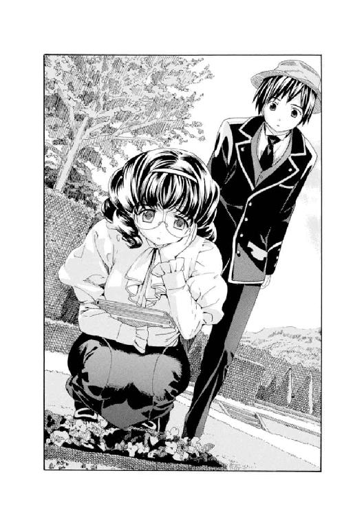
「うーん..................んっ？」
一弥は口をつぐんだ。
──そういえば昨日、自分とアブリルが門限に遅れて、生け垣に開いた抜け穴からこっそり入ってきたのがあの辺りだった。ということは、菫を踏んでしまったのは自分たちなのかも......。
しまった、と顔色を変える一弥には気づかず、セシル先生はしょんぼりしたまま立ち去ってしまった。
その日のお昼。
一弥は天井のモザイクガラスから陽光が眩しく降り注ぐ学園の大食堂で手早く昼食を取ると、そそくさと立ち上がった。パンを千切っていたアブリルがそれに気づいて、どこに行くのかしら？ と不思議そうに一弥を目で追った。
一弥は敷地の外れにある大図書館に向かった。
昨日に比べて風が強く、そのせいか初夏に近い季節だというのに肌寒く感じられた。
こんな時間に急ぎ足で校舎を離れていく生徒など一人もいない。無人の細い砂利道を歩きながら、一弥は寒そうに少し肩を縮めた。
「......ヴィクトリカー？」
返事などしてくれないのをわかっていて、今日もまた、彼女の名を呼びながら細い木の階段を上がり続ける。
上がる。
......上がる。
............ようやくたどりつくと、ヴィクトリカはいつ訪ねてもそうであるように、革張りの大きな本をいくつも放射線状に並べ、座って......いや、今日は小さな体をうつぶせに寝ころばせ、床に肘を立てて頰杖をついていた。ぷっくりとしたほっぺたが、小さな手のひらの上で柔らかくつぶれている。もう片方の手はいつも通り陶製のパイプを持ち、口に近づけてはぷかりぷかりと吸っている。
「そんな格好して。せっかくの洋服が汚れちゃうよ」
「......新聞に気になる記事でもあったのかね？」
一弥はなにか言いかけて口を閉じた。内心（どうしてなんでもわかっちゃうんだろう？）と不思議に思いながらもヴィクトリカの横に座った。と......。
「......イテッ!?」
なにか丸くて硬いものをお尻で踏んづけた。お尻の下でカシャリと乾いた音がして、それは潰れてしまった。あわてて腰を上げる。覗きこんでみると、それはヴィクトリカが床のあちこちに散らかしたお菓子だった。ココアのパウダーをふったマカロンだ。
一弥はあきれたように、
「またこんなに散らかして。ヴィクトリカ、床に直接置かずにお菓子入れを用意しなよ。ぼく、踏んじゃったよ」
「あああああ！」
顔を上げたヴィクトリカが、エメラルドグリーンの瞳を大きく見開いて、驚愕の表情を浮かべた。
「わたしのマカロンがぁ！」
「......潰れたけど。捨てちゃうよ」
「それはいけない。責任を持って食べたまえ」
「えぇ～？ だって、こなごなだよ」
「久城......」
みつめられること、数秒。
「食べろ」
「............はい」
一弥はヴィクトリカの眼力に負け、こなごなになったマカロンの残骸を仕方なく口に運んだ。
もぐもぐと咀嚼しながら、改めて彼女のかたわらに座り直し、一弥は寮母さんからもらった朝刊を差しだした。ヴィクトリカはちらりとも見ず、書物に顔を突っ込んでいる。
「ブロワ警部、昨日のドレスデン皿盗難事件、解決してないみたいなんだよ」
「......うむ」
「びっくりしないの？」
「なにやら曰くありげだったからな。しかし、ブロワ家の男共にはあまり関わりたくなくてね」
「ふぅ......ん」
「全員ヘアスタイルがへんなのだ」
「......あれ、全員なの!?」
ヴィクトリカは顔を上げ、ふわぁ～とあくびをした。
「遺伝だろう」
「そんなこと遺伝しないよ。それに、ヴィクトリカのヘアスタイルは普通じゃないか」
「わたしは母親の遺伝が強いのだ」
「ふぅん？」
一弥はうなずいた。
しらず遠い目になり、海の向こう、遥か遠くの島国に残してきた自分の家族のことを思い出す。軍人であり、厳格で常に正しいことを為す、男の中の男のような父。二人の兄も父によく似た、器の大きな、だが大きすぎて少しばかりおおざっぱなところが気になる男たちだった。それとは反対に、母はおっとりして気の優しい女性で、二つ違いの姉もまた、母によく似たかわいらしい人だった。一弥は自分のことを、男の子なのにどうして父に似なかったのかなぁと思うこともあったが、それは大好きな母や姉を否定することに思えて、口に出したことはなかった。
「......ぼくも、母親似かなぁ」
返事はない。
かたわらを見ると、ヴィクトリカはパイプを口から離して、くうぅ、と伸びをしていた。猫が伸びをするときのように、小さな体が意外なほど縦に長く伸びた。
「グレヴィールのことを言いにきたのかね？」
「うん。それもあるけど」
「君はよくよく、我がカボチャ頭の兄君のことがお気に召したようだな。一挙手一投足をチェックしている」
「逆だよ！ 気に入らないんだってば！」
「......知っている。君が怒ると少しばかりおもしろいので、からかったのだ。グレヴィールに関することとなると、久城、君はまことに怒りの沸点が低い。それはわたしにとってはとても奇妙で、そして少しばかり愉快なことなのだよ」
「......悪かったね」
一弥はぶつぶつと文句を言いながら、抱え込んでいた膝を伸ばした。それから朝刊の三行広告のページを開いて、ヴィクトリカの前に差しだしてみせた。
ヴィクトリカはその〈〝灰色狼の末裔〟に告ぐ......〉で始まる広告に、じつに面倒くさそうに横目でちらりとだけ目を走らせた。
それからむくっと起きあがった。
一弥の手から朝刊を奪い取ると、新聞に睫毛がふれそうなほど顔を近づけて、何度も何度も、その広告を左から右に、また左から右に、首を振っては読み返した。
「〝灰色狼の末裔〟に告ぐ......。近く夏至祭......」
「おかしな広告だろ。教えてくれた寮母さんによると、三行広告って、家出人への呼びかけから、仕事を求めるメッセージから、それに犯罪を想像させる謎めいたものもあるんだってさ。これなんてとびきり不思議なメッセージだよね。ヴィクトリカ、君、退屈だって言うからさ。下界の不思議を一つ拾ってきて、あげた..................どうしたの？」
ヴィクトリカがむくっむくっと立ち上がった。ゼンマイを巻かれた人形が動き出したような動きだった。その顔は、昨日のブロワ警部ほどではないが、彼女にしては動揺が見えるほどに蒼白になっていた。
「......どうしたの？」
ヴィクトリカは走りだそうとして、一弥が投げ出していた足につっかかって、転んだ。びたーん、とすごい音がした。釦付きの小さな革ブーツの底が見えた。それから白いフリルのペティコート、刺繡の入ったかわいらしいドロワーズが、一瞬ふわりとふくれあがって、倒れたヴィクトリカ本体の上にゆっくりと戻っていった。
「ヴィクトリカ？」
「............」
静寂が数秒、続いた。
むくり、とヴィクトリカが起きあがった。
黙りこんでいるので、一弥は彼女の顔を覗いて「大丈夫？」と聞いた。ヴィクトリカは小さな両手を広げて、顔を押さえていた。
「痛い」
「......だよね？ すっごい音がしたもん」
「痛い」
「うん」
「............痛いったら痛いのだ！」
「ぼくに怒らないでよ。自分で転んだんだから」
めずらしく自分のほうが優位に立っているので、一弥は彼女を心配しながらも、少しうきうきと声をかけた。
「まったく、大丈夫？ ほら、起きあがって。君、どこに行こうとしたんだよ」
「右側の書棚の、上から七段目の右から三十一冊目の本を取ろうとしたのだ。久城、君、取ってこい」
「へっ？」
「茶色い革張りで乳鋲が打ってある分厚い本だ」
「......わかったよ」
ヴィクトリカが顔を押さえたままで言うので、一弥は仕方なく、階段を少しだけ降りて、彼女が言う場所にあった本に手を伸ばした。木製の階段は危なっかしく、一弥の動きに合わせてみしり、と揺れた。
と、ヴィクトリカが降りてきて、不安定なポーズのままでいる一弥の背中を、いきなりブーツの底で蹴飛ばした。思い切りの動きの割には、子供に押されたような小さな力だったが、不安定なポーズをしていた一弥はバランスを崩して転がり落ちそうになった。階段の上にもんどりうって倒れ、
「なっ、なにするんだよ！」
「ふふん。君もせいぜい気をつけたまえ」
「いまのは人災だ！」
──いまにも一触即発の空気を醸し出しながらも、二人はもとの植物園に戻り、ヴィクトリカが指示した書物を前にした。
ヴィクトリカは慣れた様子でその書物をめくりながら、マカロンを一つ口に放り込み、包み紙をぽーんと放り出した。一弥がすばやく拾い、ポケットに入れる。
「......ソヴュールには昔から、山奥に入れば入るほど一つの怪談が幅を利かせているのだよ。君も聞いたことがあるだろう。〝灰色狼〟の怪談だ」
一弥はうなずいた。
「多くはいかにも作り物めいた伝説だが、ここに一つ信憑性のある資料があるのだ。十六世紀に書かれたとあるイギリス人旅行者の日記なのだよ。君、わたしはずっとこの記述について考えていたのだ」
ずいっとヴィクトリカが本を差しだしてくる。
ラテン語やギリシア語だったらお手上げだ、と思いながらおそるおそる覗き込むと、幸いなことに英語で書かれていた。昔風の言い回しに戸惑いながらも、一弥は苦労してなんとかそのページを読んでいった。
『......一五一一年のことである。私はソヴュールとスイスの国境に近いとある山脈で道に迷った。道案内人は雇っておらず、方位磁石は狂い、暗い森をあてどもなく彷徨う。夜になり、獣の気配に怯えた私は焚き火を焚いた。野生動物は火を恐れる。そして夜半近くになったとき〝彼〟が現れた。
まだ若い雄狼だった。シルバーグレイの毛並みをもつ狼だ。彼はほかの動物とちがい、火を恐れなかった。落ち葉を踏みしめてゆっくり近づいてきた。
死を覚悟したそのとき、驚くべきことが起こった。
狼は口を開いた。口蓋が裂け深紅の舌が見えた。しかし彼は、私を食おうというのではなかった。
なんと彼は、語ろうとしたのだ。
灰色狼は物静かで、若さには似合わぬ知性と落ち着きを持っていた。山奥におり、話し相手も少なかったのだろうか。彼は私に問いかけ、私も答えた。深遠なるこの世の謎について、人々と獣の歴史について。気づくと夜は明けかけ、彼は私に森を抜ける道を教えてくれた。
別れ際に、私は灰色狼と一つの約束をした。
〝人語を話す狼と逢ったことを、けして口外せぬ〟と......。
しかし私は約束を守ることができなかった。無事に戻った私は我慢できず妻に話し、妻は兄に話した。巡り巡って役人の知るところとなり、私はその場所について子細に問いただされた。そして役人もまた同じことを私に約束させたのだ。
〝けして口外せぬ〟と......。
一年後。
私は再びあの山脈を訪ねた。
灰色狼に逢った場所にたどりつくと、すぐ近くに小さな村があった。あのときは夜で気づかなかったのだ。しかし村は無人だった。何者かによって焼き払われ、無残な廃村となっていた。
役人どもの顔が脳裏をよぎった。
私のせいなのだろうか。約束を違えた私の......。
大声で若き雄狼を呼んだ。
答える声はない。
だが......。
ガサリ、と落ち葉が鳴った。
振り向くと、森の奥に消えていく何者かの影を見た。シルバーグレイが一瞬だけ木々の間から見えた。
遠く遠吠えが聞こえてきて、私は一心に山を降りた。無数の狼たちの咆哮だった。私は転がるように山を降りた。とつぜんおそろしくなったのだ。己の罪が。ただ、走りながら私が思ったのは、一つのことだった。
彼らは生きていた。彼らは逃れたのだ。
いまもまだ山の中にいるのだ、と......』
一弥はなんとかその英語で書かれたページを読み終わった。ふぅ、と息をついて、ヴィクトリカに「読んだよ」と声をかけると、ヴィクトリカは驚いたような顔をした。
「君、いまずっと読んでいたのかね？」
「......悪かったね。ぼくは君ほど速く読めないんだよ」
「まったく、君の秀才ぶりの中途半端さには恐れ入るよ。わたしはまた、目を開けて眠っているものだとばかり思ったのだがね」
「うぅ......悔しい............」
眉間にしわを寄せてうなり始めた一弥をまったく気にも留めず、ヴィクトリカは書物を取り上げると、忙しくページをめくりながら話し始めた。
「元来この国には狼伝説が多い。それは人食い狼や、月夜に人を殺める人狼などといった血腥い伝説とは異なる。〝静かなる灰色狼〟〝毛皮を着た哲学者〟などと......。これについてはさまざまな諸説があるのだが。わたしが思うにはだね、一度この国を出て広い視野で思考したとき、初めてわかることも多いのだよ。そこで問題となるのが、狼伝説が生まれたのが意外にもここ数百年のことで、たとえば十三世紀頃の書物など読むと、狼などというものはまったく出てこないということだ。つまりだね......」
滔々としゃべり続けるヴィクトリカを、一弥はぼんやりとみつめていた。話がよくわからないので、だんだん退屈になってきた。
（そういえば......）
ふと、さきほどヴィクトリカがびたーんと転んだとき、痛い、痛いと繰り返していたことを思い出した。
（ヴィクトリカって、痛いのが苦手なのかな？ ま、確かにみんな痛いのはいやだろうけど、それにしても、一人で、この世の終わりみたいに大騒ぎしていたものな）
さっき一瞬だけ優位に立ったあの瞬間のことを思って、一弥は知らずにんまりした。それに気づいたヴィクトリカが、
「......どうしたのだね、君？ 気味の悪い顔をして」
「ヴィクトリカ、ちょっとこっち向いて」
「む？」
一弥は冗談のつもりで、こちらに向き直ったヴィクトリカの、賢そうに秀でた陶器を思わせる白い額にぴしっと軽くデコピンした。
もちろん痛くないようにほんの少し当てただけで、軽く音がしたかしないかという程度だったが、くすくす笑う一弥のほうを見上げるヴィクトリカのエメラルドグリーンの瞳には、なぜか、みるみる涙が溜まってきた。
「あはは、ビックリ、し、た............？ ヴィ、ヴィクトリカ!?」
「い、痛い」
「そんなはずないよ。軽くしたもん。おおげさだよ、君」
「痛い」
「な、なに言ってるんだよ。ヴィクトリカ」
ヴィクトリカは小さな両手で額を庇うようにして、ずりずりと後ずさった。まるでかわいがってくれていた飼い主にいきなり蹴飛ばされた小猫のように、おびえて、信じられないという表情を浮かべている。
「なんだよ、その反応！」
「久城、君がそんな男だとは思わなかった」
「えぇーっ？ わ、わかったよ。ごめん。ごめんってば。そんなに痛かった？ でもさ......うわ、ごめん」
「君とは一生口を利かない。絶交だ！」
「まっさか～？」
一弥はヴィクトリカのおおげさな言いようにしばらくくすくす笑っていたが、その後、どう話しかけてもヴィクトリカが自分に返事をせず、あろうことかまるでそこに誰もいないかのように完全に無視していることに気づくと、はじめは悲しくなり、ついで腹が立ってきた。
（これはまるで、ヴィクトリカのことを無視するブロワ警部みたいな態度じゃないか。そうか。この兄妹は、気に入らないことがあると相手がいないことにしちゃうんだな。それにしても......）
一弥は憮然として立ち上がった。
「ひどいのは君のほうだよ、ヴィクトリカ。なにが絶交だよ。ぼくはきちんと筋を通して謝ってるのに。君はわがままだよ。もう、知らないからな」
ヴィクトリカは返事をしない。
パイプをくゆらして、そこには誰もいないというように書物に没頭している。
「ぼくより本のほうが好きなんだよな、君は」
「............」
「わかったよ。もうこない」
「............」
「本当に、もう絶対、図書館になんてこないぞ。ヴィクトリカの......ヴィクトリカの、痛がり！」
一弥は叫ぶと、持ってきた朝刊はそのままに、細い木階段を勢いよく駆け降りていった。
降りる。
降りる......。
......まだ降りている。
転びそうになった。
──やがてようやく一階のホールまで降りた一弥は、未練がましく天井のほうを見上げた。一瞬、小さな白い顔がこちらを見下ろしているような気がしたが、つぎの瞬間あわてたように引っこんだ。
「なんだよ。ヴィクトリカのやつ......」
一弥はもう一度つぶやいた。
「......本当に、もうこないからな」
遠くで、午後の授業の始まりを告げる鉄鐘が鳴り響いた。
「本当だからな......」
重たい扉を開くと、暖かな陽光とともに、小鳥がピチチチ......と鳴く声も飛びこんできた。一弥は少しうなだれて図書館を後にした。重たい扉がゆっくりとまた閉まっていき、やがて図書館内部はまた、埃と塵と知性の、静謐で侵しがたい空気に包まれた。
ただただ、静まり返った。
４
夜になると聖マルグリット学園は、まるでこの世の終わりのような静寂に包まれる。誰もいないかのようにしんと静まり返った校舎や寮の建物を、深遠な森にも似た樹木の多い庭園が囲い、暗い影を落としている。時折、青白い月光が枝や葉のあいだからうっすらと差し、また群青色の綿雲に遮られて暗闇になる。
この時間──といっても夕食が済み、午後七時を少し回ったという、夜にしては早い時間だが──生徒たちは寮の各部屋で勉学にいそしむことになっていた。寮長と呼ばれる最上級生が定期的に下級生たちの部屋を見て回るほか、職員である舎監が玄関前の詰め所で生徒の出入りをチェックしている。
寮長は死神の噂がよほどこわいのか、一弥の部屋だけは見回ることなく通り過ぎるのが常だった。しかしチェックされる必要もなく、一弥はいつも分厚い教科書を開いては、その日の授業の復習と翌日のための予習、そして英語とフランス語、特に苦手なラテン語の勉強に励んでいた。
その夜も、一弥は窓際に置かれた勉強机に向かって、ぶつぶつとラテン語の単語をつぶやきながら勉強していた。
ジジジ......と壁掛けのガス灯が音を立てる。
分厚い勉強机の上には、教科書や文房具がきっちりと整理整頓されて並んでいる。
一弥の顔は真剣そのものだ。
「............？」
ふと顔を上げた一弥は、また教科書に視線を落とそうとして......怪訝な表情になり、もう一度窓の外を見直した。
暗い窓の外。
ゴブラン織りのカーテンは月明かりのために開け放たれ、フランス窓も少しだけ開いている。
その外......暗い小径を、なにかがずるずると動いているような気がした。
（なに......!?）
一弥は少し怯えながらも、フランス窓を大きく開けて外を見下ろした。
二階の端にある一弥の小さな部屋からは、まず芝生に覆われた敷地が、そしてその向こうに樹木のあいだをうねって続く薄暗い小径が、遠いとはいえよく見渡せた。
小径を......それが、きわめてゆっくりゆっくりと移動していた。
それ......。
──巨大なトランクだ。
旅行用の大きなトランクが、誰も抱えていないのにゆっくりゆっくりと動いていた。わずかに......おそらく十センチほど動くとしばらく止まり、数秒後にまた十センチほど動くことを繰り返している。
ぴょこっ......ぴょこっ......ぴょこっ......。
遠く向こうの小径とはいえ、おぼつかない月明かりの下とはいえ、ほかになにも動くものがない中、トランクのぴょこぴょことした動きは、異様な情景として一弥の目に焼きついた。
（トランクだけが、動いて、る......？）
どうやら学園の正門がある方角に向かっているようなのだが......。
ぴょこっ......ぴょこっ......ぴょこっ......。
一弥はしばらくポカンとしていた。
それから我に返ると、教科書も鉛筆も放り出して立ち上がった。
窓辺に差し掛かっている樹木の太い枝に、注意深くそうっと腕を伸ばす。木登りなどは得意ではなかったが、悪気のないおおざっぱな兄たちに、もっと小さい頃、笑いながら木の上に置いてきぼりにされたり、川に流されたり、よくしたのだった。それはいやがらせなどではなく、男の子は木登りや川遊びが好きだと思いこんでいる兄たちなりに、少し乱暴にだが、年の離れた弟と楽しく遊んであげる行為だったのだが......。
その頃に無理やり培われた腕でもって、一弥は器用に樹木の幹をつたい、するすると降りていった。
頭の中には、一つのことしかなかった。
（下界の謎だ......。月明かりの下、動くトランク！）
奇妙な友達、ヴィクトリカに話すおみやげ話のつもりなのである。
一弥は樹木の枝から枝を伝って降りると、最後の二メートルほどの高さを、少しこわかったが、思い切って飛び降りた。
バサッ──！
枝が揺れて大きな音を立てた。
一弥は立ち上がると、足音を立てないように気をつけながらそうっと芝生を横切った。少しずつ少しずつ暗い小径に近づいていく。
トランクはまだ、ぴょこっ......ぴょこっ......と、少しずつだが確実にどこかに向かって動き続けている。
一弥は次第にわくわくしてくるのを感じてきた。この謎を拾ったら、また図書館に上がってヴィクトリカに話してあげようと思うと楽しみになり、気がはやった。
だが......。
トランクの後ろに回りこんで見極めようとした一弥は、しかし、角度が変わるにつれて見えてきた、トランクの後ろ側にあるものに、次第に不思議そうな表情を強めた。やがてその顔はあきれた表情に変わっていった。
トランクの後ろから......。
動きにあわせて、ぴょこっ......ぴょこっ......と覗いているのは......。
小さな足だった。
その足は、レースのついた革靴を履いていた。豪奢なドレスの裾のフリンジが、動くたびに小さく揺れている。帽子に飾られたベルベットのリボンも、夜風に吹かれて揺れていた。
もしかすると、ヴィクトリカなのではないか？
だが......。
「......君、いったいなにしてるのさ？」
一弥は芝生の上から、遠くの小径に向かって声を張り上げた。
ぴょこっ......ぴょ........................。
トランクの動きがぴたりと止まった。
とつぜん響いた男の子の声に、ヴィクトリカがびくりと肩を震わせた。一弥がトランクのさらに後ろのほうを覗き込むと、彼女はなぜか、巨大なトランクに小さな両手を這わせて、ゆっくりゆっくりと引っ張っていたらしいとわかった。
ヴィクトリカが答えようとしないので、一弥は芝生を走り、小径に近づいた。近づいてみると、トランクはとても大きかった。上手に収納すれば、一弥とヴィクトリカの二人がすっぽり入れそうなサイズだ。
「君、なにしてるの？」
一弥がもう一度聞いた。
「う......む..................」
ヴィクトリカはなにか言いかけて、しかし口をぎゅうっと結んだ。知らんぷりしてまたトランクを引っ張り始める。
ぴょこっ......ぴょこっ......ぴょこっ......。
「どこか行くのかい？」
「............」
「ねぇ、ヴィクトリカ？」
「............」
「君、学園から勝手に出られないんだろ？ 自分で言ってたじゃないか。それに、正門には鍵がかかっていて開けられないよ」
一弥たち聖マルグリット学園の生徒には、門限を過ぎた時間に勝手に外出することはもちろん許されていない。門はしっかりと鍵をかけられている。万一、強引に外に出たりすれば、その後はしばらく週末の外出を禁止されるなどの罰則があるし、もしかすると学園から両親に報告されてしまうかもしれない。
そして、ヴィクトリカは──
詳しいことは一弥にはわからない。彼女は如何なるときも学園の外に出てはいけないらしいのだ。グレヴィール・ド・ブロワがどこかに申請して外出許可を取り、彼女に同行した、あのときを除いて......。
しかし......。
「............」
ヴィクトリカは一弥の問いに答えなかった。
トランクはゆっくりゆっくり、正門に向かって、分速十五センチで移動している。
「ど、どうして黙ってるのさ？」
一弥の声に、無視していたヴィクトリカが、驚いたように振り返った。
その顔には、信じられないという驚愕の表情が張りついている。一弥は不思議そうに、
「な、なんだよ？」
「............!!」
「しゃべれないの？ あ、わかった。虫歯だろ？」
「!?」
ヴィクトリカは悔しそうな顔をした。
「そういえばほっぺたがふくれてるよ。右......あ、左も」
それはもともとだ！ と言いたそうに、ヴィクトリカが眉間にしわを寄せて歯ぎしりした。一弥のほうはそんな様子には気づかず、
「歯医者に行くの？ それならこんな大荷物はいらないよ。開けてみなよ。うわっ、なんだよ、この荷物。着替えに、大きな鏡に、椅子!? 十人分のお茶セットに、君がすっぽり入れそうな大きな花瓶に、あと、なにこれ......簡易ベッドまで!? 君はいったいどこに行くんだよ。新大陸に移住する家族じゃあるまいし。こないだより荷物が大きくなってるじゃないか。君ってほんとにしょうがない人だなぁ！」
一弥はぶつぶつ言いながら勝手に荷物を減らし始めた。その横でヴィクトリカが両手両足をばたつかせ、無言で抗議する。一弥は荷物を勝手にどんどん減らしながら、
「歯が痛い人は、おとなしくしてて」
「!?」
ヴィクトリカは両手でぷっくりとしたほっぺたを押さえ、涙目になった。
「いいかい？ 歯医者に行ったらすぐ戻ってくるからね。後、この抜け穴のことは絶対に秘密だよ。アブリル......作った生徒にも迷惑がかかるから」
──しばらく後。
一弥は小さくなったヴィクトリカの荷物を入れたミニトランクを片手にし、もう片手で、ふりほどこうとじたばたするヴィクトリカの手を握りしめて、アブリルに教えられた生け垣の抜け穴を抜けようとしていた。
ヴィクトリカの余計な荷物を林の中に隠し、自分も部屋に戻って財布と上着だけを持ち、彼女を案内してきたのだ。
不満そうに浮かない顔をしているヴィクトリカを振り返り、
「あ、しまった。忘れてた！」
ようやく思い出したか、という顔をしたヴィクトリカに向かって、一弥は足元を指差した。レースのついた小さな革靴を履いた足。そのすぐかたわらに、夜露に濡れて輝く菫の蕾が、ひっそりと揺れていた。
「花を踏まないようにね。セシル先生が嘆くからさ」
「............!!」
ヴィクトリカはかすかにうなだれた。
──学園の外に出ると、一弥はヴィクトリカが勝手にどこかに行ってしまわないよう、彼女の小さな手を強く握りしめた。荷物も意外と重くてたいへんだ。しかしこの、頭脳明晰で口が悪く、しかしじつは学園の外にほとんど出たことがないヴィクトリカは、放っておいたらどこに行ってしまうかわからない。道に迷ったり、交通機関の使い方がよくわからなくて泣いてしまうかもしれないし、もしかしたら古井戸とか動物用の落とし穴などに落ちて、上がってこられなくなってしまうかもしれない。
さまざまな危険な出来事を予想して、一弥は顔色を青くした。いっそう強く彼女の手を握りしめる。
そんな一弥の思いを無下にするように、ヴィクトリカはふりほどこうと乱暴に、一弥に握られたほうの手を上に下に右に左に振り回していた。
「イテテ、ヴィクトリカ。関節が。肩の関節が。脱臼する！」
「............」
「歯医者はどこ？ ヴィクトリカ」
「............」
ヴィクトリカは黙って歩き始めた。
仕方なく一弥は後をついていく。
──やがてヴィクトリカは、いつぞやも一弥とともにきた場所にやってきた。村に一つだけある駅だ。小さな三角屋根の真ん中に丸時計が輝いていた。時間は七時半過ぎを指している。
一弥が仰天して、
「駅!? 君、もしかして機関車に乗るつもりかい？ いったいどこに行くんだよ。歯医者じゃ......ない............の？」
ヴィクトリカは知らんぷりして駅舎に入っていった。切符を買うために、一弥の手を振り落として両手を自由にすると、駅員に小声で行き先を告げた。一弥はあわててヴィクトリカの手を引っ張り、
「ダメだよ。遠くに行ったら、学園の外に出たことがばれちゃうよ！」
「............」
「それに、ぼく、財布しか持ってきてないし......」
「............」
「戻ろうよ、ヴィクトリカ。君、いったいどうしたんだよ？」
「............」
ヴィクトリカが一弥を振りきって歩いていってしまったので、一弥はあわてて駅員に、
「いまの子と同じ行き先、もう一枚！」
「......ホロヴィッツに行くのかい？」
「ホロヴィッツ......？」
一弥はあわててうなずくと、切符を受け取ってお金を払い、ヴィクトリカの後を追った。
彼女の小さな後ろ姿はホームの中程まで遠ざかっていた。一弥はあわてて走り寄り、
「ヴィクトリカ、君......」
「............」
「どうして？」
ヴィクトリカはあくまで答えなかった。
小さな駅のホームが、やってくる蒸気機関車の振動に足元から大きく揺れた。空には星が瞬いていた。
改札を抜けて誰かべつの客がホームに出てきたのが、遠く見えた。
しゅぽしゅぽと煙を立てながら、黒い蒸気機関車がホームに到着した。
車掌が降りてきて、真鍮のレバーを引き、ドアを開ける。
ヴィクトリカが乗りこむと、一弥は戸惑いながらも、彼女の後を追って機関車に乗ってしまった......。
車掌が笛を吹く。
ドアが音を立てて閉まる。
（ホロヴィッツ......。三行広告に出ていた町の名前だ）
一弥は新聞広告のことを思い出した。確かあれには〈〝灰色狼の末裔〟に告ぐ。近く夏至祭。我らは子孫を歓迎する〉という謎のメッセージが書かれていたのだ。
そして......。
（スイスとの国境に近いホロヴィッツという小さな町の名前と、簡単な道のりが書いてあった。ここよりもずっと奥深い山脈の麓にある、小さな町の名前が......。でもヴィクトリカ、いったいどうして......）
一弥の心配そうな視線をよそに、ヴィクトリカは一言もしゃべらない。
一弥のほうは、彼女がしゃべらない理由を思い出す気配もない。
（そういえばあの三行広告を見せたとき、ヴィクトリカのやつ、なぜか顔色を変えていたな。それに、アブリルから聞いたヴィクトリカの噂......。〈ヴィクトリカ・ド・ブロワは伝説の灰色狼である〉......。それからブロワ警部が叫んだ謎の名前、コルデリア・ギャロ......。わからないことだらけだ。ヴィクトリカは押し黙っていて、しゃべらないし......）
一弥はひとりごちた。
（まったく、困ったな......）
ヴィクトリカのほうは、ボックス型の座席の一方にふわんと座り、小さいのにレースとフリルのふくらみだけで二人分の座席を占領していた。お人形が飾られているかのように身動き一つせず、ただエメラルドグリーンの瞳だけが時折瞬きを繰り返しているだけだ。
表情は沈み、いつもより元気がないように見えた。でも、ぷっくりとしたほっぺたはいつも通り、まるで頰紅をひとはけしたかのように暖かな薔薇色をしていた。
「......ありゃ、誰かいたのかぁ」
急にドアが開いて、一弥たちのいるボックス席に若い女が顔を出した。一弥は驚いて飛び上がった。
おそらくさっき駅のホームに入ってきたもう一人の客だろう。
「さすがにこんな時間になると客も少ないね。なんだか寂しくってさ。ご一緒してもいいかい、お嬢ちゃんたち？」
リラの香水を思わせる甘い、だが少しかすれた婀娜っぽい声。一弥はその声に聞き覚えがあるような気がした。「どうぞ......」と言いながら顔を上げると、相手もまた一弥の顔に、あらっ？ という顔をした。
「なんだ。あんたかい」
「いや、はぁ......」
そこに立っていたのは......。
重い尼服に、砂漠の乾いた空を連想させる寂しげな青灰色の瞳。
あの、バザーでドレスデン皿を盗んだ若いシスターだった。
モノローグ─monologue 1─
夜毎──想い出すのは、血の記憶である。
そう、〝あれ〟はもう遠い昔のことであるはずなのに、夜毎、鮮やかな色と音と手触りで、想い返される。
ぶすりと鈍い音を立てて根元まで刺さった短刀の柄が、真鍮の飾りのついた豪奢なものであったことも。
ダイヤガラスをはめた窓の外で、沈みかけた太陽が炎のように燃えていたことも。
青ビロードの重いカーテンが、その瞬間風を受けてかすかに揺れ、しゃらりっ......と乾いた音を立てたことも。
悲鳴一つ立てず崩れ落ちた男の胸から突きでた刃先が、赤黒く輝いていたことも。空気が漏れるようなかすかな音が喉から洩れた後、あの世ででもあるかのようにしんと静まり返り、何者も冒せないほどの静寂が待っていたことも。やがて窓の外の陽が完全に落ちて闇に包まれるまで、自分がそこに立ち尽くしていたことも。我に返り元の場所に戻った後、ゆっくりとこみあげる喜びを一人嚙みしめていたことも。
そしてあの声。かわいらしい声も。
──こんなきれいなもの、見たことないわ！
それもこれも、まるでついさっき起こった出来事のようだ。
忘れられない。
──囚われているのか。
人々は我らを〝灰色狼〟と呼ぶが、それは間違いである。
狼は同族を殺したりしないものだ。ことに、あんな理由では。
第二章 帽子入れの栗鼠
１
一弥たちはしばらくしてとある駅で降り、山脈の奥に向かう登山鉄道に乗り換えた。
アプト式と呼ばれる、急勾配の斜面を登るための歯軌条がついたレールと、歯車付きの機関車。さきほどまで乗っていた機関車のような凝った窓や垂れ絹のカーテンなどの装飾がなくなり、車内はとても殺風景だった。照明も薄暗くなり、気温も少しばかり低く感じられた。
ガタン、ガタタン──！
機関車がゆっくりと動き出す。
左右に大きく揺れながら。
レールの歯軌条と機関車の歯車がこすれあう金属音が、床からきしりきしりと伝わってくる。
車内は月明かりにも似た青白い光に包まれていた。となりに黙って座るヴィクトリカの薔薇色をしているはずの頰も、いまはほの青く染まっている。壁掛けのランタンに青白いガラスをはめこんである。月光に似た薄明かりはそのランタンから、たゆたうように二人の上に落ちてきているのだった。
「......ありゃま。また奇遇じゃないのさ？」
二人が座っていた個室の薄い扉を乱暴に開けて、若い女が入ってきた。......さっきまで一緒に前の機関車に乗っていたシスターだ。
一弥は驚いて、
「えっ？ あの、あなたも......？」
「ええ。まったく、あんたたちどこに行くのさ？」
それはぼくも知りたい......とひとりごちながら、一弥はヴィクトリカのほうをちらりと見た。
相変わらずヴィクトリカは強情に黙りこんで、一弥を無視していた。一弥のほうが戸惑っていろいろ質問するたび、明らかにさらにへそを曲げているようだった。さっきは歯が痛いからだろうと思ったのだが、どうもそうではないらしい。腫れている気がした彼女のほっぺたも、そういえばもともとこれぐらいふっくらしていた気もしてきて、一弥は混乱していた。
二人の前にどっかりと腰を下ろしたシスターに、一弥は困ったような顔をした。さっきから、ヴィクトリカにシスターのことを話したくてたまらなかったのだ。目の前で話すわけにはいかないから、こちらの登山鉄道に乗り換えてからゆっくり話そうと思っていたのだが、まさかまたシスターと同乗することになるとは......。
仕方なく、一弥は身振り手振りでヴィクトリカに例のことを伝えようとした。
例のこと......。
シスターが、ヴィクトリカが推理した〈ドレスデン皿盗難事件〉の犯人であるということだ。
なぜかブロワ警部が犯人を逮捕することなく、迷宮入りになりそうなあの事件である......。
──オルゴールがパンッと解体して、みんなが驚いて、シスターがスカートの中から放した鳩が飛び上がって、みんなが見上げて、そしたら皿がなくなったと大騒ぎに......という一連の流れを、一弥はヴィクトリカにジェスチャーで伝えようとした。ヴィクトリカは知らんぷりして一弥に背を向けると、子供のように窓に張りついた。
外は真っ暗で景色などなにも見えないのだが......。
一弥はうなだれてジェスチャーをやめた。
ふと、目の前に座るシスターを見る。
月光に似た青白いランタンの光が、機関車の揺れにあわせて右に、左に揺れていた。青灰色をした切れ長の瞳は、昼間は健康で明るい女性のものに見えたが、いまは正体の知れない不気味な無表情にも見えた。睫毛の影がそばかすの浮かぶ白い頰にやけに長くかかっている。
青白いシスターの顔に、ランタンの明かりが揺れるたびにかかったりまた暗くなったりした。見ているとなぜか不安になってくる。
シスターが急に口を開いた。
不気味な雰囲気とは正反対の、明るい声だった。
「あんたたち、いったいどこに行くのさ？ この先は山だよ」
「......ええ」
「こんな夜中にさ」
「シスターはどこに行かれるんですか？」
「............」
シスターは口を閉じた。
一弥の顔をじいっと睨む。
「......あんたたちは？」
「ええと、ぼくたちはホロヴィッツに......」
「なんだ。一緒じゃないか。アタシもホロヴィッツだよ。道理で同じ列車に乗っているわけだ」
「へぇ......ホロヴィッツに？ どうして？」
「あんたたちは？」
質問するたびに聞き返されるので、一弥は戸惑って口を閉じた。考え考え、
「ええと......いろいろあって。シスターは？」
「アタシは......その、育った町なんだよ。だからさ」
「へぇ！ そうなんですか。ホロヴィッツって、どんな町ですか？」
シスターは一瞬だけ、しまったという顔をした。かすかに舌打ちをする。それから、
「さぁ......。普通の町さ」
そう答えると口を閉じた。
窓の外を見ていたヴィクトリカが、ちらり、と窓に映るシスターの横顔に目を走らせた。ほんの一瞬の視線だった。シスターが気づいて、険しい目つきでヴィクトリカを睨む。そのときにはもう、ヴィクトリカは窓の外に視線を戻して頰杖をついていた。シスターは少し考え、ヴィクトリカの小さな後ろ姿から目を離した。
「......アタシ、ミルドレッドだよ。ミルドレッド・アーボガスト。あんたたちは？」
「ぼくは久城です。久城一弥。こっちは友達のヴィクトリカ」
「昨日一緒にいた子は誰さ？」
ミルドレッドと名乗ったブルーグレイの瞳をしたシスターが、とつぜん揶揄するような小声になったので一弥は驚いた。戸惑いながら、
「昨日？ あぁ、一緒にバザーに行ったのはアブリルっていう子です。同じクラスの」
一弥はふと思い出してシスターに聞き返した。
「昨日と言えば、あれからどうなったんですか？ 盗まれた皿は......」
「......さぁね。あれきりみつからないよ」
残念そうな口ぶりだが、シスターの顔には明らかに言葉と裏腹のうれしそうな表情が浮かんでいた。口元がゆるんで、いまにもげらげら笑いだしそうだ。
「犯人はいったい......」
「......誰だろうねぇ。どうやったんだろうねぇ。ほんとに不思議だよ」
「............」
「あ、ほら。そろそろ着くよ」
ミルドレッドがごまかすように窓の外を指差した。
──いつのまにか登山列車は山脈を分け入り、目指す駅に到着していた。
ホロヴィッツ駅。
三行広告に載っていたあの町だ。
２
町には宿屋は一軒しかなかった。
「登山にくる観光客？ そんなものいないね。この辺りは勾配が急すぎて、よほどのことがなければさらに上になんて登る気はしないんだよ」
宿屋に到着して質問すると、そんな答えが返ってきた。
町はとても寂れていて、いちばんの大通りらしい宿屋の前の石畳の通りにも、人気はほとんどなかった。宿屋の前になぜか最新式のドイツ製の自動車が停められていたが、ぴかぴかの車体は、この町のどの風景とも合わないように思われた。
うらぶれた三階建ての宿屋の玄関扉には、なぜか、矢が突き刺さって絶命した野鳥の死骸が逆さにされてぶら下がっていた。
一弥がじっと見ていると、強い風が吹いた。野鳥の羽毛が風に吹かれて逆立ち、かすかにいやな音を立てた。ぼとっ、ぼとっ......と、矢が刺さった傷口から、赤黒い血が玄関の石畳に落ちて小さな血溜まりを作った。
風で、宿屋の屋根がきしむような音がした。
その風とともに、どこか獣くさいような奇妙な臭いも漂ってきた。
「今夜は荒れるな。あんたたちも夜のあいだは外に出るなよ」
一弥は振り返り、宿屋の主人に聞いた。
「外に出ないほうがいいんですか？」
「ああ。こんな夜は、狼が出るから」
「狼？」
「灰色狼だよ」
宿屋のきしきしときしむ受付台の前に立っていたヴィクトリカが、ふいに顔を上げた。主人はそれに気づくと、子供をこわがらせるときのようにかがんで顔を近づけ、
「昔から、この辺りの山奥には灰色狼が棲んでるんだ。風の強い晩には、山から降りてきて人を殺す。かわいい顔のほっぺの肉を食い破られたくなかったら、部屋から出ないこった、お嬢ちゃん」
ヴィクトリカがさっぱりこわがらなかったので、主人は気落ちしてうつむいた。一弥が、
「そういう灰色狼の伝説って、ソヴュールの国中にあるんですよね」
「いや。ホロヴィッツの町は本物だよ。本当にいるんだ」
主人は扉のほうを指差した。
「あの鳥の死骸も、灰色狼が入ってこないように吊してるんだ。なぜだか、鳥が苦手ってことでね。本当かどうかは知らないが。この辺りの森には野生の狼がいるから、わしたちも気をつけているということもあるがね。しかしこの山の奥深くには本物の灰色狼の村がある。わしたちがもう四百年ものあいだ怖れ続けているのは、それさ」
主人が言葉を切ったとき、宿屋の奥から、部屋の確認をしていたミルドレッドが戻ってきた。女の人とは思えないぐらい大きな足音が階段を降りて近づいてきた。一弥は思わず、のみの市でこのシスターに出会ったときのことを思い出した。確かあのときも、ずいぶんがさつでおおざっぱな印象を持ったのだった......。
登山鉄道を降りてホロヴィッツに着いた後、一弥とヴィクトリカだけでは泊めてもらえそうになかったので、二人はミルドレッドと一緒にここまできたのである。尼服が効いたのか、宿屋ではとくになにも聞かれることなくチェックインできた。主人は三人の荷物を持って二階に上がる階段を上がりながら、話を続けた。
「その村に住んでいるのは、おそるべき人狼たちだ。やつらはおとなしそうな顔をしているが、けして怒らせてはいけない。並外れて器量がよく、頭もすこぶるいい人々なのだが、得体が知れない。けして、つまらないことで怒らせてはいけない......」
「あの、人狼ってことは......その村って、つまり、普通の人間が住んでいるんですか？」
「見た目は、な」
一同は二階に着いた。
薄暗い宿屋の廊下は寄せ木張りで、歩くたびにキィキィと音を立てた。白い漆喰の壁は、ところどころが剝げて焦茶色に変色していた。壁に掛けられたランタンの薄明かりが、床が揺れるのに合わせてかすかに揺らめいていた。
小さな部屋を三つ用意されて、一弥たちはそれぞれの部屋に入ろうとした。
古いビーズのカーテンがかかった窓の外から、夜に沈む山脈が迫ってくるようだった。
宿の主人が大きな声で言った。
「見た目は人間だ。だが、ちがう」
「......まさか」
「考えてもみろ。山奥でひっそり暮らしているあいつらの、髪を、肌を」
おそろしそうに肩を震わせて、
「波打つ金色の髪に、白い肌。薔薇色の頰に、小さな体。全員、判で押したように同じような容姿だ。ソヴュール人にはもっといろいろな髪の色や体格があるはずだ。ブルネットもブラウンも赤毛もいる。それが、そう、そうだ......」
主人ははっと気づいて、小さな客ヴィクトリカを見下ろした。
顔をひきつらせてつぶやく。
「そう、こんな......こんな様子なんだ。おそるべき、静かなる灰色狼たちは」
自分の部屋を確認した後、となりの部屋を覗くと、ヴィクトリカもくつろいでいた。一弥は、
「なにか手伝うことある......？」
一応声をかけてみたが、ヴィクトリカはその声を聞くと、一弥にくるりと背を向けた。それきり返事もせずに黙りこくっている。
「......どうしちゃったんだよ、ヴィクトリカ？」
「............」
「ちぇっ......！」
一弥は戸惑いながら扉を閉めた。
廊下を歩きながら、ひとりごちる。
（いったいどうしたんだろう。ヴィクトリカのやつ、ずっと黙ってるし、それに、なにも説明せずに学園を出て、こんなところまできちゃって......。学園の先生たちにばれたらたいへんなことになる。それにブロワ警部とか......ヴィクトリカの家族も黙ってはいないよな......）
思わず頭を抱える。
前回、ブロワ警部の〝外出許可〟によって特別に学園の外に出たヴィクトリカが、機関車に乗るのも、駅に降りるのも、都会の大通りを歩くのも初めてらしい様子で、めずらしそうにきょろきょろし続けていたことを思い出す。ヴィクトリカは、一弥には理解しきれない理由があって、学園から出ない生活を送っているのだ。地中海深くに沈んだ船から無事に脱出した二人をみつけたとき、ブロワ警部の部下である二人の警察官が、心から安堵したように（よかった、生きてた......！）と叫んだ、あのひきつった顔が思い出された。
そのヴィクトリカが、勝手に学園を出て列車に乗り、こんな遠くまで外出したと知られたら、どうなってしまうのだろうか？
（ヴィクトリカ、君、いったいどうしてこんなところに......？ 新聞の三行広告が、いったいなんだったって言うんだよ......？）
頭を抱えて悩み続ける。
しかしいまは考えていても仕方ない。ヴィクトリカは一弥の言うことは聞かないだろうし、一弥としては、なんとかして無事に彼女が学園に戻るまでくっついていなくては気が済まない。なにしろヴィクトリカは、なるほど頭はいいかもしれないが、外出などほとんどしたことがないのである。ほうっておいたらどうなってしまうかわからない......。
一弥はそっと階段を降りた。
安酒をちびちび舐めながら雑誌を読んでいた主人をみつけると、おそるおそる声をかける。
「あの......」
三行広告のことを言い出した途端、主人はあきれ顔になった。
「なんだ。あんたら三人もそれでここまできたクチか」
「いえ、その......。えっ？ ほかにもいるんですか」
「ああ。表にドイツ車が停めてあるだろう？」
一弥は宿屋の前に高級な自動車が停められていたことを思い出し、うなずいた。
「若い男の三人組があれに乗ってきてね。やつらにも同じことを聞かれたよ。新聞広告を読んで興味を持って、わざわざやってきたらしい。おもしろ半分の様子だったから、注意は促したんだがねぇ。灰色狼の村になんぞ興味本位で行くもんじゃないって」
「はぁ......」
「迷信だって頭からバカにして、笑いやがって。痛い目を見るのも知らないで」
主人は低い声になり、まるで独り言のようにゆっくりとつぶやいた。
ジジジ......音を立て、ガス灯の灯りが一瞬暗くなった。
主人の皺の刻まれた顔が陰になり、声だけが響いた。
「きっと血を見ることだろう。静かなる灰色狼は、やつらの好奇心をけして許すまいよ」
──ジジジッ。
ガス灯がまたつくと、主人は一転して明るい声で、
「やつらは三階の部屋に泊まっているよ。同じところを目指すなら朝にでも話してみるといい。バカだけど気のいいやつらだ」
「はぁ......」
「自動車で山を登るって張り切っていたけどね。勾配が急すぎて、とても自動車なんかで登れる山じゃないよ。行き先が同じなら、彼らと相談して一緒に馬車を雇うといい」
「そっか......。あの、その村の名前を教えてもらえますか？」
「......名前はないんだ」
聞き返そうとすると、主人の顔が歪んだ。
低い声になり、
「四百年も前からあの場所に......山脈の奥にあるのに、名前がないんだ。やつらは村に名前をつけない。理由は誰も知らない。だから......恐ろしいんだよ............。俺たちはいつも生きた心地がしないのさ」
死人のような声──。
一弥の背筋がふいにぞくりとした。
お礼を言って歩きだした一弥は、ふと、
「そういえばミルドレッドさんの家ってどこなんだろう？ ぼくたちと一緒にここに泊まったけど......」
主人が顔を上げた。
「なんだって？」
「ぼくたちと一緒にきたシスター、この町で育ったんです」
「......そんなはずはない」
「でも」
「せまい町だ。町を巣立った子供のことならみんな覚えているよ。それに、僧職に就いたとなればなおさらだ。町の人間はみんな信心深いからね」
「............」
「君の聞き違いだろう。あんな女の子、わしらは知らないね」
一弥は宿屋の主人に挨拶をして部屋に戻ろうとした。
一階の廊下を階段に向かって歩いていると、ちょうど階段から降りてきたミルドレッドと目があった。どすどすと足音を立てて降りてきたミルドレッドは、廊下の先に立つ一弥を見下ろすとなぜかびくりと肩を震わせた。
ほの白いランタンの灯が、ミルドレッドのそばかすの浮かぶ肌と憂いのあるブルーグレイの瞳を薄ぼんやりと照らし出していた。
「......なにうろうろしてんのさ？」
「いや、その」
「もう寝なよ」
ミルドレッドは少し乱暴な口調で言うと廊下を歩いていった。一弥は足を止めて、彼女の後ろ姿をみつめた。
主人に声をかけるのが聞こえてきた。
「電話、貸してくれる？」
「......いいですよ」
どこにかけるのかはわからなかった。
一弥は電話で話す声に耳を澄ませようとして、盗み聞きはよくないと思い返した。そのままきびすを返して、階段を上がっていった。
二階の廊下に戻った一弥は、ゆっくりと歩きだした。寄せ木張りの床は、一弥が一歩一歩進むたびに、きぃ、きぃ......と甲高い音を立ててきしんだ。白い漆喰の壁にはさまれた廊下は、人一人通るには十分な幅とはいえ、天井が高い割にはとてもせまく、どこか息苦しく感じられた。
知らず早足になり、部屋に向かう。
きぃ、きぃ、きぃ......。
床がきしむ。
きぃ、きぃ、きぃ、きぃ......。
そのたびに、壁の両側に等間隔で並べられた古いガラスのランタンが、揺れる。揺れは少しずつ大きくなっていき、一弥は息苦しさに思わず小さく吐息をついた。
細く天井の高い廊下が、まるで海に浮かぶ船のそれであるかのように、揺れ動いて感じられた。一弥は船という不吉なイメージが蘇ろうとすることに気づいて、あわてて打ち消そうとした。
（もし、これが船であるなら......）
打ち消そうとしても考えてしまう。
（船であるなら、揺れは大きな波。嵐の前兆だ............）
早足になり、自分の部屋の前へ急ぐ。廊下の角を曲がり、よりいっそう早足になったとき、一弥は突き当たりにある大きな窓に気づいて足を止めた。
窓の外には、勾配の急な山脈がまるで鋸の歯のような鋭利さで暗い夜空を斬りつけていた。その向こうからかすかに月光が輝いていた。
一弥は窓に近づき、そうっと開けた。
夜が更けて、冷えた空気が少しずつ動き出していた。
ひやりとした風が一弥の髪を揺らした。
またどこからか、獣くさいいやな臭いが立ち上ってきた。
遠くでなにか......犬かなにかが遠吠えをした。
（この臭いはきっとあれだ。玄関の扉にぶら下げられていた鳥の死骸......。あれから臭ってくるにちがいないんだ。それだけのことなんだ......！）
一弥は自分に言い聞かせるように思った。
──カタン！
背後でかすかな音がした。一弥はビクンとした。肩越しに振りむいた一弥の横顔を、窓からの月光が斜めにほの青く照らし出した。
「......なんだ。ヴィクトリカ」
部屋の薄い扉を開けて廊下に出てきたのは、小さなヴィクトリカの姿だった。白いモスリンの寝間着姿だった。三段フリルでふっくらとふくらんだワンピース型の寝間着の下から、一弥から見るともんぺにも似た、七分丈のふかふかのズボンが覗いていた。ズボンの裾が海を思わせるアクアブルーの梯子レースできゅっとしぼってあった。
つるつるしたサテンのまんまる帽子に、長い髪の半分ほどが入っている。
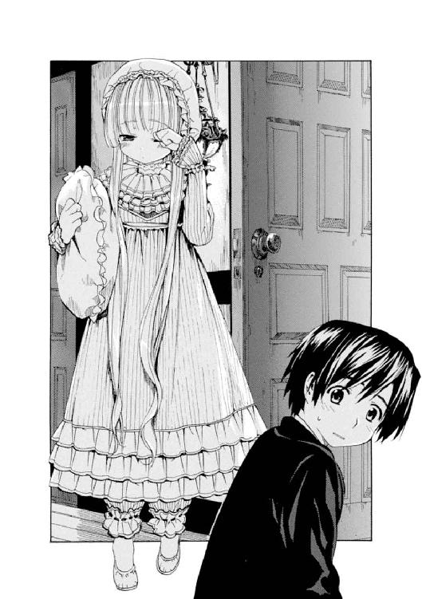
小さな両手で目をこすりながら、
「君、帽子入れの中から栗鼠が出てきたら、いったいなぜだと思う？」
「............はぁ？」
「栗鼠に聞いてみればよいのだ。栗鼠語でなぁ」
「えぇ？」
「ところで、ここはどこだろう？」
「ど、どこって......」
一弥は窓をそっと閉めると、廊下に迷い出てきたヴィクトリカに駆け寄った。
「ヴィクトリカ？ ヴィクトリカ？ おーい。もしかして......君、寝ぼけてるの？」
彼女は小さな手で忙しく目をこすっていた。いつもはぱっちりと見開かれているエメラルドグリーンの瞳も、いまは眠そうに半分以上閉じられ、しぱしぱと瞬きを繰り返している。
「......寝ぼけていない。君は失礼な男だ。レディに対して寝ぼけたとは。それより、ここはどこだ？」
「宿屋だよ。ホロヴィッツの」
「ホロヴィッツ？」
「君がきたがったんだろ。ヴィクトリカ」
「..............................」
長い沈黙。
かすかにヴィクトリカの顔が赤くなった。
それからくるりときびすを返し、部屋に戻ろうとした。一弥はあわてて引き留めた。
「なんだね？」
「いや、その......。眠たいところ悪いんだけど......」
「眠くなどない。いったいなんだね？」
「せっかくヴィクトリカがしゃべるようになったから、聞きたいんだけどさ......」
「......わたしが、しゃべるように？」
ヴィクトリカは廊下と部屋のあいだ辺りに立ったまま、不思議そうに一弥の真剣な顔を見上げていた。二人の顔はすごく近かった。ヴィクトリカのひっそりとした息づかいが顎の辺りにかすかにかかって、むずがゆかった。やがてヴィクトリカが次第に表情を変えた。緑色の瞳を見開き、何度か瞬きして、それから明らかに、しまった、と思っているらしい顔をした。
「..................あ！」
「どうしてずっと黙ってたんだよ？ やっぱり歯痛？」
「ちがう！」
ヴィクトリカは機嫌を損ね、一人で部屋に戻っていった。一弥が後を追うと、部屋の中から入り口に向けて、クッションが、枕が、続いて帽子が、最後に靴が飛んできた。
「うわっ！ ちょっと、君!?」
ヴィクトリカのほうを窺うと、なんと今度は猫足型の椅子を持ち上げようと踏ん張っているところだった。一弥があわてて、
「なにしてるの!? どうしてそんなに怒ってるの!?」
「レディの部屋だぞ、君。入ってくるな！」
「レ、レディって......まぁ、そうだけど............？」
「はぁ、はぁ、はぁ......」
ヴィクトリカはすごく疲れたらしく、椅子を持ち上げるのをあきらめると、かわりにその椅子の上にどかりと座った。椅子は細木造りでいかにも軽そうで、一弥にだったら上に座ったヴィクトリカごと持ち上げてぐるぐる回転することもできそうだった。
一弥は戸惑いながらも部屋に入ってきて、扉の横に、礼儀正しく扉を半分ほど開けたまま立った。ヴィクトリカはそれを睨むと、
「久城、だいたい君はだね、わたしのことを本のほうが好きだなどと言っておいて、自分のほうこそ、ころころといろいろ忘れすぎだ。君という男はだね......」
なにか言いかけて黙った。
窓がかすかに揺れた。風が強くなっているらしい。
暗い雲が窓の外の山脈にたれ込め始めた。濃い群青色の雨模様の空が重苦しくのしかかり、浮かんでいた星々をかき消していった。
遠くで雷鳴が鳴った。
「ヴィクトリカ？」
「......もう、いい」
「だから、なにがだよ？」
「もういいったら、いいのだ」
「なんだよ、もう！」
一弥もいらいらして、思わず壁をゴンッと叩いた。こぶしが痛かったので涙目になり、黙りこむ。
しばらくの沈黙の後、一弥が口を開いた。
「......あのさ、ヴィクトリカ。君、どうしてここにきたんだい？」
「............」
「ぼくが見せた新聞の三行広告。そのせい......だよね？ 君はあれを見たときから様子がおかしいし、とうとう学園を抜け出してここまできちゃって......。君、勝手に学園を出てはいけないんだろう？ 自分でそう言ってたじゃないか。これまではおとなしくしていたのに、広告を見た途端、とつぜんこんな行動を取って......。いったいどういうことなんだよ？」
「............」
「ヴィクトリカ、ぼく怒るよ。君のその態度は、ブロワ警部......お兄さんと同じだよ。あの人が君を無視するのと、君がいまぼくに背を向けているのとは、そっくり同じ態度だ。君はあんなふうに......ぼくのことを嫌ってるのか？ ぼくらは友達じゃないの？」
「............」
「君はぼくに言ったじゃないか。自分のことを、ぼくの、数少ない友達だって......」
一弥はそこまで言って、口を閉じた。
さぁぁぁぁぁ......。
かすかな音を立てて窓の外で雨が降り始めた。霧雨だ。白い霧が立って山脈が見えなくなった。
窓の曇ったガラスを雨の粒が外側から叩く小さな音が響いていた。雨粒はころころと落ちては消えていった。部屋は少し寒くなったようだった。
やがて──
ヴィクトリカが口を開いた。
「ある人の無実を晴らしにきたのだ」
「えっ？」
「コルデリア・ギャロの無実をだ」
一弥は顔を上げてヴィクトリカを見た。彼女は下唇を嚙み、強情そうに眉間に力を入れた顔つきで一弥を睨んでいた。
一弥は思わず廊下のほうをちらりと見て、誰かに聞かれないようにそっと扉を閉めた。ヴィクトリカのほうに近づく。椅子は一つしかないので、彼女が持ってきた箱型のミニトランクを彼女のかたわらに置き、その上にそっと腰を下ろした。下からヴィクトリカを見上げる。
「......これを」
ヴィクトリカは一弥になにか見せようとして、小さな手で寝間着の胸元をいじくり始めた。モスリンの大きなフリルを、めくる。またフリルがあるので、それをめくる。またまたフリルが......。
「......なにしてるの？」
「待て！」
「............」
まだまだフリルをめくっている。
「ねぇ？」
「待て！ 待て！ 待て！」
「......犬じゃないんだからさ」
ヴィクトリカは一弥の言葉に、ついっと顔を上げて、不思議そうな顔をした。
──フリルの迷路からようやく出てきたのは、きらきらした金色のまるいものだった。一弥はしばらくそれをみつめていて、一枚の金貨だということに気づいた。小さな穴を開けて鎖を通し、ペンダントに加工されているのだった。
まるで子供がつくったおもちゃのようで、ヴィクトリカの豪奢な衣装とはあまりにアンバランスに感じられた。なにしろ、金貨に鎖がついているだけのものなのだ。
ヴィクトリカが小声でささやいた。
「コルデリアがこれをくれたのだ」
「......ブロワ警部が、インド風の帽子をかぶった君を見て、その名前を言ったよね」
「コルデリア・ギャロは、わたしの母だ」
彼女の声は小さかった。
ゆっくりとペンダントを裏返してみせた。そこに貼ってあるなにかを一弥に見せようとする。彼女の足元に座っていた一弥が手を伸ばした。その姿は貴婦人から贈り物を受け取る騎士のようでもあった。
金貨の裏側には、一枚の小さな写真が貼られていた。
モノクロームの写真──ヴィクトリカ・ド・ブロワの。
一弥があげたインド風の帽子をかぶったときのように、長い髪を後ろでまとめて、くっきりと艶やかな化粧をしていた。紅い唇の艶めかしさが、一弥に激しい違和感を抱かせた。それはまったくヴィクトリカらしくない色──大人の色だった。
「......これ、あの......君、なの？」
「ちがう」
ヴィクトリカは首を振った。
「それがコルデリア・ギャロだ。わたしの母」
一弥は息を呑んだ。
夜空から雨がしたたかに降り始め、窓を激しく叩いた。
ヴィクトリカは下唇をかみしめて、猫足の椅子にじっと座っていた。
「母は踊り子だった。羅紗の衣装に異国風の化粧をして舞台に出ていて、たいへんな人気者だったということだ。だがしかし、母の行く先々ではじつにさまざまな事件が起こってね。謎めいた女性であったと言われている」
ヴィクトリカの声は、大図書館の最上階で南国の木々と書物に囲まれているときと同じ、平坦で落ちついたものだった。
窓の外では雨が降り続き、部屋の中も少し冷えてきた。一弥はミニトランクに座って膝を抱え、ヴィクトリカを見上げていた。
「母はある時期ブロワ侯爵と関わりがあり、わたしを生んだが、その後に姿を消した。わたしはわけあって侯爵家の塔の上にある部屋に隔離されて育っていた。生みの母のことは知らされていなかったが、ある夜、塔の上に母が上がってきて、この金貨のペンダントを渡してくれたのだ。窓の外に母がいた。わたしとそっくりなのですぐにわかったがね」
「窓の外？ 塔の!?」
「コルデリアはとても身軽なのだよ......。とても、とてもね......」
一弥は押し黙った。
「母はいつもわたしを見守ってくれている」
「......うん」
「母は、ソヴュールに根付く灰色狼の伝説の元になったと思われる、とある村の出身でね。その村の人々は十六世紀初頭から山奥に住み、文明と切り離された生活をしていると言われていた。小さく金色で、とても賢く、だがきわめて不思議な村人たちだとね。その村の出身者を街で捜すことは困難だ。ほとんど村からは出ないのだから。だがブロワ侯爵は、その特別な力を一族の血に取り入れたいと願った。そして人気の踊り子がどうもそれらしいと調べると、彼女を自分のものにしたのだ。しかし生まれた子供は侯爵が望んだ男子ではなく、わたしだった。そしてその後、母が生まれた村を追われた理由を知った。母は村でメイドとして働いていたが、ある夜おそろしい罪を犯し、村を追放された。彼女は罪人だったのだ。呪わしい血を一族に取り入れてしまったと、ブロワ侯爵は後悔した。そして生まれた子供──わたしの様子もただならなかったため、恐れ、塔に閉じこめて育てた。ただ書物と、有り余る時間だけを与え......。母は逃げ、やがて始まった世界大戦の戦火に身を投じた」
ヴィクトリカは言葉を切った。
一弥の手からペンダントを受け取ると、首に巻きつけた。シンプルな金貨のペンダントは、またフリルの海の奥深くに沈んでいった。
「わたしはずっと知りたかったのだ。母が生まれ、村人によって追われたという村を」
「うん......」
「すべての元凶はその夜に戻る。母がおそろしい罪を犯したという夜に。それさえなければ、母は村を追われることはなかった。わたしという存在も生まれることはなかったのだ」
「......それは困るよ」
ヴィクトリカはびっくりしたように緑色の瞳を見開いた。それから両手を唇に当て、ぷふふっと吹き出した。
一弥は顔を赤くして、
「な、なんだよ」
「君は愉快な男だ、久城」
「......悪かったね」
ヴィクトリカは笑った。それから片手を上げると、ぴしりと部屋の扉を指差した。
「もう寝る。君、出ていきたまえ」
「......むっ？ わ、わかったよ。レディの部屋だからね」
「わたしはもう寝る。すぐに寝る。ほら、出ていきたまえ」
「わかったってば！ もう......おやすみ、ヴィクトリカ」
一弥はあわてて立ち上がり、部屋を退散しようとした。
ドアの前に立ったとき、後ろからなにか言われた気がして、振り向いた。
気のせいだった。ヴィクトリカの口は閉じられていた。でも、黙ったままじっと一弥をみつめていた。
「......ん？」
「わたしは、母の無実を晴らしにきたのだ」
「う、ん......」
一弥は戸惑って彼女をみつめ返した。見慣れたヴィクトリカの顔が、まるで知らない人のそれのように遠く思えて、急にとても不安になった。
ヴィクトリカは言った。
「これは戦いなのだ。灰色狼の村と、彼女の」
「う、ん......」
「だから、コルデリア・ギャロが勝つまで、わたしは帰らない」
──廊下に出ると、誰かが行き違いに扉を閉めたらしい、小さな音がした。
顔を上げると、ミルドレッドが借りている部屋の扉が......かすかに揺れていた。
３
──翌朝。
一弥とヴィクトリカが宿屋の食堂で紅茶とパンとコールドハムの朝食を取っていると、若い男たちがどやどやと降りてきた。
髭を生やして鼈甲縁の眼鏡をかけた中肉中背の男が、階段を降りながら早口でひっきりなしにしゃべっている。どうやらお喋りな性格らしい。同じぐらいの背丈で、やけに高級そうな仕立てのジャケットにピカピカの金時計をはめた男が、人の良さそうな笑顔を浮かべて相づちを打っている。その声は甲高くてよく響いた。
二人の後ろから大柄で猫背な男が降りてきた。大柄な男だけが、一弥たちに気づくと少し顔を赤らめ、消え入りそうな小さな声で挨拶をした。どうやらずいぶんと内気な青年らしい。
彼らは椅子に腰掛けると、紅茶にミルクをどばどばと入れ、パンをかたまりのままつかんで食べ始めた。旺盛な食欲だった。
髭を生やして鼈甲の眼鏡をかけたお喋りの男が、ひっきりなしにしゃべりながら一弥たちに自己紹介をした。それによると三人はソヴュールの美術大学の学生で、絵画の勉強をしているのだという。旅行が趣味で、三人連れだって田舎を巡っては、スケッチなどをしているらしい。
「こいつの家が金持ちだから。外の車、見たかい？ デリクが親に買ってもらった自動車さ」
肩を叩かれた、金時計に高級ジャケットの男が、甲高い声で返事をした。彼の名前はデリクというらしい。髭の男と同じぐらいの体格だが、こちらはつるりとした女性的な顔をしていた。よく喋る髭の男は、アランと名乗った。もう一人、三人の中でいちばん背が高い男は、恥ずかしそうに小声でラウールと名乗った。よほど恥ずかしがり屋なのか、名前を名乗るだけでまた少し赤くなっている。
アランが楽しそうに、自分たちは最新式のドイツ車で灰色狼の村に行くんだと自慢をし始めた。自動車を買ってくれたデリクの親を褒め称えている。どうやら三人はデリクの財布を頼りに旅をしているらしく、ことあるごとにデリクを立てるが、ボスはお喋りのアランのようだった。ラウールは黙って笑みを浮かべていた。いるかいないかわからないようなおとなしい青年だった。
そこに、宿屋の主人が紅茶のお代わりを持ってきて、彼らの会話に口をはさんだ。
「残念だけど、自動車で灰色狼の村に行くのは無理だよ。あの山は勾配がきついから、自動車ではとても登れない」
「......まさか！」
車の持ち主であるデリクが、甲高い声で抗議し始めた。アランも驚いて大騒ぎをし始めた。ラウールは黙って不安そうな顔をしている。
「馬車を雇うことだね。馬なら、あの勾配でもなんとか登ってくれるだろう」
デリクはあきらめたらしくうなずいたが、髭のアランはいつまでも大声で文句を言っている。無口なラウールは困ったようにアランをみつめていた。
そこに、いちばん寝坊したらしいミルドレッドが、大きな足音を響かせて歩いてきた。大あくびをしてだるそうに、
「おはよーさん......」
「......うわっ！」
一弥は思わず声を上げた。またもやシスターからは、お酒の匂いがぷんぷんしていた。三人の大学生もそれに気づいて、不思議なものを見るようにミルドレッドをみつめた。
宿屋の主人がのんびりと、
「この子供たちも行き先は同じだよ。だから一緒に馬車を雇うんだね。五人で乗れば一人当たりの値段も安くつく」
「......六人だよ」
だるそうに席に着いたミルドレッドが、よろよろとした仕草で挙手した。全員が驚いたように彼女を振り返った。
「アタシも行くんだよ」
「......どうしてですか？」
一弥が問うと、ミルドレッドはキッと一弥を睨んだ。
「どうしてでもいいだろ。アタシも行きたいってことさ。六人だ。よろしく、あんたたちも」
三人の大学生は、ぷうっと吹きかけられたミルドレッドのお酒くさい息に目を白黒させながらもうなずいた。
遠くで雷鳴が鳴った。
まるで肉切り台の上に載せられた肉のかたまりを大包丁で叩き切るときのような、鈍い音が響いた。雷鳴が数回鳴った後、朝方の曇った空はしんと静まり返った。
ぽつん、ぽつん、ぽつん......！
大きな雨粒がいくつも落ちてきて、宿屋の前に立っている一弥たちの服に水の染みをつけた。
「......この箱型馬車だよ。御者の腕は一流だ」
宿屋の主人が、ゆっくりと通りを近づいてくる馬車を指差した。二頭立ての古ぼけた四輪馬車で、御者は長い髭に顔の半ばを隠された老人だった。老人ではあったが、馬車同様に古ぼけたマントの上からも、強靭な太い腕とがっちりした肩が見て取れた。
近づいてきた馬車の御者台から、老人が言葉を投げかけてきた。
「自動車なんてとんでもない。馬車で登るのも、慣れた腕じゃなきゃ無理だ」
老人が言うには、〈名もなき村〉の人々から、もしも広告を見てやってきた客人がいれば、馬車で村まで送るようにと言われているのだという。しかし申し出られた料金は相場よりもずいぶん高かった。一弥が高すぎると抗議しようとすると、金持ちの息子であるデリクが、分厚い財布を取りだして、すぐにお金を払った。
御者が驚いたようにその財布を見て、もう少しふっかければよかったと後悔するように顔を曇らせた。なにか言おうとした一弥を、髭面のアランが止めた。
「いいんだよ。あれぐらい、デリクにはなんでもないのさ」
「......しかし。ぼくも少し払います」
「いいんだって。ま、気にするなよ」
まるで自分が払ったかのようにアランが胸を張った。ラウールと目があった。無口な大男もまた、気にするなと言うように肩をすくめてみせた。
六人は荷物を抱え、三人ずつ向かい合うように座った。馬車がゆっくりと動き出した。
──町中を石畳を蹴りながら進み出した馬車は、やがて泥炭にぬかるむ山中の道に差し掛かると、急にがたがた音を立て始めた。勾配のきついぬかるむ道に差し掛かったのだとわかった。箱型馬車は、まるで巨人に上からつかまれて左右に揺さぶられているかのように、大きく絶え間なく揺れた。
ミルドレッドが「気持ち悪いかも......」とつぶやいた。陽気にしゃべり続けていた三人組が、困ったように顔を見合わせた。
「二日酔いか、シスター？」
髭面のアランが代表して聞く。ミルドレッドは口を開くのもいやだという様子で、首を横に振った。
ヴィクトリカが窓に手を伸ばし、木製の窓を少し開けた。
降り始めた雨が、細かい模様のように窓の外を揺らめいていた。
赤銅色の茨が頑強に絡みあって道の左右に続いていた。雨に打たれても揺れる様子もなく、互いにがっちりと絡みあっている。やがて苔やシダの生い茂る土手が見え、すぐ下には目もくらむような崖がそびえていた。少しでも馬の扱いを間違えたら、真っ逆様に奈落に落ちてしまうことだろう。そのまた向こうには、霧にかすみながら、小山のいただきがのっそりとこちらを見下ろしていた。
ガタンガタンと硬い音がして、馬車は細い古びた石橋を渡った。橋の下には激しく流れる濁流があった。渓谷を流れる寒々しい川だ。
川を渡ると、次第に木々の高さが増していった。草木はオリーブ色で、細かな小雨にしっとりと濡れて揺れていた。黒に近い濃い色の土がその下に広がっていた。どれぐらいの間登り続けただろうか。木々の高さは増し、それにつれ森は暗くなっていった。朝だというのに漆黒の闇に包まれ、この世ならざる場所へ迷い込んだ悪夢のようだった。樫の木々は風雨にさらされたためか曲がりくねり、老婆の背中のようなシルエットをつくっていた。互いに絡みあい白く乾いている。
一弥は小声でヴィクトリカに話しかけた。
「そういえばさ......」
「なんだね？」
「あのシスター、バザーでドレスデン皿を盗んだのに、捕まってないんだよね。それに、ホロヴィッツの出身だって言ってたけど、宿屋の御主人はそんなはずないって否定してた。あの人はいったい......」
「......彼女のことなら、気にすることはない」
ヴィクトリカはなぜか言いきった。そしてその話題には興味なさそうに顔をそらした。一弥は仕方なく黙りこんだ。
──そのままどれぐらいの時間、馬車は走ったか。
やがてとつぜん明るくなった。
森が途絶え、そこに不思議な一角があった。
周囲は山に囲まれて浅い底のグラスのように丸くなっていた。グラスの底に当たる場所に、高い城壁に囲まれ、石造りの家々が密集する小さな町が......。
いや......。
村が、あった。
馬車が停められた。
ヒヒーン......！
二頭の馬がなぜかブルルと音を立てて首を振った。いやがるように暴れる馬を、御者が鞭で無理矢理おとなしくさせる。馬はいつまでも首を振り、イライラと小さく足踏みを繰り返していた。
六人はゆっくりと馬車を降りた。
窪地と馬車が登ってきた険しい道のあいだに、深い崖があった。切り立った岩が分厚い壁となって下へ下へ続いていた。そっと覗くと、目もくらむほどの深さだった。崖は鋭利な刃物のような鋭い岩肌を光らせていた。遥か下に白い一筋が見えた。ごぅごぅと音を立てて激しく流れている。濁流だ。白い泡を立てて激しく水が流れ、岩に当たっては寒々しい波飛沫を上げている。
一弥は崖下から目を離した。石でできた灰色の村を見上げる。
そのとき雲が晴れて、朝日が白々と、苔生した石造りの塔や家の屋根などを照らし出した。
一弥たちは眩しくて目を細めた。
若者三人組が、おおげさなぐらい大きな歓声を上げた。
「さすが！」
「これこそ秘境ってもんだ。すげぇなぁ！」
それを聞いた御者が顔をしかめた。
一弥はかたわらに立つヴィクトリカの顔を窺った。
彼女はじっと、灰色をした石の村を見上げていた。その顔にはなんの表情もなかった。
──崖の向こうに石でできた門柱と鉄製の巨大な扉が見えた。外部からの侵入を防ぐためであるかのように、大きく冷え冷えとしていた。どこからも侵入できそうにないほど高い塀が張り巡らされている。まるで中世の城塞都市そのものの佇まいだった。
木製の古びた跳ね橋が上がっていた。粗末な木板で造られており、使い古されて白く変色していた。幅は馬車が一台余裕を持って通れるぐらいのもので、橋の左右に太い紐が数本、手すり代わりに張り渡されていた。
鉄の扉には、不吉な灰色狼の紋章がくすんで浮かび上がっていた。
「......じゃ、わしはこれで」
御者がそそくさと立ち去ろうとした。
「村の話じゃ、明日の朝に夏至祭が始まって、晩には終わるってことだから。晩にこの場所まで迎えにくるから......」
馬がまたヒヒーン......と乾いた鳴き声を立て、忙しく足踏みした。
一弥が馬車のほうを振り返っていると、背後でがたがたと大きな音がした。そちらに目を向けると、古びた跳ね橋が......。
ゆっくりとこちら側に向かって降りてきた。
そして、重い鉄の扉もまた、ゆっくりゆっくり、開こうとしていた......。
モノローグ─monologue 2─
我々は険しい山を登っていった。
道は勾配がきつく、箱型馬車は左右に大きく揺れ続けた。驚くほどだった。雨が細かく降り続いていた。馬車の中はほとんど誰も口を利かず、ただ轍が立てる音だけが響いていた。
例の小さな少女が、窓を開けた。
連れの東洋人の少年──久城一弥が、心配そうにその横顔をみつめた。
少女の一挙一動に少年が反応するのが、見ていて微笑ましかった。そのくせ二人はすぐに喧嘩を始めるようだ。仲がいいのは大人が見ればわかるが、この子たちには自分たちのことが理解できていないのかもしれない。
馬車は揺れた。
窓の外は絡まる木々の白く乾いた枝が続き、気が遠くなる。
それでもこの先に行かなくてはならない。
あの村に、行かなくてはならない。
少女の横顔にそっと目を走らせる。
緑色の瞳は南国の海のように鮮やかな色で、風雨に晒された暗い森には似合わない。
少年の顔をちらりと見る。
漆黒の瞳はまっすぐな視線を少女に向けている。気は優しいが、なかなか頑固そうな顎をしている。
彼らは知らない。
この同乗者の目的を。
知らないのだ......！
第三章 コルデリアの娘
１
時の狭間を超えて、遠く中世の村に辿り着いたような風情だった。
──降り続ける小雨が、鋸の刃のように切り立って村を囲む山麓から狭い窪地に、乳色をした濃い霧を落とし続けていた。それはさながら、こっくりと色をつけた空気のカーテンのように窪地全体を覆い尽くしていた。
重いクリーム色のカーテンをめくって部屋に入っていくように、一弥たちは霧の中をゆっくりゆっくりと、〈名もなき村〉へ分け入っていった。
橋はとても古く、六人の足が動くたびにギィギィといやな音を立ててきしんだ。遥か下のほうで濁流が激しく流れ、岩肌に当たって白い泡が波打つのが見えた。ひゅうぅぅぅ......といやな風が吹く。六人ともが知らず早足になり、いそいで跳ね橋を渡った。
六人全員が渡り終えた途端、跳ね橋はまた音を立てて上がっていった。門の内側に石製のアーチがあり、その上に櫓らしきものが見えた。男が数人、跳ね橋を動かしている。後ろで結ばれた長い金髪が、腕を動かすたびに大きく揺れる。一弥は彼らに声をかけようとしたが、そのとき強い風が吹いて、より深い霧が男たちの姿も馬蹄形アーチも覆い隠してしまった。
霧が風に揺れて視界を覆ったかと思うと、急にきれいに晴れて、驚くほど遠くまで見渡せるようになった。びゅううっ......と強い風に耳をふさがれそうになる。ヴィクトリカ以外の人々は、耳を両手で覆って怯えたように辺りを見回していた。
「おい、見ろよ」
髭面のアランが指差した。
霧がどんどん晴れていく。
「......あ！」
一弥も声を上げた。
──そこに現れたのは、石造りの四角い家々が並ぶ小さな村だった。苔生した灰色の石を謎めいた高等数学で並べたような、幾何学的な、それでいてばらばらとも思える、不思議な形で造られていた。
開いたままの木戸が、風に揺られてきぃきぃと音を立てた。
小さな広場の真ん中に大きな井戸があった。
......誰もいない。
「遺跡、か......？」
無口な大男のラウールが、感に堪えない様子でつぶやいた。と、デリクがうなずいて、甲高い声でまくしたてた。
「中世の村だな！ 見ろよ、あの聖堂の......」
遠く霧が晴れて見え始めた、石造りの聖堂らしき塔を指差す。
「......薔薇窓と尖塔を！」
「昔の絵画にある、中世の聖堂だな」
アランがかぶっていた帽子を脱いだ。若者三人は敬虔な面もちで聖堂をみつめ、しばし沈黙した。
もの問いたげに振り向く一弥に、デリクが説明する。
「俺たちは美術大学に通ってるから、こういうのには詳しいんだよ」
「ひゅう！」
アランがうれしそうに口笛を吹いた。ミルドレッドはまだ気持ち悪そうにうつむいて、黙り込んでいる。
──また風が吹き、霧がとつぜん、ザザーッ......と音を立ててすべて晴れた。
一弥たちはあわてて立ち止まった。
いつのまにか、目の前に男たちが立っていた。全員が槍や長剣などを手にし、無表情に一弥たちをみつめていた。
「......幽霊か？」
アランがつぶやいた。髭をいじりながら、冗談混じりの口調だった。
その反応も無理はなかった。村が中世の遺跡さながらに古めいているのに似て、目の前に現れた村人たちは、クラシカルすぎる扮装で統一されていた。
男たちは毛織りのシャツに革ベストを羽織り、鋭角に尖った帽子をかぶっていた。女たちのスカートはゆったりとして後ろが大きくふくらみ、髪もレース飾りのついた丸帽子で後ろをふくらませている。
シェイクスピア劇の扮装にも似た、中世そのままの様相──。
そして人々は、全員がよく似通っていた。男も女も金髪を長く伸ばしてきっちり結んでいた。体格は小柄で、職人が丹誠込めて造った人形を思わせる、整った小さな顔をしていた。
村人たちは濁った緑色の瞳で一弥たちをじろりと見回した。表情は固まり皮膚も乾いており、そのせいか、小さくて整った容姿にかかわらず、まるで幽鬼のような生気のない集団に見えた。
村人たちはヴィクトリカに注目した。
ざわめきが広がっていく。
「......コルデリアの娘だ」
「コルデリアだと......？」
「そっくりだ。見ろ、あの顔を」
「不吉な......！」
カサカサと枯葉が落ちるような乾いた声ばかりだった。村人たちは一斉に武器を持ち上げた。あちこちから鉄と鉄の合わさる重い音が響いた。
そのとき......。
どこからか、しわがれた声が響いた。
「待て」
村人が一斉に武器を下ろした。
彼らが自然に道を空け、やがて一人の老いた男が進み出てきた。
古めいたフロックコートを羽織った六十がらみの男──。
ほとんど白といってもよい白金の髪が、長く伸ばされて後ろできつく結ばれていた。もみあげと顎鬚が長く伸び、瞳は皺とたるみに覆われた顔の肉によって半ば隠されている。大きな皺だらけの手でつややかな黒檀の杖を握りしめていた。
男はヴィクトリカの前に進み出ると、まるで聖者の像のような、両手を握りあわせた姿勢で立った。静かな瞳は冷たく濁った光をたたえていた。ヴィクトリカをじろりと見下ろす。
「......コルデリアの娘か。名前は？」
「ヴィクトリカ・ド・ブロワ」
問われたヴィクトリカも、負けないほど低い、老女のようにしわがれた声で答えた。男はかすかに息を呑んだ。
「ド・ブロワだと......？ なんと、この国の貴族の血が混じったか......」
「文句があるかね？」
「いや......。母親は......コルデリアはどうした？」
「消えた」
「なるほど、罪人には心安らぐ暇はあるまい」
「............!!」
ヴィクトリカがぐっと唇を嚙んだ。
「コルデリアは罪人ではない」
「......年長者の言葉に刃向かうのは愚かなことだ。おまえはこの村で育つことができなかったために、子供らしい謙虚さを持っていないと見える。コルデリアでさえ、わしの言葉に逆らわず、おとなしくここを去ったというのに。......まぁ、よい」
男はヴィクトリカの怒りに燃える瞳を気にする様子もなく、村人たちを見回した。
「我らのメッセージを読んでやってきた子孫は、この少女だ。コルデリアの娘。しかし娘に罪はない。追いだすこともあるまい。ともに夏至祭を祝おうではないか」
村人は黙っている。濁った目と目が密やかに合わされるが、誰もなにも言わなかった。
男は続けた。
「わしの言う通りにするのだ。気にするな。不吉なことは起こるまい。たとえこの娘の母、コルデリアが......」
風が吹いた。男の白金色の鬚が揺れた。
「......殺人者であろうとも、な」
──男は、村長のセルジウスと名乗った。村はもう四百年ものあいだここにあり、下界との接触を断って、できるだけ自給自足を心がけて住んでいると言う。
セルジウスの案内で村を歩いていく。
「夏至祭とは、夏に還ってくる先祖の霊を迎えて、豊穣を祈るための祭だ。明日の朝......夜明けとともに始まって、晩に終わる。あなたがたには、明日の晩まで滞在していただきたい」
「明日の晩までか......」
ヴィクトリカがつぶやいた。
「ああ。あと一日と少しということだな。明日の夜明けとともに、広場に山車を出して楽器を鳴らし、森に祭が始まることを告げる。その後少しの時間をおいて、昼前からまた祭を始める。娘たちがハシバミの実を投げるのが祭の始まる合図なのだ。その後、若い男たちに扮装をさせ、広場で寸劇をさせる。〈夏の軍〉と〈冬の軍〉が戦って夏が勝利を収め、〈冬の軍〉の大将である〈冬の男〉が倒されるというものだ。夏の勝利を祝い、その後で先祖を迎える支度をする。先祖は聖堂を通って広場に戻ってくると言われているため、その時間だけは聖堂を無人にしなくてはならない。そして夜になると、選ばれた村人が仮面をかぶり、戻ってきた先祖の役をやって、舞い踊る。祭はそれで終わりだ。一年の平和と豊穣が約束されるのだ......！」
セルジウスの説明は続いた。
だが一弥は、さきほどの〝殺人者〟という言葉に驚いて気もそぞろだった。一方、若者三人はおかまいなく、村の様子を見てははしゃいで大声を上げていた。
「見ろよ、この井戸！」
「石造りの家に、暖炉。煙突も、うへぇ！ 古くさいぜ！」
セルジウスの助手らしくかたわらについている金髪の若者に、アランが自分の持っている最新式の腕時計を自慢し始めた。猟銃を片手にした、村人の中では背が高くひときわ美しい顔を持つその若者は、ちらりと腕時計を見て、それから驚いたようにじっくりとみつめ始めた。
「見たことないのかよ」
「......村から出ませんので」
「本当に？ じゃ、毎日なにしてんだよ」
同世代の若者に、アランが騒々しく話しかける。時計のつぎは鼈甲縁の眼鏡を自慢し、となりを歩くデリクの洋服を引っ張って仕立てを自慢し......。
村長のセルジウスが不快そうに顔をしかめた。長い眉がぴくりと動いた。
セルジウスの案内で、村の中心の広場に向かって歩いていった。広場の向こう側には、切り立った断崖と小さな暗い森があった。村は森に囲まれた小さな丸い形をしているらしかった。城壁に囲まれていたのは入り口の崖のところだけで、村の奥側に壁はなかったが、森のところどころに断崖があり、いかにも危険な様子だった。
小さな村だった。だがその小さな村で、昔のままの生活がきっちり保たれているということに、一弥は驚きを感じた。
と、そのとき......セルジウスがちらりと森に目を走らせた。
かすかに木の枝が風に揺れた。
カサッ──！
つぎの瞬間、セルジウスが助手の若者から猟銃を奪い取り、持ち上げた。森に向かって銃口を向ける。
上機嫌でしゃべるアランやデリクは、気づかない。
助手の若者がアッと息を呑んだ。
──乾いた銃声が響いた。
アランたちは三人揃って飛び上がった。驚いたように顔を見合わせ、
「な、なん、だよ？」
「......狼だ」
セルジウスはこともなく言った。
「この辺りの山には、野生の狼が棲んでいる。体も大きく、なかなか強靭でね。みつけたら、村に近づかないよう脅すのだ。こうやって」
若者たちは顔を見合わせた。
「森にはわかりにくい断崖が多く、また野生の狼がいるので、そちらには入れない。安全に村に入る唯一の方法が、跳ね橋を渡ることなのだ」
助手の若者は怯えたように口をきつく結び、それきり一言もしゃべらなかった。
おしゃべりのアランが髭をいじりながら、セルジウスに声をかけた。
「だけどじいさん。麓のホロヴィッツでは、この村に住んでいる人間のことを灰色狼って呼んでたぜ？ とにかく得体が知れないってさ。な？」
同意を求められた無口なラウールが、大きな体を縮こまらせ、怯えたように猟銃を横目で見ながらも、うなずいた。助手の若者は、よりによって村長がじいさんと呼びかけられたことに息を呑み、怒るべきだろうかと迷うように、アランとセルジウスの顔を見比べた。
と、セルジウスが乾いた笑い声を上げた。
「そんなはずはない！ 我々はただの人間だ。こんな山奥で古めいた生活をしていると、いろいろ邪推されるというだけだよ」
「へぇ......」
アランがうなずくと、デリクが甲高い声で笑った。つられてラウールもにやにやした。
「......ただ、ほんの少し種族がちがうというだけだ。下の人間はそれ──種族の違いを、皮膚で感じているのだろう。我々からはなにもしていないのだからな」
セルジウスは妙な言葉を付け足した。そしてそのまま歩いていった。
乾いた石畳の道が続いていた。一同は村の中心にあった広場を通り抜け、古めかしい建築の聖堂を横手に眺めながら通り過ぎた。聖堂の裏に、霧にかすむ墓地が薄ぼんやりと浮かんでいた。なぜか不吉な気がして、一弥は顔を背けた。墓地の向こうには黒ずんだ森がこちらに迫りくるように盛り上がり、木々の枝のあいだをやはり濃い霧がみっしりと覆っていた。
狭かった道幅が急に大きくなった。これ以上進んだら森に入りこんでしまう......と思ったとき、セルジウスが足を止めた。
広くなった石畳の道は、ゆるやかな傾斜で上へ続いていた。薄いオーガンジーのカーテンのような霧が何層も覆い尽くして、風に揺らめいていた。幾つもの霧の層が、風に揺られて上に舞い上がった。そのとき、道の先──小高い不吉な黒みを帯びた丘に、背骨を折り曲げるように丸くうずくまる巨大なモノが見えた。
想像できないほど大きな体を持った、灰色のモノだった。ミルドレッドが声にならない悲鳴を上げた。
巨大な灰色の動物──！
いまは黒ずんだ暗い丘にうずくまっているが、いまにものっそりと起きあがり、こちらに首をもたげたかと思うと、後ろ足で丘を蹴り壊しながら襲いかかってきそうな......。
巨大な灰色狼の姿......。
思わず、麓のホロヴィッツで聞いた不吉な噂が脳裏をよぎった。怯えたような宿屋の主人の暗い顔も。
〈灰色狼が棲んでいる──〉
〈やつらを怒らせてはいけない──〉
〈つまらないことで彼らを怒らせてはいけない──〉
〈おそるべき人狼たちだ──〉
びゅうっと風が吹いた。
（......あれっ？）
一弥は目をこすった。
巨大な姿のそれが、しかし、石でできていることに気づいた。冷たく乾いた灰色の無機物。そしてつぎに、それもまた目の錯覚だったことに、気づく。
それは、暗い灰色をした、大きな館だった。
石造りの平坦な造りだった。左側にある高い塔が、動物のもたげた頭部のように見えたのだった。玄関のポールは凝った円花飾りで造られ、屋根の飾りも美しかった。だが、天気のいい日なら眩しい白亜の建物に見えるかもしれない石の外壁は、いまは濃い灰色に不吉に沈んでいた。
黒一色の筆ですべてを描いたような──豪奢だが色彩に乏しい、不思議な館だった。
館の周りで、細い花壇が不思議な模様を造っており、名前のわからない赤色をした花が揺れていた。鮮やかな色彩はそれだけで、花壇は赤い血管がのたうつように不吉で暗い印象を投げかけていた。
セルジウスがしわがれた声で言った。
「ここが、わしの館だ」
一弥たちは顔を見合わせた。セルジウスは続けた。
「君たちは夏至祭のあいだ、ここに泊まってもらう」
館は大きく、薄暗かった。
豪奢な造りで、どの部屋も磨き込まれたマホガニーの家具やビロードのカーテンに囲まれ、石造りの粗末な村とはずいぶん趣のちがう館だった。
大きな玄関を入ると、赤絨毯の敷かれた大階段があり、奥にシャンデリアの輝くホールがあった。大階段を上がると長い回廊があり、重苦しいカーテンがたれ込めていた。天井近くの壁灯が橙色に揺らめいていた。
薄暗い回廊には、先祖たちの肖像画がかけられていた。どの顔も整っていかめしく、金髪を長く伸ばして結んでいた。もっとも手前にある肖像画がいちばん若く、まだ四十代に差し掛かったばかりと思われた。
一弥たちが肖像画を見上げていると、どこからか、あどけない子供のような声がした。
「それがシオドア様。殺された村長です」
ヴィクトリカの肩がびくっと揺れた。
全員、声のした方向を振り返った。
洋燈を手にした女が立っていた。年の頃は二十五、六歳か。濃い金髪を細いたくさんの三つ編みにして、一つ一つをくるりと巻きこんだ凝った髪型をしていた。きれいに整った顔はしかし、表情にとぼしく、壊れた人形のようだった。カタリと真横にかたむけた首は、いまにもごろりと音を立てて床に落ちそうに思えた。
翡翠を思わせる濁った緑色の瞳は、薄闇によく光った。
──その服装から、彼女がメイドであることがわかった。村長のセルジウスと同じく、クラシカルなスタイルの服を身につけている。スカートの丈は長く、後ろが大きくふくらんでいる。腰はコルセットで細く締め、首もとは白い襟で肌が見えないよう覆われていた。
セルジウスが振り返り、
「彼女はハーマイニア。この館のメイドだ」
ハーマイニアは片膝を折って、軽く会釈をした。
それから冷たい瞳でヴィクトリカを見下ろした。
「コルデリアにそっくりですわ」
──一弥は息を呑んだ。
彼女の声は、さきほどの子供のような声とはまるで別人のものに聞こえた。今度の声は男のように低く、太かった。
ハーマイニアはしゃべり続けた。声は高くなり、低くなり、男か女かも、大人か子供かもわからないぐらい自在に変わった。
「わたしはまだ子供だったけれど、よく覚えています。コルデリアが追放されたときのことを。ちょうど二十年前。この館で......」
「ハーマイニア」
「シオドア様の書斎で、コルデリアが金貨をばらまき、シオドア様を......」
「ハーマイニア」
「短刀で......」
「ハーマイニア！」
「............」
口を閉じると、ハーマイニアはつっと左手を上げた。
皆が見ていると、彼女は濁った翡翠のような目に、左手の人差し指を近づけた。下瞼をぐっと引っ張り、人差し指の腹でぐりぐり、ぐりぐり、と目をこすった。
おそろしい力で目をこすっているように見え、一弥たちははっと息を呑んだ。ハーマイニアの左目の、白目の下のほうがよく見えた。赤い毛細血管がたくさん集まり、細かいひび割れのように白目を細く赤く染めている。
ぐりぐり、ぐりぐり......。
白目がむき出される。
ぐりぐり、ぐりぐり......。
ハーマイニアは急に、目から手を離した。
──洋燈の灯がとつぜん、少し暗くなったように感じられた。
「事件は書斎で起こった。いまはもう誰も使っていないがね。一階奥にある古い部屋だ」
ハーマイニアが用意した軽い昼食を前に、一同はダイニングルームのテーブルを囲んでいた。
大理石のマントルピース。黒光りする鏡板の壁には、四隅にガラス細工の壁灯がかけられている。壁には絵が何枚か飾られている。豪奢な部屋なのに、なぜか息苦しい。一弥はふと、天井の低さのせいではないかと気づいた。部屋も廊下も天井が低く、いまにも押しつぶされそうな不安感をそそる造りだった。......村の人々が小柄なせいだろうか。
運ばれてくるサンドイッチや紅茶、焼き菓子などは、すべて揃いの銀食器に載せられていた。幾世紀前から磨かれ続けたのだろうか。古いが、よく磨き込まれて鈍く輝いていた。
セルジウスが話している。
「書斎には、夕方から村長のシオドア様が一人でこもっていた。夜の十二時になると、メイドのコルデリア──当時十五歳の少女が、水差しの水を替えにいく習わしだった」
十五歳なら......と一弥はひとりごちた。いまの一弥やヴィクトリカと同じ歳だ。
「わしは当時、シオドア様の助手をやっていたからね、この館にいた。ほかの男たちとともに廊下の前を通りかかったとき、ちょうど、書斎に入ろうとするコルデリアの後ろ姿が見えた。彼女はいつも通り、無骨な鉄の燭台を持っていた。ノックをしてから、ドアノブに手を伸ばした。鍵がかかっていたらしくドアは開かなかった。いつもは鍵などかかっていないのだが、シオドア様はあまり邪魔をされたくないとき、ときどき鍵をかけるのだ。コルデリアは鍵を取りだして扉を開けた。そのときわしたちは廊下の前を通り過ぎた。時間は十二時ぴったりだったと思う。わしは懐中時計を見たのでね。コルデリアも時間に正確な人間だった。しかし一緒にいた男たちの、時間に関する証言はなぜかまちまちで、いまとなっては何時だったのかはっきりしない。ともかく......」
若者三人はむしゃむしゃと食事をしながら、古くさい食材だのなんのと、ひっきりなしにケチをつけていた。アランが大きな声でなにか言うたび、デリクが甲高い声で返事をする。ラウールは黙っていたが、銀食器をめずらしそうにじろじろ見たり叩いてみたりを繰り返していた。三人ともセルジウスの話には興味がないらしく、ろくに聞いていなかった。
ミルドレッドはまだ二日酔いなのか、気持ち悪そうに押し黙っていた。食も進んでいないようだ。
ヴィクトリカはセルジウスの話に耳を傾けていた。
「......コルデリアが、叫び声を上げて書斎から飛び出してきた。わしたちはあわてて駆けつけた。恐怖にかられて暴れるコルデリアを押さえつけて、書斎に入ると......書斎は闇に沈んでいた。燭台で床を照らすと、シオドア様がうつぶせに倒れていた。すでに絶命していた。短刀で、背中の上部を背後から刺され、胸から血に染まった刃先が突き出ていたのだ。そして、なぜか......」
セルジウスは一度言葉を切って、じつに不思議そうに言った。
「床に、金貨がたくさん散らばっていた」
「......金貨？」
「そうだ。二十枚近くあったはずだ。しかしこの村では、金貨などというものは使われないため、普段はシオドア様がまとめてしまっていたはずだ。金貨はシオドア様の血に浸かり赤く染まっていた」
「......」
「その夜から、コルデリアは高熱を出して寝込んだ。うわごとのように『まるいもの、まるいものがたくさん、きれい......』と繰り返していたらしい。おそらく金貨のことを言っていたのだろう......。そのあいだにわしたちは話し合った。そして十日後。コルデリアの熱が下がり、起き上がれるようになるのを待ち、わしたちは......いや、つぎの村長となったわしは、彼女を村から追放した」
「追放......？」
一弥が聞き返した。
「そうだ。トランク一つと金貨一枚を持たせて村から出すと、跳ね橋を上げた。その後のことは、山を無事に降りられたのかさえ知らなかった。野生の狼、険しい断崖、そして渓流......。村を一歩も出たことのない娘に、無事に麓の町までたどり着けるとは思えなかった。......いまも思い出す。まるいもの......金貨一枚を握りしめ、緑の瞳いっぱいに涙をためて、無情に上がっていく跳ね橋を見上げていたあの顔を。コルデリアは孤児だった。誰もあの子に山を降りる方法を教えず、防寒具も食べ物もなにも与えなかった。あの子の唯一の保護者が、村長の助手であったわしで、身寄りのないあの子に館のメイドをさせていたのだ。そのわしがコルデリアを罰したのだ......。罪人となった、病み上がりのコルデリアは、一人で数日かけて山を降り、都会に出て......しかし、なんとかして生きていったのだろう。こうやっていま、娘がやってきたということは」
一弥は聞き返した。
「そんな......どうして？ 追放だなんて......」
「コルデリア以外に犯人は考えられなかったのだ。書斎には内側から鍵がかかっていた。それは彼女自身も認めておる。そして書斎に誰もいなかったことも。書斎の鍵は二つしかなかった。そのうちの一つはシオドア様が身につけていたし、もう一つはずっとコルデリアの手にあった。それに彼女は書斎に入ったとき、手にした燭台できっちり見渡したと言っていたのだ。シオドア様と彼女以外には誰もいなかった。コルデリアは、そのときもうシオドア様は死んでいたと言うが、つじつまがあわん。おそらく彼女が書斎に入った後、なにかが起こったのだろう。そしてコルデリアは、シオドア様を殺してしまった。その後熱を出したのも、自責の念からだろうということになった」
「でも、それだけじゃ......。彼女が犯人だという明確な証にはならないのでは......」
「わしの判断にまちがいはない」
セルジウスは低い声で言った。
「そしてわしは、シオドア様が死んだためにつぎの村長となった。わしの決めたことは絶対のこととなるのだ」
「だけど......」
「罪人は置いておけぬ。村に厄がやってくるからだ。村を守るのがわしの務めだ」
「............」
「コルデリアは罪人なのだ。そうとしか考えられぬ」
セルジウスは頑固に繰り返した。
静かに聞いていたヴィクトリカが、ふいに言った。
「その書斎に入りたいのだが」
セルジウスが首を振った。
「それはいかん」
「なぜだね？」
「......客人に勝手にうろつかれては困る」
セルジウスは不機嫌そうにそう言うと、それきり押し黙った。
２
それぞれに用意された部屋は、館の三階奥にある客用寝室だった。十分な広さがあり、部屋の中央には天蓋付きの大きなベッドが鎮座していた。鏡は胸から上が映る大きさで、壁に作りつけになっていた。部屋の奥に、光沢あるビロードのカーテンが重そうにかかっていた。
ヴィクトリカ、一弥、ミルドレッド、アラン、デリク、ラウールの順に、端から部屋を割りあてられた。一弥は黙りこんでいるヴィクトリカの荷物を持って、彼女の部屋に運びこんだ。ヴィクトリカは一弥のほうを見もせずに、白い顎に小さな手を当てて考えていた。
パイプをくわえ、火をつける。
それからぎゅっと背伸びをして、窓の端にある紐に手を伸ばし、思い切り引っ張った。
カーテンが波打ちながらゆっくり開き、石造りのバルコニーと鬱蒼とした樫の大木の景色が広がった。
ヴィクトリカは目を細め、じっと景色を見下ろしていた。一弥が「......どうしたの？」と言いながら彼女に並んだ。
木々のあいだから、古めかしい聖堂の裏にある、うらぶれた墓地が覗いていた。
ヴィクトリカはしばらく黙っていた。
それからとつぜん部屋を出ていった。一弥はあわてて、
「どこに行くんだよ？」
「散歩だ」
「散歩......？」
「............」
ヴィクトリカは答えず、磨き込まれた青銅のてすりに片手を置くと、大理石の大階段をゆっくり下りていった。
真鍮のバケツと白い布を手に掃除していたハーマイニアが、蛇が鎌首をもたげるようにくにゃりと首を曲げ、小さな少女の姿を目で追った。
──ヴィクトリカは、館の玄関を出ると、ゆっくりした足取りになった。一弥はようやく追いついて、となりを歩きだした。
石畳の小径で、数人の村人とすれちがった。誰もこちらを見ようとしない。ヴィクトリカもまた、彼らのほうを見向きもせずに歩いていく。
「......どこへ行かれるのですか」
急にどこからか声がした。一弥が振り向くと、いつのまにか背後に......霧にまぎれるようにして一人の青年が立っていた。
青年は、村人の一人であると一目でわかるような、シェイクスピア劇の登場人物のように古めかしい衣装を身につけていた。長い金髪が後ろできっちり結ばれ、透き通るように白い肌は少女のようにすべすべしていた。ヴィクトリカと同じ深い緑色をした瞳には、しかしなんの表情も浮かんでいなかった。冷たい能面のような顔──。
一弥は青年が誰なのかを思い出した。セルジウスの助手として、かたわらについていた青年だ。アランたちの時計や衣服にいちいち驚いていた、あの......。
「ぼくが案内します。あ、ぼくはアンブローズといいます。よろしく」
青年──アンブローズが、一弥とヴィクトリカに名乗った。一弥はおやっと思った。青年の印象がとつぜん変わったのだ。笑顔で話しだした途端、彼は生き生きとした明るい青年に見え始めた。頰にも生気がみなぎり、薔薇色に染まっている。貴婦人然とした彫りの深い整った美貌には、愛嬌のある楽しそうな表情が浮かび始めた。
「外からのお客人は久しぶりなので、その、うれしくて。でも、あまり調子に乗らないようにしますけど......」
「あなたはぼくたちを歓迎してくれるんですか」
一弥は意外に思って、聞いた。
「............」
アンブローズは困ったように沈黙した。
「......村人たちはみんな、変化を好まないんです。べつの文化に暮らす人々との接触は、あまり好ましくないと考えているんです。外の世界の人たちはよくない生活をしていると......セルジウスさまが......」
「ふぅん......？ アンブローズさんもそう思うんですか？」
「ぼくは、よくは............」
アンブローズは沈黙した。
それから、一弥の顔や姿を観察し始めた。どうにもじろじろ見られるので困っていると、つぎにアンブローズはおずおずと手を伸ばした。高貴な貴婦人のような姿に、一弥はつい遠慮がちになり、されるがままになっていた。アンブローズはめずらしそうに一弥の頰を撫でたりこすったり、髪の毛をつまんだり引っ張ったりし始めた。一弥はしばらく我慢していたが、ついに、
「......なんですか！」
「いや、どうして肌や髪の色がちがうのかと。外の世界の人は金髪とは限らないと知っていましたが......」
どうやら、東洋人を見るのは初めてらしい。いやがる一弥の目を覗きこんだり、顔の彫りを確かめるように手のひらでぺたぺた撫で回したりするのに、一弥がついに、
「ヴィクトリカ、助けて！」
呼ばれたヴィクトリカは、興味なさそうにふんと鼻を鳴らした。そしてアンブローズを見上げた。
「......君、案内してほしいところがあるのだが」
アンブローズが笑顔で聞いた。
「どうぞおっしゃってください。その代わり、もう少しこの人を触っていていいですか？」
「好きにしたまえ」
「ヴィッ......！」
ヴィクトリカはフンッとそっぽを向いた。
そして小声で言った。
「コルデリアの住んでいた家だ」
──アンブローズの指が、急にすうっと冷たくなった。一弥の顔から手を離し、ヴィクトリカを睨む。その顔にはもう生気はなく、村人たちと同じ濁った目に、ひんやりした無表情だけが浮かんでいた。
コルデリアの家は、村人たちの四角い石造りの家が並ぶ一角に、ぽつんと残されていた。
それ自体が禁忌であるというように、ほかの家から離れたところに孤島のようにたゆたっていた。手入れされていないためか、外壁は風雨の染みとからまったまま枯れた蔦がつくるカラカラに乾いた模様に彩られ、ひどく寂れていた。
案内してきたアンブローズは、逃げるようにその場を離れ、霧の中に消えていった。
一弥ははらはらしていたが、ヴィクトリカは平気な様子で扉のドアノブに手をかけた。鍵はかかっていなかった。長い時間に堆積した汚れで、ヴィクトリカの小さなふくふくした手のひらが真っ黒になってしまった。一弥がハンカチを取りだして手を拭いてやる。ヴィクトリカは面倒くさそうに一弥をふりほどくと、小さな家に入っていった。
驚くほどせまくて、古びた部屋だった。
村のどの家もこうなのだろうか？ 寒々とした石の壁に仕切られた部屋は、小さな台所と寝室があるだけで、暖炉と呼ぶにはあまりにも粗末な囲いが、壁際で埃をかぶっていた。使い古された机と椅子。ほつれた木綿のシーツがかけられた小さな木のベッド。薄暗い部屋は、家具の一つ一つが粗末で古びていた。それは、村人たちの濁った目と生気のない顔つきと重なるイメージだった。
一弥はこの部屋と、村長のための豪奢な館のちがいに気づき、ひそかに愕然とした。
（まるで、まったくべつの場所みたいだ......！）
しかし、コルデリア・ギャロが一人で住んでいたという部屋は、目が慣れてくると、ところどころに少女らしいかわいらしい飾りつけが見て取れた。ジャムが入っていたガラス瓶に野の花をかざっていたらしく、窓際にその名残が置かれていた。カーテンはボロボロになってはいたが、かわいらしい模様がつけられた手縫いのレースだった。
二十年前まで──この部屋に確かに少女がいたのだと感じられた。一弥は急に、部屋から濃密な少女の気配が......いまはもうここにいない人の存在が、甘く迫ってくるように感じられた。
ヴィクトリカが大切に持っていた、あの写真──。
彼女と顔こそよく似ているが、見慣れない艶やかな化粧で婉然とこちらをみつめていた、謎めいた大人の女性──。
コルデリア・ギャロがここにいたのだ、と。
ヴィクトリカは、一言もしゃべらずに部屋を見回していた。かわいらしい赤い唇をきつく嚙んで、部屋のあちらこちらを歩いては、観察を続けていた。
「......なにしてるの？」
「わからない。なにかを探している」
ヴィクトリカは振り向いた。眉間にぎゅっと力を込めたとても必死な顔だったので、一弥も真剣な顔になった。
「わたしたちは、明日の晩までしかこの村にいられない。夏至祭が終われば追いだされてしまう。だからその前に、わたしはなにかをみつけなければいけないのだ......！」
「うん......」
ヴィクトリカは部屋中を探し回った。少しずつ動きが速くなっていく。埃が舞い、一弥は咳き込んだ。やがてヴィクトリカは、あきらめたように動きを止めると、
「......なにもないな」
「そうみたいだね......」
「母はなにかメッセージを残している。この村になにかを......。そんな気がしてならなかったのだ。だがみつからない......」
ヴィクトリカは唇を強く嚙んだ。
それからしゃがみこむと、小さな拳を固めてトントン、トントンと床を叩き始めた。白い埃が舞った。一弥はさらに咳き込みながら、
「なにしてるの？」
「......床を叩いている」
「そりゃ、見ればわかるけど......」
「床の音が変化する場所があれば、下に空洞があるということになる」
「......じゃ、ぼくがやるよ。君は立ってて」
一弥は床に膝をつくと、几帳面に部屋の隅から始めて、トントン、トントンと拳で叩き続けた。トントン、トントン......。台所の床を叩き終わり、寝室に移動する。まもなく、音が大きく反響する場所をみつけた。ヴィクトリカがちょこちょこと近づいてきた。
二人で床板を上げる。
埃が大量に舞い上がる。
下に......小さな空洞があった。本が二、三冊入るほどの浅い四角い穴だった。そこにはなにもないようだったが、よく見ると、埃に隠れて一枚の写真が残されていた。
二人は顔を見合わせた。
ヴィクトリカが手を伸ばして、その古い写真を握った。
小さな白い人差し指で、溜まった埃を払う。
──貴婦人の写真だった。
髪を結い上げて真珠の飾りを輝かせ、胸元の開いたドレスを身につけている。なにかを抱いている。絹とレースに縁取られた柔らかな布に包まれた、赤ん坊だ。
母と子の写真──。
貴婦人の顔は、コルデリア・ギャロにまちがいなかった。
ヴィクトリカが持つ金貨のペンダントに貼られた写真と、同じ人物だ。
大人になったコルデリア・ギャロと、その子供の写真......？
「......どうしてここにこんな写真が？」
ヴィクトリカはつぶやいた。
「久城、これはおかしい。コルデリア・ギャロは十五歳のときに村を追われたのだ。それきり彼女は戻ってきていない......はずだ。それから遥か二十年の時が過ぎている。だがこの写真の彼女はすでに大人になっているし、赤ん坊がわたしだというなら、おそらくこの写真は十年ちょっと前に撮られたもののはずだ。久城......」
ヴィクトリカは顔をしかめた。
「この欠片はなにを意味する？ この混沌は何処へ向かっているのだ？」
「ヴィクトリカ......」
「誰かがここにきたのだ。コルデリアが追放されてから数年後に。そしてその〝誰か〟はこの家にきて、おそらく、隠し場所に残されていた〝なにか〟を持ち去ったのだ。さらに、密かなメッセージとして、大人になったコルデリアの写真を残していった。それは誰か？ コルデリアとの関係はなんだ？ そして、ここから持ち去られたものとはなんなのだ？」
ヴィクトリカは首を振った。
「わからないことばかりだ。だがしかし、わたしは欠片を一つみつけたぞ。欠片を一つ......！」
二人はコルデリアの家を出ると、そっと扉を閉めた。
ヴィクトリカは考え事に夢中になっていて、次第に、一弥に説明してくれなくなってきた。扉の前にただ佇んで物思いに耽っている。
一弥はヴィクトリカの髪や服から埃を払い、ほっぺたや手のひらについた汚れをハンカチで拭いてやった。と、ヴィクトリカがどんどん歩きだしたので、一弥は自分の衣服は汚れたままで、文句を言いながら、後をついていった。
「君もぼくもすっかり埃だらけになっちゃったよ。まったく、ぼくは着替えを持ってきてないんだぜ？ それはなぜかって言うと、昨夜君が、どこに行くかぜんぜん教えてくれなかったせいなんだけどね。......聞いてる？」
ヴィクトリカはフンと鼻を鳴らしたきりだった。そのまままっすぐ、聖堂の裏にある墓地へ向かっていく。歩調がどんどん速くなっていく。
「どこ行くんだよ？」
「殺された人間の墓を見るのだ」
一弥は顔をしかめたが、仕方なく後をついていった。
煙のように狭霧が立ちこめる墓地に入ると、急に気温が低く感じられた。濃い緑の蔦が張る古びた墓石が、いくつも続いている。霧に邪魔されて視界が悪かった。一弥は、先に歩いていくヴィクトリカのふっくらしたスカートの裾からのぞくフリンジや、帽子から長く垂れているベルベットのリボンが揺れているのを頼りに、彼女の後を追った。
（しょうがないなぁ、もぅ......！ こんな妙なところでヴィクトリカを一人きりになんてさせられないからな。転んだり穴に落っこちたら困るし......。ぼくがしっかりしなきゃ......）
やがて、ヴィクトリカが足を止めた。
レースのついた革靴が踏みしめる砂利の、乾いた音が響いた。
一弥は、目の前にある苔生した石の十字架に目を留めた。ヴィクトリカの視線はそれに強く注がれ、唇はきゅっと引き結ばれている。一弥は墓石に彫られた名を読み上げた。
「......シ、オ、ド、ア」
二十年前に殺された村長の名だった。墓碑銘には、彼が若かりし頃から聡明な人間であったことや、立派な村長であったこと、不慮の死を遂げたことなどが、古めかしい散文のような文章で綴られていた。一弥が文法に苦心しながらなんとか読んでいると、ヴィクトリカが小さく「......あっ！」と叫んだ。
「どうしたの？」
「久城、これを」
ヴィクトリカの指差す指が少しだけ震えて見えた。
そこには......。
墓地の柔らかな土に埋められた十字架の下のほう、盛り上がった土に隠れるぎりぎりのところに、なにかが見えた。鋭利な石かなにかで無理やり刻みこんだような、小さな手書きの文字のようだった。わずかに一文字だけが覗いていた。ヴィクトリカが小さな手を伸ばして土を掘ろうとした。それは小動物が木の実を埋めようと穴を掘る様子に似ていた。一弥はあわてて彼女を止めると、自分が手を伸ばして、爪の中を真っ黒に汚しながらも穴を掘った。
文字が現れてきた。
だが土が邪魔をしてよく見えない。
一弥がハンカチで十字架を拭いた。ハンカチは黒く染まっていき、少しずつ文字が浮かび上がってきた。
過去からいまへと、不思議な力で蘇るように......。
みつめるヴィクトリカの瞳に、涙が溜まっていく。
そこには......。
〈我は咎人に非ず Ｃ〉
──震える小さな文字だった。
ヴィクトリカはしばらく文字をみつめていた。それからすっくと立ち上がった。
怒りを爆発させるように、小さな足で地面を蹴る。レースのついた革靴を履いた足が、砂利にめりこんだ。
その音か、空気を震わせる怒りそのものかに......驚いたように、霧の向こうで鳥が一斉に飛び立った。バサバサという羽音が絶え間なく聞こえ、やがて遠のいていった。
乳色をした濃い霧の立ちこめる上から、ひらりひらりと白い羽毛が、一つだけゆっくりと落ちてきた。目で追っていると、砂利の上に落ちてぶるる、と震えた。
風が吹いて霧が動いた。
どこからかかすかに......。
笑い声が聞こえた気がした。
かすかな声だった。あの世のざわめきにも似た、甲高く、そのくせ冷え切った妙な笑い声......。
一弥は思わずヴィクトリカに駆け寄った。
ヴィクトリカは、なにも聞こえていないかのように立ち尽くしていた。小声でつぶやく。
「これを書いたのは、コルデリアだ......」
「ヴィクトリカ、もう戻ろう」
「母はやはり、無実の罪で村を追われたのだ」
「ヴィクトリカ......」
「それなら、本当の罪人はどこにいるのだ？」
ヴィクトリカがついっと首を上げた。一弥の顔を見上げる。エメラルドグリーンの瞳にゆらめく霧が映り、白く濁って見えた。
「──犯人はまだこの村にいるのではないか？」
かすかな笑い声が、またどこからか響いた。
ヴィクトリカの瞳に一弥の背後が映っていた。一瞬、風が吹いて乳色の濃い霧が晴れ、その向こうになにか黒っぽい大きなかたまりを見たように思った。一弥は息を呑んで、ヴィクトリカを庇いながら背後を振り返った。
──今度ははっきり聞こえた。
獣の唸り声だ。
が、る、るるる──！
喉を鳴らすようなかすかな声。
続いて、
がるるるるるるるッ──！
唸り声は大きくなっていく。
どこかで嗅いだことのある臭いがした。なんの臭いであるかに気づき、一弥は心臓をぎゅっと摑まれたような気持ちになった。
動物園だ。家族と出かけた動物園に満ちていた臭い。
獣の体から放たれる、あの......。
「ヴィクトリカ、なにかいるよ！」
一弥はヴィクトリカの小さな手を握りしめた。霧はますます厚くたれこめて、重たい布を頭からかぶせられて上から押さえつけられるような圧迫感があった。重量のある布をめくるように手を大きくかざしながら、一弥は走り出した。
「久城？」
「なにかいるってば！ ヴィクトリカ、走って！」
ヴィクトリカが振り向いた。
かぶっていた帽子が飛びそうになり、手を伸ばす。一弥が先に気づいて帽子をつかんだ。また走り出す。
いまはもう、獣の息づかいや苦しそうな唸り声、生臭い息などがすぐ背後に迫って感じられた。石畳の小径に出ると、転がるように駆ける二人の足音だけでなく、その後ろから、蹄のようなものが立てている乾いた音も聞こえてきた。四本の足が絶え間なく石畳を蹴っているのだ。
一弥たちは走り、館の前に着いた。強い風が吹いて、ヴィクトリカのビロードの帯のような長い金髪を大きく上に吹き上げた。
霧が晴れていく。
二人は玄関の扉を開けた。
一弥がヴィクトリカの小さな体を押し込み、それから自分も転がるように中に入った。
──扉を閉める。
外から唸り声が続いていた。がぅ、がぅ、と唸る声と、はぁはぁという息づかい。そして扉をこじ開けようとするような大きな音。
一弥はヴィクトリカを抱きしめてじっとしていた。ヴィクトリカはすぅすぅとかすかな息づかいをして、目を見開いて小さくなっている。
──数分が過ぎた。
音と、気配が、消えた。
一弥はヴィクトリカを庇いながらそっと扉を開けた。
霧は噓のように晴れ、そこにはなにもなかった。雨も完全に止んだらしく、太陽がうっすらと射して暖かみがあった。
一弥はなんだ、と笑顔になろうとして......。
あっと息を呑んだ。視線が少しずつ下がっていく。
そこに......。
玄関の扉の下のほうに......。
獣が突き破ろうとしたように、爪の跡が幾筋もついて白く変色していた。
二人がゆっくり階段を上がり、客用寝室に戻ろうとしていると、廊下の奥から騒がしい話し声が聞こえてきた。
一弥がそっと近づいて扉をノックする。
（確かここは、髭を生やしたよく喋る人......アランさんの部屋だよな）
返事があったので覗いてみると、部屋にはアラン、デリク、ラウール、それから知らない女の人がいた。
四人はカードを配ってポーカーをしているらしかった。デリクが女の人のカモになって負け続けているようだ。デリクは甲高い声を上げてしきりに負けを嘆いているが、それを眺めるアランとラウールは楽しそうににやにやしている。アランがおもしろ半分に大声でアドバイスを言うと、ラウールが大きな体を縮こまらせるようにしてにやにや笑いを浮かべた。どうやら、デリクの財布がどうなろうと、あとの二人にはどうでもいいことらしい。
「......どこ行ってたのさ？」
知らない女の人が顔を上げ、一弥になれなれしく声をかけた。一弥は戸惑って彼女をみつめた。
燃えるような赤毛の若い女の人だった。にんじんを思い出させる明るい髪は、くるくると渦巻くドーリィカールで、原色の綿菓子のように大きくふくらんでいた。しかし瞳は、どこかで見たことがあるような寂しげな青灰色をしていた。
シンプルな白いサマードレスのスクエアカットの胸元から、お尻と見間違えそうなほど大きくてまん丸い、見事な胸が覗いていた。頰に浮かぶものと同じ色合いの細かなそばかすが、胸の谷間にも、かわいらしい小花模様のようにほの紅く散っていた。
一弥が困ったような顔をしていることに気づくと、女の人はあきれたように、
「やだ。アタシよ、アタシ！」
手近にあったシーツをぐるっと頭に巻いてみせた。一弥は驚いて、
「えっ、ミルドレッドさんですか!?」
確かに、青灰色の瞳をしたシスター、ミルドレッドの顔にちがいなかった。しかし、まるで別人のように雰囲気が一変していた。重苦しく、らしくない尼服から普段着に着替えた途端、本来の彼女が持つ明るさやがさつなほど陽気な性分が前面に押し出されていた。ミルドレッドは顎を仰け反らすと大笑いした。両腕をばたばた振りながら楽しそうに、
「髪型が変わったらわからなくなるなんて。ヤボな子だねぇ」
三人の若者も愉快そうに笑いだした。一弥は赤面した。
一弥とヴィクトリカもその部屋に落ちつき、客人六人それぞれが、あの後どうしていたかを報告しあい始めた。若者たちは、天気も悪いし村人が気味悪いので、部屋にこもってずっとポーカーをしていたらしい。途中でミルドレッドが加わり、盛り上がっていたところだという。
「......狼に追われたんですよ」
一弥が墓地から逃げ帰ってきたことを話すと、ミルドレッドはこわそうに顔を歪めたが、若者三人は逆に喜び始めた。アランが髭を引っ張りながら大声で、
「おもしろいねぇ！」
そう叫ぶと、デリクも甲高い声で笑い始めた。ラウールは黙ってにやにやしている。
ふざけた様子に、一弥はむっとした。
「......おもしろくないですよ」
「確かに村長が、狼が出るって騒いでたもんなぁ」
「......まぁ、そうですけど」
「俺たちも気をつけようぜ、なぁ？」
アランが大声で言うと、デリクがまた甲高い声で笑いだした。ラウールだけが怖そうに大きな体を縮こまらせた。彼が座る豪奢だが古い椅子が、キィッときしむような音を立てた。
アランがミルドレッドのほうを振り返った。
「そういやシスター。電話は？」
聞かれたミルドレッドが、駄目だというように首を振った。一弥が聞きとがめて、
「電話って......？」
「あぁ。さっきシスターが、電話をかけたいって騒いでたんだよ。村長に頼んで。電気が通ってるって話だったから、もしかしたら電話もあるんじゃないかって思ってさ」
一弥がふと気づいて、
「そういやミルドレッドさん、昨夜も宿屋で、どこかに電話をかけて......」
ミルドレッドがわざとらしくゴホゴホと咳きこんだ。話題が止まる。
黙っていたヴィクトリカが、急に聞いた。
「......やはり、電気が通っているのかね？」
その声に一弥もようやく気づいた。驚いて大声になる。
「そうだ！ こんな山奥で、しかも人里とつきあいもなくて、なのに電気が......？」
アランがにやりとした。
「そう。驚くべきことにはね、この館の壁灯も、油でもなければガスでもない。電気なんだ。まぁ確かにここは山奥だけれど、人家がないぶん工事もしやすい。資金はかかるだろうけどなぁ！ スイスのほうの山でも、観光地はけっこう進んでるらしいぜ」
「でもここは......」
「そう、観光地じゃない」
アランがうなずいた。
それからヴィクトリカの顔を覗きこんだ。
「いまお嬢ちゃん、やはりと言ったが。わかってたのかい？」
「ある程度は、だが」
ヴィクトリカがうなずいた。
全員が彼女の小さな姿を凝視した。部屋は急にしんと静まり返った。ヴィクトリカだけが落ち着き払っているように見えた。
小さな唇が開き、滔々と語り出す。
「さっき村長のセルジウスは、自給自足に近い暮らしをしていると言っていたがね。君たち、そんなことが本当にできると思うかね......？ 鉄はどうするのだ？ 紅茶の葉や葡萄酒も、すべて村で作れるのか？ そんなことは不可能だよ。それにセルジウスは言った。シオドアが金貨をしまっていたと。そして彼自身も、コルデリアを追放したとき、金貨を一枚持たせたと。つまり彼らは外の世界と同じ通貨を持っていて、どれほどの価値かも把握しているわけだ」
「あぁ......」
一弥とアランは同時にうなずいた。ヴィクトリカが続ける。
「彼らはある程度、外の世界との接触があるのだろうよ。村人のほとんどがここから一歩も出ないとしても、少なくとも村長には知識も情報もある。だからあんな新聞広告を出すことができたのだ。それに、わたしたちが乗ってきた馬車の御者は、ここをこわがってはいたが、あの山を登り慣れているようだったからね。きっといままでも、紅茶や葡萄酒、それに新聞や雑誌などを持って上がってきたことがあるのだろうよ」
ヴィクトリカは滔々と語ると、急に口を閉じた。
部屋に沈黙が落ちる。
と──。
カードをめくったり考え込んだりに忙しかったミルドレッドが、つっと顔を上げた。
「アタシ、さっき、あのへんなメイドに聞いたんだよ。電気がきているっていうから、不思議でさ。そしたら、スポンサーっていうのかな、そういうやつがいるんだってさ」
「スポンサー？」
一弥は聞き返した。
「そっ。名前は、なんだったっけ。......ブライアン。うん、ブライアン・ロスコーって男。村から出て外で暮らしたやつの子孫らしいよ。金持ちの若い男って以外は、みんなよく知らないらしいけどね。十年ぐらい前に、そいつが村のことを知って、資金を出してくれたんだってさ。ずいぶん酔狂だよね。こんな山奥に、たったこれだけの村のために、わざわざ電気を引くなんてさぁ」
「......なるほど」
ヴィクトリカがうなずいた。
一弥のもの問いたげな瞳に気づくと、
「いったいなぜ彼らは広告を出して子孫を呼んだのだろうと、ずっと不思議だったのだよ。しかしおそらく、夏至祭にかこつけて子孫を呼び、ブライアン・ロスコーという男のように、彼らのスポンサーとなってくれる子孫を捜したかったのだろう」
「そ、っか......」
「だからこそ、わたしが名乗ったとき、セルジウスは貴族の名にこだわったのだ。そしてコルデリアの娘だからと反対する村人を押さえて、わたしたちを館に呼んだ」
「......なんだ。アンタ貴族なの？ 金持ち？」
ミルドレッドが急に顔を輝かせて訊ねた。
ヴィクトリカは瞳を糸のように細め、
「わたしの意思で動かせる資産は、一切ない」
「......なんだ」
ミルドレッドが、負けの込んだカードをテーブルに放り出した。
ヴィクトリカがなにか言いたげな瞳で一弥を見上げた。なんだろうと思って顔を近づけると、彼女は一弥だけに聞こえるほどのささやき声で言った。
「......十年前に一度、子孫が村にやってきたのだ。ブライアン・ロスコーはなにか目的があって、村にきた」
「目的って......電気を引いてあげることだろ？」
「コルデリアの家に入って、なにかを持ち去った人間がいる。その人間は、大人になったコルデリアの写真を置いて去った。ここ二十年以内に外から村にやってきた人間のしわざだ。となれば、それはブライアン・ロスコーと名乗る男に他ならない。だが、彼は何者なのか？ どこでどうしてコルデリアに出会い、なんの目的を持っているのか？ 彼が持ち去った、コルデリアが床下に隠していたものとはなんなのか？」
「う、ん......」
「十年前と言えば、君、先の世界大戦が始まった頃のことだよ。山奥に電気を引くには、少し慌ただしすぎる時代であったと思うがね......」
ヴィクトリカはぴたりと口を閉じた。
その先を口に出すのは逡巡しているらしい。暗い瞳は、なにを考えているものかわからなかった。
ゲームの時間はなんとなくお開きになったようだった。無口なラウールが立ち上がると、みんなを見渡した。
「ラ、ラジオでも聴きませんか？」
「......ラジオ？」
一弥が聞き返す。と、デリクが少し得意そうに言った。
「俺が持ってきたんだ。電気が通じるって聞いて、つなげてみた。山奥だし、なかなか聴き取りづらいとは思うけれど......」
「荷物の中にラジオなんて入れてたんですか？」
一弥はあきれて聞き返した。
デリクが、チェストの上に載せた四角いラジオに近づいた。ラジオの横には古びたマリア像や飾りの羅針盤などが飾られていた。デリクが熱心にラジオをいじっている。
ギリギリと音を立ててボタンを回すと、ラジオから耳障りな雑音が響いてきた。
雑音の中に、ズンッと響くトランペットの音が混ざった。
デリクがその音を探すようにボタンを慎重に回す。
やがて雑音が途切れ、ゆっくりと──
軽快な音楽が流れ始めた。ときどき途切れそうにはなるが、なんとか聴き取れた。ボリュームが上げられる。高らかなトランペットが響き渡った。デリクがにこにこして顔を上げた。
「ね？」
一弥も笑顔になった。村の不気味な雰囲気を押し返すような景気のいい音楽に、心が浮き立ってきた。アランが口笛を吹いた。いかにも内気な大男といった様子のラウールも陽気になり、肩を揺らし始めた。
ミルドレッドがうれしそうに立ち上がり、アランの真似をして口笛を吹いた。
「いいじゃないの。湿っぽかったし、いい景気づけだよ。誰か踊ろ！」
「......君、本当にシスター？」
デリクがあきれたようにつぶやく。ミルドレッドは気にせず、恥ずかしそうにいやがるラウールの腕を引っ張ると、強引に二人で踊りだした。音楽が次第に大きくなっていく。
ミルドレッドは踊るときもまた大きな足音を立てるようだった。陽気で楽しそうだ。大ざっぱにターンすると、赤い髪がバサリと音を立てて大きく広がった。
一弥はぼんやりと、踊るシスターと、照れているラウールをみつめていた。
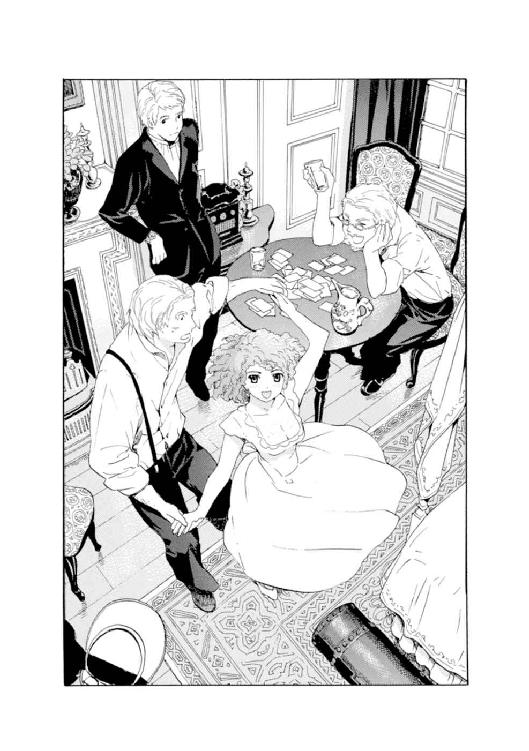
どことなく......。
違和感を感じ始めた。
まるで壁が少しずつ後ずさりし、大きくなり、部屋全体が揺らいでいくような......。
ジジ、ジジジッ──！
いやな音が響いた。
ボリュームが上げられていた分、雑音も大きく不吉に響いた。デリクが怪訝な顔になって、ラジオをいじり始めた。
ラジオは急にがたがた揺れるような妙な音を出し、それから止まった。
「......あれ？」
デリクがつぶやく。
部屋は静まり返り、全員が顔を見合わせた。
デリクがムキになってラジオをいじり回した。しかしどうしても、ラジオはそれ以上は鳴らなかった。
「壊れたのか？」
アランがつまらなそうに聞くと、デリクの肩が震えた。それからムキになって甲高い声を張り上げた。
「まさか。最新式だよ？」
デリクは悔しそうに、いつまでもラジオをひっくり返しいじり続けていた。
窓の外でまた日が陰り、部屋は急に薄暗くなった。
みんな押し黙って顔を見合わせた。ミルドレッドが乱暴に椅子にお尻を乗せた。
「......ふわーあ！」
ヴィクトリカが急にあくびをした。小さな体をぎゅううっと伸ばすと立ち上がる。
とことこと歩いてさっさと部屋を出ていってしまう。一弥もあわてて立ち上がり、
「部屋に帰るの？」
「うむ。荷物を出さねばな」
「そっか。じゃあぼくも自分の部屋に戻ろう......」
「いや、君はわたしの部屋で、わたしの荷物を出すのだ」
「えっ？ そうなの？」
「それはそうだろう、君」
言い合いながら、二人は廊下を歩いていった。扉が閉まる。
不安そうに青灰色の瞳を陰らすミルドレッドが、顔を上げて、二人の消えた扉をじっとみつめていた。
ヴィクトリカの部屋に戻った二人は、それぞれの行動に没頭していた。
一弥は床に膝をついて、彼女のミニトランクから荷物を出しては部屋のあちこちに並べていた。洋服は白木の衣装簞笥にしまい、細々とした小物はマントルピースの上にわかりやすく並べる。壁に作りつけられた鏡の前を通りかかった一弥は、鏡に映ったヴィクトリカとふと目があった。
ヴィクトリカのほうは、窓際の大きな揺り椅子に腰掛けて、ぷかりぷかりとパイプをくゆらしていた。大人用の揺り椅子は彼女にはもちろん大きすぎて、体のほとんどはゴブラン織りのクッションに沈み込んでしまっていた。ヴィクトリカはさっきからカーテンの開いた窓の外をみつめていて、そこには石造りのバルコニーと樫の大木が、霧に隠れたりまた姿を現したりしていたのだが......いつのまにか、視線を部屋の中に戻していた。
鏡越しにじっと一弥をみつめている。
「......なに？」
「君は、片づけ魔だな」
「し、失礼な。これぐらい普通だよ」
「............」
ヴィクトリカはつっと手を伸ばして、揺り椅子用のクッションを手に取ると、床にポーンと投げた。一弥は反射的に駆け寄るとクッションを拾ってよく払い、ヴィクトリカのもとに持っていった。
「うむ、ご苦労」
「......いまの、なに？」
「君が片づけ魔だということを証明したのだよ。気は済んだ。君、片づけが終わったのなら自分の部屋に戻りたまえ」
「うん......。あれっ？ ちょっと待ってよ。どうしてぼく、君の荷物を一生懸命片づけてたんだろう？」
「その謎も証明してやってもいいが、いかんせん面倒だ。出ていきたまえ」
「ちぇっ......」
一弥はうなだれた。
ヴィクトリカは一弥から視線を離すと、パイプを片手に、窓の外の濃い霧を物憂げに眺めた。ふと一弥のほうを振り向く。一弥が部屋を出ていこうとしていることに気づくと、ふいに「久城......」と呼び止めた。
「なに？」
「あのメッセージには、村人の誰も気づいていなかったのだろうな。シオドアの墓碑に刻まれたコルデリアのメッセージ。〈我は咎人に非ず Ｃ〉には......」
「......そうだね。誰かが気づいたら、消していたんじゃないかな」
「二十年後に気づいたのが、わたしなのだ」
「うん......」
ヴィクトリカは口を閉じた。きつく唇を嚙みしめて、それきり黙った。
一弥は、彼女の強情に感じるほど強い意志に戸惑い、立ち尽くした。どうしてもこのままでは帰らないというヴィクトリカの決意をひしひしと感じた。
それから、聖マルグリット学園の植物園に訪ねてくる彼女の腹違いの兄──グレヴィール・ド・ブロワ警部が、けしてこの頭脳明晰で、小さいが人形のように美しい妹と目を合わせないことを思い出した。
学園に蔓延る怪談の一つ──〈ヴィクトリカ・ド・ブロワは灰色狼である〉についても......。
怖れと憧れの入り混じった不思議な声で熱心に語っていたクラスメート、アブリル・ブラッドリーの、輝く瞳のことも......。
気心が知れてきたいまでも、一弥にとってこの小さな美しい友達は、とても謎めいていた。
──ごちん！
思い悩む一弥の後頭部に、なにか小さくて固いものが当たった。
頭を押さえながら振り向くと、小さな美しい友達、ヴィクトリカ・ド・ブロワが、揺り椅子の上からまだなにかを投げようとしていた。床を見下ろすと、さっきから彼女が投げていたらしい、金色の包み紙にくるまった丸いマカロンがたくさん転がっていた。
「なにしてるんだよ？ もう、また散らかして！」
「なかなか当たらないので、つい、な」
「誰が拾うんだよ？」
「君だろう」
「......そんなはずないよ！」
一弥は文句を言いながら、散らかったマカロンを全部拾って、ヴィクトリカのもとに持っていった。
頭の中で、この不思議な少女に対する心配と、振り回されていることに対するいらつきと、自分では把握しきれない未知の思いがごちゃごちゃに入り混じった。それは、口にしようとすると、こんな言葉になった。
「......心配だよ、ヴィクトリカ。こんな場所を出て、はやく学園に戻ろう」
返事はなかった。
「ぼくは君を心配してるんだよ。ここはわけのわからない村だし、狼も出るし......」
「............」
一弥は水差しを手にして、赤いダイヤガラスのコップに水を注いだ。
「......悩んだら、猛烈にのどが渇いたよ」
「それは気の毒なことだ」
「......君が言うなよ！ 君がぼくを悩ませてるんだからな」
ヴィクトリカは知らんぷりした。
怒ろうとして、一弥はふと手元を見た。
──水を注いでいたはずなのに、なにかがぼちゃんと落ちる音がしたのだ。コップを覗き込んだ一弥は思わず声を上げそうになった。ヴィクトリカが怪訝そうな顔をして一弥を見た。
コップに入っていたのは......。
少量の水と、丸くてぷるぷるとしたなにか......。
真ん中に黒い部分がある、それは......。
目、だった。
部屋がすうっと寒くなり悪寒がしてくるような、奇妙な感覚があった。
それは動物のものらしく、人間よりは少し小さかった......。
コップの中で水に揺られて眼球が動いた。黒目がこちらに向く。目があった。一弥は声を上げそうになり、それからヴィクトリカの視線に気づいて、なんとかして平静を装ったままコップを置いた。
「どうしたのかね？」
「いやその......虫が、ね。あとでハーマイニアさんに入れ替えてもらってくるよ」
一弥は水差しをテーブルに戻した。
──心臓がどきどきと脈打っていた。
３
ゆっくりと日が暮れていき、一日の終わりらしい静かな闇が〈名もなき村〉を覆い尽くそうとしていた。ヴィクトリカの部屋の、カーテンを開け放した窓から、樫の大木に落ちかかる沈みかけた太陽が燃えているのが見え、やがて薄闇の奥へ消えていった。陽が落ちると村は漆黒に染まり、ただ乳色をした霧のベールだけが、昼間と変わらずかすかな風にそよいで、闇の中を泳いでいた。
黒くもつれあった樫の枝々は、闇の中でまるで骸骨の集団のように、黒々とした骨格を浮き上がらせていた。
「カーテン閉めるよ。ヴィクトリカ」
一弥が立ち上がって、窓の上から垂れている紐を引っ張った。ビロードの重いカーテンは、大きく揺らめきながら閉まっていった。
揺り椅子に深く腰掛けたヴィクトリカは、さっきからずっと黙って考えこんでいる。セルジウスと客人たちで簡単な夕食を済ませ、部屋に戻ってきてから、ずっとそんな様子だった。聞こえているのかいないのか、声をかけても返事をしようともしないので、一弥はため息混じりのまま元の場所──椅子代わりにした彼女のミニトランク──に戻り、腰を下ろした。
ふいに扉がノックされ、返事もしないうちからゆっくりと開いた。一弥が腰を浮かせる。かすかな衣擦れの音とともに、誰かが入ってきた。
──ハーマイニアだった。
いっぱいに湯を入れた大きな真鍮の入れ物を両手で抱えていた。低い声で、
「お風呂の湯です。水で薄めてお使いください」
部屋の奥にあるバスルームの薄い扉を開けてバケツを下ろすと、早足で出ていこうとする。一弥は顔をしかめた。
ハーマイニアは足音というものをまったく立てない......。
まるで誰もそこを歩いてなどいないようだ......。
一弥はそれを、赤毛のシスター、ミルドレッドとはずいぶん対照的なことに感じた。ミルドレッドときたら、歩くたびに、大柄な男性でも立てないような大きな足音を立てるのだ。しかしハーマイニアは、足音どころか気配さえ微弱で、そのうえ得体がしれないのだ......。
部屋を出るとき、ハーマイニアは急にクルリと振り返った。目玉をひん剝くようにしてぎょろり、ぎょろりと一弥とヴィクトリカを見た。
ゆっくりと唇が開く。
薄く色のない唇だった。
「......ご用があれば、呼び鈴でお呼び下さい」
「わかりました」
扉が閉まった。
ヴィクトリカは急に上機嫌になり、揺り椅子からぴょんっと飛び降りると、床を踊るように飛び跳ねながらバスルームに向かった。一弥が不思議そうに見ていると、真鍮の猫足がついたクリーム色のバスタブにお湯を入れ、どぼどぼと水を入れ始めた。黒と白の格子縞のタイルが張られた床に小さな膝をついて、いっぱいに湯をはったバスタブをうれしそうに覗きこんでいる。
いまにも鼻歌を歌いだしそうな様子に、一弥は不思議になり、
「......どうしたのさ？」
ヴィクトリカは顔を上げた。
当然だ、という様子で、
「お風呂が好きなのだ」
「......へぇぇ？ ふぅん。そうか。旅行をすると意外な面が見えるって本当だね。ヴィクトリカ、君はきれいなものが好きで、あと、お風呂が好きなのか」
「............」
「それから本とお菓子だろ？ フリルとレース。あと......なんだよ？ なんでそんなに物騒な目つきでぼくを睨んでるの？」
「見透かしたようなことを言うな」
「......ちょっと、なんだよそれ！」
ヴィクトリカは知らんぷりして、荷物の中からお風呂セット──象牙でできたきらきらした櫛や、薔薇の香りのする石鹼、金色の縁取りの化粧鏡など──を取りだした。振り向いて一弥を睨む。
「......なんだよ」
「レディの入浴だ。あっち行け」
「あっ......ご、ご、ごめん！」
一弥は立ち上がった。部屋の入り口辺りまで駆けていき、振り返って、
「廊下にいるから。なにかおかしなことがあったら、呼んでくれよ」
返事はなかった。
一弥は廊下に出て扉を閉めた。知らずため息をつく。
廊下で一人きりになると、急に不安が押し寄せてくるようだった。この得体の知れない山奥の村と、人々。一緒にきた四人のこともじつはよく知らないのだ。急に止まってしまったラジオや、水差しの中に沈められていた目玉......。
不安になるほど、廊下がゆらりと揺らめいて、壁や天井が四方から一弥に迫ってくるように感じられた。一弥は頭を強く振って、不安に負けまいとした。
（ヴィクトリカは、ぜったい帰らないって言うだろうからな。なんとか危険なことがないようにしないと......）
やがて......。
扉越しに、部屋の中からかすかな水音が聞こえた。ぽちゃり、ぽちゃり、ぽちゃり......。とても軽い音で、人間というよりも小猫一匹がお湯に入ったようにしか聞こえない。
と......。
続いて、部屋の中から遠く、ヴィクトリカの声がした。
「おっ、おっ、おっ......」
「......ヴィクトリカ！」
一弥はあわてて振り向いた。扉を開けて部屋に飛びこむと、耳を澄ます。
と......。
「お風呂が、好きだぁ」
「!?」
「あったまるから～」
（..............................歌？）
一弥はあわてた自分が恥ずかしくて、扉に寄りかかり、わざとぞんざいな言い方をした。
「なにしてるの？ ヴィクトリカ」
「......歌っている」
「へたくそだなぁ！」
バスルームのほうから、怒りの波が空気を震わせて一弥まで届いた。しばしの沈黙の後、一弥がまた廊下に出ようとすると、ヴィクトリカが低い、地の底から響くような声で言った。
「......へたくそだと？ では久城、君、歌ってみたまえ」
「えぇっ？ や、やだよ。歌なんて、恥ずかしいよ」
「久城..................歌え」
「..................うぅ」
一弥はヴィクトリカをからかったことを後悔しながらも、逆らえず、両手を腰に当てた。
故郷にいたころよく歌った童謡を思い出して、朗々と歌い上げる。
──子供の頃のことだが、一弥がまだ声変わり前のあどけない声でこの歌を歌うと、母や姉が手を叩いて「一弥さんはお歌がうまい」だの「お父さまやお兄さまたちは歌えないのにね」などと喜んでくれたものだった。父や兄たちに歌っているところをみつかり、男らしくないと怒られてからは、一弥は一人のときでも鼻歌一つ口ずさまない男になったのだが、久しぶりに歌っていると、だんだん興が乗ってきた。
一弥が胸を張って朗々と歌っていると、バスルームの扉に内側からなにかが投げられたらしい、ゴトンッという音がした。続いて、
「うるさいぞ！」
「......き、君が歌えって言ったんじゃないか！」
一弥は涙目になり、歌をやめた。
それから小声で、
「上手だろ？」
返事はなかった。
一弥はうなだれて口を閉じた。
部屋はまた、かすかな水音のほかはしんと静まり返り、一弥の心臓の音と、風に揺らめくビロードのカーテンの立てる音がかすかに響くだけとなった。
カーテンの向こうから時折、白い霧が部屋に迷いこんできて、すうっと消える。
静かだった。
遠くでまた狼が吼えた。
鳥の羽音が聞こえた。
──視界の隅でなにかが動いた。
一弥はふとその違和感に気づいて顔を上げた。確かになにかが動いた、自分の目はそれをとらえた、と思った。ゆっくりと部屋を見回すが、なにも変化はない。
（......そんなはずはない。いま確かに、なにかが、動いた............？）
天蓋付きのベッド。
ミニチェスト。
揺り椅子と華奢なターンテーブル。
衣装簞笥。
ビロードのカーテン。
壁に作りつけの鏡。
......鏡？
一弥はそれをじっとみつめた。
鏡の中で、なにかが動いていた。ベッドだ。ベッドの上にふわりと置かれた羽根布団。ついいままで誰もいなくてぺったりとしていたのに、なぜかかすかにふくらんでいた。
一弥は振り向いた。ベッドを見るとさっきまでと同じようにぺったりとしている。
鏡を見る。
──鏡に映ったベッドは、布団が少しずつ少しずつふくらんでいた。
部屋の灯りが揺らめいて少し陰った。
鏡の中で布団がどんどんふくらんでいる。人間が一人入っているほどのふくらみで、どんどん、どんどん大きくなり......。
一弥は声を上げた。
思わず廊下に出る扉に向かって逃げ出そうとして......ヴィクトリカがいることに気づいて、バスルームのほうに取って返した。薄い扉を叩いて、
「ヴィクトリカ！ ヴィクトリカ!! そっちは大丈夫!?」
......返事はない。
一弥は、とつぜん鳴らなくなったラジオや、水差しに入っていた目玉のことをまた思い出した。
（へんだ......。なにかへんだ!! ヴィクトリカ!!）
──部屋の灯りが消えた。
とつぜん闇に包まれる。
一弥はヴィクトリカを守ろうとバスルームの扉に張りついていた。何度も彼女の名前を呼ぶが、返事はない。
一弥は大声を上げた。
と......。
ふいに、部屋の灯りがとつぜんついた。
鏡に映っていた盛り上がるベッドも、いつのまにか元に戻っていた。
「......君、ずいぶんとうるさかったなぁ。いったいなにを騒いでいたのだね？」
ヴィクトリカがバスルームから出てきたのは、それから十分ほど経ってからだった。
白いフリルとアクアブルーの梯子レースでふっくらとふくらんだ寝間着に、白いサテンの丸帽子をかぶっている。長い金髪の半分ほどが帽子の中に隠れ、残り半分は背中に向かってこぼれ落ちていた。
一弥はぐったりと揺り椅子に座りこんでいた。
ヴィクトリカがむっとして、
「君、それはわたしの椅子だ」
「............」
一弥は立ち上がった。
それから口を開き、きれぎれに、いま起こった不思議な現象について話した。ヴィクトリカはなぜか興味なさそうにあくびをして、お風呂セットを大事そうにしまったり、きょろきょろとマカロンの袋を捜したりしていた。
「ヴィクトリカ、明日の朝になったら、すぐ帰ろう」
一弥がせっぱつまった声でそう言うと、驚いたように顔を上げる。
「......どうしてだね？」
「だって、危険だよ。こんなおかしなことが起こるなんて......この村はおかしいよ。だいたい、ラジオが急に鳴らなくなったのも不気味じゃないか......」
「ラジオだと？」
ヴィクトリカは唸った。
面倒くさいなぁ、と小声でつぶやくのが聞こえた。
「......な、なんだよ？」
「あれはトリックだろう、君」
「まさか!?」
ヴィクトリカは大きくあくびをした。しょうがないなぁと言うように、
「君、ラジオが置かれたチェストの上に、ほかになにがあったか覚えているかね？」
「チェストの上に？ ええと、ラジオとマリア像と、飾りの羅針盤......」
一弥は考えこんだ。ヴィクトリカはあくび混じりに、
「羅針盤は磁石だ。そばに磁石があると、電気を使う機器は狂うのだよ。たまたまなのか、誰かがわざとおいたのかはわからないがね」
「......ヴィクトリカ、それって」
一弥は顔をしかめた。
「もしかして、あの場でわかってたの？」
「もちろんだ」
「じゃ、言ってよ！ みんなも、それにぼくも、不安そうにしてたじゃないか」
「ほかのことで頭がいっぱいだったのだ」
「あのねぇ......」
一弥が唸るのを、ヴィクトリカは、揺り椅子に腰掛けてじっとみつめていた。
それから立ち上がると、根負けしたように言った。
「久城、君はわがままな男だなぁ！」
「............そっくりぼくの台詞だよ！」
「仕方ない。久城、君のようにわがままで、しかも中途半端な秀才にもわかるように、言語化してやる」
「......悪かったね」
「その代わり、もう帰ろう帰ろうと騒ぐな。わたしは帰らないのだ」
「......う、ん」
ヴィクトリカはちょこちょこと歩いて廊下に出ていった。一弥が後を追おうとすると、
「君はそこにいたまえ」
「......わかった」
「それから、いいと言うまで目をつぶって、反省していたまえ」
「反省!? なにをだよ？」
一弥は仕方なく、言われたとおり目を閉じた。
ヴィクトリカがどこかへ去っていく気配がした。扉が閉まった。
静寂。
どこからか......ごく近くから、なにかがガタガタと揺れている音がした。一弥は目を開けたくて仕方ないのをぐっと我慢していた。
やがて......。
部屋から出たはずのヴィクトリカの声が、とても近いところから聞こえた。
「......もういいぞ。目を開けたまえ」
一弥は目を開けた。
──目の前の壁に作りつけられた、胸の辺りまで映る鏡に、なぜかヴィクトリカの頭頂部らしいものが映っていた。白いサテンの丸帽子ときらめく金髪がちょっとだけ覗いている。
声も聞こえた。
「わかったかね。中途半端な秀才の久城」
「......さっぱり。ヴィクトリカ、君、いったいどこにいるのさ？」
鏡に近づいて覗くと、そこにあった鏡はいつのまにか取り外されて、内窓のようにぽっかり空いていた。となりの一弥の部屋はこちらの部屋と左右対称の客用寝室で、ヴィクトリカはその四角い穴から顔を出そうと、一生懸命背伸びをしていた。
背伸びをしても届かないことをようやく認めたらしく、ヴィクトリカはどこかへ走っていって、踏み台になる小さな箱をみつけて戻ってきた。いかにも軽そうな箱を、ヴィクトリカはとても重いものであるかのように、歯を食いしばってゆっくりゆっくり運んできた。
やがて箱に乗ると、ヴィクトリカはようやく、一弥と同じぐらいの背丈になった。四角い穴から顔を出して、
「......な？」
「はぁ」
一弥がまだわかっていないらしいことを悟ると、ヴィクトリカは箱の上で地団駄を踏んだ。
「つまり、誰かがこちらの部屋に入って鏡を外したのだ。久城、君が見たのは鏡ではない。誰かがこちらの部屋でベッドに潜って盛り上げて見せ、君を脅そうとする姿だったのだよ」
「............」
一弥はヴィクトリカとじっとみつめあった。
普段はないことだが、いまは彼女が踏み台に乗っているために、同じぐらいの高さに顔があった。ヴィクトリカの大きな緑色の瞳と、じっとみつめあう。
「......わかったかね？」
ヴィクトリカは、わかったのかなぁと心配するように瞳を見開いて、じいっと一弥をみつめていた。一弥はふっと顔を曇らせた。ヴィクトリカはあわてて、
「ど、どうしたのだ、久城？」
「つまり、さっきのことには犯人がいるんだよね」
「ああ、そうだ。だから大丈夫なのだよ」
「......大丈夫じゃないだろ！」
急に声を荒らげると、ヴィクトリカは驚いたようにますます瞳を見開いた。一弥はやり場のない気持ちに困って、床をどんどんと蹴った。
「幽霊ならまだいいよ。ここが幽霊屋敷だってことだもの。でも、これには人間の犯人がいる......。それにここは、ぼくじゃなくて、ヴィクトリカ、君の部屋だ。誰かが君をこわがらせようと思って、わざとやったんだ。だろう？」
「............」
「ヴィクトリカ......」
「............」
「誰が、どうしてこんなことをするんだろう？」
「誰かはわからない。村人たちの中にいるのだろうとしかね。だが理由は推測できる。それは、わたしがコルデリアの娘だからなのだ、と」
ヴィクトリカの答える声は低かった。
目の前にあるヴィクトリカの小さな顔は、瞳も陰って、表情をなくしていた。一弥はその顔をじっと見守った。ヴィクトリカの声が震え始めた。
「コルデリアが厄を為す罪人と信じる村人のしわざか、それとも......わたしに真相を悟られるのを恐れる、本当の罪人のしわざか......」
「ヴィクトリカ......」
一弥の脳裏に、村人たちの濁った緑色の目が浮かんでは消えた。手に手に持った武器を持ち上げて追い払おうとした村人たち。最後に現れ、村に入ることを許したセルジウス。客人の中からヴィクトリカをみつけ、コルデリアの罪を糾弾したハーマイニアの、剝き出された目玉。そしてアンブローズの、愛想良く話してくれるのに、話題によってはとつぜん冷たくなる態度......。
しかし、すべての背後にはセルジウスがいるようにも感じられた。彼は村を守ろうとしていて、そのことと、ヴィクトリカの求める真実は、もしかすると......。
ヴィクトリカが強情な声で言い張った。
「だが、わたしは帰らない」
「危険だよ！」
一弥もヴィクトリカも、壁をはさんで睨みあいながら地団駄を踏んだ。
「しかし久城、君が......」
ヴィクトリカはちょっと迷うように言葉を切った。それからまじめな顔で、
「君がわたしを守ってくれるのだろう？......荷物一つ持たずにここまでついてきたということは」
「......当たり前だ！」
一弥は叫んだ。
二人はじっとみつめあった。
そこにはいつもの仲の良さはなく、まるで睨みあうような......決闘でも始めるかのような物騒な目つきだった。そのまま二人とも、なにも言わずにみつめあい続けていた。
急に......。
ヴィクトリカの部屋の扉が、勢いよく開いた。
立っていたのは、赤毛のドーリィカールを揺らすミルドレッドだった。なにやらとても怒っている様子で、
「聞いてよ。そこの子たち！」
どすどすと大きな足音を立てて、部屋に入ってきた。一弥は、さきほどお湯を持ってきたハーマイニアがまったく足音を立てなかったことを思い出して、また、ずいぶんと対照的な二人だと思った。ミルドレッドは大股で入ってくると、四角い穴から顔を出しているヴィクトリカに気づき、クスッと笑って指を伸ばした。
ヴィクトリカの鼻先をつつく。ヴィクトリカはいたずらな大人に脅された小猫のように、びくっと肩を震わせた。びっくりしたように目をぱちぱちさせている。
「なにしてるのさ、おチビちゃん？」
ヴィクトリカの顔色が変わった。一弥は内心そのことに驚いて、
（もしかして、背が低いことを気にしてるのかな......？）
ミルドレッドのほうは悪びれる様子もなく、どすどす歩き回りながらしゃべりだした。
「あいつらバカなんだよ！ あいつらって......あいつらだよ！ 髭のアランと、金持ちのデリクと、無口なラウールの三人組。なにさ、デリクがお金持ってるって言うから、仲良くしてたのにさ」
「そ、そんな理由で......」
「アタシはお金が大好きなんだよ！」
ミルドレッドはなぜか怒りながら言い放った。
「おいしい葡萄酒よりきれいなドレスより、なによりお金が好きなんだよ！」
一弥とヴィクトリカは、思わず顔を見合わせた。
のみの市のバザーで彼女が盗んだはずの、ドレスデン皿のことを思い出す。
お金の話になった途端、なぜか、それまでは大ざっぱでがさつな感じだったミルドレッドの雰囲気が、がらりと変わった。花の香水をつけたように甘くて濃い匂いが充満し、豊満な体から甘ったるい色気が粒になってはじけ飛ぶようだった。
（なんだかなぁ......）
お金お金、と繰り返しているミルドレッドを、一弥は少しあきれてみつめた。
ヴィクトリカがぼそっと口をはさんだ。
「......葡萄酒もドレスも、お金で買うものだが」
ミルドレッドは聞こえなかった振りをした。
「とにかくあいつら、観光気分でさ。夏至祭の前夜で村の人がピリピリしてるのに、聖堂の見学なんかに行っちゃってさ。なんでもあの聖堂は、一年に一度、夏至祭の決まった時間にしか無人にしちゃいけないんだって。ずいぶんといろいろ決まりがあるらしいんだよ。で、アタシもついていったら、あいつら聖堂でなにをしたと思う？ 大切にされてる古くさい壺があってさ。飾られてたその壺を、聖水の大瓶にぼっちゃり落としたんだよ。おもしろいから見せてくれってさんざん騒いで、見たら見たで、ぼろぼろのこんなものをなんで大事にするんだ、なんて笑って、村人をカンカンに怒らせて、あげくに、ぼちゃん！ それも一回じゃないんだ。三人が三人とも見たがって、落っことして......。壺のほうもよく壊れなかったもんだよ。まったく......村長のセルジウスが、頭から湯気を出して怒ってたよ。あいつらは新しい物の価値ばかりを追い求めて、本当の物の価値を知らないってさ。............ゲホッ！」
ミルドレッドはしゃべりながら、水差しのとなりに置いてあった赤いダイヤガラスのコップを手に取り、中も見ずにゴクンと飲み干した。と、咳きこみ始めて、
「ゴホッ！ ゲホッ！ な、なんか入ってた......！ 丸いもの......飲んじまったよ？」
「......あ！」
一弥は（目玉だ......！）と気づいたが、余計なことは言わないことにした。お菓子かなにかでしょうと言うと、彼女は納得したようにうなずいた。
──大きな足音とともにミルドレッドが出ていくと、部屋はまた静けさを取り戻した。
ヴィクトリカが、となりの部屋から廊下を伝って戻ってきた。
二人とも口数が少なくなり、一弥はやたらと、扉にかけた鍵を何度も確認したり、鏡の前に衣装簞笥を移動させてとなりの部屋からなにも入ってこないようにしたり、窓もしっかりと閉めたり、戸締まりに精を出した。
「ヴィクトリカ、ぼくもこっちの部屋にいるよ。扉のすぐ横にいるから、誰かが入ってきたらぼくがやっつけるからね」
「うむ、勇ましいことだな」
「......ちょっと、真面目に聞いてよ！ 言っとくけど、狙われてるのは君なんだよ！」
一弥は扉の前に揺り椅子を置いた。深く腰掛けて目をつぶってみる。
......眠れそうになかった。家族の中でもとくに繊細なたちの一弥は、もともと、枕が変わっただけでなかなか眠れないのだ。それがさらに、椅子に座った状態となれば、とても熟睡できるものではない。
そのことを小声でぼやくと、ヴィクトリカがいかにもうれしそうに振り向いた。
「君......わたしの荷物の中に、素敵な簡易ベッドが入っていたことを覚えているかね？」
一弥は不思議そうに聞き返した。
「君の荷物って、あの......新大陸に移住する家族規模の、ばかみたいな大荷物のことかい？」
「むっ!? ばかは君だ。わたしの頭脳が英知を尽くして考えた、最低限必要なはずのあの荷物......。君、えらそうな説教を垂れて自ら置いてきたのだから、責任を持って揺り椅子で眠りたまえよ」
「......花瓶とかお茶セットは、絶対いらなかったと思うけどね」
憎まれ口を叩き返すと、またマカロンがかしかしと宙を飛んできた。一弥は怒りながら床に転がるお菓子を拾い、もとの場所に戻して......。
「ヴィクトリカ......？」
顔を上げたときには、ヴィクトリカは、心ここにあらずの様子でなにか考えこんでいて、もう一弥のほうを見もしなかった。一弥はため息をついて、揺り椅子に腰掛けた。
やがて夜が更けてくると、館はしんと静まり返った。
壁灯を少し落として、一弥も眠ることにした。
ヴィクトリカはとっくに天蓋付きの大きなベッドに横になり、くぅくぅとかすかな寝息を立てていた。一弥も揺り椅子に座ったままで目を閉じた。
無理やり眠ることにする。
ふと......すでに眠っているヴィクトリカのほうに、目をこらす。
ヴィクトリカの小さな後頭部が見えた。彼女はうつぶせになり、小さな顔を大きなふわふわの枕にぎゅっと押しつけて眠っていた。
「......不思議な寝相だなぁ」
「くぅ～、くぅ～、くぅ～......」
かすかな寝息が途切れなく続いている。
こうして見ると、大きすぎるベッドに眠る小さすぎるヴィクトリカは、人間というより、白い毛足の長い小犬が、紛れこんだまま眠ってしまったようにも見えた。
やがて階下から、柱時計が鳴る音が聞こえてきた。
──ボーン！ ボーン！ ボーン！
一つ、二つ、と一弥は数え始めた。十二まできて音が止まった。もう夜の十二時なのだと気づいて、自分もいい加減眠ることにして......。
一弥は、不安を胸に、ゆっくりと目を閉じた。
モノローグ─monologue 3─
夜半、気配に気づいて目を覚ました。
屋敷は静まり返り、窓の外からのかすかな風の音だけが、妙に響いている。
──そっと部屋の扉に近づき、聞き耳を立てる。
「......だから、祭の途中で............」
誰かが小声で話している。廊下の端辺りから、男たちの低い声が聞こえてくる。
「村人も誰も気づかない......」
「......うん。あいつも気づかないに違いない」
男たちがこそこそと話している。
「自動車で運べばいい。麓の町まで降りれば、自動車があるんだ」
──怒りがわき上がってくる。
おそらくそうであろうと想像してはいたが、やはりそうだったのだ。
男たちは聞き耳を立てる人間がいることに気づかず、いつまでも明日の計画を話し合っている。
「祭の最中なら、村人も気づくまい。聖堂は、明日のある時間だけ無人になる」
「山を降りるんだ。そうすれば......」
そうすれば......？
第四章 赤カブ提灯と〈冬の男〉
１
夜明けがゆっくりと〈名もなき村〉に近づいてきていた。一弥は部屋の隅で揺り椅子に揺られながら、浅い眠りから醒めたり、また眠りに落ちたりを繰り返していた。
目を醒ますたびに、ヴィクトリカが大きな天蓋付きベッドの上で、あっちの隅こっちの隅と、毎回ちがう場所でちがう形で眠っているのが目に入った。夢うつつのまま一弥は（ヴィクトリカ、君......いつ動いてるんだよ......？）と不思議に思っていた。
やがて、夜が明けたことを告げたのは、突然鳴り響いた大きな太鼓の音だった。
──ドーン！
ドーン！ ドーン！ ドーン！
続いて甲高い笛の音が響いた。夜明けの薄闇を切り裂くように高く、細く。
──一弥は飛び起きた。
あわてて立ち上がると、寝間着姿のヴィクトリカが、もこもこした動きでベッドから降りるところだった。ヴィクトリカは窓に駆け寄ると、後ろから近づいてきた一弥をくるりと振り返った。
一弥は眠たそうな顔だったが、ヴィクトリカのほうはすっかり覚醒し、いつも──植物園で会うときと同じ、静かだが鋭い目つきをしていた。白いサテンの丸帽子から、長い金髪のほとんどが、床に向かって金色の濁流のようにうねりながら落ちていた。
「おはよう、久城」
「......おはよ、ヴィクトリカ。いまのなに？」
「さてね。おそらく、推測されるのは......」
そうつぶやきながら、ヴィクトリカが天井から落ちる紐をぐいっと引っ張った。
重いビロードのカーテンが揺らめいて、左右に開いていった。
窓の外には......。
──昨日とはまったくちがう風景が広がっていた。
石のバルコニーと樫の大木以外のほとんどを乳色の霧が隠していた昨日とはちがい、今朝は、まだ夜明けだというのに空気は澄み切り、遠くまでよく見渡せた。天気がよく、風は乾いていた。太鼓の音が空気を震わせ、絹を裂くような笛の音がそれを追いかける。
原色の幟がいくつもはためいていた。どれにも黒々と狼の紋章が描かれていた。
誰かが水を──おそらくは聖水を、朝の空に向かって撒いている。飛沫がバルコニーの石にも飛んできて、水の跡をいくつも作った。
鞭が鳴らされ、空砲が撃たれる。
「......推測されるのは」
ヴィクトリカの言葉を一弥が引き取った。
「夏至祭が始まったんだね」
「うむ」
二人は顔を見合わせた。それから駆けるようにしてバルコニーに出た。苔生した石の手すりから乗り出すようにして、外の光景にただただ目を奪われる。
鮮やかな赤いかたまりが、揺らめきながら広場に入っていこうとしていた。揺らめきの正体がなんなのか、いくら目をこらしてもわからなかった。大きな山車であるのだが、それ全体が火のかたまりであるかのように鮮やかなオレンジ色に燃えていた。
村人が、昨日のもの静かさが噓のように広場を練り歩き、叫び声を上げていた。
──二人が広場の様子に目を奪われていると、控えめに部屋の扉がノックされた。一弥が返事をして、バルコニーから部屋に戻る。
扉を開けると、長い金髪を後ろで結んだ若者が立っていた。村人にしては背が高く、際だって美しい顔立ちに、よく澄んだまっすぐな瞳をしていた。......村長の助手のアンブローズだ。
「......廊下を通ったら話し声がしたので。起きてらっしゃるのかと」
アンブローズは両手に妙なものを持っていた。黄土色の布でぐるぐるに巻かれたミイラのような形をした人間大の張りぼてと、おそろしい黒い顔が彫られた木の仮面だ。
一弥がじろじろ見ていると、アンブローズは笑って、
「祭に使う張りぼてと、仮面です。めずらしいですか？」
「ええ」
「ぼくから見れば、あなたがたの持ち物のほうがずっと......」
アンブローズは控えめながら、部屋を覗いて、めずらしい持ち物に視線を彷徨わせた。それからまた一弥の顔をじろじろ見て、不思議そうに手を伸ばしてきたので、一弥はあわてて彼から離れた。頰の肉を摑まれたり髪を引っ張られたりするのは、どうも苦手だ。
話し声に起こされたのか、ほかの部屋の扉もつぎつぎに開いた。アランが髭をいじりながら眠そうに出てきた。デリクは一目で高級なものとわかる絹の寝間着を着ていたが、寝相が悪いのかくしゃくしゃになっていた。ラウールの大きな体も、のっそりと出てきた。
最後にミルドレッドの部屋の扉が開いた。女の人とは思えないぐらい大きな足音を立てて、廊下に出てくる。真っ赤なドーリィカールの髪がゆさゆさ揺れていた。
ヴィクトリカがバルコニーを離れて、こちらに向かってとことこと歩いてきた。
「昨日、セルジウス様も話しておられましたが......この村の夏至祭とは、夏の豊穣を祝い、冬を倒して燃やしてしまうという儀式を兼ねた祭なんです。それから祖先の霊を呼び、豊穣に潤うぼくたちの姿を見てもらう......」
アンブローズは流れるように説明しながら、一弥たちを広場に案内していた。館にはもう人気はなく、村人はほぼ全員が広場に集まっているとのことだった。
「聖堂を無人にしてはいけないので、何人かがそちらに。あとはみんな広場にいます」
「......昨日とはずいぶんちがいますね」
一弥が聞くと、アンブローズは笑って、
「準備で忙しかったのですよ。赤カブが間に合いそうになかったし」
「赤カブ？」
「山車の灯です。......ほら！」
広場に着いた一弥たちは、びっくりしたように目を見開いて、巨大な丸い炎のように燃える山車をみつめた。
山車のそこここに、オレンジ色に光る小さな丸いものがたくさんつけられていた。よく見るとそれは、中をくり抜いて外にさまざまな模様を彫った赤カブだった。中に小さな蠟燭が立てられて、山車の動きに合わせて揺れながら小さな炎を上げていた。一つ一つの揺れに合わせて、山車そのものも炎の揺らぎのようにあちらにこちらにうごめいている。
「......きれいだな」
ヴィクトリカが言った。
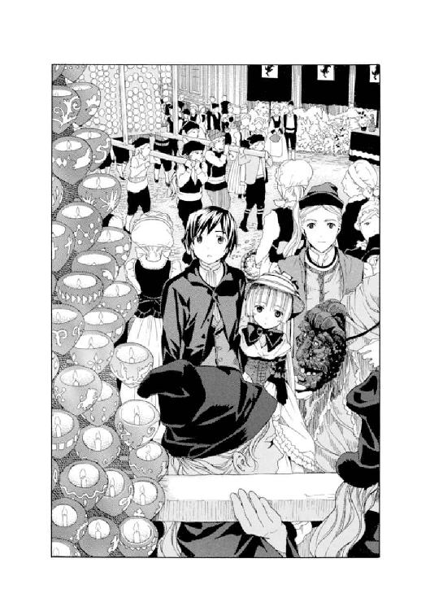
それを聞いたアンブローズがうれしそうにうなずいた。
「村人はこれを彫っていて忙しかったんです。ぼくはこの張りぼてを作るので......。不器用なので苦労しました」
アンブローズが黄土色のミイラのような張りぼてをそっと山車の上に置いた。一弥が聞く。
「その張りぼてはなんですか？」
「〈冬の男〉と呼ばれるものです。昼になると村人は扮装をして、〈冬の軍〉と〈夏の軍〉の二手に分かれて戦争の真似事をします。〈冬の軍〉は茶色い服、〈夏の軍〉は青い服を着ます。やがて〈夏の軍〉が勝って〈冬の軍〉を蹴散らすと、〈冬の男〉に山車ごと火を放って燃やします。それから夏が勝利したことを祝い、食べ、飲み、踊るのです」
「へぇ......」
「その後、聖堂を無人にします。聖堂があの世との通用門であり、ぼくたちの豊穣を見に帰ってきてくれる祖先の通り道となるからです。祭の最後は、帰ってきた祖先がこの仮面をかぶり......」
アンブローズは、これまた彼の苦心の作であるらしい、不気味な仮面を持ち上げてみせて、
「豊穣を喜んで踊ります。祖先は、ぼくたちにはわからない言葉で語ります。それはあの世の言葉であると考えられています」
いつのまにか彼らの後ろから、ぎょろりと目を剝きだして、ハーマイニアが近づいてきていた。アンブローズが持っている仮面をじいっとみつめると、とつぜん口蓋が裂けるほどに強い笑みを浮かべた。仮面の出来に満足したらしい。聞き取れないほどの小声で、よい出来ですね、とつぶやいた。
アンブローズは誉められてうれしそうだ。
「今年はぼくがこの仮面をかぶります」
「......つぎの村長の候補ですからね」
ハーマイニアが低い声で言った。一弥たちが首をかしげると、今度はさらに低い声で、
「村長には年下の助手がつきます。村長が亡くなると、助手がつぎの村長になります。セルジウス様もシオドア様の助手でした。つまりアンブローズは、セルジウス様にとても買われているということです」
「そうなんですか......」
一弥たちは改めてアンブローズをみつめた。アンブローズは、貴婦人のようにも見える整って上品な顔をぽっと赤らめた。照れたように首を振っている。
「若者の数が少ないおかげでもあるんです。村には子供が少ないんですよ」
山車がゆっくりとくるくる回り始めた。残滓のように赤い線を描きながら、いくつもの赤カブがくるくる回る。みとれていると、髭面のアランが急に、
「......ちぇっ！ くだらねぇなぁ」
アンブローズがはっと息を呑んだ。
ハーマイニアが目を剝いた。
ちょうどそのとき、太鼓の音や笛の音が止んで、広場は一瞬の静寂に包まれていた。広場にいた村人たちが残らず振り向き、たくさんの暗い瞳が、声の主を捜すように一弥たちの上を彷徨った。
それは村に入ってからアランが繰り返していたポーズだったが、こんなにも注目を浴びるのは初めてだった。アラン自身も驚いたが、後には引けなくなったらしく、むきになって続けた。
「こんな前時代的な迷信がまだ残っているなんて。なにが秘境だ。灰色狼の村だ。くっだらねぇよ！」
いつもなら甲高い声で返事をするデリクが、となりで黙っていた。アランは焦ったように、
「なぁ、ラウール？」
とつぜん同意を求められたラウールが、大きな体を縮めて、困ったように顎をかいた。
「......う、うん」
「なにが先祖の霊だ。そんなもの、戻ってきやしねぇよ。朝っぱらからバカ騒ぎして......！」
なおも言い続けようとするアランを、デリクが遠慮がちに止めた。甲高い声が響く。
「まったく、うるさいのは確かだよな。な、アラン。部屋に戻ってポーカーでもやろうぜ」
アランがうなずいた。三人がぶらぶらとした足取りで館に戻っていこうとするのを、ハーマイニアの低い......よく響く声が止めた。
「お客人、お待ちなさい」
村人がいつの間にか、ハーマイニアの後ろに集まってきていた。
ハーマイニアと同化したかのように、みんな胡乱な目つきで三人をみつめている。目玉は見開かれ、無表情で身動き一つしない。彼らはクラシカルな服装のせいもあり、まるで幽霊の集団のように見えた。振り向いたアランは自信たっぷりの態度を崩し、たじろいだ。
「な、なんだよ......っ！」
「侮辱するなら、村から出ていきなさい」
「なっ......メイド風情が、客になにを言うんだ」
アランが反論する。しかしハーマイニアは黙らなかった。
「死者の霊は本当に......」
「ほ、本当に、なんだよ？ 言ってみろよ？」
「本当に還ってきます」
「くっだらねぇ！」
「夜空から無人の聖堂を抜けて広場にきて、あの世の言葉で語ります。その言葉はわたしたちにはわからない。でも死者の霊にはなにも隠せない。夏至祭には意味があるのです」
ハーマイニアの顔つきからすると、心の底から祭を信じているようだった。アンブローズのほうを振り返り、あなたもなにか言いなさいと責めるようにギロリと睨みつけた。アンブローズの顔には、ハーマイニアほど迷いのない表情は浮かんでいなかったが、ハーマイニアはそのことに気づいていないようだった。
アランがムキになってなおも叫ぼうとするのを、アンブローズが静かに止めた。
「お客人。考えは自由ですが、夏至祭を邪魔するのなら、出ていっていただかなければ」
「......そ、それは困る」
アランが小声でつぶやいた。なぜか急にあわて始めた。どうやら彼らは村を出ていきたくはないらしい。若者三人は顔をつきあわせて何ごとか相談していた。デリクが甲高い声でアランを戒めているようだった。「だいたいおまえは、どこにいっても喧嘩したがるんだから......」などと責める声が聞こえてきた。ラウールは黙っておろおろしている。
しばらくするとアランが顔を上げ、ふざけたように両手を上げてみせた。
「......わかったよ。祭の邪魔はしねぇ。俺たちは部屋でおとなしくしてるよ。な？」
アンブローズが笑顔になり、頭を下げた。ハーマイニアは、去っていく三人をおそろしい形相で睨みつけている。
アンブローズは少し元気がなくなってしまったようだった。一弥が気を遣って声をかけた。
「あの......ぼくの育った国でも少し似た風習があります」
「あなたの国？」
「はい、あの......海をずーっと渡ったところにある島国なんですけど。昔から、夏のある日に戻ってくる先祖を、大切に迎えるっていう風習があって。信じてるかっていうと微妙なんですけど、でも、家族でお墓に挨拶に行ったり、お供え物をしたりしますよ」
「へぇ......。その国って......」
アンブローズが興味を持って質問してくるので、それからしばらく、一弥は自分の国や世界の地理、世界情勢などについて説明することになった。驚いたことに彼は、ほんの数年前に終わったはずの世界大戦のことも知らなかった。外の世界に飛行機という乗り物があることは知っていて、その頃やけによく飛んでいたことは覚えているという。
まさに隠遁者の生活だった。
だがアンブローズは、生活こそ中世さながらのものだったが、驚くほど飲み込みが早く、十分ほどの会話でまたたくまに様々なことを理解した。そして知識欲旺盛な若者らしく、つぎつぎと的確な質問をしては、一弥の答えを吸収していった。澄んだ緑色をした二つの瞳は、知識欲にきらきらと輝いていた。
（この人は、すごく頭がいい............！）
一弥は内心敬服した。
（灰色狼の伝説もなるほどと思えるな。これはまるで、ヴィクトリカに見せてもらった十六世紀の旅人の日記に出てくる、山奥で出会った若い雄狼との会話みたいだ。頭脳明晰な、静かなる灰色狼たち......）
アンブローズの質問はいつまでも続いて、知識欲は渇くことがなかった。やがて一息つくと、アンブローズは少し恥ずかしそうに、
「昔......ぼくがまだ子供の頃、村を子孫の人が訪ねてきたことがあったんです。ブライアン・ロスコーという人が。ぼくは彼のことも質問責めにして、後でセルジウス様にきつく叱られました」
「あ、それは確か......村に電気を引いた人のことですね？」
「はい。でも彼は、工事の手配をするとすぐに去ってしまったのです......」
アンブローズは寂しそうに言った。
２
──明け方の騒ぎの後、村人は一度それぞれの家に戻ったようだった。簡単な朝食を済ませ、再び広場に集まったのは昼過ぎのことだった。
山車の灯りは消されて、原色の幟だけが広場を囲んで強い風に吹かれていた。鞭の音と空砲が続いている。
アンブローズが説明した、〈夏の軍〉と〈冬の軍〉が戦って夏が勝つという豊穣を祈るための寸劇が、まもなく広場で始まろうとしていた。一弥はアランやデリクたちの部屋を訪ねて見学に誘おうとしたが、若者三人は機嫌を損ねているのか、部屋にいる気配はあるのだが、返事もしようとしなかった。ミルドレッドが言うには、三人はお互い気まずいらしく、会話もせずそれぞれの部屋で静かにしているらしかった。
ミルドレッドもまた、興味なさそうに「うーん、部屋のバルコニーからでも広場は見れるしねぇ......」とつぶやいていた。
結局、一弥はヴィクトリカと二人きりで、手をつないで広場に向かった。
二人が着いたとき、ちょうど広場に、赤いスカートに身を包んだ娘たちが走り出てきたところだった。娘たちは広場の真ん中で立ち止まり、礼をする。揃って片手にバスケットを持っていた。
ゆっくりと歩き過ぎる村長のセルジウスについて、アンブローズが忙しそうにあれこれ話しながら通り過ぎた。広場の隅っこで見学している一弥たちに気づくと、振り向いて、
「そこにいると危ないですよー」
「危ない？」
「いや、危ないというほどではないですが。ちょっと痛いですよ」
「い、痛い......？」
アンブローズは、フフフ......と悪戯めいた笑みを浮かべて歩き去っていった。一弥がとなりを見ると、ヴィクトリカがしかめっ面をしていた。
（痛い......？ 痛い......？ あっ、いけない！）
一弥は、ヴィクトリカが痛いのが苦手だと言うことを思い出して、彼女の手を引いてその場所を離れた。ヴィクトリカのほうは、広場をきょろきょろして村人たちを観察し続けていた。引っ張っていく一弥を不気味そうに見上げて、
「いったいどこに引っ張っていくのだね？」
「いや、よくわかんないけど......」
一弥たちがそこを離れたとき、娘たちが一斉にきゃあきゃあ声を上げて、バスケットに手を入れた。固いハシバミの実を摑んだその手を空高く掲げて、「せーの！」と掛け声をかけ......。
ハシバミの実をあちこちに投げ始めた。
村人たちは笑いながら見ている。
──ついいままで一弥たちが立っていたところに、ハシバミの実がどんどん投げられた。ちょうどそこを、髭に眼鏡、帽子をかぶった若い男がぶらぶらと通りかかった。
「......アランさんだ」
一弥がつぶやく。
「さっき誘ったのに。なんだ、やっぱり気になって、祭を見にきたんだ......」
娘たちはきゃあきゃあ騒いで、豊穣を祈る歌を口ずさみながら、通りかかった男にどんどんハシバミの実を投げた。乾いた固い音が続き、男が痛さに飛び上がりながら退散していくのが見えた。娘たちは大笑いして、つぎに誰か通りかからないものかと辺りを見回している。村の若い男がわざと近づくと、喜んで実を投げる。男たちはあわてて逃げ出す。その繰り返しで、嬌声と悲鳴が広場を覆い尽くした。
「うわぁ！ 痛そう......！」
一弥は思わずつぶやいた。
（よかった......。アンブローズさんに感謝しなきゃ。あのままあの場所にいたら、ヴィクトリカが痛がってたいへんだったよな......）
かたわらのヴィクトリカをそっとみつめる。
ヴィクトリカは相変わらず、村人たちの様子をじっと観察し続けていた。
──やがて、村娘たちがバスケットを空にして笑いながら退散すると、若い男たちが、茶色い服を着て馬に乗った〈冬の軍〉と、青い服を着て槍を持った〈夏の軍〉に分かれて、戦争を模した舞いを舞い始めた。
娘たちは黄色い声を上げて〈夏の軍〉を応援し、年輩の男たちは周りでのっそりとステップを踏んだり声を荒らげたりする。
長い舞いだった。
ようやく〈夏の軍〉が勝利を収めると〈冬の軍〉は退散し、〈夏の軍〉の中心にいた若い男が高らかに勝利を宣言した。
「あれ......？ いまの声って」
一弥はそこで初めて、それがアンブローズであることに気づいた。
こうして見ると彼は、村のどの青年ともちがって見えた。村にいるのは、変化を拒否する濁った瞳をした灰色狼たち......。彼らとは違い、アンブローズは若い輝きに満ちていた。
青い服に身を包んだアンブローズは、誇らしげに夏の勝利と今年の豊穣を宣言し、手にした松明をぐるぐると振り回した。
「〈冬の男〉よ、燃え上がり消え去るがよい！」
大きな声とともに、広場の中央に置かれていた山車に松明をかざす。
山車の上には、アンブローズが造った黄土色の張りぼてが置かれていた。〈冬の男〉の張りぼてだ。山車も張りぼても燃えやすい素材で造られているらしく、アンブローズが松明を落とすと、あっというまに炎に包まれ、大きな音を立てて燃えた。
しかし、そのとき......。
──山車の上になにかが立ち上がった。
アンブローズが叫んだ。その顔は驚愕にひきつっていた。口を大きく開けて叫び続けている。
立ち上がったのは......張りぼてだった。黄土色の布を巻かれた人間大のそれ......は、山車の上に立ち上がり、くるくると回転した。両手で頭を押さえたポーズで回転し続け、やがて山車の上にうつぶせに倒れた。
「......人が!?」
アンブローズが叫ぶのが、炎の向こうから聞こえてきた。
「放せ！ あれは......人間だッ！」
アンブローズが仲間の制止を振り切って山車に飛び移った。彼のタックルで山車は燃えながら真横に倒れた。大きな音がして、広場全体が地響きを立てて揺れた。赤カブがつぎつぎ潰れて、ぐじゃりと赤紫色の汁を垂らし、広場の石畳に染み込んでいった。
誰かが井戸に走った。桶いっぱいの水を抱えて走ってきて、燃えながら苦しそうにうごめく張りぼてにかけた。
じゅう、う、ぅ、ぅ......。
火が消えていき、黄土色の張りぼてはしばらくうごめいていたが、じわりじわりと動きを止めた。
「......人だ」
アンブローズは呆然とつぶやいた。
「柔らかい。人の体だ。ぼくが造った張りぼてじゃない。人に......替わってる。人に............！」
仲間の若者が、叫び声を上げるアンブローズを引きずって、張りぼてから引きはがした。アンブローズは石畳に尻餅をつき、
「人だ......。人だ............。布をほどいてみてくれ。人なんだ............！」
村長のセルジウスがゆっくりと進み出てきた。村人が自然に道を空ける。
セルジウスが震える手で、半ば燃えてしまい体に張りついている黄土色の布を剝がしていった。顔を覆う布を取ったとき、広場全体がぐにゃりと歪んで感じるほどの衝撃と、かすかな......やはり、という無言のつぶやきが、辺りを覆い尽くした。
苦悶の表情を浮かべ、目を見開いたまま絶命しているのは......。
アランだった。
──一弥は思わず、ヴィクトリカに見せまいと、両手で彼女の顔を覆おうとした。するとヴィクトリカがその手を乱暴に振り払った。
一弥は驚きと少しの怒りを持って、ヴィクトリカを見た。
彼女は冷静な目で広場中を見渡していた。
つられて一弥も、辺りをぐるりと見渡した。
なぜかハーマイニアの顔が、まずいちばんに目に飛びこんできた。彼女は驚きを浮かべてはいたが、かすかな笑みもまたその顔から見て取れた。アンブローズは仲間に支えられてふらふらと立ち上がったところだった。顔がショックに歪んでいる。セルジウスは険しい顔でアランの体を調べていた。村人たちは皆、黙りこんでアランの体を見下ろしている。
館のほうから駆けてくる足音が聞こえてきた。どすどすと大きな足音なので、ミルドレッドなのだろうとわかった。赤毛を揺らしながら走ってきた彼女は、
「部屋のバルコニーから見てたんだけど、人間みたいなのが、燃えてなかったかい......？」
人垣に近づいて、倒れているアランに気づくと、
「......いやだ。たいへんじゃないのさ！」
震え声でつぶやいた。
遅れてデリクとラウールがやってきた。アランの様子に気づくと、二人ともヒッと息を呑んだ。デリクが震え声で、
「......どういうことだ？」
「わからん」
セルジウスがつぶやいた。ラウールは無言でぶるぶる震えているだけだが、デリクは甲高い声を張り上げて怒鳴りだした。
「お、おまえら、なんてことを......！ ただじゃ済まさないからな。こんなことをして......！」
「これは事故だ」
セルジウスが有無を言わさぬ口調で言った。憤怒に染まるデリクの顔を、ぎろりと睨む。
「いつのまにかこの馬鹿が、張りぼてと入れ替わっていたのだ」
「馬鹿って......」
「祭を邪魔する嫌がらせだったのだろう。最後に火をつけられることを知らなかったのか」
セルジウスは軽蔑の眼差しでアランの体を見下ろした。
「愚かな客人だ」
「......そんなはずはない！」
デリクが言い返した。怒りのあまり体を震わせている。もともと甲高い声が、ほとんど裏返っている。声を振り絞って、
「そんなはずはない！ 俺たちは知ってたんだからな！ 今朝、この男に......」
びしりとアンブローズを指差す。
「祭の説明をされたんだ。そのとき、最後に張りぼてに火をつけるって、確かに......」
セルジウスが首を振る。
「炎が上がる前に飛び出すなどして、台なしにするつもりだったのだろう」
「そんな馬鹿な！」
デリクが叫ぶ。
村人の顔を見渡すが、誰も目を合わせようとしない。セルジウスの言葉を、疑う様子もなく信じたようだった。デリクは絶望したようにうめき声を上げ、その場に崩れ落ちた。
と、顔を蒼白にしたアンブローズが、息絶え絶えの声で言った。
「セルジウス様......。もしこの若者がそう企んだとしても、不可能です」
「なんだと？」
「ついさっき......乙女たちがハシバミの実を投げたとき、この若者が通りかかり、ハシバミの痛みに驚いたように逃げていきました。その後、彼は広場にやってきてはいないし、ここにはたくさんの人の目が......」
「つまり......？」
「張りぼてと入れ替わるのは不可能です。だから......」
アンブローズはセルジウスに睨まれて口をつぐんだ。
村人たちに動揺が広がっていった。疑うような濁った眼差しが、セルジウスに集まる。セルジウスは苛立ち、アンブローズをおそろしい顔つきで睨んだ。
「......余計なことを言うな。饒舌は愚か者の罪だということを、おまえは忘れたのか！」
「も......申しわけ、ありま......せん」
アンブローズは途方に暮れたように首を振り、うつむく。
デリクが叫んだ。
「......どういうことだよッ！」
その大声に驚いたように、広場から一斉に鳥が飛び立ち、霧の中に消えていった。
激しい羽音が遠のいていく。
広場は静寂に包まれ、デリクの問いに答える声はなかった。
モノローグ─monologue 4─
ざ、ま、あ、み、ろ。
──と思っていた。顔に出さないよう必死だった。ここは驚いて、衝撃を受け、悲しんでいるように見せなければならない。
幸い誰も気づいていないようだった。もしかしたらと危ぶんでいたのだが......その心配は杞憂に終わったらしい。
そう、昨夜のあの声を聞いた以上、彼らを許すわけにはいかない。こちらにはこちらの計画があるのだ。彼らはそれを邪魔しようとしていた。
残りの男、も......。
うまく殺してしまおう。
あれを奪い、車に乗って逃げるのは、彼らではない。
彼らではないのだ。
第五章 森には秘密が眠っている
１
朝いちばんで麓の町ホロヴィッツを出発したらしい箱型馬車が、蹄を鳴らしながら茨に覆われた急勾配の山を登り、〈名もなき村〉のあるガラスのコップのような窪地に辿り着いたのは、昼を少し過ぎた頃だった。
村は思いもかけなかった旅人の死に動揺し、夏至祭を一時中断して、村長を始めとする人々が灰色の館のダイニングルームに集まって、討議を続けていた。櫓の上に立つ見張りの若者が、馬車に気づき、力を合わせて跳ね橋を下ろして、客人を迎えた。
金髪に青い瞳、上等の絹のシャツにきらきら輝く銀のカフスというなかなか洒落者の若い客人は、威張りくさったポーズで跳ね橋を見上げていた。
ゆっくりと跳ね橋を渡り始める。
見張りの若者たちは、新しい客人の不思議なヘアスタイル──金髪を流線形にかため、まるで歪んだドリルが頭についているようだ──に、呆気にとられて櫓から彼を見下ろしていた......。
灰色の館では、その男──グレヴィール・ド・ブロワ警部が追ってきた当人である、美しく小さな、そして謎めいた妹、ヴィクトリカ・ド・ブロワが、騒ぎに乗じて、入るなと言われた一つの部屋に忍び込んだところだった。
一階の薄暗い廊下の奥にある部屋──。
二十年前に殺人が起こったとされる、あの書斎に。
２
書斎は静まり返っていた。
久しく人が入っていないらしく、書棚にも書物机にも埃がたまり、半分ほど開いたままの青ビロードのカーテン越しの日射しで床の板材も焼け、ところどころ色を変えていた。
ヴィクトリカがそっと扉を開けて中に入ると、小さく軽いはずの彼女の数歩で、床から埃がぶわりと巻き上がった。ヴィクトリカはかすかにコホンと咳をした。それから息をひそめ、ゆっくりと書斎を見回した。
せまい部屋だった。書物机と大きな書棚、曲がり足の大きな椅子。チェストの上に鉄の燭台が置かれていた。机も椅子も、なにもかもが......狭い部屋の割には大きくて豪華な造りだった。
壁の一方に横長い飾り棚が作りつけられていて、ガラス張りの棚の中に、中世の騎士たちが使ったと思われる、古めかしい武器の数々が飾られていた。鉄と削った樫の枝でできた重そうな槍や、細く長い剣などがみっしりと詰められていた。
その横にはこれまた大きな柱時計があったが、これは誰かが整備しているらしく、きちんと動いていた。振り子がゆっくり揺れていた。文字盤は古くて消えかけていたが、なんとか数字を読むことができた。
ヴィクトリカは視線を止め、床の一点をじいっと睨みつけた。
小さな唇が開く。
「ここに、死体が倒れていた」
少しだけ視線を動かす。
「そしてここに、金貨がたくさん落ちていた」
瞳を閉じる。
「......なぜ金貨が山のように落ちていたのだ？ 理由があるはずだ。必ず。これは欠片だ。混沌の欠片なのだ。必ず再構成のためのピースの一つとなる。考えるのだ。考えるのだ......！」
緑色の瞳をゆっくりと見開く。
扉を振り返り、つぶやく。
「そして、コルデリアが入ってきた。鍵のかかった扉を開けて。書斎には自分のほかは誰もいなかった。夜中の十二時のことだったと思われるが、時間ははっきりしない。そして、コルデリアが死体をみつけた。......窓は？」
埃を上げながら窓際に走る。カーテンを乱暴に開けると、また埃が煙のように立った。窓の外を見て、ヴィクトリカは首を振った。
外は切り立った断崖だった。はるか下を濁流が流れる音が聞こえてくる......。
「ここではない......」
ヴィクトリカはつぶやく。
「ここから出入りしたのではない。犯人は扉から出ていったはずなのだ。いつものままだった書斎。だがここで殺人が起こった。そして......」
小さな真珠色の歯を食いしばって、ヴィクトリカは耐えた。
それからかすかな声でささやいた。
「ママン............！」
「............なにをしているのです？」
ふいに、しっとりと柔らかな声が響いた。ヴィクトリカははっと息を呑んで振り返った。
ハーマイニアが立っていた。音もなく扉を開け、責めるような顔をして小さな闖入者を見下ろしている。
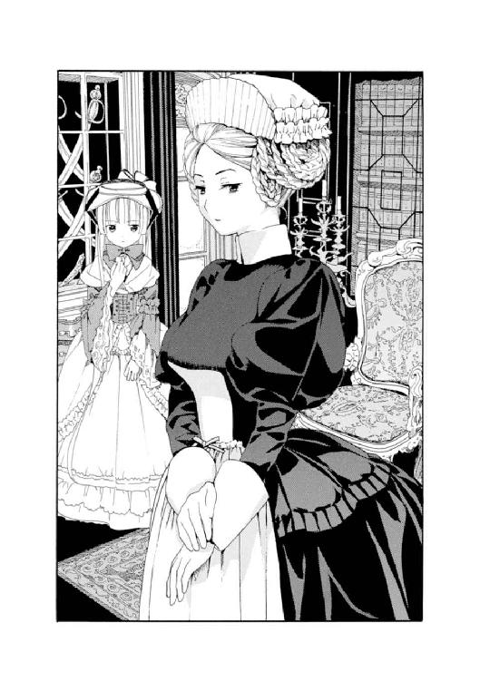
ヴィクトリカは唇をきつく結んだ。
「ここには入ってはいけないと、セルジウス様が」
「......なぜだね？」
ヴィクトリカは言い返した。
「なぜって......」
ハーマイニアは戸惑ったように、首をカタリとかしげた。また、壊れた人形が動いているような異様な姿になる。
「気づかれては困ることがあるから、ではないかね？」
「......どういうことですか？」
「この書斎で起きた事件に、べつの真相が隠されているからだ」
「まさか！」
ハーマイニアは笑った。
くっくっくっと笑う声がしばらく続いた。
くっ、くっ、くっ......！
ヴィクトリカが有無を言わさぬ声で、おかしな笑いをさえぎった。
「セルジウスは反論を許さない男だ。村長となった彼の判断に誰も意見ができなかったのだろうと推測される。その呪縛はいまも続いている。だが......彼が書斎を見ることをわたしに禁止したのは、自分の理論に、内心では不安を感じているからなのではないかね？ もしくは......知られては困ることがあるのだ。ちがうかね？」
ハーマイニアはますます高い笑い声を上げた。
しかしその声は次第に途切れ、青白い幽鬼じみた顔には、少しずつ不安そうな表情が浮かび始めた。
目玉をひん剝く。黒目はなにも映っていないような虚ろな様子で、剝き出された白目には細く赤い毛細血管が無数に走っていた。不安そうに首をカタリカタリと左右に振り、ハーマイニアは大きく息を吐いた。
ふ、う、う、ぅ、ぅ......！
「どうしたのだね、ハーマイニア？」
ハーマイニアはひゅうっと息を吸い、それから言った。
「......じつは、ずっと気になっていたことが。口には出せなかったけれど」
ヴィクトリカはじっと彼女をみつめた。
ハーマイニアは足音も立てずに近づいてきた。ゆっくりヴィクトリカに歩み寄ると、空気を振動させる低い声で、
「わたしは当時この館にいました。あの夜の出来事も、どんなに大騒ぎになったかも覚えています。でも、あのときわたしはまだ六歳でした。コルデリアの犯した罪に怯え、熱に魘される彼女に付き添うことを求められても拒否しました。こわかったのです。そうしてようやく、罪人がわずかな荷物だけを持たされ村から追放されると、安心し、今度は自分が熱を出したのです。それほどわたしはコルデリアが......罪人の気配がこわかった」
ハーマイニアは言葉を切った。
白目がまた大きく剝き出され、真ん中の黒目がぐるりと動いた。どこを見ているかわからない異様な顔つきだった。その顔を、腰を屈めてヴィクトリカの頰に近づけ、
「しかし、コルデリアが追放された後も、厄は彼女について村を出ていきはしなかったのです。その後の二十年で、村は少しずつ変わっていった。村はいつのまにか色鮮やかさを失い、まるで白と黒だけで描かれた寂しい絵画のよう。そして、子供がとても減ったのです。新しく生まれる子供が......。厄は村から去らなかった。もしかしたら、とおそろしい考えがよぎりました。もしかしたら......」
ハーマイニアはその先を言おうとしなかった。
ヴィクトリカが代弁する。
「罪人は、まだこの村にいるのかもしれないと？」
「............」
ハーマイニアは口をきつく結んだ。
「......セルジウス様のおっしゃることももっともです。コルデリアが犯人だったと考えるのがもっとも簡単なことなのです。書斎の扉には内側から鍵がかかっていたし、その鍵はシオドア様とコルデリアしか持っていなかった。中には誰もいなかった。自ら書斎に入ったコルデリア以外の誰にも、シオドア様をナイフで刺すことはできなかったはずです。もちろんわからないこともある。床に散らばっていたたくさんの金貨のことや、時間に関する証言がみんなまちまちだったことや......。それでも、コルデリアが限りなく犯人に近いということは変わりません」
「ふむ......」
「ですが......」
ハーマイニアはさらに白目をぎょろつかせて叫んだ。
「大人になってから気づいたのです！ この話がどこかおかしいということに！ シオドア様はこうやって......背中の上部を後ろからブスリと刺されていました。その短刀は柄までぎっちりと背中に食い込んでいたそうです。しかしシオドア様は大人の男で、追放されたコルデリアは十五歳の少女。背の高さもちがいます。こうしなければ......」
ハーマイニアはなぜか晴れやかな笑顔になり、両手を合わせて振り上げると、上から下に思い切り振り落とした。目に見えない短刀が窓からの日射しにきらめき、そこに立つ二十年前に死んだ男の幻にグサリと突き刺さるような......寒々しい一瞬だった。
「......こうしなければ殺せません。でもコルデリアはなぜ、わざわざシオドア様の背後に回って、こんな刺し方をしたのです？ それに背の低いほうがこんなことをしたら、よほどの力がなければ、根元までぶっすりと刺さらないのではないでしょうか？」
「......その通りだ」
「わたしならこうすると思うのです。自分よりも大きな、大人の男を刺すのなら」
ハーマイニアは幻の短刀を腹の前に構えて、まっすぐに体ごと相手にぶつけて刺し貫くポーズを取った。
目玉をぎょろつかせ、首をカタリと真横にかしげて、ヴィクトリカを見下ろす。
「ね？」
「そうだな」
「..............................」
ハーマイニアは急に押し黙った。
「殺したのは誰だね？」
「わかりません。わたしにはただ、なにかがおかしいとしか」
それだけ言うとハーマイニアは口を閉じ、足早に......逃げるように書斎を出ていった。
ヴィクトリカ一人が部屋に残され、その後ろ姿をみつめていた。
小声で独り言を言った。
「おかしな刺さり方をしていた短刀。散らばっていたたくさんの金貨。そして、時間がまちまちなこと......！」
首を振った。
窓からの日射しが、二人の人間によって舞い上がらされた細かい埃を、白く浮かび上がらせていた。柱時計の振り子の音だけが重く、規則正しく響いていた。
と......。
──カチッ！
かすかに音がした。
そして......。
──ボーン！ ボーン！
柱時計が鳴り始めた。
ヴィクトリカの瞳が大きく見開かれた。驚いたようにその音に耳を澄ます。
頰に赤みがさし、表情も明るく変わる。
小さな唇を開いてなにか言いかける。そのとき......。
窓の外でバサバサと鳥の羽音が響いた。ヴィクトリカは思考を邪魔されたことにいらつくように、顔を上げて窓の外をきつく睨みつけた。窓の外を白い鳩が何羽も飛びすぎていくところだった。白い小さな体が幾つも暗い空に舞い上がっていく。
ヴィクトリカの表情が、人形のように物静かなものに変わった。
......何ごとか考えている。
エメラルドグリーンの瞳がちろちろと揺れる。まるで緑色の炎が燃えているような──、熱のこもった、だが不思議な冷たさもある、その瞳──。
ゆっくりと瞳を細める。
そのまま数秒。
やがて──、
ヴィクトリカは顔を上げた。その顔には確信に満ちた冷たい表情が浮かんでいた。
「〝知恵の泉〟が語りかけた──。いま欠片はすべて再構成された──！」
書斎の重い扉のほうを、ゆっくりと振り返る。
「だが..................」
急に顔を曇らせる。
「だが、これをどう証明するのだ......？」
３
その頃、一弥は──。
広場や墓地やあちこちを走り回って、はぐれてしまったヴィクトリカを捜していた。
昨日、野生の狼に追いかけられたことや、誰かわからない人物によって水差しに動物の目玉が入れられていたこと、となりの部屋で羽根布団の中に潜んで脅した謎の人物のことや、ついさっき起こったおそろしい殺人事件......。
さまざまなことが頭に浮かんでは消え、一弥を不安にしていた。
うろうろと歩いて、村人に連れの少女を見なかったかと質問しては、首をかしげられ......。
はぁ......とため息をついたとき、なにかが後頭部に突き刺さった。先の尖った妙なものが......。
振り返ると、金色のドリルの先のようなものが視界いっぱいに広がっていた。目に刺さりそうな恐怖を覚えて、一弥は思わず後ずさった。
「......君」
怒りに震える男の声。
「確か、久城一弥くんだったかねぇ？」
「............警部!?」
グレヴィール・ド・ブロワ警部が立っていた。巨大すぎる旅行用の四角いトランクを抱えている。顔をひきつらせ、両手をわなわなと震わせていた。怒っているらしい。
「荷物、大きいですね？」
「君ね......」
「それも遺伝なのかなぁ。ヴィクトリカの荷物もやたらと大きいし......」
「君ね、君............」
青い血管の筋が額に数本浮かんだ。
一刻置いて、ブロワ警部が怒鳴った。
「どうして君までここにいるのだね！ それと、あの、あれは......あれだよ、あれ！ 髪の長い、生意気な、ちびっこい......」
一弥は警部の体から溢れ出す怒りに圧倒されながらも、
「ええと、警部の妹さんですか？」
「............」
ふんふんと鼻息だけが荒く聞こえた。
警部は返事をしようとせず、いらいらと足踏みを続けていた。それからようやく小声で、
「......あれも、ここにきているだろう？」
「はぁ......」
「久城くん、君が一人でこの村にくるわけがないのだからな......」
「おかあさんの故郷らしいですね」
警部は頭を振り、忌々しそうに呻いた。
「あれはどこだ！ あれは！」
「それが、ぼくもいま捜してるんです」
「なにをのんきな！ 君も知っての通り、あれには特別な外出許可がいるのだ。だからほとんど学園から出たことがないし、学園に入れる前は館の塔から出さなかったのだ。それが勝手にこんなところまできたと知れたら、わたしも大変なことになるのだよ......！」
ブロワ警部はいらいらと地面を蹴った。
「大変なことって......？ 警部、ヴィクトリカはどうして外に出てはいけないんですか？ ときどき休暇を取って旅行をしたり、週末に買い物に出かけたりするぐらい、誰だってできることだと思うんですが......」
警部は聞こえない振りをした。一弥はため息をついて、
「それにしても警部......ヴィクトリカを追いかけてきたんですよね？ でも、よく、ここにきたってわかりましたね」
「当たり前だ。あいつが勝手に聖マルグリット学園を抜け出すなんて、前代未聞だよ、君。そうなれば、わざわざ向かうのはここぐらいなものだろう？」
「......そうなんですか」
二人が言い争っているところを、遠くからくるくる渦巻く赤毛の女性が通りかかろうとして......あわててきびすを返すのが見えた。
一弥はそれに気づいて、
「そうだ、警部さん......！ 例のバザーでのドレスデン皿盗難事件の犯人、なぜかぼくらと一緒にきてるんですよ。あのシスター......。シスターだっていう割には、賭事やお酒が大好きで、なによりお金が好きだって言ってましたけど。とにかくおかしなシスターで......」
「............」
警部はなぜかまた、聞こえていない振りをした。
一弥は口を閉じ、警部の顔をじっとみつめた。
（なにか、おかしいな......）
思えば、バザーでのドレスデン皿盗難事件のことをヴィクトリカが解決してみせたときも、警部の態度はおかしかった。犯人を知ると、困ったような顔をして図書館を出ていき、しかもその犯人を捕まえなかった。それにいまは、ミルドレッドのほうが、警部の姿に気づくとあわてて逃げていったようだが......。
──一弥が考えこんでいると、館の玄関の扉が開いて、ヴィクトリカがとことこ出てきた。警部はアッと叫ぶと、一弥の両肩に手を置いてぶんぶん揺さぶった。
「いいかね！ あれにすぐ学園に戻るように言え！ 君、わかったかね！」
「......どうして自分で言わないんですか！」
ヴィクトリカは二人が争う声に気づいて顔を上げたが、驚いた様子はなかった。一弥は警部から離れ、ヴィクトリカに向かって走り出した。
彼女の前に着くなり、
「......いったいどこに行ってたんだよ？ ヴィクトリカ。心配して捜してたんだからね」
一弥はやきもきして話しかけるのだが、ヴィクトリカのほうは何ごとかに思い悩むように早足で歩き続けている。
一弥がなおも話しかけていると、ようやく気づいたように顔を上げ、
「......なんだ、君か」
「君か、じゃないだろ。あと、お兄さんもきたんだけど......」
「ああ、グレヴィールか。彼なら、そろそろくるだろうと思っていたよ」
「本当に？ どうしてわかったんだい？」
ヴィクトリカは驚いたように一弥の顔を見上げた。じつに不思議そうに、
「......君、気づいてなかったのか？」
「気づいてって、なにを？」
「あれにだ」
「あれって？」
「......もう、いい」
ヴィクトリカは苛立ったようにそう言うと、口を閉じた。
そのまま歩いていってしまうので、一弥はあわてて後を追った。
「とにかく、あんなおそろしい事件があった後なのに、一人でうろうろして。ヴィクトリカ、帰らないのなら仕方ないけど、その代わり君、頼むからぼくから離れないでくれよ」
「どうしてだね？」
「──心配だからだろ！」
一弥が怒りだした。
ヴィクトリカは初め、不思議そうに相手の顔を見上げてぼうっとしていたが、その顔に次第に固い表情が浮かんだ。
「......わたしはそれどころではないのだよ、君」
「それどころって......。ヴィクトリカ、ぼくは君のことを心配......」
「心配などしなくていい」
「............!!」
「わたしのことは放っておいてくれ。君、なぜそんなにおせっかいなのだ？ 暇なのかね」
「なっ......！」
一弥の顔が怒りで赤く染まった。なにか言い返そうと口をぱくぱくさせていると、遠くから誰かが二人を呼ぶ声が聞こえてきた。
二人が同時に振り向くと、聖堂の前に立ったアンブローズが手招きしていた。
顔を見合わせ、口喧嘩は休戦ということにして、二人は聖堂に向かっていった。
──聖堂の前には、いつのまにか、アンブローズのほかに十代の少年少女が数人集まっていた。アンブローズは疲れた顔をしてはいたが、努めて明るく、
「セルジウス様のお考えで、夏至祭を続けることになりました。なので......」
アンブローズの説明によると、夏至祭の夕方、聖堂に子供だけを集めて、未来を視るのだという。
昼間の寸劇で〈夏の軍〉が勝利し、豊穣が約束された後、夕刻に聖堂を無人にする。その無人となった聖堂を通って先祖が広場にやってくる。夜になると今度は、先祖に豊穣のさまを見てもらう儀式が始まる。
その前に......だいぶ近づいてきた先祖の霊に質問するという形で、子供にだけ、一人が一つ未来について教えてもらえる儀式が行われるらしい。先祖の言葉は村長のセルジウスが代弁するという。
「せっかくだから、お二人もいかがですか？ ぼくはセルジウス様の助手につきますから、列に並んでおいて下さい」
ヴィクトリカは面倒くさいといやがったが、一弥は参加するだけしてみようと言って彼女を列に並ばせた。
聖堂の中はしっとりと湿った空気に満たされていた。天井は高いが幅が狭く、上に近づくにつれさらに細く尖っていた。ステンドグラスが輝き、ささやき声さえも響いて聞こえるほどによく反響した。
内部は暗く沈んでいた。花のような模様にそった小さな穴がいくつも開いている薔薇窓から、薄い日光が細かく分断されて床に落ちていた。牡丹雪が舞うように、白く小さな光がたえまなくこぼれ落ちてきていた。
手前の広いホールには、聖歌隊席の長椅子が五列並んでいた。石造りの長椅子には花が撒かれていた。ピンクやオレンジ、クリーム色の花びらに埋まっていた。
聖堂のいちばん奥に、秘密部屋のような小さな礼拝堂があった。屋内にもう一つ小さな家を建てたように、尖った屋根に覆われたその部屋だけが、日光も花びらの輝きも届かず、暗く闇に沈んでいた。
と、礼拝堂にかすかな灯りがついた。燭台が置かれて、小さな炎が揺らめいた。その横に古びた壺が大切そうに置かれているのが照らし出され、一弥は、あれが聖水の大瓶に何度も落とされた壺かと思い当たった。
暗さに目が慣れてくると、礼拝堂の奥にセルジウスとアンブローズが座っているのが見えた。セルジウスは躰に僧を思わせるトーガを巻きつけていた。紫色をした帯が、裾から床に長く垂れていた。目を閉じていて、ガラスのコップに注がれた水をやたらと飲み干した。そのたびにアンブローズが水差しから水を足していく。
少年少女たちが順番に礼拝堂の奥に行き、村長のセルジウスになにかささやく。そのたびにセルジウスは目を閉じて、祈るように数秒黙り......なにかをささやき返す。
その言葉は驚くほど長いこともあれば、ほんの一言のこともあった。少年少女たちは、ある者は満足そうに笑顔で、ある者は怯えて泣きながら、一人また一人と去っていく。
静かで、どこか敬虔な雰囲気だった。初めは真剣ではなかった一弥も、村の少年少女たちの様子に押されて、少しずつ真面目な気持ちになってきた。
（それにしても......未来についてか。なにを質問しようかな............？）
やがて一弥たちの番になった。ヴィクトリカが一弥をぐいっと押して、
「君、先に行きたまえ」
「ええっ、ぼくから？ わ、わかったよ......」
一弥はそっとセルジウスの前に進み出た。
「ええとですね......」
セルジウスが目を閉じる。一弥は忙しくいろいろなことを考えた。
（ええと、一国の、そして世界に役立つ優秀なる人材になれるかどうか。将来のことを......）
「......じつは、友達がいるんですけども」
口が勝手に動いて、考えていることとまるでちがうことを言い始めた。しかも、話し始めたらなぜか止まらなくなってしまった。
「あの、女の子なんですけど、とにかく頭が良くて口が悪くて、なんていうか、ぼくにはどうしたらいいかぜんぜんわかんないんですけど。もっともそれはぼくのせいじゃなくて、向こうがおかしいんだと強く思うんです。いつもばかにされるしこき使われるし、そのくせ邪魔者扱いされたりするし」
「......それはひどいな」
「ええ。もう苦労の連続で、本当に腹が立っているんです」
「......察するよ」
「本当にもう、我慢できないぐらい腹が立っているんです」
「うむ......」
「つまり、ぼくが言いたいのは......」
「......言いたまえ」
「ぼくはその......」
一弥は迷った。
それから思い切って、心に浮かんだことを口に出してみた。
「ヴィクトリカと、これからもずっと一緒にいられるのでしょうか？」
顔が赤くなった。一弥はなぜか急にとても悲しい気持ちになった。そして、そんな質問を口に出したことを強く後悔した。苛立ちや期待や、得体の知れない感情が胸に満ちてくる。一弥は努めてそれを無視しようと踏ん張った。その感情は男らしくないものだという気がした。
礼拝堂は静寂に包まれ、闇に沈んでいた。
きらりとなにかが光った気がした。目を閉じるセルジウスの上に、薄闇に沈んでいるはずの礼拝堂のどこからか......陽光の欠片のようなものが......一瞬だけ、きらきらっと輝きながら降り落ち、すぅっと消えた。
その後は、さっきよりずっと暗くなった気がした。一弥は唇を嚙んで待った。
やがてセルジウスが、しわがれた声でつぶやいた。
「ともには、死ぬまい」
一弥は顔を上げた。
セルジウスがゆっくりと目を開いた。
黒目が消えて、濁った卵色をした白目が二つ、ぽっかりと顔に浮かんでいた。口を開き、うめき声を上げる。
最初は聞き取れなかったが、次第に言葉としてなんとか聞き取れるようになってきた。
「......それは......これから何年後か......世界を揺るがす大きな風が吹くであろう」
「はい......」
「そなたたちの体は軽い。いかに思いが強くとも、風には敵うまい」
「............」
「その大きな風によって、二人は離ればなれになることだろう」
一弥はすっと血の気が引くのを感じた。
「しかし、案ずるな」
「............」
「心は、ずっと離れまいからな」
「心、は......？」
「ああ、そうだ」
セルジウスの黒目がきゅううっ......と元に戻ってきた。水差しから直接水をぐいぐいと飲み干す。口元から顎へ、そしてトーガへ......水が細い滝のように流れ落ちた。一弥に「行ってよいぞ」とつぶやくと、つぎにヴィクトリカを呼んだ。
釘を刺すように、
「母親のことは聞くな」
と言うのが背後で聞こえた。
一弥は子供たちで騒がしい聖堂から走り出た。
外はだいぶ明るかった。まだ昼間なのだ。
足がもつれそうになり、外に出たところでようやく止まる。
乳色の濃い霧がまた立ちこめていた。前にも後ろにも人気はなく、一弥は一人きりでそこに立っていた。
頭の中で、セルジウスの声が響き渡った。
〈心は、離れまい......〉
〈風によって、二人は離ればなれに......〉
〈世界を揺るがす大きな風が吹く......〉
〈何年後か......〉
〈風が......〉
一弥は大きく首を振った。
「信じないぞ。占いなんて信じない......」
その声がとても不安そうに震えているのに気づいて、一弥は自分らしくないと感じた。そして、どうして自分はあんな質問をしたのかなぁと首をかしげた。
そのまましょんぼりとうつむいて靴の先を見ていると、立ちこめる乳色の霧の向こうから、誰かの気配がした。足音一つ立てずそれは近づいてくる。やがて霧の中から、金色の髪を細かく編み込んだ小さな頭が見えた。
目玉をぎょろりと剝いて、一弥を見る。
ハーマイニアだった。
「あの、占いを......」
一弥が短く説明すると、ハーマイニアは、あぁとうなずいた。男のような低い声だった。
それから急に甲高い若い女の声になり、
「いやな結果が出たのでしょう？」
「はぁ。まぁ......うん、多分」
「占いの結果は覆りませんよ」
「べつに、占いなんて信じてるわけじゃないんですけど......」
「覆りませんよ」
ハーマイニアは繰り返して、くっくっと笑った。
ぽかんとして見ている一弥の後ろから、ヴィクトリカもやってきた。ハーマイニアは二人を見比べながら、今度は老人のようにしゃがれた声で言った。
「しかし、過去に一度だけ覆ったことがありますが......」
ハーマイニアはそれだけ言うと、立ち去っていった。その姿は濃い霧のヴェールにはばまれてすぐに見えなくなった。
「なんなんだよ。覆るとか、覆らないとか。ヴィクトリカ......わぁっ!? 君、どうしたの？」
ぶつぶつ文句を言っていた一弥は、かたわらの彼女を見下ろして驚いた。
ヴィクトリカは、かなり不機嫌そうにほっぺたをふくらましていた。栗鼠が木の実を詰めこんだような大きなふくらみだった。そして瞳には、いっぱいに涙がたまっていた。
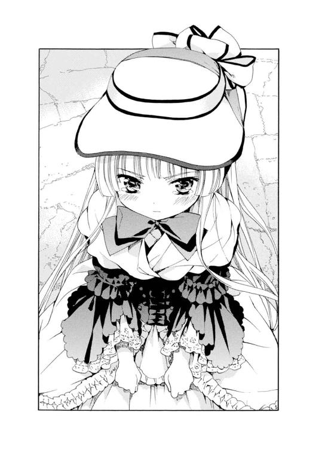
（この顔は......よっぽどいやなことを言われたんだろうなぁ......）
館に向かって歩きだしながら、一弥はヴィクトリカに聞いた。
「君、いったいなにを聞いたのさ？」
「......君に関係あるかね？」
ヴィクトリカの答えは喧嘩腰だった。相変わらず、すこぶる機嫌が悪いらしい。一弥はいい加減腹を立てて、
「......そりゃ、ないけどさ」
自分もなにを聞いたのか聞かれたら困ることを思い出して、一弥は黙った。
（もしかしたらヴィクトリカは、人には言えないような、とても深刻なことを質問したのかもしれない......。それなら無理に聞いちゃいけないし......）
と、ヴィクトリカがきわめて不機嫌な声で、ぼそっと言った。
「......伸びるか、聞いたのだ」
「伸びるってなにが？」
「背だ」
「............背ぇ!?」
一弥は足を止めて、かたわらの彼女を見下ろした。
少年としてはどちらかといえば小柄な一弥の胸の辺りに、彼女の小さな頭がある。十五歳という年齢にしてはずいぶん小柄と言えるだろう。どうやら彼女はそれを気にしていたらしい。
一弥は思わず、失礼にもぷっと吹き出しそうになった。
「なんだ、背かぁ......」
心の中だけで（そっか。占いで、もうこれ以上伸びないよって言われたんだ......）と付け足し、かわいそうに思いながらも、ついつい笑い出しそうになった。
さっきまでの怒りやもやもやした気持ちが、他愛もなくどこかに消えていく。一弥は元来、あまりいつまでも思い悩むほうではないのだ。父や兄たちとすれ違ってしまったときのように、本当に傷ついたとき以外は。
しかし、にこにこし始めた一弥の顔を見上げたヴィクトリカのほうは、他愛もなく笑顔に、とはいかないようだった。静かな危険な目つきで、一弥を睨む。
「......久城、君、笑ったな？」
「へっ？」
ヴィクトリカの表情がとつぜん悲しげに滲んだ。
「君はいつもそうだ。わたしのことなど......わかっていないのだ。なのに、見透かしたようなことを簡単に言うのだな、君は」
ヴィクトリカは謎のような言葉を吐いた。
なんだか彼女らしくない言葉だった。声のトーンもいつになく暗く、いまにも泣きそうに沈み込んでいた。一弥は驚いて聞き返そうとした。
そのとき......。
──ごちん！
ヴィクトリカがレースのついた革靴のつま先で、一弥の向こう臑を思いっ切り蹴飛ばした。たいした力ではないのだが、彼女の小さな革靴はとても固くて、一弥は飛び上がった。
「イテーッ！」
ヴィクトリカが一弥を睨んだ。少し涙ぐんでいるようだ。
「おい......ヴィクトリカ？ 痛いだろ。こら、痛いってば。なにするんだよ！」
ヴィクトリカは答えず、先に館の玄関を抜けて、ホールに入っていってしまった......。
彼女を追いかけようとした一弥は、またもや彼をみつけて追いかけてきたブロワ警部に呼び止められ、ヴィクトリカのほうを気にしながらも、その場に足止めされてしまった。
「おい久城くん。それで君、うちのその、あれは......帰らないのか？ 学園にいてくれないと困る。わたしは困るのだ。君からよく言い聞かせてくれたまえ..................」
「いや、警部......」
一弥が困りながらも、ヴィクトリカがまだ帰らないということと、自分がついているということを主張すると、警部はそれを鼻で笑った。
「久城くん、君がついていようがいまいが関係あるかね？ 確かに君はあれと仲がよいようだがね、それは君とあれとのあいだのことに過ぎない」
「......どういうことですか？」
ブロワ警部は目を細め、一弥を見下ろした。
「あれは外に出てはいけないのだ......。コルデリア・ギャロは先の世界大戦でしてはいけないことをした。あれは普通の人間ではない。危険なのだ。君はまだそのことを知らないのだよ、久城くん......」
警部の顔には嫌悪や怖れといった表情が浮かんでいた。一弥は黙って警部の顔を見上げていた。なにかを質問したかったけれど、なにを聞けばいいのかわからなかった。ただ自分はヴィクトリカのことをなにも知らないのだという気がしてきて、そう思うとともに、悲しみや怒りがこみあげてきた。
ブロワ警部は続けた。
「とにかく、あれはひとまず聖マルグリット学園に戻らなくてはいけないのだ。そういう約束で学園への入学を決めたのだからな。後のことはおそらく......父が決める」
「父って、ブロワ侯爵ですか......？」
「そうだ......！ あれと、それからわたしも、謗りを受けることだろう。あれの監督は、一族の中でわたしの義務とされていたのだからな......」
一弥はわけがわからず、首を振った。
もめている二人に向かって、霧の中から近づいてくる人影があった。一弥がその大きな足音に気づいて振り返る。警部も遅れてそちらをじろりと見た。
濃い霧をかき分けて近づいてきたのは、アンブローズだった。聖堂から早足で歩いてきて、二人に気づくと足を止める。
そうして見ると彼は、霧の奥から迷い出てきた大昔の人間のようだった。ごわごわと毛羽だった毛織のシャツはあまりに古めかしく、革のベストも膝までのキュロットも、大きな音を立てる先の尖った靴も、中世に生きた農民が幽霊となって迷い出てきたようだ。
しかし彼の顔は、金色の長い髪と緑色の瞳、少女のようにも見える薔薇色の頰、そしてなによりも表情が好奇心に生き生きと輝いており、まだ少年から青年となってまもない若者に特有の、若々しい魅力にあふれていた。
彼は一弥に笑顔を向けてから、新しい客人に気づいた。礼儀正しく、
「見張りの者から連絡を受けました。新しい客人が、こら、れた、と............？」
次第に声が途切れがちになり、アンブローズの輝く瞳はまっすぐに、グレヴィールの貴族らしい気取った顔つきの上にある、ドリルの先のようなものに注がれた。
アンブローズの本質にある、無邪気な子供らしさの名残が顔を出したらしく、彼は村長の助手という立場をたちまち忘れて、新しい客人を好奇心をむきだしにして眺めた。それから急に、まさに子供のように質問責めにし始めた。
「お客人、そのヘアスタイルは若者の流行ですか？ なにをイメージしているのでしょう？ それからシャツは......絹ですね。男性も絹のシャツを着るのですか？ それから袖口の銀色に光るものは......？ 釦の代わりなのですね。きれいだなぁ......銀製ですか？ それから......」
「......アンブローズ！」
霧の奥深くから険しい声がかけられた。
アンブローズははっと我に返り、口を閉じた。質問責めにあったブロワ警部のほうは、まんざらでもない様子で自分のファッションについて語ろうとしていたが、霧の向こうから現れた中世の僧のような老人の姿に驚いて、口を閉じた。
一弥の小柄な体に隠れ、後ろからささやきかける。
「......誰だね？」
「村長です」
セルジウスは怒りに震え、髭も逆立つほどの形相で若い助手を睨みつけていた。アンブローズはしまったというように唇を嚙み、頭を深く垂れている。
「アンブローズ......。おまえはまだ、そのようなことに興味をもっておるのかね？ おまえはつぎの村長として村を守らなければならない人間だというのに。このわしが、見込みのある青年だと推してやったというのに」
「はっ......」
「外の世界から客人がくると、おまえはそわそわと浮き立つ。まだ子供だったときもそうだった。ある日とつぜんブライアン・ロスコーと名乗る子孫が訪ねてきて、村にしばらく滞在し、莫大な富で村に電気を引いたとき。あのときもおまえはブライアンになつき、一日中、町の話をしてくれとねだった。愚かなる好奇心。ブライアンが去った後は何か月も、おまえは櫓に上り、山の向こうを眺めてばかりいた。立派な青年となったいまも、おまえは愚かな子供であったときと、少しも変わっていないというのかね？」
「申しわけありません......」
アンブローズがますます頭を垂れた。
「それから、アンブローズ......髪がほどけかかっているぞ。きちんと固く結ぶのだ。髪につられて心があやふやになるのを防ぐためにな」
アンブローズはあわてて髪に手をやった。そう乱れているようには見えなかったが、金髪が二筋ほどほどけて首にふわりとかかっていた。
しばらくセルジウスは髪を結び直す若者を睨みつけていたが、やがて視線を、一弥の後ろに隠れているおかしな洒落者の男に向けた。
「あなたは？」
アンブローズが、新しい客人がきたのだと告げた。一弥が続けて、ヴィクトリカの腹違いの兄なのだというと、セルジウスはかすかに眉をひそめた。
ブロワ警部が胸を張って挨拶をした。
「グレヴィール・ド・ブロワ。職業は名警部です......。いや、冗談です、が..................どうしました？」
ブロワ警部の職業を聞いた途端、セルジウスの表情が変わった。
「警部なのかね......？」
「はぁ。あの、なにか？」
「それならば......」
セルジウスはまっすぐにブロワ警部をみつめた。
「ぜひとも、解決してもらいたい事件がある」
４
──灰色の館の一階にあるダイニングルーム。
大理石のマントルピース。黒光りする鏡板の壁の四隅に、ガラス細工の壁灯がかけられている。壁には絵画が飾られていて、それはどうやら、この村の風景を描いたものであるらしい。
豪華な部屋は、やはりなぜか息苦しかった。天井が低く、じっとしていると少しずつ押しつぶされていくような気がしてしまう。一弥はため息をついて、となりに座るブロワ警部の様子をうかがった。
一弥とブロワ警部は、セルジウスに連れられて、有無を言わさず部屋に通されていた。つぎつぎと村の重鎮らしい老人がやってきては、席に着く。一弥とブロワ警部は隅の席に小さくなっていた。
ハーマイニアが足音一つ立てずに入ってきた。古いがよく磨かれた銀食器を抱えている。それぞれにお茶やブランデー、葡萄酒などが給仕されていく。
セルジウスはブロワ警部に向かって、つい数時間前に起こった、〈冬の男〉の張りぼてが人間に替わって焼け死んだ事件を説明していた。
「......つまり、死んだアランという男は、事件の直前に別の場所を歩いているところを目撃されているのです。ハシバミの実を娘たちに投げつけられて、痛そうに退散していった......。しかしその後、アンブローズが人間の形をした張りぼての載った山車に火をつけると、いつのまにか張りぼてとアランがすり替わっていて、彼は炎に巻かれて死んでしまった......」
「はぁ」
警部は不安そうに足踏みしながら、話を聞いていた。
「警察の方なら、好都合というものです。この事件の謎が解けないままでは、わたしどもとしても......」
「......おい」
警部が一弥の膝をつついた。
「......なんですか？」
「あれはどこだ？」
「警部の頭のいい妹のヴィクトリカなら、多分自分の部屋ですよ」
「呼んできてくれたまえ、君」
一弥は腹を立てて、警部にささやいた。
「またヴィクトリカの知恵を借りておいて、自分の手柄にするつもりでしょう？ それなら自分から、彼女に力を貸してくれと頼むべきです。あなたのやることには、いつも筋というものが通っていないんです」
ブロワ警部は、一弥の顔を不思議な目つきで見返した。その顔が少しずつ、なぜか悔しそうに歪んだ。そして吐きだすように、
「......ぜったいにいやだ！」
「なんでですか？」
「わたしが頼むのと君が頼むのでは、違うのだ。結果がぜんぜん違うのだよ。久城くん、君自身は気づいていないが、君の受け取っている恩恵は、悪徳高利貸しからただでお金をざくざくもらい続けるような、奇特で不思議すぎるものなのだ」
「......なにを言ってるんですか？」
「いいから呼んでこい！ くれぐれも、君があれに頼むんだぞ、久城くん」
「警部......っ！」
そうは言っても、彼女を一人にしておくのは、一弥としても不安だった。一弥はそっと立ち上がって、ダイニングルームを出た。
豪奢な造りだが、やはり天井が低く圧迫感のある廊下を、一人で歩く。
青銅のてすりがついた大階段を上がり、ヴィクトリカの部屋の扉をノックする。すぐに扉が開いて、ヴィクトリカのかなり不機嫌そうな顔が覗いた。
「......なんだね？」
「心配だから、見にきた」
「わたしは無事だ。久城なんか知らない。放っておいてくれ」
「君ねぇ！......ちぇっ、わかったよ。もううるさく言わないよ。......それから、ダイニングルームで君のお兄さんが助けを呼んでるけど」
「助けだと？」
ヴィクトリカは大きな瞳を瞬きさせた。
「村の人たちに囲まれて〈冬の男〉の事件を解決してくれと言われてるんだけど、ぜんぜんわからないって遠い目をして、君を呼んでこいってぼくをせっついていたよ。ぼくから君に頼めってさ」
「相変わらずばかな男だな」
「残念ながら、ぼくじゃなくて君の兄貴なんだけどね。......どうする？」
ヴィクトリカは少しだけ首をかしげて、考えこむような顔をした。それからうなずいて、
「よし、行こう」
部屋からちょこちょこと出てきた。
一弥はほかの部屋のほうをちらりと見て、
「ほかの人たちは？」
「......ミルドレッドは部屋にいるようだ。どうやら彼女はあまり祭に関心がないらしいな。男二人はさきほどまでどちらかの部屋で騒いでいたが、いまは外に出かけたようだ。どうやら友人の死を悼むというよりは、村人を恨んでいるようだったな。アランは村人を侮辱したために、彼らの手によっておそろしい方法で殺されたのだと思っているようだった」
ヴィクトリカはそれだけ言うと先に廊下を歩きだした。一弥もあわてて後を追った。
パニエでふっくらふくらんだスカートの裾からフリンジが覗いて、歩くたびに揺れているのを、一弥は彼女の後ろを歩きながらぼんやりとみつめていた。レースのついた革靴を履いた足はとても小さくて、子供用の靴なのではないかと疑いたくなるほどだ。ヴィクトリカの小さな体は、レースやパニエやベルベットでふくらんで、歩くたびにふかふかと揺れていた。
──二人がダイニングルームに戻ると、ブロワ警部以外の全員が、なぜか椅子から立ち上がっていた。大きな窓が開け放たれ、外の暗い森が部屋まで迫ってくるようだった。黒くもつれあった枝とみっしりと生えた葉が、光が入り込めない暗い森を作っていた。
セルジウスが猟銃を構えていた。
一弥が驚いて、
「なにしてるんですか！」
「......狼だ」
セルジウスは短く答えた。
一弥は彼が睨みつけている森の奥をみつめたが、そこにはなにも見えなかった。昨日この村に着いたときも、セルジウスはかすかな音に反応し、狼がいると言って森に発砲していたが......。
──ぴしり！
森の中から、何者かが枝に当たって折ったような乾いた音が響いた。
「やはりな！」
セルジウスがつぶやき、止める間もなく森に向かって発砲する。
──銃声が響いた。
となりでヴィクトリカが息を呑んだ。「いけない......！」とかすかなつぶやきが洩れた。となりを見ると、彼女は真珠色の小さな歯を嚙みしめていた。それから窓に向かって走る。
セルジウスがなおも撃とうとするのを、止める。
「やめたまえ！」
同時に、外からうめき声が聞こえてきた。セルジウスが猟銃を下ろして、つぶやいた。
「仕留めたか......」
「ちがう！ あれは人間の声だ！」
ヴィクトリカの言葉の意味がわからず、セルジウスはただ彼女をみつめた。
「さっき......あの二人は散歩に行こうと言っていたのだ。森のほうに......！」
ヴィクトリカは叫ぶと、身をひるがえしてダイニングルームを飛び出した。ちょうど廊下にいたらしいアンブローズが、驚いたように彼女を振り返った。
一弥たちもヴィクトリカの後を追った。玄関を飛び出して、ちょうどダイニングルームの窓の外にある森に辿り着く。
ヴィクトリカは黒い枝をかき分け、森に入っていった。せっかくのドレスは枝に引っかかったり土にまみれたりして、どんどん様子を変えていった。
一弥は必死でヴィクトリカの後を追った。
森の外から......。
切れ切れにおかしな叫び声が響いていた。
うっ、うっ、うっ......。
人間が泣き声を押し殺しているようにも、獣が短く鳴いているようにも聞こえる。
うぅっ......うぅぅっ............。
どこから聞こえてくるのかわからず、一弥は思わず天を仰いだ。空はまるで見えず、黒い細い枝と生い茂る大きな葉が風に不気味にそよいでいた。
狼が出る......。
野生の狼が出る......この森..................。
「ヴィクトリカ!!」
一弥は歯を食いしばって、彼女の後を追った。
不気味な低い鳴き声が、背後から近づいてくる。
やがてヴィクトリカが足を止めた。
鳴き声がさらに大きくなり、天高くに甲高く突き刺さる。
「ヴィクトリカ......？」
一弥の声に、ゆっくりとヴィクトリカが振り返った。
困ったような顔をしている。
「......二人目だ、久城」
「えっ？」
「ラウールも殺されたようだぞ」
一弥は走り、ヴィクトリカに追いついた。そして彼女が指差している地面を見た。
そこには......胸から血を流して倒れているラウールがいた。
瞳は見開かれ、呆然と虚空を見上げている。すでに事切れているのは一目見てわかった。
泣き声の主はデリクだった。森の外から、一弥たちを追って走ってきていた。甲高い奇妙な声を上げて泣きながら、彼は立ち止まった。倒れているラウールに気づき、さらに声を大きくした。
「二人で散歩してたんだ。ラウールがおもしろがって、どんどん森の奥に入っていった。そしたら、どこからか銃声がして......続けてラウールの声がした。短くて......悲鳴みたいだった。撃たれたんだってわかった。だけど......どうしてだ？ どうして............死んじまってるじゃないか！ どうして撃たれたんだ？」
「狼と間違えられたんです」
デリクは、言われた意味がわからないというようにぽかんと口を開けた。
「......狼？」
村人たちもやってきた。惨状に気づいて、皆押し黙る。
「昨日デリクさんも、村長が森に発砲したところを見たでしょう？ 森の奥から音がしたから、狼だと思って......」
アンブローズが小声で付け足した。
「村人は森には入らないんです。だから、まさか人間だとは思わなかったのだと......」
「なに言ってるんだ？ 死んだんだぞ？ 人を撃って死なせたんだぞ？ 俺だって、もしかしたら撃たれていたかもしれないんだ。おまえら......わかってるのか！」
デリクが叫んだ。キンキンと耳に響く声だった。村人は顔を見合わせて黙りこんだ。
──ヴィクトリカがふっとしゃがんだ。一弥は、なにをしているのだろうと彼女の手元を見た。
ヴィクトリカは地面からなにかを拾い上げた。一弥の視線に気づくと、ちらりとだけそれを見せる。だが一弥には意味がわからなかった。ヴィクトリカだけが納得したように瞳を細め、うなずいている。
ヴィクトリカが拾い上げたもの、それは......。
固いハシバミの実だった。
５
「この森はハシバミの森ではないのだよ、久城。つまり、あの場所に実が落ちているはずはないのだ」
ヴィクトリカは面倒くさそうに小声で説明しながら、森を出ようと歩いていた。小走りについていきながら、一弥は、
「つまり、どういうことだよ？」
「ハシバミの実は、死んだアランに投げつけられたものだ」
「うん......」
「ところで、ドレスデン皿泥棒のミルドレッドはどこだ？」
急にヴィクトリカが言い出したので、一弥は驚いて、
「し、知らないよ......。部屋じゃないかな」
「ふむ......」
ヴィクトリカは急にふわぁ～とあくびをした。
──しばらくのあいだ村は混乱していたが、村人たちは祭を続けていた。アンブローズは二人をみつけると、セルジウスが「わしが撃ったのは狼で、人間ではない」と言い張っているのだとため息をついた。
ヴィクトリカはしばらく黙ってアンブローズの顔をみつめていた。不思議な表情だった。やがて彼女は低い声で、
「君自身はどう思うのだね？」
「ぼく、ですか......」
アンブローズは口を開いたが、答えることをおそれるように閉じた。それから迷い、しばらく黙っていたかと思うと、とつぜん堰を切ったように話しだした。
「ぼくにはなんとも言えません。誰もラウールさんが倒れたところを見ていないからです。ただ、ぼくがセルジウス様の立場だったなら、もしかすると自分が人を殺めてしまったのではないかと疑うのではないかと思います。誰も狼を見ていないのもまた事実ですから。ぜったいにちがうと言うのなら、証を立てねば」
アンブローズは少し迷い、ヴィクトリカをじっとみつめると、
「罪があることにもないことにも、証は必要です」
その言葉はセルジウスのことだけではなく、コルデリア・ギャロの罪に対しても向けられているようだった。ヴィクトリカは静かにうなずいた。
「......その通りだ」
二人のあいだに、共感の空気が生まれたように見えた。
「ところで、アンブローズ。君は夏至祭を無事に終わらせたいのだね？ そして、諸悪の根元を退治したいのだね？」
「もちろん、そうですが......？」
「いま〈名もなき村〉には混沌が渦巻いている。その原因となる欠片たちすべてを、わたしは握っている。欠片を再構成させれば、謎は解ける。たいがいの場合わたしは退屈しのぎにそれを玩ぶのだが、自分以外の人間にもわかるよう言語化してやることはきわめて少ない。面倒くさいからだよ、君。大人がきわめて複雑な問題について子供に説明を求められるようなものだ。面倒なので言語化してやることは滅多にない。わたしに毎回それをさせることができる人間は、ここにいる久城ぐらいのものだ」
「......そうなの？」
一弥は少し驚いて聞き返した。ヴィクトリカはそっぽを向いて無視した。
「君、ぼくが頼むからいつも説明してくれるの？ 普段はしないんだ......。そっかぁ......！」
「久城、うるさい」
ヴィクトリカが不機嫌そうに低い声で言った。一弥はあわてて口をつぐんだ。
「ご、ごめん......」
アンブローズが戸惑ったように、
「あの、つまりどういうことですか？」
「わたしは犯人を知っている」
「......えぇっ！」
アンブローズが聞き返した。
「どういうことですか？ ラウールさんを撃ち殺したのは、セルジウス様では......」
「......ちがうと言ったら、君はどうするかね？」
「しかし、確かにあのとき、セルジウス様が猟銃を撃ったのだと......」
「確かに彼は猟銃を撃ったが、ラウールに命中した弾がそれだと、なぜわかるのだね？」
「そ、それは......」
アンブローズは黙りこんだ。
彼の顔が急に無表情に変わった。なにを考えているのかわからない不思議な顔つきで、地面をきつく睨みつけて黙っている。
「アンブローズ、君は混沌の再構成を言語化してほしいかね？」
「......ええと？」
一弥が助け船を出した。
「犯人を教えてほしいかってことですよ」
「そうか......。ええ、もちろんです」
アンブローズの声は硬い。
「では、協力してくれたまえ」
「協力？ なにを？」
「わたしがアランとラウールを殺した犯人をみつけてやる。その代わり君は、わたしが持っている二十年前の混沌の欠片を再構成させる作業を手伝いたまえ」
「二十年前と言うと、シオドア様の事件のことですか..................？」
「そうだ。犯人は別にいる。しかしその証明には、君たちの協力が必要だ」
ぼんやりと聞いていた一弥は、不思議に思って聞き返した。
「......君たちって？」
「アンブローズと、久城。君たちのだ」
一弥とアンブローズは顔を見合わせた。
ヴィクトリカの瞳がひんやりと冷たく輝いた。瞳の奥で緑色の炎が激しく燃えていた。
「わたしは混沌の再構成を取引に使うことがある。わたしが謎を解いてやる代わりに、相応の見返りを要求するのだ」
一弥はふと彼女との初対面を思い出した。ヴィクトリカは、一弥が巻きこまれたとある事件の真相を教える代わりに、めずらしい食べ物を持ってこいと要求したのだった。そのことを言うと、ヴィクトリカはくすりと笑った。
「あんなものは見返りの内に入らない。わたしが要求するのはたいがいの場合、もっと大きく、痛みをともなう犠牲なのだよ。それはごく幼い頃からのわたしの習性なのだ。なるべく悪魔的な要求になるよう、日々心がけていたものだ。退屈しのぎにな。そういうわけで、久城」
ヴィクトリカはなぜか思い出し笑いをした。ずいぶん楽しそうな顔だ。
「グレヴィールはわたしを頼るくせに、とても嫌っているのだよ」
「......なるほどね」
一弥は彼ら兄妹のことが少しわかった気がして、うなずいた。さきほどのブロワ警部との妙な会話のことを思い出して、
「そういやさっき、悪徳高利貸しがどうのって言っていたよ」
「それはおそらく、わたしのことだと推測されるが」
「怒ってたみたいだよ」
ヴィクトリカは興味なさそうに肩をすくめた。
夕刻──。
夏至祭は進み、村人たちの祖先が聖堂を通って帰ってくるとされる時間が近づいていた。
聖堂にいた僧や見張りの若者も、一人また一人と外に出てきて、広場に集まった。聖堂を無人にして、先祖があの世から還ってくるのを待つのだ。先祖が戻ってきた後は、夜、豊穣を見せる最後の祭が始まる。
空が暗くなるにつれ、広場には大きな松明が何本も立てられた。昼間よりも明るく感じるほどに、古い石畳や、中世の服装をした村人たちを照らし出していた。
ヴィクトリカは一弥とアンブローズ、それに彼が集めた村の若者数人を伴い、聖堂の、花びらが撒かれた聖歌隊席の陰に隠れていた。
聖堂が無人になる、その時間──。
一弥はヴィクトリカたちといっしょに、息を潜ませ、体を縮めて隠れていた。
聖堂はしんと静まり返り、遠く広場からの松明がぱちぱちと爆ぜる音までがよく聞こえてくる。空気は湿って、外よりもずいぶん冷えていた。撒かれた花びらから甘ったるい匂いが立ち上ってくる。
昼間でさえ暗く沈んでいた聖堂は、薔薇窓から降り落ちる丸い光も青白い月光になり、ますます暗く、寒々しく感じられた。広場の松明から橙色の灯りが届いて、ステンドグラス越しに床をかすかに照らしている。目が慣れてくるとようやく、お互いの顔が見えるようになった。
ヴィクトリカが小さくくしゅんとくしゃみをした。一弥もつられてくしゃみをしそうになり、我慢する。
小声でヴィクトリカに聞く。
「ねぇ......どうしてここに隠れてるんだよ？」
「犯人がここにくるからだ」
「......どういうこと？」
「聖堂にはいつも誰かしら人間がいて、無人になるのはこの時間......祖先の霊が通り抜けると言われているいまだけだ。それならば犯人は、この時間を狙って盗みにくるにちがいない」
「......盗む？」
アンブローズが小声で聞き返した。
「いったいなにをです？ この村に、盗まれるような価値のあるものなど......」
ヴィクトリカが硬い声で言った。
「君にはわからないだろうが、アンブローズ。古いからこそ値打ちがあるということもだね、あるのだよ。人間とは、飽くことのない欲望で新しい刺激を追い求める一方で、希少価値というものを尊ぶ奇妙な生き物であるのだ。昔に造られたものはいまのものとは異なり、また時が経つにつれ数が減る。その分、好事家は金貨をいくら積んででもほしがるというわけだ。久城、ほら、君も覚えているだろう。盗まれたドレスデン皿のことを」
一弥はうなずいた。
バザーに並んでいたあの皿をまざまざと思い出す。とても古くていまにも壊れそうで、でもどこか心惹かれる不思議な皿。売り子のミルドレッドに値段を聞くと、驚くほどに高かった。あのときミルドレッドは、古いからだよ、と得意そうに言ったのだ......。
「この村は、見る者にとっては宝の山だ。好事家が金貨をいくら積んででもほしがる、古くて価値のあるものがたくさん残っている。わたしたちが泊まった部屋の古びたチェストも、ヒビの入ったマリア像も、食事用の古い銀食器も......。それから..................」
ヴィクトリカはシッとささやいた。
聖堂の重たい木の扉が音もなく開いた。暗闇に滑り込むように、何者かが入ってきた。床に敷きつめられた石のタイルが、密やかな足音を響かせる。
足音を立てまいとそうっと歩く姿が、広場の松明の明かりで細く長く、聖堂の石壁の天井いっぱいまで延びた。影法師はユラユラと不吉に揺らめき、少しずつ少しずつ近づいてくる。
一弥たちの潜む聖歌隊席の横を通り過ぎるとき、その人影の顔を、薔薇窓から降り落ちる丸く分断された月明かりが一瞬照らした。
薄笑いを浮かべる、青白い顔を......。
一弥は目をこらして、薄暗がりの中に浮き上がる犯人の顔を、見た......。
「......まさか！ あの人が？」
「覚えているかね、久城」
ヴィクトリカがささやいた。
「聖水に沈められた古い壺の話を」
一弥は少し考え、うなずいた。
......ミルドレッドが......昨夜、怒りに燃えながら自分たちに語ったことを。
若者たちがふざけながら聖堂に入り、あろうことか村人が大事にしている古い壺を、聖水の入った大瓶に落としたのだと。三人が三人とも同じことをして、村人はカンカンに怒った。彼らは新しい物の価値ばかりを追い求めて、本当の物の価値を知らないのだと......。
ヴィクトリカは首を振った。
「......それは逆だ。彼らは......あの三人の若者は、誰よりも価値をわかっていたのだよ。だからこそ、いちばん初めにこの村に入ってきたとき、聖堂の古めかしい尖塔と薔薇窓をみつけるなり叫び声を上げ、三人揃って敬虔な表情を浮かべ、祈るようなポーズでみとれたのだ。あれこそが彼らの本心だ。その後の腕時計やラジオの自慢や、村を古くさいと侮辱する言葉は、すべてが噓だ。死んだアランもラウールも、そしてデリクも、誰よりも古いものに詳しく、また村に残る中世のままの夏至祭に、内心感動で打ち震えていたはずなのだよ」
「それじゃ、なぜあんなことばかり......！」
アンブローズが小声で叫んだ。
答える代わりに、ヴィクトリカはつっと片手を上げて影法師の主を指差した。
「......彼らが盗人だったからだ」
一弥たちは小声であっと叫んだ。
影の主は......。
聖堂の奥にある礼拝堂に足を踏み入れていた。暗闇の中で慎重に手探りで手を伸ばし、いままさに、古い壺を両手で持ち上げていた。
ヴィクトリカがつぶやく。
「彼らは壺を聖水に落とした。もちろんふざけていたわけではなく、真剣そのものだったのだよ。彼らは本物の骨董を捜していたのだ。新聞広告を見てわざわざやってきたのも、伝説の灰色狼の隠れ里なら、価値のある骨董がたくさんあるのではと見込んでのことだ。壺を水に落としたのは、水に浮くか沈むかを確かめるためだ。本物なら水に沈むが、メッキの偽物なら水に浮く。壺は沈んだ。本物だったのだ。だからこうして......」
ヴィクトリカは立ち上がった。
影法師の主に声をかける。
「そこまでだよ──、デリク」
びくん、と男が肩を震わせた。
古い壺を大切そうに抱きしめ、息を荒らげている。薄暗がりの中にとつぜん現れた小さなヴィクトリカを睨みつけている。その顔には、ついさっき友人の死に涙していた悲しそうな表情とはまったく別人のような、冷え切った無表情が浮かんでいた。
ヴィクトリカを睨みつけると、そのまま走りだした。聖歌隊席の横を通り過ぎて、重たい木の扉に向かおうとする。一弥が聖歌隊席から花びらを撒き散らしながら飛び出した。走りこんできたデリクに体当たりして止める。壺を大切そうに庇っているため、デリクの動きは鈍かった。おそろしい表情で一弥を睨むと、振り切ってまた走ろうとする。その足を摑んで一弥は強く引いた。デリクは頭から冷たい石タイルの床に叩きつけられ、うめき声を上げた。
続いて、呆然としていたアンブローズと若者たちも飛び出し、デリクを押さえつけた。つぎつぎと色とりどりの花びらが舞った。逃げられないように数人で囲み、押さえつける。若者の一人が、村人を呼ぶために走り出した。
デリクは誰にも渡すまいとして古い壺を抱きしめている。
「これは俺のだ。俺のだ。俺がみつけたんだ。俺が......麓の町まで持って帰って、自動車で......持っていくんだ。俺が......アランでもラウールでもない。俺が......！」
デリクは甲高い声でつぶやくとすすりあげた。まるでわがままな子供のような様子だった。
彼を見下ろしていた一弥は、ころり......と、かすかに乾いた音を立てて、デリクの服から転がったものに気づいた。しゃがみこんでそれを拾う。
──ハシバミの実だった。
ヴィクトリカに見せると、彼女は満足したようにうなずいて、
「そうだ。ハシバミの実だよ、久城。わかったかね？」
「......ううん、ぜんぜん」
一弥は首を振った。
６
石造りの古い聖堂に、村人たちが集まってきていた。
捕らえられたデリクを、小柄ながら屈強な村の若者たちが取り押さえていた。村人は少し距離を置いて、濁った不気味な瞳でデリクを見下ろしていた。
聖堂は冷えて湿った空気に覆われ、薔薇窓から、暮れていく空にかかった月の青白い光がきらめいて石の床にこぼれ落ちていた。
人気がなくなった広場で、大きな松明がまだ燃えさかっている。ぱちぱちと炎が爆ぜる音が遠く聞こえてくる。
足音が近づいてきた。
重たい木の扉が開く音がした。
アンブローズに付き添われて、セルジウスが聖堂に現れた。石タイルがセルジウスの足音を重く響かせた。
と、いつのまにかやってきていたブロワ警部が、まるで自分が捕らえたのだと言わんばかりに大股でデリクに近づくと、
「話は麓の町でゆっくり聞こう。わたしの権限で君を逮捕する。さぁ、立ちたまえ」
「......警部、待ちたまえ」
セルジウスが細くしわがれた......しかし、有無を言わせぬ声で言った。
警部が振り返る。
その横顔に、アンブローズが手にしている小さな松明の炎が映えて鮮やかな橙色に染まった。瞳にも炎が映りゆらゆらと揺らめいていた。
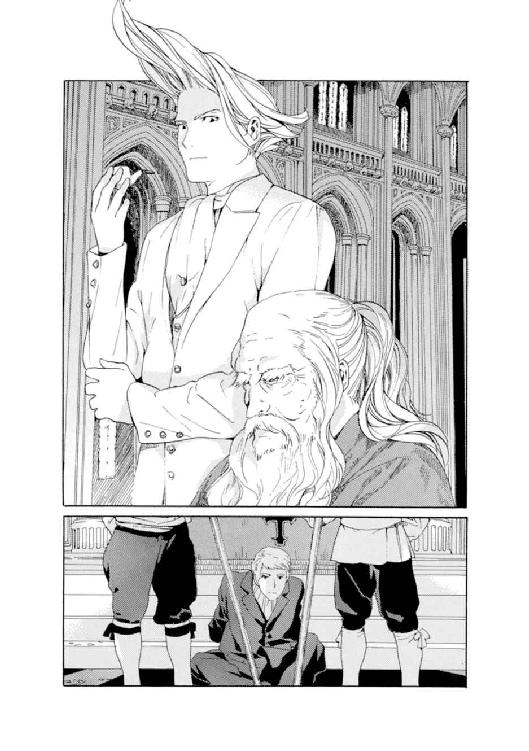
「説明していただかなくてはな」
「............」
警部がつっと下がった。
一弥に向かってなにか合図をしている。一弥は警部にあきれたような視線を投げかけ、それからヴィクトリカを振り返った。
ヴィクトリカは聖歌隊席からこぼれた花びらだらけの床にしゃがみ込み、デリクが盗もうとした古い青銅の壺を両腕で抱え込むようにして、熱心に観察していた。まるで小猫が新しいおもちゃと戯れるような様子で、一弥だけでなくアンブローズもまた、邪魔するのは悪いかなというように少し躊躇した。しかしアンブローズは気を引き締め、
「......あの、ヴィクトリカさん。解決してくれるというお約束でしたが」
ヴィクトリカは顔を上げた。
長い金髪を揺らし、一弥のほうを振り返る。
「久城、君、わかる範囲で説明したまえ」
「............」
一弥が困ったように黙っていると、ヴィクトリカはびっくりして一弥を見上げた。
「久城、君......」
「......わかったよ。中途半端な秀才なんだよ。ヴィクトリカ、言語化して」
「むぅ......」
ヴィクトリカはようやく壺を放すと立ち上がった。
村人は、彼女が輪の中心に進み出てじろりと見回すとかすかにたじろぎ、それぞれが半歩ほど下がった。気圧されずにじっとヴィクトリカをみつめ返しているのは、村長のセルジウス、そのかたわらで松明を持つアンブローズ、そしてメイドのハーマイニアの三人だった。
「アランが〈冬の男〉の張りぼてと入れ替わって焼け死んだ事件。それからラウールが森の中で野生の狼と間違えられて撃たれた事件。これは両方ともデリクの仕業だ」
「しかし、どうやって......」
アンブローズがつぶやいた。
「事件の直前、アランさんが広場を通りかかって、ハシバミの実を投げられて退散したのをぼくたちはみんな見ています。すぐ後で〈夏の軍〉と〈冬の軍〉が戦い、勝利した〈夏の軍〉のぼくが、みずから張りぼてに火をつけた......。とても入れ替わる時間などなかった......」
「アランと張りぼてとが入れ替えられたのは、もっと前だ。朝、広場が無人になったときだ。明け方にわたしたちは、アンブローズ、君から祭の概要を説明された。その後、広場は一度無人になった。そのときデリクはアランを殴るなどして昏倒させ、布でぐるぐる巻きにして張りぼてと入れ替えたのだ」
「しかし......」
「直前に目撃されたのはアランではない。わたしたちは遠くからその男を見た。アランとデリクは体格が似通っており、服装は三人とも同じようなものだ。デリクがアランの特徴である髭と眼鏡、帽子で変装し、アランが通ったと思いこませたのだ」
デリクが顔を上げた。
「......証拠はない」
「ラウールは背が高い。アランに化けることは不可能だ。しかしデリク、君なら同じぐらいの体格だ」
「しかし......」
「それから......」
ヴィクトリカは手のひらに握っていたあるものを取りだしてデリクに見せた。
──ハシバミの実だ。
デリクはしばらく意味がわからないというように首をかしげてヴィクトリカを見上げていたが、やがて青白い顔を、憤怒と、それから絶望のようなものに赤黒く染めていった。
「くっ............くそっ！」
「君の体から、ついさっきこれが転がり落ちた。君がアランに化けていなかったとしたら、どこでどうして、ハシバミの実が服に入ったのだね？」
「............」
デリクは答えない。
村人たちの後ろに立っていたミルドレッドが、鮮やかな赤い巻き毛を揺らして飛び出してきた。抵抗するデリクを押さえつけて、ズボンの裾の折り返しを引っ張る。
──コロン！
また一つ、ハシバミの実が転がり出てきた。
聖堂は湿って暗い、おそろしい静寂に包まれていた。ステンドグラスを通して射しこんでくる、広場で燃える松明の明るい色が、ヴィクトリカと村人たちの顔を不吉に橙色に染めあげた。
口火を切ったのは、小さなヴィクトリカだった。
「そして、ラウールが撃たれて倒れていた森にも、ハシバミの実は落ちていた。あの現場に、デリク、君がいたということだ」
セルジウスが顔を上げた。
訳がわからないというように首を振っている。
「つまりデリクは、あらかじめ森にラウールをおびきだし、撃ち殺した。祭のあいだ、鞭や太鼓、それに空砲がひっきりなしに響いていたから、遠くから銃声がしたとしてもだれも気にしなかったことだろう。そしておそらく、セルジウスが通りかかるか、窓から森の外を見るかしたとき......タイミングを計って森に向かって石を投げ、音を立てたのだろう。セルジウスは例によって野生の狼だと思い、森に向かって発砲した。するとデリクが走り出てきて、森にはラウールがいる、悲鳴を聞いたと騒ぐ」
「それでは......」
セルジウスがつぶやいた。
「あの客人を殺したのは......」
「セルジウス、あなたではない」
「なんと......」
セルジウスは金色の髭に覆われた顔を歪めた。
天を仰ぐようにしてしばらく黙り、誰にも聞こえないほどの小声でつぶやいた。
「............コルデリアの娘に救われるとはな」
ヴィクトリカはなにも答えなかった。
ただセルジウスの顔を、いまにも爆発しそうなものをこらえるように歯を食いしばり、見上げていた。
アンブローズがおずおずと言った。
「しかし......動機はいったいなんなのでしょうか？ 先ほどの話では、三人の客人は盗人であるとのことでしたが、起こったのは盗みだけでなく、殺人でした......」
「おそらく、仲間割れだろう」
ヴィクトリカの言葉に、うつむいていたデリクが顔を上げた。
その顔には、おかしな微笑が張りついていた。
「そうだ......」
「取り分の配分かね？」
「まさか！ そんなことでもめるものか！」
デリクは鼻で笑った。
「では、なにかね？」
「俺は物の価値がわかっているんだ。だから大事にするために盗む。金には困ってないからな。だけどアランとラウールの目的は、結局、金だった。あいつらは俺の資金を元に盗みを続けたくせに、俺を裏切って、二人で壺を盗んで先に山を降り、俺の自動車で逃げようとしていた。聞いたんだ。夜中に、二人が俺に内緒で相談しているのを......。壺を手に入れても、俺は売る気がなかった。自分の家に大事に置いておきたかったんだ。なのにあいつらは、コレクターに高く売りつけるつもりで......俺が邪魔で..................」
デリクはぎろりぎろりと村人たちの暗い顔を睨み回した。
アンブローズが握りしめる松明が、ぱちぱちと音を立てて爆ぜた。
デリクの憤怒に燃える顔に橙色の炎が映え、不気味に赤く染まった。
「おまえらも同罪だ。時代遅れの愚か者めらが。この村にどれだけ宝があるかわかってない。おい、そこのメイド。あんな素晴らしい中世の銀食器を、食事なんかに使いやがって。坊さんたちも同罪だ。あんな壺を無造作に置いておくなんて信じられない。壺も食器もなにもかも、本当の価値をわかっている人間に大切に保管されたほうが、ずっと幸せなんだ。俺は......！」
アンブローズが短く答えた。
「物の幸せとは、使われることなのではないでしょうか」
「......おまえになにがわかる！」
デリクは短く叫び、それからうつむいてむせび泣いた。
聖堂の中は、村人たちの重い沈黙に包まれていた。空気はますます湿り気を帯びて、人々の頰をひんやりと撫でていった。月光が強くなり、薔薇窓の模様に合わせた形で、石タイルの床を白々と照らし始める。
やがて、セルジウスが若者たちに告げた。
「連れていけ！ この者の処分はわしが決める」
ブロワ警部が抗議しようとすると、セルジウスは大声で遮った。
「ここにはここの掟がある。村にいるあいだはそれに従ってもらう」
「しかし、この村はソヴュール王国の国土です。ソヴュールの法律と警察に従ってもらわなくては困る」
「......ここがソヴュールだと？」
セルジウスは背をそらし、大声で笑った。
しわがれたその声が、聖堂の天井高く、ステンドグラスのきらめきも越えて、星の瞬く夜空高くに響き渡る。
セルジウスの濁った緑色の瞳が、ぎろりとブロワ警部を見た。
ブロワ警部は、目に見えないなにかをおそれるようにじりじりと後ずさった。そこにはセルジウスの小柄な体だけではなく、見えないなにかがいた。それこそが、麓の町の人々がおそれる人外の存在だった。
セルジウスは笑いながら口を開き、ゆっくりつぶやいた。
「ここは村ではない」
「......はっ？」
「ここがソヴュールだと？ 君はなにもわかっておらんのだ。お客人、ここはだね......」
村人たちも誰も彼もが聖堂を出ていき、いまやセルジウスとブロワ警部の二人しか残されていなかった。青白い月光が天井から降り注ぎ、ブロワ警部の顔はいつもより青ざめて見えた。石タイルの床に散らばった花びらは、しおれて生気をなくしていた。人外の存在──灰色狼に命を吸い取られたかのように。
セルジウスは笑い続けていた。
ブロワ警部の顔に疑念がよぎった。セルジウスの笑いを、この男は狂っているのではないかと疑うように、じっとみつめる。
しかしセルジウスはきわめて楽しそうだった。ブロワ警部にそっとささやき、また笑いだした。
「ここはセイルーンだ。セイルーン王国なのだよ。わたしも村長ではなく、国王ということだ。我々はそもそも種族がちがうのだよ。......わかるかね、君に？」
７
広場の松明は大きく燃えさかり、ぱちぱちと激しい音を立てて、夜空高くに炎を揺らめかせていた。村人たちは中断されていた夏至祭を再開するために忙しく走り回り、衣装を身につけて大声でなにかを言い合っていた。
「......夏至祭の最後はなんだったっけ？」
ミルドレッドが赤毛を揺らして近づいてきて、聞いた。どかどかと大きな足音がした。一弥はヴィクトリカと顔を見合わせて、
「ええと......確か、聖堂を通って戻ってきた先祖の霊に、豊かな暮らしを見せて......」
会話が聞こえていたらしく、ハーマイニアが近づいてきて、地の底から響くような低い声で続きを言った。
「先祖はわたしたちにはわからないあの世の言葉で語ります。死者の霊にはなにも隠せません」
「そう、そうですよね......。アンブローズさんが先祖役をやるって張り切ってましたよね。黒い仮面を作って......」
心の中でだけ（〈冬の男〉の張りぼてと一緒に、今朝、彼が持ってたんだ......）と付け足す。
それから、一弥の生まれ育った国で、夏のある日に先祖の霊が還ってくる行事のことを、アンブローズに根ほり葉ほり聞かれたときのことも思い出した。
留学してからというもの、生まれた国を出るときに音を立てずにそっと閉めた心の扉の前に、ずっと立ち尽くしていた。悲しくなるから開けないようにと、ずっと気をつけていた。しかし不思議な中世の村で夏至祭に参加するうちに、少しずつゆっくりと緩んでいき、いまふいに音を立てて扉が開いた。一弥は思わず息を呑み、目を閉じた。
なつかしい記憶の中の情景に、とつぜん立ち戻った。
蟬が鳴いていた──。
けたたましいその鳴き声に混じって、どこからかひぐらしも密やかに声を立てていた。
縁側に家族の誰かが置きっぱなしにしたウチワに、夏の日射しが射しこんで眩しく照らしている。どこからか、胸のすくような気持ちのいい水音が聞こえてくる。母が着物の裾を慎ましく少しだけ上げ、ほおかむりをして、乾いた庭に打ち水をしているのだ......。
畳に寝ころんでぼんやりと眩しい庭をみつめていると、母らしき人影が縁側のたたきに近づいてきた。小さな足音と、ひそやかな笑い声。外は夏のきつい日射しにおおわれていて、暗い畳の部屋からは、大好きな母の顔が眩しすぎてよく見えない。
（あらあら、一弥さん。はやく着替えなくてはお父さまに叱られますよ）
──幼い一弥は、その言葉にあわてて起きあがる。そのとき襖が大きな音を立てて開き、きっちりと羽織袴を身につけた父が大股で入ってくる。後ろから同じく正装した兄二人が続く。彼らはまるで三つ子のようにそっくりだ。大柄で肩幅も胸板も頑丈そうで、いつも自信に満ちて輝いている。
父が、畳の上に座ってぼんやりしている一弥を見下ろすと、驚いたように言う。
（一弥、なにをしているのだ。はやく出かける用意を！ おい、おまえがしっかり監督しないから......）
責めるような声に、縁側のたたきに立っていた母はかすかな笑みを返して、申しわけありません......とささやいた。一弥は自分のせいで母が叱られたと身を縮め、早く着替えなくてはとあわてて部屋を飛び出した。
暗い廊下で姉とすれちがった。よそ行きの着物姿で菊の花束を抱える姉は、とてもかわいらしかった。鮮やかな赤い着物を、素敵でしょうと言われ、一弥は思わずその素晴らしい絹の着物にみとれた。小声で賛美の言葉をつぶやくと、姉がうれしそうに、一弥さんはいい子ねぇと微笑んだ。部屋から父の声がして、一弥はあわてて、着替えるために走り出した。
──あれは先祖の霊が還ってくる日だった。それから一弥たちは、家族で墓参りに出かけたのだ。
外は暑かった。
ひぐらしが密やかに、そして蟬がけたたましく鳴いていた。
父を先頭にして、寺までの道を歩いた。父の後ろを兄たちが歩き、幼い一弥は右手を母に、左手を姉に引かれて、大人たちについていこうと一生懸命歩いていた。
前を歩く父たちの背中はあまりに大きかった。
道端の草も木々の葉も鮮やかな緑色で、太陽を照り返していた。あの国の夏は美しかった。一弥の好きな季節だった。
熱風じみた風がふいに吹いて、母の白い日傘がくるくると揺れた。
その風に、姉のつややかな黒髪が大きく揺れて、一弥の視界をふさいだ。驚いて石段で転んだ一弥が泣き声を上げ、母と姉が笑いながら抱き起こしてくれた。二人からは甘く密やかないい匂いがした。あれは女の人の匂いで、あれは優しく、包みこむような慈愛があり、そしてそれは、父や兄たちからはなぜかしないのだった。
寺に着くと、父が墓の前で、先祖の男たちがいかに立派な武将であり政治家であったかを語った。低い声が朗々と響く中、母の白くて折れそうに細い腕が、姉が抱えてきた菊の花束を受け取って墓前に飾った。柄杓に取った水を、墓石の上にさらさらとかける。水を撒くのはいつも母の細い腕だった。見ているだけで心がうるおう、なつかしいあの水の情景......。
父の声は続き、それを聞く兄たちは誇らしげな顔をしていた。先祖は立派な男たちで、父もまた立派な男なのだ。兄たちもまたそうなろうとしていたし、それは近しい未来のことと決まっていた。一弥も父の言葉をちゃんと聞こうとしたが、それは朗々として難しく、幼い一弥にはよくわからない言葉ばかりだったのだ......。
あのとき、夏の蝶が一羽、すうっと一弥に近づいてきた。うっすらと眩しい金色で、薄羽が木漏れ日に透けていた。手を伸ばすと逃げるように離れていき、少し離れたところで誘うように止まった。金色は一弥の好きな色だった。やがてその小さな蝶は飛び去っていったが、一弥は誰にも内緒で、うっとりといつまでも、金色の蝶のことを考えていた......。
遠くで蟬が鳴いていた......。
──あの国の夏はとても美しいのだ。
一弥は目を開けた。
もといた〈名もなき村〉の広場に、一弥は立っていた。一瞬の記憶の旅に周囲の誰も気づかず、一弥一人がぼんやりと目を見開いていた。
──すべてが遠い出来事に感じられた。
ほんの数年前のことなのに。
距離が......海に隔てられて、遠く離れているせいなのだろうか。
ふとかたわらを見ると、いまの一弥にとっての小さな金色の蝶、ヴィクトリカもまた、目を見開いて広場の喧噪をみつめていた。そのとなりに立つミルドレッドもいつになく静かで、なにか思い出すように遠い目をしていた。誰もなにも話そうとしなかった。ぽっかりと空いた静かな時間だった。
一同は黙って、それぞれの思いを胸に広場の喧噪を眺めていた。
ふいにヴィクトリカが、つっと手を伸ばした。
そしてとなりに立つミルドレッドの、真っ赤な綿菓子のような巻き毛をぐいっと引っ張った。
「イタッ！ な、なにすんだよ。おチビちゃん！」
「......それで、ミルドレッド」
「な、なにさ？」
「君はどうして、グレヴィールと知り合いなのかね？」
「......!!」
ミルドレッドのそばかすの浮かぶ血色のいい頰が、はたで見てもわかるぐらいたちまち真っ青になった。
「な、なんのことかい？」
「彼に雇われているのかね？ それとも友達なのかね？」
ミルドレッドは観念したように肩を落とした。
一弥は二人の顔を見比べて、なんのことだろうと不思議そうにしている。
「いつからばれてたんだい？ おチビちゃん」
「君が無理やり機関車に乗りこんできたときからだ」
「......最初からじゃないか！」
「ねぇねぇ、なんのこと？」
一弥が割って入った。
ヴィクトリカはしばらく面倒くさそうにぐずっていたが、一弥の視線に負けて、
「久城、君、それでは本当に気づいてなかったのかね？」
「だから、なにが？」
「ミルドレッドが、グレヴィールの手先だということにだ」
「ええーっ！」
「君という男は......。いいかね、ミルドレッドはバザーでドレスデン皿を盗んだが......」
ミルドレッドが小さく「げっ！」と叫んだ。
「あんた、それも知ってんの？」
「もちろんだ。だがしかし、グレヴィールは彼女を見逃した。それはなぜか？ 何らかの理由で彼女と共存関係にあるからだろう。そして、聖マルグリット学園から出てはいけないわたしが夜こっそり抜け出すと、どこからかミルドレッドが嗅ぎつけて、どこまでもどこまでもついてきた。二日酔いで苦しいというのに、激しく揺れる馬車に乗ってまで。そして彼女は、どこかに電話をかけようとしていた。彼女には連絡を取らなければならない相手がいるということだ」
「ということは......？」
「彼女はグレヴィールからの依頼で、村でわたしを見張る役なのだ。だから皿を盗んだことに気づいても、グレヴィールは彼女を逮捕しなかったのだ」
「......賭けポーカーで、しくじっちゃってね」
ミルドレッドはつまらなそうに言った。
「村のバールでアタシから声をかけたのさ。だって、あいつ貴族だし。高い服着てるし。それに頭が抜けてるように見えたからさ。いいカモだって思ったんだけど、途中でいかさま用のカードが袖からざくざくこぼれ落ちちゃって。あいつ、それまでさんざん負けてたもんだから、逮捕する逮捕するってしつこく騒いでね。だったらあんたのいう仕事をするよって言ったのさ。それ以来こき使われて、いい迷惑さ」
「ミルドレッドさん、それは最初のいかさまポーカーが悪いんですよ」
「お金がほしかったんだよ！」
ミルドレッドはなぜか声を荒らげた。本気で怒っているように、地面を乱暴に蹴っている。大きな胸がゆさゆさと揺れた。匂うような色気が大柄な体から撒き散らされ、濃く甘い花の滴となって地面にぽたぽた落ちていくようだった。
「だって、お金が好きなんだ！」
一弥は思わず気圧され、内心（どうしてこの人は、お金の話をしているときだけ色っぽくなるんだろう......？）と困りながら首をかしげていた。ミルドレッドは続けて、
「アタシの家は、そりゃあ貧乏だったんだよ。苦労したんだよ。芋の根っこを齧りながら、恨みの涙を流したもんさ」
哀れっぽい声で訴えながら、綿のハンカチを取り出して涙を拭く仕草をする。しかし涙は出ていないようだった。
「親父はウイスキー片手にくだを巻くアイルランド移民で、お袋は......ええと、うーんと............うぅ、とっさに思いつかないけど、とにかくね......」
「作り話はやめて下さいよ。噓泣きも」
「うるさいねぇ！ とにかくおかげで、お金を見たら涎が出るぐらいうれしくなっちゃうんだよ。お金が好きで好きで大好きで、夜も眠れないぐらいなんだよ！ まぁ、まさかこの村がそんな宝の山とは知らなかったけどさ......」
「なにも盗んじゃ駄目ですよ。セルジウスさんに裁かれることに......」
「貧乏なんだからさ......」
ミルドレッドは唇を嚙み、頑固に言い張った。
「泥棒になったって、いいだろ！」
「駄目ですよ！」
二人はしばらく睨みあっていた。一弥が一歩も引かない様子に、やがてミルドレッドはあきれたように、
「......真面目な男だねぇ」
「うっ......」
一弥は気にしていることを指摘されて、かすかにうなだれた。
ミルドレッドはなぜか機嫌を直し、
「わかったよ。あの皿は教会にそうっと返しておくよ。高いって聞いて盗んだものの、どこに売りにいったらいいものかわからなくてさ。こっそりシーツに包んでベッドの下に隠したっきりなのさ。......見逃してくれてもいいだろ？ それならさ」
「......わかりました。ちゃんと返すのなら」
「口止め料に、なにかほしいだろ？」
「そんなのいりません」
「あげるって言ってるんだから、堅いこと言うなよ。つまんない男だねぇ、あんたって......」
「なっ、なにを............あっ！」
怒っていた一弥は、ふいに思い出した。
あのバザーで売られていた、色とりどりの品々──。
インド風のおかしな帽子を選ぶ前に、クラスメートのアブリルと一緒にたくさんの品を見たのだった。
きらきらしたきれいな指輪や、レースの付け襟や、絵葉書、それに......。
「......あの、それなら、バザーで売っていたものを一つ、譲ってほしいんですけど」
「なに？ どれのことさ？ 言っておくけど高い物は駄目だよ。あんたはお金が好きじゃないんだから、人から高い物をもらう資格はないんだからね」
「どういう理屈ですか!?」
一弥はため息をついた。それからミルドレッドの耳に口をつけ、小声でささやいた。するとミルドレッドは、小花模様のようなそばかすの浮かぶ顔に、とても奇妙な表情を浮かべた。
一弥の顔をじいいっとみつめて、
「......そんなものでいいのかい？」
「はい！」
「真面目だけどへんな子だねぇ、あんたって」
一弥は赤くなった。
「アタシさぁ、あんたのこと嫌いじゃないよ。あの二枚目ぶった洒落者の警部より、ずっと好きさ」
そう言うと、ミルドレッドは鮮やかな赤毛を揺らして楽しそうに笑いだした。
遠くから、松明を持ったアンブローズが一弥たちをみつけて走ってきた。持っていた松明を、少し迷ってから、かたわらにいたハーマイニアに渡す。
ぱちぱち、ぱちぱち──！
炎が爆ぜる。
オレンジ色の光の粒が飛び散る。
「そろそろ始まります。先祖の霊を迎える儀式が......」
「そっか......！」
一弥はうなずいた。
ヴィクトリカがかすかに身じろぎをした。一弥はアンブローズと目を見合わせた。アンブローズは、緊張のためか少し表情が硬い。
夜風がぶわりと吹いた。
ぱちぱち、ぱちぱち──！
ハーマイニアが青白い乾いた手で握りしめる松明が、風をはらんでひときわ大きく燃えた。ぶわっぶわっと音を立てて、炎が左右に大きく揺れた。
祭はクライマックスを迎えようとしていた──。
モノローグ─monologue 5─
１
夜毎──
想い出すのは──
血の記憶である。
〝あれ〟はもう遠い昔のことであるはずなのに、夜毎、鮮やかな色と音と手触りで想い返される。
ぶすりと鈍い音を立てて根元まで刺さった短刀の柄が、真鍮の飾りのついた豪奢なものであったことも。
ダイヤガラスをはめた窓の外で、沈みかけた太陽が炎のように燃えていたことも。
青ビロードの重いカーテンがその瞬間、風を受けてかすかに揺れ、しゃらりっ......と乾いた音を立てたことも。
悲鳴一つ立てず崩れ落ちた男の胸から、突きでた刃先が赤黒く輝いていたことも！ 空気が漏れるようなかすかな音が喉から洩れた後、あの世ででもあるかのようにしんと静まり返り、何者も冒せないほどの静寂が待っていたことも！ やがて窓の外の陽が完全に落ちて闇に包まれるまで、自分がそこに立ち尽くしていたことも！ 我に返り元の場所に戻った後、ゆっくりとこみあげる喜びを一人嚙みしめていたことも！
まるでついさっき起こった出来事のようだ！
忘れられない。
──囚われているのか。
人々は我らを〝灰色狼〟と呼ぶが、それは間違いである。
狼は同族を殺したりしないものだ。ことにあんな理由では。
２
わたしは松明を持ち、じっと立っていた。
夏至祭がようやく終わろうとしていた。思いもかけぬ客人が相次ぎ、また、客人どうしの愚かな殺人が瞬く間に謎を解かれその愚かな者が捕らわれるあいだ、わたしはずっと笑っていた。
愚かな者は殺人など犯すべきではないのだ。すぐに見破られ、裁かれてしまう。
裁かれるのなどごめんだ。
──わたしは空いているほうの手を伸ばし、自分の顔に触れた。人差し指の腹で下瞼を引っ張る。ぐりぐり、ぐりぐり、とにちゃついた音を立てて、眼球の下のほうを搔く。
緊張や怒りを感じると、目がかゆくなるのだ。かゆく、かゆくなるのだ。あのときもそうだった。あの場所に隠れ、息をひそめているあいだ、燃えるようにかゆくてかゆくて叫びだしそうだったけれど、子供だったわたしは歯を食いしばり我慢していたのだ。もうちょっともうちょっともうちょっとで終わるから、と。
あのとき......。
そう、わたしの思考はいつもあのときに戻る。殺人の記憶に。
囚われているのか──？
遠くから砂利道を踏みしめる音を立てて、松明を手にした先祖たちが練り歩いてくる。広場の太鼓と、鞭と、空砲が、死者たちの霊を迎え入れる喜びのために大きく鳴らされ続けている。ぴしり、ぴしりと鞭が鳴る。太鼓の音は大きく、夜空の冷えた空気をぶるると震わせる。
夜空は狭くなり、暗い色の天井が低くせまってくるように感じられる。ここが小さな舞台で、星空の下などではないような気がし始める。祭のクライマックスはいつもそうだ。太鼓の音が響き、夜空を震わせる。
先祖たちの列は、陽気に踊りながら広場に近づいてくる。赤や黒などの毒々しい色の衣服、藁で造られた気味の悪い上着。あの世の人々は、この世にいる我々と、なんとちがって見えることか。衣服も、動きも、けたたましい叫び声も、もとは我々と同じ人間だったとは思えない。だがしかし、我々は彼ら──遠い先祖たちを、夏至祭で歓待し喜ばせて送り出さなくてはならないのだ。
彼らが近づいてくる。
先頭には、黒い仮面をかぶった男がいる。
後ろを歩いてくるほかの男たちが、陽気に踊り、地面を踏みしめては飛び上がっているのに比べ、黒い仮面の男はぎくしゃくとおかしな動きだ。まるでそうやって四肢を動かすのが久方ぶりだというように、腕がガタリと揺れ、足もゴトリゴトリと前に踏み出される。いまにも転びそうなおぼつかない足取りで、それでも死者の列の先頭を進んでくる。
アンブローズが造った仮面はなかなかよくできていると、わたしは満足する。自分で造った仮面をつけて練り歩くとなれば、あの若者も満足しているだろう。大役を仰せつかったのは、村長の助手として有能であることへのご褒美なのだ。さぞかし誇らしいことだろう。
先祖たちはついに広場に足を踏み入れた。
わたしたちの歓声や空砲に迎えられ、ひときわ愉快な動きで練り歩く。村人たちは彼らに豊穣の様を見せようと、熟れた野菜や葡萄酒の大樽、艶やかな織物などを手に手に、彼らの踊りの列に入っていく。
わたしは一緒に踊ろうとはしなかった。広場の隅に立ち、風景をただじっとみつめていた。
──わたしが殺人を犯したことは、誰も知らないのだ。
くっ、くっ、くっ......と笑いがこみあげる。愉快でたまらないのだ。
祭の喧噪が広場を覆い尽くしている。村人のある者は野菜を、ある者は鮮やかな織物を、ある者は酒樽を手に、踊っている。叫び声や太鼓の音、鞭のしなる音が響き渡る。わたしの笑い声は、それらにかき消されてだれも気づく様子はない。
くっ、くっ、くっ、くっ......。
──と、
黒い仮面の男が、ふいに動きを止めた。
わたしだけがそれに気づいた。
笑い声を呑みこむ。なぜだか心が警笛を鳴らし始めた。逃げろ、となにかがささやいた。わたしは足がすくみ、立ち尽くしていた。心臓が脈打ち始めた。
いやな予感がする。
仮面の男はしばらく、そこにじっとうずくまっていた。
それから、ぴくっ、ぴくっと短く動いた。
顔を上げた。
──逃げろ！
またなにかが警笛を告げた。しかし遅かった。わたしは仮面の男と目をあわせてしまった。もう動けない。
仮面に彫りこまれた、左右の高さがばらばらの、大きな表情のない目と──
ばちりと音を立てるほどに強く、目があった。
わたしは声にならない悲鳴を上げた。
仮面の男がなにか言った。言葉はわたしの耳まで届かず、聞き取ることはできなかった。だがしかし、それとともに、わたしの中にいる者がつぶやいた声ははっきり聞こえた。
──もう手遅れだ。おまえは、あれにみつかってしまったのだ......ハーマイニア！
３
広場は少しずつ静かになっていった。
暗さが増し、気味の悪い静寂だけが広場を覆い尽くしていた。夜空は急に高くなり、星が瞬き始めた。
わたしは松明を片手に立ち尽くしていた。
仮面の男は、ぶつぶつとなにごとかを語り続けていた。
広場に集まった村人たちは、わたしと仮面の男とを息をひそめて見比べていた。
ぱちぱち、ぱちぱち......！
松明の炎が爆ぜる。
仮面の男の声は次第に大きくなった。
だが聞き取れない。こんなに大きな声なのに......。
わたしはそれが死者の声なのだと気づいた。なぜならそれはわたしたちが知るこの世の言葉ではなかったから。聞いたこともない抑揚でゆっくりとあの世の声が響いてきて、男がゴトリゴトリとおかしな足取りでこちらに近づくたびにあの世の言葉は大きくのしかかり、男の首の上で黒い無表情な歪んだ仮面が左右に大きく揺れている。
わたしは辺りを見回した。
──アンブローズが不思議そうにこちらをみつめているのが見えた。わたしも不思議になる。アンブローズがいるのなら、この仮面の男は彼ではないのだ。それでは、いったい誰が入っているというのか......！
目の前が一瞬、真っ暗になった......。
閃いたのだ。
この死者が、誰なのか。
耳の奥で何者かがささやいた。
──そうだ。おまえが殺した男だ、ハーマイニア！
わたしは足を震わせる。
仮面の男の声が、少しずつ現世と入り交じるように、聞き取れる言葉に変わっていった。彼はもうわたしの目前まできていた。うずくまるように背を屈めて、うめいた。
「みつけたぞ......。わたしを殺した娘よ」
わたしは声を上げた。ようやく出せたその声は、獣の咆哮のような不思議なものだった。
後ずさる。
「ハーマイニアよ」
わたしは震え声でその死者の名を呼んだ。
「............シオドア、様」
仮面の男は、怒りに震える声で叫んだ。
「おまえがわたしを殺したのだ。誇り高きこの男を、幼い手でいとも簡単に殺したのだ。よくも二十年のあいだ、のうのうと暮らせたものだ。ハーマイニア......愚かな子供よ！」
わたしはさらに後ずさった。
「......ちがう。わたしじゃありません！」
「金貨が降ってきた」
わたしは息を呑んだ。
仮面の下で男がクククッと笑った。
「金貨がきらきらと降ってきた。よぅく覚えているぞ。ハーマイニアよ。柱時計から星のように降り落ちたたくさんの金貨を......。あぁ、よぅく覚えているぞ。最後の記憶だからな。ハーマイニア。幼き殺人者よ......」
「き、金貨のことを......！」
......知っているのは、死者だけだ。わたしのほかは誰も知らないのだ。床に落ちていたたくさんの金貨の理由は......。
わたしは泣き叫んだ。
「シオドア様！ いやよ。どうか帰ってください！ あの世へ............！」
「認めるのか。ハーマイニアよ」
「認める。認める。わたしが......」
わたしは松明を振り回して叫んだ。炎の細かい粉が夜空に舞い、オレンジ色の粉のようにわたしの上に降り注いだ。
「......わたしがあなたを殺した！」
広場はしんと静まり返っていた。
真ん中の大きな松明がぱちぱちと音を立てていた。肌寒い風が吹いた。風に乳色の霧が流され、ふわりふわりと、わたしと死者のあいだを横切っていった。
村人はみんな......それに客人たちも......驚いたようにわたしの顔をみつめていた。濁った緑色の瞳に、怖れと嫌悪が入り交じり始めた。彼らは少し後ずさった。
「......仕方、なかったんです」
わたしはうめいた。心の中で（そうでしょう......？）とつぶやくが、何者かの声はもう聞こえない。わたしは一人きりだ。恐怖に囚われて叫ぶ。
「だって......わたしはまだ子供だったのです！」
「あなたが殺したんですね」
──ふいに。
仮面の男がごく普通の抑揚の声で言った。
「やっぱりあなたが殺したんだ。......君の推理通りだったよ、ヴィクトリカ」
「!?」
大きな松明の陰から、ちょこちょことした足取りで、あの少女が姿を現した。
コルデリアの娘だ。緑色をした澄んだ瞳を見開いて、じっとこちらをみつめている。
わたしは戸惑った。大股で仮面の男に近づいていった。手を伸ばし、乱暴に仮面を剝ぎ取る。
現れたのは......。
客人の一人──東洋人の少年の、すまなそうな顔だった。
彼にはどこもおそろしいところはない。体つきは小柄で、線も細い。人が良さそうだが、どこか頑固そうにも見える顔をしたごく普通の少年で、おそれるような相手ではないはずだった。
彼は申しわけなさそうな顔をしていたが、一歩も引く様子はなかった。
口を開くと、遠慮深い静かな声で、わたしに告げた。
「ハーマイニアさん、ぼく、あなたの言葉が聞きたくて演技をしたんです......」
「では......！」
「シオドアさんを殺したのはあなただと、ヴィクトリカが......」
わたしはもう一度、コルデリアの娘を見た。
目があった。
少女もまた、一歩も引かないという決意を秘めた瞳をしていた。わたしをじっとみつめ返している。
わたしは立ち尽くした。
──カッ！
油をかけられ点火されたように、ふいに目玉に、燃えるようなかゆみを感じた。
第六章 金の蝶
１
──仮面を外した一弥は、恥ずかしさに真っ赤になりながら、ヴィクトリカの陰に隠れた。広場に集まっている村人たちは、それぞれが葡萄酒の樽や鮮やかな織物などを手にしたまま、訳がわからず一弥たちに注目していた。
（踊ったり、声色を使ったりって......。実に恥ずかしいものだなぁ）
一弥が少しめげていると、アンブローズが走り寄ってきた。
「あの、さっきあなたが話していた聞き慣れない言葉は、もしかすると......」
「はい。ぼくの国の言葉です。あの世の言葉って言われてもよくわからないから、とりあえずみんなが聞き覚えのない言語を話せば、そういう感じになるかなぁ、と......」
「母音はいくつですか？ 文字は右から書きますか？ えっ、縦に書く!! それから......」
例によってアンブローズが質問責めにし始める。一弥はやっとのことでそれを遮り、ヴィクトリカに声をかけた。
「説明してよ。その......ハーマイニアさんがやったという殺人のことを」
ヴィクトリカはうなずいた。
取り押さえられたハーマイニアを見下ろす顔には、不思議な表情が浮かんでいた。
「鳩が飛んだのだ」
「......鳩？」
「二十年前の事件が起こった書斎で、わたしは考えていた。そこにハーマイニアが入ってきた。わたしは彼女と会話をした。やがて彼女は出ていき、わたしはそのまま考え続けていた。そのとき......窓の外で白い鳩が飛び立ったのだ」
「うん......」
「それを見たとき、〝知恵の泉〟がわたしに語りかけた」
ヴィクトリカは奇妙な笑みを浮かべて一弥を見上げた。
「君、これはのみの市での〈ドレスデン皿盗難事件〉と同じ構造を持つ混沌だったのだよ。わかるかね？ ミルドレッドはスカートから鳩を飛ばして、みんなが驚いて空を見上げているあいだに、ドレスデン皿を盗んだ。〝動くものを使って人の視線を限定する〟ために鳩が必要だったのだ」
「そうだったね......。でも、それがどうしたの？」
「鳩が金貨に変わっただけだ。とても簡単なことだったのだよ。あぁ、なんということだ」
ヴィクトリカはつぶやいた。
──一同は灰色の館に入り、二十年前の惨劇の舞台となったあの奥の書斎に並んでいた。
ヴィクトリカは落ちついて話し始めた。
「......事件当時、ハーマイニアはまだ六歳の子供だった。彼女自身が事件についてわたしに語った言葉の中に、こういうものがあった。『十代半ばの少女であったコルデリアが、大人の男の背中上部を背後から刺し貫くのは難しいのではないか』と。なぜハーマイニアはこんなことを言ったのか？ 暗に、当時は子供だった自分にとっては、コルデリアよりさらに不可能な犯罪だと匂わせたかったのだ」
「しかし......！」
セルジウスがきつい口調でその言葉を阻んだ。
「実際にハーマイニアは小さな子供だったのだ」
「子供にでも、やり方しだいでは可能なのだよ」
「いや、不可能だ」
セルジウスは強情に言い張った。なにも聞かずに書斎を出ていこうとする。アンブローズが静かに止めた。
「セルジウス様......話を聞くだけなので......」
セルジウスが険しい顔で睨みつける。
「わしに意見するのか？ 愚かな若者よ」
ヴィクトリカが小声でささやいた。
「セルジウス、彼の言うとおりだ。わたしの話を聞くだけなのだから、ここにいたまえ」
セルジウスは怒りを込めて振り向いたが、出ていきはしなかった。
書斎には不吉な沈黙が流れていた。壁の飾り棚で、よく磨かれた中世の武器が鈍く輝いていた。書物机や書棚には白く埃がたまっていた。
「この事件には幾つかの不可思議な面がある。一つめは、シオドアが鍵のかかった書斎で死んでいたことだ。そして床に金貨がたくさん落ちていたこと。それから凶器の短刀が背中の上部を後ろから刺し貫いていたこと。最後が、時間だ」
ヴィクトリカはセルジウスの険しい顔を見上げた。
「セルジウス、君は時間について語ったね。『たしか十二時ぴったりのことだったと思う。自分は懐中時計を見たし、コルデリアも時間に正確な娘だった』と」
「あぁ......」
「だが......『一緒にいた人間たちの、時間に関する証言はなぜかまちまちだった』と」
「そうだ。しかしそれが......」
「なぜその夜、館にいた人々の時間の認識がまちまちだったのか。考えてみたまえ」
ヴィクトリカは一同をぐるりと見回した。
──若者たちに捕らえられているハーマイニアが、かすかに唇をゆがめた。
やがてヴィクトリカは、小さな指で壁の一方を指差した。
「いつも鳴る柱時計が、その夜は鳴らなかったからではないかね？」
そこには大きな柱時計があった。古びて装飾の多い文字盤の数字は消えかけていたが、振り子はいまも規則正しく動いていた。
カッチ、カッチ、カッチ──！
セルジウスが叫んだ。
「......そうだ!?」
「その夜、柱時計は鳴らなかったのだ。だから懐中時計で時間を確かめたセルジウスだけが十二時ぴったりだったと思い、ほかの人間はそうは思わなかった。......ではなぜ、柱時計は鳴らなかったのか？」
ヴィクトリカの小さな顔を全員が注目した。
「......ハーマイニアが中に隠れていたからだ」
「なんだって？」
セルジウスが鼻で笑った。ヴィクトリカはそれを気にせず話し続けた。
「ハーマイニアはシオドアが入るより先に、鍵の開いていた書斎に忍びこんだのだ。そして柱時計によじ登り、振り子の箱の中に身を隠した。子供の小さな体なら不可能ではない。そして彼女は息を殺し、シオドアが書斎にくるのを待っていた。そのあいだずっと、柱時計は鳴らなかっただろうがね。やがてシオドアが書斎にやってきた。そこで......つぎは、床に転がっていたというたくさんの金貨の出番だ」
「どういうことだね......？」
セルジウスの顔から表情が次第に消えていく。頰の色も青白く変わっていく。ヴィクトリカは続けた。
「柱時計の中に隠れていたとして、小さな彼女は、いったいどうやってシオドアを殺す？ 子供の力で大人の男を刺し殺せると思うかね？ 無理だ。だがしかし、方法はある。腕の力に頼らず、体重すべてをかけ、また重力にも頼れば可能だ。幼いハーマイニアは、立った状態で彼を刺したのではない。隠れていた柱時計の上から、武器ごと飛び降りたのだ」
部屋は不気味な静寂に包まれた。
誰もがごくりと唾を飲み、黙っていた。
柱時計をおそろしそうに見上げ、それから無表情で押し黙るハーマイニアをみつめる。彼女はふっとかすかに笑った。
「金貨はもともと床に落ちていたのではない。ハーマイニアが持っていたのだ。そして床に向かってたくさん降らせたのだ。金貨はきらきら光りながら、柱時計から床へ、明るい金色の縦糸をいくつもつくりながら降り落ちていく。さながら金色の流星群のようだったろう。目の上辺りに差し掛かったところから、シオドアはとっさにそれを目で追っただろう。もし気づかなかったとしても、やがて絨毯の上に落ちて音を立てれば、気づく。歩いていたシオドアは、柱時計の真下......ハーマイニアにとっていちばん飛び降りやすい場所で、金色の雨に驚いて立ち止まる。〝動くものを使って人の視線を限定する〟のだ。視線によってシオドアの動きは限定された。そしてハーマイニアは、立ち止まって床を見下ろすシオドアめがけ、柱時計から飛び降りたのだ。短刀は彼女の体重の分だけぶすりと根元深くまで突き刺さった。シオドアは金貨とともに床に崩れ落ち、声もなく絶命した。それで二つの謎──散らばる金貨と、短刀が背中の上部に刺さっていたことについての説明がつく。そしてハーマイニアは、シオドアを殺した後でドアに鍵をかけ、また柱時計の中に隠れた。誰かが死体を発見するまで辛抱強く待っていた。だから書斎には誰もいないように見えたのだ」
ヴィクトリカの声がわずかに震え始めた。
「そして入ってきたのが、メイドのコルデリアだ。彼女が死体に気づき、声を上げて逃げた。その扉からハーマイニアが逃げたのだ。かくして犯人はコルデリアにちがいないということになった。ずいぶんと乱暴な推理によって。......さて、セルジウス」
呼ばれたセルジウスの肩が、びくりと震えた。その顔は、疲労のためか一日でずいぶん歳を取ったように見えた。しかし眼差しには、けして譲らず非を認めない、強情な老人らしい剣呑な光があふれていた。
「セルジウス、君の責任だ。無実の罪で村を追われたコルデリアに、どう謝罪するかね？」
長い沈黙。
やがてセルジウスは肩を震わせ、絞り出すような声で、
「......この民の長としての権限のすべてを使って、この女を罰する」
怒りと軽蔑の入り交じった顔でハーマイニアを睨むと、びしりと指差した。
ハーマイニアが叫びだした。
「いやです！ わたしは追放されるのは絶対にいや。村の外になんて行きたくない！」
アンブローズが、暴れるハーマイニアを押さえつけながら、
「......コルデリアさんも、無事に山を降りて外で暮らしたんです。それに、外の世界にはブライアン・ロスコーもいる。彼を捜して頼れば......」
「コルデリアもブライアンも嫌いです。わたしはここにいたいんです！」
「だけど、外は素晴らしいのに......」
アンブローズは思わずつぶやいて、それからはっと口をつぐんだ。
暴れるハーマイニアのほうに、ヴィクトリカが近づいてきた。
「君......動機はなんだね？ 六歳の子供が、皆に尊敬される村長を刺し殺すほどの動機とは、いったいなんだね......？」
「当ててごらんなさいよ」
ハーマイニアが低い声で言った。
「......未来かね？」
短い答えに、ハーマイニアは白目をぐりりと剝き出して、叫んだ。
「どうしてわかるんです......！」
「......子供と村長との関わりと言えば、夏至祭の占いぐらいしか思いつかないのでね。不都合な未来を読まれたと、村長を恨む子供もいるだろう」
一弥はヴィクトリカが、背がもう伸びないと言われたのだ、と暗い顔をしていたときのことを思い出した。そして聖堂の出口のところで出会ったハーマイニアが、謎のような言葉を口走ったときのことも......。
〈占いの結果は覆りませんよ〉
〈しかし、過去に一度だけ覆ったことがありますが......〉
一度だけ覆ったとは、なんのことだったのだろう......？
ヴィクトリカがつぶやいた。
「ただの占いだと、気にしなければすむ。だがハーマイニア、君は村の掟や村長の言葉などに強い信頼を寄せていた。君には占いを〝信じない〟ということはできまい」
「そう......信じるしかなかった......。でも、受け入れがたかった......！」
ハーマイニアがつぶやいた。
「わたしは......聞いてはいけない未来を聞いてしまったのです。子供らしい好奇心で、おそろしいことを」
「なにをだね？」
「自分の死期を」
「......あぁ」
ハーマイニアは涙を浮かべて一同を見渡した。
「いまから二十年後、二十六歳のときにおまえは死ぬだろうと告げられました。二十六歳ですって......？ わたしはもっと生きたかった。もっともっと長く生きたかった。未来を覆すためには、その未来を読んだシオドア様を殺さなくてはいけないと......」
セルジウスが震え声で叫んだ。
「そんな理由でか！ そんな理由で偉大な長を殺したのか！ 子供風情が！」
「告げられた者にしかわかるまい！ あの絶望は、あの怒りは、あの悲しみは！」
二人は睨みあった。
ハーマイニアの瞳は大きく前に剝き出され、いまにも床に落ちてべちゃりと潰れそうに見えた。セルジウスのほうは目を血走らせ、怒りで拳をぶるぶると震わせていた。
いまやセルジウスの顔には、狂信者そのものの表情が浮かんでいた。眼球が真ん中に寄り、どこを見ているかわからない奇妙な目つきのままで、ハーマイニアを震える指で指差した。そして、地の底から響くような声で叫んだ。
「アンブローズ、この者の首を打ち落とせ！」
「............えっ？」
言われたアンブローズが、大きく口を開けた。セルジウスは大声で続けた。
「罪人の首は打ち落とす、もともとそういう風習だった。大きな罪を犯す村人がいなくなり、すたれてはきたが......。わしもおまえの歳のときには、罪人の首を斬る仕事をしたものだ」
後ろのほうで聞いていたブロワ警部が、あわてて前に出てきた。
「あの、セルジウスさん。もう一度言いますが、デリクはわたしが逮捕して警察署に連行します。そしてこの娘さんの罪は、時効が成立しています。首を落とせば、今度はこっちの若者がソヴュール警察から殺人罪に問われます。そして、村人たちが黙認すれば、殺人幇助に......」
「ここはソヴュールではない！」
「......いや、勝手につけたへんな国名を言われてもね」
「出て行け！」
セルジウスが若者たちに命じると、彼らは言われるままに、ブロワ警部を担ぎ上げて廊下に出ていった。ブロワ警部の叫び声が廊下を遠ざかっていった。はるか遠くで「久城くん、なんとかしろ......！」と叫ぶのが聞こえてきた。
セルジウスは壁を震わせるほどの声で、
「コルデリアは、罪が確定されなかったために追放だけで済んだのだ。ハーマイニア、おまえは首を落とされ、首と胴体を別々に埋葬される。夏至祭の夜にも帰ってこれまい。罪人は二度と子孫の前に姿を現せぬ決まりだ。アンブローズ！」
「セ、セルジウス様......」
呼ばれたアンブローズは、がたがたと震えていた。ひときわ美しい、女性であれば貴婦人然としていたであろう顔が、蠟のように青白く染まっていた。
セルジウスは飾り棚から大きな斧を取りだし、彼に向かって投げた。思わず受け取ったアンブローズは、悲鳴を上げて放り出した。大斧が床に落ちて、細かく白い埃が舞い上がった。
セルジウスは目を赤く腫らし、助手の若者を睨みつけている。
「やるのだ。この村を継いでいくのなら、罪人を許すな！」
「でも......子供の頃の罪です。二十年も前の罪です。それに、それに......」
「アンブローズ！」
「ぼ、ぼくは......子供の頃、ハーマイニアによく遊んでもらったんです。とっつきにくいけれど、優しいおねえさんだった。シオドア様を殺したとしても、ぼくには優しい人だった。いやです。セルジウス様......！」
「ここの掟だ。ハーマイニアはシオドア様の予言通り、二十六歳で死ぬのだ」
アンブローズは睨まれて抵抗できなくなり、のろのろと動いて大斧を手に取った。腕がぶるぶると震えていた。
歯の鳴る音が聞こえるほどに、アンブローズは怯えていた。大きな澄んだ瞳には涙が盛り上がり、やがて青白い頰に花びらのようにはらはらとこぼれた。細い肩が激しく揺れた。
すがるように一弥のほうを振り向く。一弥も震えていた。
「お客人......。外では、外の世界では、こういうときどうするのですか......？」
一弥は震え声で答えた。
「警察が捕まえます。それで......いろいろ調べて............ヴィクトリカ」
ヴィクトリカが口を開いた。
「裁判を開く」
「さい、ばん？」
「そうだ。ハーマイニア側と警察側に分かれてそれぞれの主張をし、話し合う。そして罪が決まる。罪によって死刑になることもあり、刑務所に入ることもあり、釈放されることもある。子供の犯した罪には、死刑という求刑はない」
アンブローズが斧を取り落とした。
横顔にはとても寂しそうな表情が浮かんでいた。しかし強い意志が見て取れた。唇を引き結び、悲しそうに顔を上げる。
憤怒に燃えるセルジウスをみつめて、震え声で言う。
「ぼくはずっと、セルジウス様を尊敬していました。それに、村のことも好きでした。ぼくの生まれた村だし、あなたは、名もなき若者であるぼくを認めてくれた。でも......世界はそれだけではないし............その、つまり........................ハーマイニア、逃げて！」
アンブローズがとつぜん、ハーマイニアを押さえつけていた若者たちを突き飛ばした。驚きの叫びや抗議する声が上がる中、ハーマイニアはべつの生き物のように大きく動いた。床を蹴って飛翔すると、飾り棚に飾られている長い槍を一本、鷲摑みにした。
一度振り返る。
目玉を剝き出し、青白い唇を開いて、なにかつぶやく。
それから身を翻し、脱兎の如く逃げた。
２
アンブローズは自分のしたことにしばし呆然とし、立ち尽くしていた。小柄で濁った目をした若者たちが、彼を囲んで口々に責め始めた。それはさながら七人の小人に囲まれた白雪姫のような姿だったが、一瞬後には若者たちは、彼らのボスであるアンブローズを置いて、廊下に飛び出していった。
口々にハーマイニアの名を叫びながら。
セルジウスが呪いの叫びを上げた。ぶるぶる震える拳をアンブローズに向かって振り上げ、
「アンブローズ......愚かなわしの継承者よ。すぐに追うのだ。そしてハーマイニアの首をはねろ。そうする以外に、おまえがわしに許される道はない......！」
アンブローズは震え声で言い返した。
「いくらセルジウス様のお言葉でも、ぼくは人を殺したりしません」
「おまえはなにもわかっていないのだ。おまえが逃したハーマイニアは、必ず村に厄を起こす。すでにもう......厄が始まっている。早く行け！ そしてハーマイニアを殺せ！ おまえはわしの言うことだけを信じて動けばよいのだ。わしが知るなと命じたことを知ろうとするなど、愚かなことだ。若者よ、肝に銘じるがいい......」
アンブローズはいつものようにうつむいたが、いつものように悲しげにうなずくことは、もうしなかった。首を振ると、黙って部屋を出ていこうとした。
そのとき......。
廊下のほうから、若者たちの大声が響いた。
一弥とアンブローズが顔を見合わせた。あわてて扉から外に出る。
巨大な動物の舌が──
赤く分厚いものが、どろりとうごめきながら、こちらに迫ってきていた。
それは──
火だった。
廊下の窓にかけられた青ビロードの分厚いカーテンが燃え上がり、崩れ落ちて、生き物の断末魔のように震えながら床に落ちた。灰色の絨毯に燃え移ると、さらに勢いを増しながらこちらに迫ってきた。
若者たちが口々に、
「火だ......！」
「ハーマイニアが、火を！」
叫びながら走り戻ってきた。
一弥は目をこらした。生き物の舌のようにうごめく炎の向こうに、松明を片手に掲げている女の人が見えた。ハーマイニアだ。目玉をぎょろりと剝き出して、首がいまにも床にゴトリと音を立てて落ちそうなほどかたむいている。壊れた人形のような姿──。
若者たちが、廊下の別の方向に向かって走っていく。
「裏口から出るんだ！ 裏にはまだ火が回ってない！」
一弥は我に返ると、書斎に走り戻った。若者たちの声が聞こえたらしく、ミルドレッドやブロワ警部が、あわてて飛び出してきた。一弥はその流れに逆らって書斎に飛びこむと、真ん中にぽつんと立っていたヴィクトリカをみつけ、手を引っ張った。
「ヴィクトリカ、火事だ！ 早く！」
その後ろから、アンブローズも飛びこんできた。セルジウスに駆け寄ると、老いた男の杖を奪い取った。背中にセルジウスを背負うと、一弥とヴィクトリカに続いて廊下に飛び出した。
廊下には白い煙が立ちこめていた。目にしみるので、一弥はヴィクトリカを抱えこんで、
「君、目をつぶってて！」
自分は目の痛さを我慢して走り出した。
ふとかたわらを見ると、ヴィクトリカは言われたとおりにぎゅうっと固く目をつぶったままで懸命に走っていた。ヴィクトリカは足が遅い。セルジウスを背負ったアンブローズに追い抜かれた。それでも、目を閉じたままで一弥に握られた手を頼りにしているだけにしては、こわがることなくまっすぐ走っている。一弥の手を握り返す力が強まっていく。
二人はようやく、裏口の粗末な扉から外に転がり出た。一弥は煙に咳き込みながら、館を見上げた。
館は燃えていた。
暗い空に向かって炎がぱちぱちと音を立て、もっと上へ上へと燃え広がっていく。
初めて見たときに巨大な灰色狼のように見えたその館は、身動き一つせずうずくまったまま、炎に覆い尽くされていく。
「ハーマイニア......！」
セルジウスがおそろしい声でつぶやくのが聞こえた。硬い土に膝をつき、怒りに顔を赤黒く染めて、夜空を見上げていた。深い恨みの気配が濃厚に漂っていた。
彼を助け出したアンブローズはどこかに去ったらしく、セルジウスは一人だった。
「ハーマイニアよ......！ シオドア様を殺しただけでは飽きたらず、村に火を放つとは！」
目を開けたヴィクトリカがアッと息を呑んだ。一弥がその視線を辿ると、そこには......燃え広がる〈名もなき村〉があった。
家々の屋根や木々や、あらゆるものがちろちろと炎を瞬かせて燃えようとしていた。石でできた外壁が、熱を帯びて不吉な赤色に染まっていた。屋根に葺かれた藁が、ぱちぱちと音を立てて夜空に向かって炎を立たせていた。炎の帽子をかぶったかのような家々は、村全体を見ると、まるで巨大なシャンデリアが瞬いているようだった。
村全体が赤く揺らめいている。
広場に村人たちが集まっていた。井戸の水をくみ出しては、炎にかけている。
アンブローズの姿は見えなかった。
と、広場の遥か向こうで、若者たちの叫び声が響いた。口々になにかを言っている。やがて輪の中から、アンブローズがこちらに駆けてきた。長い金髪がほどけかかり、肩にふわふわと垂れていた。一弥たちをみつけると、恐怖にひきつった顔で叫ぶ。
「ハーマイニアが......ッ！」
一弥たちは駆け出した。
広場を抜けて、シャンデリアのような炎のあいだをすり抜けるように石畳の道を走り、村の入り口に辿り着く。アンブローズの震える指が、それを指差していた。
村と外の世界をつなぐ唯一の道である、跳ね橋を──。
跳ね橋はいつのまにか下ろされていた。
アンブローズの震える指が、続いて櫓の上を指差した。村の若者が見張りをし、客人がくれば跳ね橋を下ろす......あの石の櫓だ。
炎に照らされる村の中で、そこだけが漆黒の宵闇に染まっていた。
暗い櫓の上に、誰かが潜んでいた。
濃紺の古めかしい衣服。細かい三つ編みにされた金髪。ぎょろりと剝き出された深緑の瞳。
──ハーマイニアだ。
一弥たちが見上げていると、彼女がゆっくりとこちらを見下ろした。
ぎょろり、と白目が剝き出される。
──片手に握りしめていた燃える松明を、上に掲げる。ぱちぱちと音を立てて火が爆ぜる。もう片方の手には槍を握りしめていた。古代の戦士のような不思議な姿で、ハーマイニアはそこにすっくと立っていた。
ほんの数秒。
と......。
ハーマイニアは笑った。白目が剝き出し、口角が裂けそうなほどに口を開けている。彼女が笑うところを見たのはこれが初めてだった。
ハーマイニアは大きくかがんだ。
かがんで縮んだ躰が、つぎの瞬間、倍に感じられるほど伸びた。力を込めてえいやっと飛翔したハーマイニアは、しなやかな動きでこちらに降りてきた。石畳の上に大きな音を立てて着地すると、一弥たちをぎろりと見る。
剝き出された目玉は、どこを見ているのかわからなかった。
一弥はヴィクトリカを背後に庇った。
「......余計なことをしやがって」
ハーマイニアが低い声で言うと、槍を構えた。
一弥は震えながらヴィクトリカを庇った。アンブローズは驚いたように、ハーマイニアと一弥たちを見比べていた。
一弥はハーマイニアを睨みつけた。
「余計なことじゃありません。ハーマイニアさん、ヴィクトリカは母親の無実を晴らしただけです！ あなたは二十年ものあいだ、無実の人を......」
「わたしにとっては余計なことだ」
ハーマイニアは繰り返した。それから首をゴトリと大きくかたむけ、笑顔を浮かべてヴィクトリカを見下ろした。笑顔が急に虚空に吸い込まれるように消えた。
「コルデリアの娘よ......死ぬまでここにいるがいい！」
一弥ははっと息を呑んで、槍を構えるハーマイニアからヴィクトリカを庇った。だが、ハーマイニアは襲いかかってくるのではなかった。
身を翻す。
跳ね橋をまっすぐに渡っていく。
走るハーマイニアの後ろ姿が、あっという間に遠ざかっていった。彼女の靴の底がよく見えた。黒い革靴の、黒い底。不吉な色だった。
アンブローズがふいに声を上げた。彼女のやろうとしていることに気づいたらしい。
「ハーマイニア、駄目です！」
「......こうすれば追ってこられまい！」
「ハーマイニア!?」
橋を渡り終わったハーマイニアが、こちらを振り返った。掲げた松明を少しずつ降ろしていく。
次第に村人たちが集まってきた。跳ね橋のあちらには一人、ハーマイニアが立っていた。こちらには村人たちと客人が呆然と立ち尽くしていた。
アンブローズが叫んだ。
「ハーマイニアは......橋を燃やそうとしているんです！」
一弥は息を呑んだ。
ハーマイニアは松明を橋の真ん中に向かって投げた。炎がちろちろと揺れ、やがてゆっくりと燃え広がり始めた。
村人に支えられてセルジウスが近づいてきた。アンブローズが振り返ってなにか言おうとすると、セルジウスはそれを制し、
「アンブローズ、髪がほどけているぞ」
「えっ......？」
言われたアンブローズは虚をつかれたようにぽかんとした。セルジウスは苛立ち、
「きちんと結べといつも言っておるのに。早く髪を直すのだ」
「セルジウス様......でも、橋が......！」
「橋などなくても困るまい。わしらがいるのはこの村だ。外に出る必要はない」
アンブローズが短くうめいた。
彼はもう、セルジウスに叱られたときにいつもするうなだれたポーズをしなかった。まっすぐにセルジウスをみつめ返しただけだった。
橋が燃え広がろうとしている。
馬車が一台ちょうど通れるぐらいの幅。両端にある太い紐が炎を上げて燃え、橋は支えがゆるくなって上下に細かに揺れ始めていた。木材の床も少しずつ黒く変色し始めていた。一弥が叫んだ。
「ヴィクトリカ、早く！ 橋を渡らなきゃ！」
手を引っ張られたヴィクトリカは、怯えたように一弥の顔を見上げた。
「しかし......」
「橋が落ちたら、戻れなくなるよ！」
「しかし、橋の向こうには......」
一弥は怯えるヴィクトリカに、諭すように言った。
「怖かったら目をつぶってて。わかる？」
答えを待たずに一弥は走り出した。ヴィクトリカは抵抗せずについてきた。振り向くと、さっき館の廊下を走ったときと同じように、ヴィクトリカはぎゅうっと力をこめて目をつぶっていた。小さな鼻にかわいらしい縦皺が寄っていた。
それを見て一弥は安心した。それから背後に向かって叫ぶ。
「警部！ ミルドレッドさんも！」
どの顔も恐怖に青白く染まっていた。
客人たちは震えながら、燃え始めた橋を渡り始めた。
橋は揺れている。
ぱちぱちと音を立てて燃えてもいる。
一弥はそっと下を見た。
遥か奈落の底は夜目には見えず、ただ暗く深いなにかがあるとしかわからない。濁流が流れているらしき音が、下から響いてきた。
みんなが怯えて足を震わせる中、なぜか一弥だけが平気で橋を渡っていた。振り向いてブロワ警部やミルドレッドの恐怖にひきつる顔を見て、一弥は初め不思議に思ったが、やがて一つのことに思い当たった。
（......そうか！ ぼくはこういうのに慣れてるんだ。いつも聖マルグリット大図書館の迷路階段を上がっているから......。確か、慣れるまではとてもこわかったんだよな......）
橋の途中まで差し掛かったとき、前方から獣の雄叫びのような声が響いた。ヴィクトリカがびくりと肩を震わせて一弥にしがみついた。フリルの奥の奥にある小さな体が震えているのに気づいて、一弥は両腕で抱え込むようにしてヴィクトリカを庇った。
顔を上げると、鋭利な金属の先端がこちらに迫ってくるのが見えた。
槍を構えたハーマイニアだった。おかしな声を上げてこちらに走ってくる。燃え落ちる寸前の跳ね橋が、ハーマイニアの動きに合わせて激しく揺れた。
ハーマイニアはまっすぐに一弥に......いや、ヴィクトリカに向かってくる。
その横を、警部と彼に連れられたデリク、ミルドレッドの三人が素早く走り抜けていった。
槍の先端は不吉に黒ずんでいた。近づいてくる刃先の向こうに、狂ったように笑うハーマイニアの顔があった。首が右に左に激しく揺れていて、いまにも首だけが谷底にゴロリと落ちてしまいそうだ。一弥はヴィクトリカの小さな体を抱えたまま、後ずさった。燃える橋がぐらりと揺れた。端で炎を上げる太い紐から、一弥の頰をちろりと炎が撫でた。
ビシリ......！
槍の先端が、一弥の右腕をかすった。熱い、と思った。腕を見ると、薄く長く服の袖が切られ、血が滲み始めていた。腕の中を見ると、ヴィクトリカはぎゅうっと目をつぶったままだった。
一弥はふいに、目をつぶったまま走るのがどんなにこわいことなのかに思い当たった。自分はヴィクトリカに、目をつぶってついてきて、と言ったけれど、周りが見えない状態では、走るどころかそろそろと歩くことさえとてもこわいことなのだ。
それなのにヴィクトリカは、言われたとおり目を閉じ、一弥の手を握ってついてきた。
自分の力を信じてくれているからだろうか......？
もしそうだとすれば、一弥にとってそれは初めてのことだった。ヴィクトリカ以外の誰が......？ 父と兄たちには期待され、母と姉にはかわいがられてきたが、これまで誰も、一弥の力を信じて大切なものを預けてくれた人はいなかった。
（......どうしてもしなきゃいけないことは、ヴィクトリカを助けることだ）
一弥は強くそう思った。
ハーマイニアが槍を握った腕を振り上げてきた。
そのたび一弥はヴィクトリカを庇って、右に左に避けた。
心の中にセルジウスの不吉な声が蘇ってきた。
（あの占いでは、確か......）
セルジウスに告げられた未来......。
〈これから何年後か......世界を揺るがす大きな風が吹く〉
〈その大きな風によって、二人は離ればなれになることだろう〉
〈いかに思いが強くとも、風には敵うまい......〉
〈心は......〉
〈ずっと〉
〈離れまい〉
一弥はごくりと唾を飲んだ。
（ただの占いだ。当たるものか。こんな中世そのもののような村にずっと住み続けている人に、世界のことが......世界を揺るがす風のことが、本当にわかるはずはないんだ......。だけど、だけどもし......あれが本当なら............）
一弥はハーマイニアの視線に負けまいと、彼女のぎょろりとした目を睨みつけた。
（あれが本当なら、まだぼくとヴィクトリカが離ればなれになる時はきていないんだ。ここから無事に帰るんだ。聖マルグリット学園に......。いつものぼくたちの場所に......）
槍が、一弥とヴィクトリカの真ん中を狙って突きこんできた。
一弥はヴィクトリカの体を向こうに押して、自分は一歩後ずさった。二人の中間を槍が貫いた。一弥はヴィクトリカと離れてしまったことに気づいて息を呑んだ。ハーマイニアもそれに気づいた。
ハーマイニアは燃える橋の上でにたりと笑った。
目玉が充血して、真っ赤に染まっていた。
「まずあんたから......。あんたからにする......！」
一弥に向かって槍を振り上げる。
橋はますます燃えさかっている。
ハーマイニアは一弥が逃げることを見越して、一弥の左側──より安全な、炎の少ない場所に向かって、思い切り槍を突き立てた。
だが一弥はとっさに、逆──右側に動いていた。そちらにヴィクトリカを一人置いてしまっていたからだ。彼女を庇って立ちふさがるようにした一弥を、振り返ったハーマイニアは不思議そうにみつめていた。なぜそっちにいるのだ？ と聞きたそうな顔だった。
ハーマイニアはバランスを崩した。
槍が突き刺したのは無人の宙で、彼女は一弥を刺し殺すつもりで体重をかけすぎていた。
もんどりうって倒れ、そのまま橋から落ちて、奈落の底に落ちていく。
──ぎゃ、あ、あ、あ、ぁ、ぁ、ぁ！
何年経とうとも忘れられないようなおそろしい声が遠ざかっていき、やがて遥か下に呑み込まれ消えていった。
いまは闇に落ちていて見えないが、深い谷底があり遥か下に激しい濁流が流れていることを、一弥は知っていた。ぞっと背中が総毛立つ。
ぱちぱち、ぱちぱち......！
音を立てて橋が落ちようとしていた。もう橋の真ん中のわずかな場所しか歩けない。左右は炎を強くして、火の壁となって二人に迫っている。
一弥は我に返り、ヴィクトリカの手を引いて走りだした。
残り十歩ほどの距離を、一弥は火からヴィクトリカを庇うように抱えこんで、走り抜けた。あと一歩。
安心した。ヴィクトリカを無事に外に連れ出したのだ。一弥自身の力で。
と......。
──ぐらり！
体が揺れた気がした。
安心したせいだと思った。でもそうではなかった。橋が傾いたのだ。
ついに燃え落ちて、燃え残りが、鮮やかな橙色に輝きながら奈落に落ちていった。
最後の一歩──。
先にヴィクトリカが地面に足を着いた。
続いて一弥も、地面に足を踏み出した──
そのとき、落ちていく橋とともに、一弥の体も傾いで斜めになった。振り返ったヴィクトリカの顔がアッと叫ぶように変わり、その彼女の顔が視界の下に向かって消えていった。かわりに夜空が──満天の星が輝く夜空が、視界いっぱいに広がった。
一瞬とてもきれいだった。
つぎの瞬間、がくんっと体が落下を始めた。
崖下に向かって。
満天の星があっというまに遠のき、断崖と、そのこちら側で大声を上げているヴィクトリカ、ぎょっとしたように一弥を見下ろすブロワ警部、悲鳴を上げるミルドレッドとアンブローズが見えた。向こう側には中世そのものの聖堂や石造りのアーチなど、美しいが絶望的なまでに時間の止まった村が見えた。まだ炎がくすぶっているようだ。
ヴィクトリカの胸元からあの......麓の町の宿屋で見せてくれた、金貨を鎖に通したペンダントがこちらに垂れ下がっているのも見えた。フリルの海から顔を出し、一弥に向かって金貨が迫ってくるようだった。
落ちていく一弥は、その一瞬をとても長く長く感じた。やけに冷静にヴィクトリカのペンダントを観察し、それから（あれ？ どうしてアンブローズさんが、橋のこっち側にいるんだろう？）と思った。聞こうとしたが、言葉にはならなかった。がくんっと大きく揺れた後、あっというまに一弥の体は落下を始めた。
すべてが遠ざかっていく気がした。
......急に家族に会いたくなった。
故郷の空の色や、船で海を渡ったときに見た荒れる海面や、聖マルグリット学園の寮の部屋に初めて入ったときのこと......。そして、セシル先生に頼まれて、初めて大図書館の迷路階段を上がった、あの春の日のこと......。
いろいろな情景が、現れては消えた。
悔しさとプライドと、申しわけないような気持ちが入り交じって、一瞬のあいだに一弥を責めさいなんだ。
思いは、生まれた国へ還っていく。
あの国を離れた理由に......。
（父さん、兄さんたち......ごめん）
一弥は悲しい気持ちになり、つぶやいた。
（ぼくは望まれるような息子に、弟に、なれなかったんだ。だから逃げたんだ。ほんとはこの国に勉強しにきたんじゃない。うちにいるのが辛かったんだ。父さんたちのそばにいると自分が情けなくて......だけど自分のことをこれ以上つまらない男だと思いたくなくて......ごめん。父さんたちのことが嫌いなわけじゃないんだよ......。それどころか、とてもとても尊敬しているんだ......！）
迷路階段はいつも一弥の心の中にもあった。一弥は迷ってしまったのだ。
（どうしたらいいかわからないんだ......。ぼくは自分のことが嫌いになってしまったんだよ。迷って、辛くて、逃げたんだ......。ぼくはとてもつまらない男だ。ヴィクトリカの言う通り、中途半端な秀才で、どうにも凡人なんだよ。ぼくはとるにたらない存在なんだ。だから......ぼくなんて......こうやって崖から落ちちゃっても............）
視界を金色の蝶がよぎった気がした。
木漏れ日に薄羽の透ける、小さな蝶......。
昔見たことがある......。
一弥は涙ぐんだ。
（落ちちゃっても仕方ないんだ......ぼくなんて............）
金色の蝶が......。
（ヴィクトリカを助けただけでも、すごいことだよ......。だから............）
遠ざかっていくヴィクトリカや、ミルドレッド、アンブローズなどの顔。
しかし、遠ざからないものが一つだけあった。大切なはずの彼女の金貨のペンダントだ。それは遠ざかるどころか、どんどん近づいてくる。ヴィクトリカの胸元から離れて。一弥は、ペンダントの古い鎖が切れて、自分と一緒に谷底に落ちていくのだと気づいた。
ヴィクトリカの大切なペンダントなのに......！
なにか叫びながらヴィクトリカが手を伸ばした。ペンダントを拾おうとしている。
（君まで落ちるなよ......。ぼくはいいんだけどさ。君はさ......気をつけないと......！）
そう思った、つぎの瞬間......。
──がくんっ！
体が揺れた。
一弥の頭が真っ白になった。なにがなんだかわからなくなった。誰かに強く体を揺らされて夢からとつぜん醒めるときのようだった。
視界が......
ぐるり。
回転して、つぎの瞬間、一弥の目の前は暗く固い断崖に包まれた。
「......久城！」
上のほうから誰かが自分を呼んでいた。
一弥は顔を上げた。
頭上にヴィクトリカがいた。うーん、うーん、と力を込めているような不思議な顔をしていた。薔薇色の頰が苦しそうに真っ赤になっていた。どうして上にいるのかな、ヴィクトリカはとても小さいのに、と思った。
手を見る。
自分が彼女に手を引っ張られていることに気づいた。
一弥は断崖に宙ぶらりんになり、地面にしゃがみこんだヴィクトリカに片手をぎゅうっと摑まれていた。
目の前は断崖で、かすかに土の匂いがした。
遥か下からは水音がした。
濁流の流れる激しい音だ。
──ヴィクトリカは、むんっと歯を食いしばっていた。
一弥はその手を見た。
小さな両手が懸命に一弥を引っ張り上げようとしている。でもヴィクトリカの力はとても弱い。小さな椅子一つ、自分ではなかなか持ち上げられないぐらいなのだ。
「ヴィクトリカ......大事なペンダントが落ちちゃったよ」
彼女は歯を食いしばっていて、返事をしなかった。一弥は、ヴィクトリカが手を伸ばした理由が、ペンダントを拾うのではなく、ほかならぬ自分の手を摑むためだったのだと気づいた。
ヴィクトリカが力を込めている手を、みつめる。小さな手の甲は、血の気をなくして紫色に染まっていた。ヴィクトリカが真珠のように小さくて白い歯を食いしばりながら、叫んだ。
「......なにしてる、久城！ 上がってこい！ バカ！」
「でも、ぼくなんて......」
「無駄口叩かずに上がってこい。バカで中途半端な秀才で凡人でどうしようもないならず者で歌の下手な死神の久城！」
「......ならず者じゃないよ......多分」
「早くしたまえ！」
一弥は自分の手を必死で引っ張るヴィクトリカを、とても不思議そうに見上げた。どうしてこんなに一生懸命なのかなぁと思った。ふいに気づいて、
「ヴィクトリカ、君......」
「なんだ!?」
「手、痛くない？」
「..............................痛くない」
ヴィクトリカは言った。
「痛いだろ？」
「..............................痛くない」
「でも......」
「痛くないったら、痛くないのだ！」
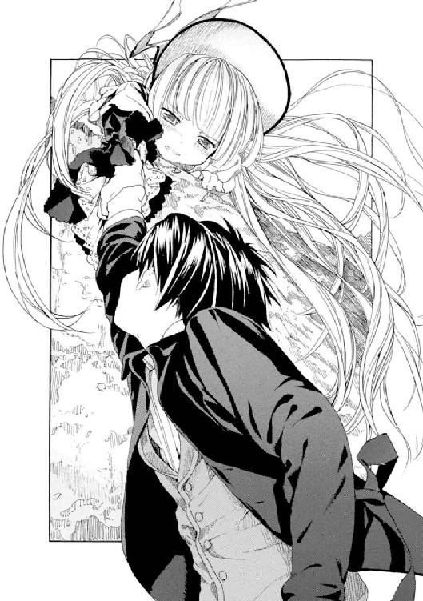
むきになったように繰り返すその顔を、じっと見上げる。
（......あ！）
一弥はふと思った。
（痛くないはずない。ヴィクトリカはすごく痛がりなんだ。ヴィクトリカが......噓をついてる。初めて見たな......。噓をつくところなんて。あれれ、へんな顔だなぁ......）
ほっぺたはいつもよりふくらみ、エメラルドグリーンの瞳が水っぽく潤んでいる。
「久城、早くしろ！......なにを笑ってるのだ！ 早くしろと言っているのだ！」
一弥は急に我に返った。ヴィクトリカの小さな足が、ずるずると崖に近づいてきている。このままでは自分も一緒に落ちてしまいそうになっているのに、それでもヴィクトリカは、一弥の手をどうしても放そうとしない。
「一緒に帰るんだ。こないだも言ったぞ。一緒に帰るんだ。こないだもわたしはそう言った。言ったのに」
「......うん」
「早くしろバカならず者音痴の死神！」
「ごめん、そうだよね......ヴィクトリカ」
「なんだぁぁぁぁ！」
ヴィクトリカが怒っていた。一弥は妙に神妙に、
「あのね......ありがとう」
「ばかぁぁぁぁ！」
「......へへへ」
一弥はもう片方の腕を伸ばして、地面から突き出た木の根っこを摑んだ。ぐうっと力を込めると、なんとか自分の体を少しずつ引き上げることができた。
ゆっくりずるずると地面に近づいていく。ヴィクトリカの小さな息づかいが、やけに耳に響く。遠くでぱちぱちと炎の燃え広がる音もする。一弥はようやく、自分の体をちゃんと地面まで引き上げた。
息をつく。
そのまま眠ってしまいたいぐらい疲れていた。
一弥は大きく深呼吸した。息を吐くと、ついさっきまで囚われていた悲しい気持ちも、体の外に出ていくようだった。
膝をついて、はぁはぁと息をする。
やがて一弥は顔を上げた。かたわらにうずくまっているヴィクトリカをみつめる。
ヴィクトリカは地面にぺたりと座り、小さな両手を開いていた。じいっと手のひらを覗き込んで、不思議そうな顔をしていた。
一弥もその手のひらを覗き込む。
ヴィクトリカの手は真っ赤に腫れ上がっていた。重いものなど持ったことのない肌はとても弱いらしく、火傷でもしたように痛々しくふくれていた。
「......ヴィクトリカ」
一弥の視線に気づくと、ヴィクトリカはあわてて両手を背中に回して隠した。そして一弥の腕の傷からも血が流れているのに気づくと、また不思議そうにそれをみつめ始めた。
「ヴィクトリカ、あの......」
一弥がなにか言いかけると、ヴィクトリカは怒ったように鼻を鳴らした。そして一弥にくるりと背を向けると、小さくつぶやいた。
「久城、君、落ちてもいいやと思っただろう」
「えっ、えっと............」
ヴィクトリカの声はとても怒っていた。一弥は頭を搔いた。なんと答えようか困っていると、ヴィクトリカは怒った声のままで短く言った。
「落ちたら駄目だ」
「......そうだよね」
「....................................ばか」
ヴィクトリカは聞こえないぐらいの小さな声でつぶやいた。
３
夜の帳が降りる頃、村から上がっていた炎は鎮火した。それからしばらくすると、麓のホロヴィッツから迎えの馬車がやってきた。暗い中で、老いた御者は〈名もなき村〉を襲った異変には気づいていないようだった。ただ一弥たちの顔ぶれ──一弥、ヴィクトリカ、ブロワ警部、デリク、ミルドレッド、それにアンブローズの六人を見渡すと、首をかしげてつぶやいた。
「六人乗せてきて、また六人乗せて戻るにはちがいねぇけど......この顔ぶれだったかね？」
馬車に乗るとき、アンブローズは迷うように村のある窪地を振り返った。宵闇に沈む窪地は人が住んでいることを感じさせず、頑固な老人のように身動き一つせず、ただそこに在った。
アンブローズがつぶやいた。誰にともなく、いいわけのように。
「橋が燃え落ちるのを見ていたら、つい......火の中を渡ってしまったんです。ぼくはずっとあの橋を渡りたかったんです。ブライアン・ロスコーによって外の世界のことを知ったときから......。〈名もなき村〉が唯一の世界ではないと知ったときから......。ぼくだけが、ここを終の住み処だと思えなくなってしまったのです」
それだけ言うと、アンブローズは胸を張って馬車に乗りこんだ。髪を結んでいた麻の紐に手を伸ばすと、さっとほどいて、馬車の窓から投げ捨てた。絹のようにたおやかな金色の髪がふわりと広がって、品のある女性的な美貌の上にこぼれ落ちた。
ヴィクトリカが小さな声で言った。
「外は......いい」
一弥がかすかに息を呑んだ。ヴィクトリカの手をそっと握りしめた。ブロワ警部は知らんぷりをしていたが、ちらりとだけ腹違いの妹を見て、
「もう二度と出られないかもしれないぞ。こんな騒ぎを起こしたのだからな......」
「それでもわたしは満足だ」
ヴィクトリカが返事をしたので、一弥は驚いた。この不思議な距離のある兄妹が、まともに会話らしきものをしたのは、これが初めてだったのだ。それが棘のある、そして不吉な内容だったとしても。
「わたしはコルデリアの無実を証明した。娘は母の名誉を守らねばならない」
「......ふんっ！」
ブロワ警部が鼻を鳴らした。
「たとえ、コルデリア・ギャロが生まれた村を追われた理由が冤罪だったとしても、あの女が先の世界大戦でさまざまなことを引き起こしたことに変わりはない。その血を引く娘に自由が与えられないことにも、変わりはないだろうがな」
「父親の受け売りだろう？」
「なっ！」
ブロワ警部はおそろしい顔をして、小さな腹違いの妹を睨みつけた。ヴィクトリカはおそれる様子もなく静かに視線を返した。
馬車の中は静まり返った。
そして、箱型馬車はきたときと同じように激しく揺れながら、蹄の音を立て、急勾配の道を降り始めた。
「あの村はこれからどうなるんでしょう？」
一弥が誰にともなくつぶやいた。
向かい側に座っていたアンブローズが答えた。
「さぁ......。きっと、跳ね橋をもう一度作るのにしばらく時間がかかると思います。でも、これまでと同じように......これからもあの暮らしを続けるのでしょう」
彼の顔は青白く憔悴しきっていた。
「アンブローズさんは......」
「ぼくは......ずっと外の世界に憧れていたので。どうなるかはわかりませんが、外で生きていきたいと思います」
黙りこんでいたデリクが、甲高い声で苦々しげに言った。
「外がそんなにいいかねぇ？ 君らはあの骨董の価値がわかっていないんだよ。あげくにたくさん燃やしてしまうし」
ミルドレッドが思い出したようにため息をつく。
「そうだ。あの火事って、つまりお金が燃えてたってことだよね。憂鬱になるよ......」
デリクの頭をブロワ警部が小突いた。あきれたようにため息をついて、デリクに説く。
「デリク、おまえはその骨董の村の掟で裁かれるところだったんだぞ。どう考えても、ソヴュールの法律よりも残虐な刑が待っていたと思うがね。あの斧を見たかね？ 錆びついて切れ味の悪そうな中世の斧で首を落とされるなど、ぞっとしないか？ きっとなかなか首が落ちずに、何度も斧を振り下ろされて、絶命するまで、長く苦しむにちがいない......」
自分で口にした言葉に自分でぞっとしたように、ブロワ警部は黙りこんだ。
しばらく馬車の中に沈黙が流れた。
山道を下る馬の蹄の音が、規則正しく聞こえてきた。大きく揺れ、がたごとと音を立てる。やがてブロワ警部がぼそりと言った。
「それにしても、セイルーン王国ってなんだろうな」
「......セイルーン？」
ヴィクトリカが聞き返した。
警部はあわてて一弥のほうを向いた。もうこれ以上は妹と会話する気がないらしい。いつものように一弥に向かって話し出す。
「デリクの処分について、村長と言い合いになったときにだね、彼が妙なことを言ったのだ。『ここはソヴュール王国ではない』『村ではない』と。続けて彼は誇らしげに言ったのだ。『ここはセイルーン王国で、わたしは国王だ』と」
警部は肩をすくめた。
「......勝手に国名をつけて山奥に住まれてもだね、話にならないだろう。ここはソヴュールの国土なのだから。まったく頭のおかしなやつらだよ。......おっと、失礼」
アンブローズの視線に気づいて、少しあわてる。
ヴィクトリカが大きくため息をついた。
「そうか。それでなのだな......」
全員がヴィクトリカに注目した。
彼女は物憂げに長い金髪をかきあげた。それから少し眠そうに瞳を細め、となりに座る一弥を見た。
「久城、君、覚えているかね？ わたしが〝特別な民〟について語ったときのことを」
「あぁ、うん......」
一弥はうなずいた。
「ギリシア神話の神々とか、北欧の巨人とか、中国の天上人とか......」
「そうだ。そういった文献を読んでいて気づいたのが、実際の歴史に──多くは古代史にだが──登場する神の如き人々のことだ」
ヴィクトリカはため息をついた。
「その昔、東ヨーロッパの地を制覇した森の民。その伝説はいまもなお残っている。バルト海沿岸の地は数々の外敵に晒されていたが、その森の民はけして負けることがなかった。彼らは小柄で力もなかったが、並外れた知力によって、外敵を下していった。九世紀にはハザール人を、十～十一世紀にはペチェネグ人を、十二世紀にはポロヴェツ人を下した。そして十三世紀にはモンゴル人の来襲をも下した。彼らの敵の多くは、平原から攻めてくる大柄な騎馬民族だった。彼らは栄華を誇ったが、しかし十五世紀を境に、忽然と姿を消した。戦争があったわけではない。ある日とつぜん歴史から消えた。果たして彼らは何処へ消えたのか？」
馬車の中はしんと静まり返っていた。
「彼らの名が、セイルーン人だ」
あっ、と誰かが叫んだ。
アンブローズがおそるおそる言った。
「そういった歴史のことは知りませんが、村ではぼくたちはセイルーン人だと教えられてきました。ここはソヴュール王国で、村の形態をとっているけれども、本当は村ではなく王国なのだと、子供の頃から......。しかし、けしてそれを言ってはいけないと。その名も口にしてはいけないと。なぜなら迫害され、焼き払われてしまうからと......」
「そう。彼らは迫害される民なのだ」
ヴィクトリカがうなずいた。
「君たち、十五世紀と言えばなにを思い出すかね？ それは異端審問と魔女狩りの季節でもあった。小さく、賢く、謎めいたセイルーン人は、その波に呑まれ異端のレッテルを貼られ、やがてバルト海沿岸の小さな王国を保つことができなくなった。戦争ではなく迫害によって、彼らは追われた。そして十五世紀を境にソヴュールで急速に増えたのが、例の〈灰色狼〉の伝説だ。森の奥深くに言葉を話す静かなる狼が棲んでいる、頭のいい子は灰色狼の子と呼ばれてしまう......。それは十五世紀にバルト海沿岸を追われたセイルーン人が、ソヴュールの山奥に逃れて、ひっそりと住んでいたためではないか。そして彼らが〈灰色狼〉と呼ばれたのは、かつて暮らした東欧の森に多く棲息していた狼からきた名称ではないか。しかしソヴュールに逃れた彼らは、みつかるたびに村を焼き払われ、さらに森の奥に追われていく。やがて子孫の数は減り、伝統と古い村だけが残った。おそらく、それがあの村なのだろう」
ヴィクトリカは低い声で続けた。
「君たち、あの夏至祭を覚えているかね？ 〈夏の軍〉と〈冬の軍〉の戦いを。あれは豊穣を祈るための儀式で、ヨーロッパ各地に似たような風習がある。しかし〈冬の軍〉だけが馬に乗っていたのはなぜだろう？ わたしは一つの仮説を立てることができる。それは、彼らの敵が長く騎馬民族であったからではないか、と。あの儀式は冬を追いやるためのものであるとともに、季節ごとに攻めてくる大柄な騎馬民族を、豊壌なる森から乾いた平原に追い返すための儀式でもあったのではないかと」
馬車は山を降り続けている。
大きく揺れている。
ランタンの炎が、ヴィクトリカの顔を照らしたり、暗い影に隠したりを繰り返している。
誰もなにも言わない。
やがてヴィクトリカが、しわがれた低い声で言う。
「どちらにしても、遥か昔のことだ。我々はいまを生きている。いまを......」
──がたん！
馬車の車輪が大きな石か木の根っこを踏んだらしく、大きく揺れた。
ランタンが激しく揺れて、向かい側に座るアンブローズの顔を一瞬明るく照らし出した。
アンブローズの頰には涙が光っていた。
「......いまを？」
小さく聞く。
ヴィクトリカがうなずいた。
「そうか......それなら生きていけます」
そうつぶやいたアンブローズがかすかに微笑んだ気がしたが、暗くてよく見えなかった。
ミルドレッドが大あくびをした。それからつぶやいた。
「むずかしいことはよくわかんないけどさ、とにかく健康で、あとお金があったら万々歳ってことだよ。いいじゃないのさ。......お金はもっともっとほしいけどさぁ！」
アンブローズがくすっと笑った。一弥もつられて笑顔になった。ミルドレッドはまたあくびをすると、疲れ切ったように目を閉じた。
がたがたと揺れながら、馬車は山を降り続けている。うねった道を、蹄を鳴らしながら。
ヴィクトリカが小さくあくびをした。
「......疲れたの？ 眠くなった？」
「............」
ヴィクトリカは無言でうなずいた。それから小声で、
「久城、君、歌え」
「......歌うの？」
「そうだ」
「......なんでだよ？ まったく......」
一弥はため息をついた。
それから小声で、得意な童謡を口ずさみ始めた。朗々と歌っていると、ヴィクトリカがかすかに笑ったような気配がした。
「な、なんだよ？」
「......へたくそめ」
「君もね、ヴィクトリカ」
ヴィクトリカはくすくす笑い続けている。
馬車はまだまだ山を下っている。
４
ようやく麓の町にたどりついたときは、夜もすっかり更けていた。一同は一軒しかない宿屋に泊まり、翌朝出発することにした。宿屋の主人は、アンブローズが金色の髪に貴婦人然とした顔つき、そして中世のような服装をしているのに気づくと、おそろしそうに、
「灰色狼だ......！」
などとつぶやいていたが、アンブローズが屈託なく、宿屋の経営やら電話の仕組みやら、玄関の扉に吊してある鳥の死骸やら......について質問し続けるたび、おそろしさは消えていくようだった。代わりに面倒くさくなってきたらしく、
「聞き分けのない子供みたいに、質問責めにするな。あんた、いったい幾つだね！」
ついには怒りだして、どこかに退散してしまった。
──翌朝はよく晴れていた。登山鉄道に乗りこみ、山を降りて、さらに蒸気機関車に乗り換えて......昼頃にようやく、聖マルグリット学園のあるいつもの村に帰り着いた。
ミルドレッドは、サマードレスの上から重苦しい尼服を着込んで、教会に帰っていった。「あーあ、しんきくさい生活に戻るかぁ......」と一言だけ文句を言ったが、ぴたりと口を閉じたときにはもう、色鮮やかなドーリィカールの赤毛も尼服の奥深くにしまいこまれ、顔つきも若干引き締まり、一見するとまともなシスターのように見えた。どかどか大きな足音を立てて、歩き去っていく。
ブロワ警部はデリクを連行して、警察署に向かうために馬車に乗りこんだ。馬車の窓から振り返って一弥たちに、
「とりあえず、学園に戻りたまえ。その後の指示は学園側に連絡する」
暗い声に一弥は不安になったが、いまは、この先どうなるのかわからなかった......。
ブロワ警部とデリクを乗せた馬車が遠ざかっていく。ミルドレッドの姿はもう見えない。
それぞれがそれぞれの場所に散っていくのだ。
──旅は終わった。
駅舎から村の大通りに出ると、初夏に近い風が吹いて、心地よかった。昼どきの大通りにはたくさんの人が歩いていた。通り沿いの店も活気があり、人の出入りが激しい。
乗り合い馬車が通り過ぎ、反対側からは最新式の自動車が飛ばしてきて、がたがたと大きな音を立てている。
アンブローズは珍しそうに通りを見回していた。
「......ここが、いま、か」
どこへともなく歩きだそうとする。不安と楽しさの入り交じった表情を浮かべている。一弥とヴィクトリカがそれを見送っていた。
穏やかな風とともに、葡萄畑から甘い果実の匂いと、暖かみのある土の匂いが漂ってきた。遠く駅舎のほうから、つぎの蒸気機関車が近づいてくる、汽笛の甲高い音が聞こえてきた。
ゆったりとした、いつものこの村の情景だった。
アンブローズは急になにかを思い出したように走って戻ってきた。一弥を捕まえると、少しあきれたような顔で耳打ちする。
「......そういえば、占いのときに」
「占いって、あの？」
「ええ。あなたと、友達の女の子は......」
「ぼくと、ヴィクトリカ？」
「ええ」
アンブローズは、わからないと言うように首を振って、
「あなたがた、どうして二人で同じ質問をしたんです？」
「同、じ......？」
一弥は首をかしげた。
あのとき──聖堂から出てきたヴィクトリカが、瞳に涙を溜めて、とても不機嫌な様子だったことを思い出す。
よほどショックなことを言われたのだろうと思っていたら、彼女は言ったのだ。背が伸びるかどうか聞いたのだ、と......。
（同じ質問って......。ぼく、ヴィクトリカの背が伸びるかどうかなんて聞いてないけど......）
一弥はしばらく考えこんでいた。
そしてようやく気づくと、あっと叫んだ。
（ちがう。逆だ......！ ヴィクトリカがぼくと同じことを聞いたんだ。本当は背が伸びるかどうかじゃなくて......）
わたしと久城一弥は、ずっと一緒なのか、と......。
答えは一弥と同じだった。
──だから、少し泣いていたのだ。
アンブローズは不思議そうに、
「二人がべつべつの質問をしていたら、未来が二つ聞けたのにと思って。でも、よほど聞きたいことだったのでしょうね。うん......」
それだけ言うと、アンブローズは気軽にぶらぶらと歩き去っていった。
一弥はヴィクトリカのとなりに戻った。その顔をじいっと見下ろしていると、ヴィクトリカが不機嫌そうに、
「......なんだね。じろじろと見て」
「いや、べつに......」
「じゃあ、あっちを向け」
「......君ねぇ！」
また、忘れていた怒りがこみあげてきた。
まったく、ヴィクトリカには腹が立つ。とにかく頭が良くて口が悪くて、どうしたらいいかぜんぜんわからない。一弥ではなく、ヴィクトリカのほうがおかしいのだ。ばかにされるし、こき使われるし、そのくせ邪魔者扱いされるし。それに......。
それに......。
（......二人で無事に帰ってこられて、よかった）
まぁ、そういうことだ。
──それから一弥は、遠ざかっていくアンブローズを見送った。
〈名もなき村〉で見たときは、古風な服装も礼儀正しい態度もいかにもあの村の住人らしく、ただ瞳の輝きだけが、彼の生き生きとした内面を物語っていた。だがいま現代の大通りを歩いていくアンブローズは、歩くごとに、ポケットに手を入れ、口笛を吹き、ゆったりと歩き......あっというまに周囲の空気に溶けこんで、大通りの情景の一部になっていた。服装も、彼の態度の変化につれて、妙なものには見えなくなっていった。アンブローズとすれちがった村娘が、素敵な人だわ、と感嘆するように振り向いて彼を熱心にみつめた。それに気づいたアンブローズは、少し恥ずかしそうにだが、愛想よく村娘に会釈した。
──あっというまの順応だった。
暖かな風が吹いた。
彼のほっそりとした背中にかかる、絹のように輝く長い金髪が、風に揺られてふわりと舞い上がるのが見えた。
風が止んだときにはもう、アンブローズの姿は消えていた。通りのどこかで曲がり、歩き去っていったのだろう......。
一弥が少し心配そうにつぶやいた。
「アンブローズさん、これからどうするんだろう？」
ヴィクトリカはしばらく黙っていた。瞳には憧憬に似た不思議な光が湛えられていた。自由を得たアンブローズをうらやんでいるようにも見えたが、彼女はそれについてはなにも言わなかった。ただ一弥の問いに、短く答えた。
「生きていくのだろう。コルデリア・ギャロもそうしたように」
それが、旅の終わりだった。
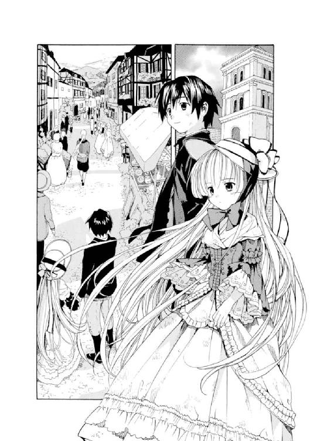
エピローグ 友達
よく晴れた午後──。
だいぶ初夏に近づいた日射しが、大通りの乾いた土の上に照りつけて眩しく輝いている。木骨組みの家々に絡まる蔦も、二階の窓辺から垂れている赤いゼラニウムの花も、日射しを反射してきらきらとしている。
穏やかで過ごしやすい、昼下がり。
村の一角にある小さな郵便局の扉がゆっくり開いて、聖マルグリット学園の制服に身を包んだ小柄な東洋人の少年が出てきた。制帽を律儀にかぶり直し、背筋を伸ばして歩きだす。
その手には、国際郵便で届いたらしい小さな四角い小包が握られていた。
郵便局の向かい側にある小さな花屋さんから、同じ制服に身を包んだ、すらりと背の高い少女が飛び出してきた。金色のショートヘアに、いかにも活発そうに輝く表情──。
少女は少年──久城一弥をみつけると、ぱっと顔を輝かせた。
「久城くん！」
呼ばれた一弥も、少女──アブリル・ブラッドリーに気づくと、笑顔になった。
「やぁ、アブリル」
「なにしてるの？ あ、今週もまた郵便局にきたのね。それ、故郷からの郵便？」
「うん。ようやく兄に頼んでた本が............わわっ、アブリル？」
「お小遣い？ お小遣い？ あれっ............なーんだ」
一弥の手から郵便物を奪って封を開いたアブリルは、中身が東洋の言葉で書かれた古めいた書物なのに気づくと、あからさまにがっかりした。
「......だから、本だって言ったじゃないか。少し前に、長兄に送ってほしいって手紙で頼んでおいたんだよ。それがようやく届いたんだ」
一弥は歩きだしながら小声でつぶやいた。
「......ちょっとタイミングがね、遅かったけど」
「ふぅん？ ね、なんの本？」
「それは、ええと......いや、いいよ。たいしたものじゃないし」
一弥は急に赤くなると、アブリルの手から、その緑色の表紙をした本を奪い取った。
アブリルは不満そうに頰を膨らませると、本を取り返した。表に裏にひっくり返してみつめていたが、東洋の言葉はわからないので、仕方なく一弥に本を返す。
──二人の歩く大通りは、日射しのせいか土埃が舞って、少し煙たかった。毛足の長い老馬が、ゆっくりと荷馬車を引いていくのとすれちがった。山ほどの干し草を積んだ荷馬車から、あたたかくて少し甘酸っぱい、初夏の匂いとしか言いようのない香りがした。
学園に近づくに従って、道は少しずつ人気がなくなっていった。家々も減り、山の中腹に向かってなだらかな傾斜が延々と続いている。
「......そうだ、アブリル」
一弥が、本から話題を変えようとするように大きな声を出した。
「あのさ、ぼく、先週いろいろあって......話すととても長くなるからやめておくけど......。のみの市のバザーで会ったシスター、覚えてる？」
「うん」
「あの人、ミルドレッドさんって言うんだけど、知り合いになってさ。バザーに出していた品を一つだけくれるって言われたんで、これ、その......君に............」
一弥が鞄を開けて、中をごそごそと捜し始めた。〝君に〟と言われた瞬間、アブリルの顔がぱぁっと輝き、うれしそうに彼の鞄の中を覗きこんだ。
「わたしに？」
「そう。君にと思って。すごく気に入ってたみたいだったからさ......」
鞄の中で、なにか金色のものが不吉に光った。
アブリルの顔から笑顔が幻のように消えた。金色のものを握って一弥が顔を上げたとき、そこには、ものすごく怒っているようにしか見えない、アブリルのとがらせた唇があった。
「君、こうやって、ほしいほしいって騒いでたからさ。これを君に、あげ、よう、と............アブリル、どうしたの？ なんだよ？ なんでそんな顔してるんだよ？」
一弥はそれ──こぶし大の、金色の髑髏をばかみたいに頭に載せたまま、アブリルとみつめあっていた。
アブリルはじいっと一弥を睨んでいた。ぱっちりとして鮮やかな青い瞳の端になぜか涙が溜まり始めたので、一弥はあわてて「あの......？」と言おうとした。頭がぶれて、金色の髑髏が落っこちた。ころころ、ころころ......と、なだらかな勾配の通りを、土埃を上げて髑髏が転がり落ちていく。
あわててそれを追いかけていると、背後からアブリルの声が聞こえてきた。
「久城くんの、ばぁか！」
「............えぇぇぇぇぇ？」
やっとのことで髑髏を拾い上げて、一弥が顔を上げたときには、アブリルはカモシカのようにしなやかな動きで通りを走りだしていた。
一弥は驚いて追いかけるが、アブリルの足は速く、少しだけ距離を縮めるのがやっとだった。学園の前に辿り着いたとき、アブリルのスカートのはしっこが、例の抜け穴──彼女が鉈で枝をぶち斬って作ったという──から、学園の敷地内へ消えて行くのが見えた。
「待ってよ、アブリル！ どうして怒ってるんだよ？ ちょっと......」
一弥が大慌てで抜け穴を通り、細い枝が突き刺さったり葉っぱだらけになったりしながら、敷地内に戻ると......。
「アブ、リ、ル..................あ、セシル先生。その、どうも......」
そこにはアブリルの姿はもうなかった。走り去ってしまった後らしく、代わりに、芝生にしゃがんで菫を愛でていたセシル先生と、大きな丸眼鏡越しに目があった。
「......久城くん？」
慌てて、体から葉っぱや折れた枝を払う。セシル先生は不思議そうに一弥を見上げていたが、やがてようやく気づいたらしく、はっと息を呑んで生け垣の奥をみつめた。
そこには、あってはいけないもの──人が一人通れるぐらいの小さな抜け穴があった。
「久城くん!?」
「......す、すみません！」
「わたしの菫を踏んだ人は............」
「すみません、ぼくです......」
「そうだわ。先週ヴィクトリカさんが抜け出したときも、この穴から......？ あなたとヴィクトリカさんが二人で、正門が開いてたって言い張るから、納得したけど......あなた達、本当はここから出たのね？ く、久城くん！」
「す、すみません......」
一弥は頭を下げて何度もあやまった。セシル先生はよほど怒っているらしく、菫が、芝生が、ヴィクトリカさんが、とずっとお説教を続けている。
抜け穴は庭師によってすぐに閉じられてしまうことになった。一弥が内心（アブリル、がっかりするだろうなぁ？）と思っていると、木の陰から、金色の髪がちらりと覗いているのが見えた。
アブリルだ。
先に学園に戻ったものの、一弥が先生に捕まったのに気づいて様子を見にきたのだろう。
──結局、一弥はセシル先生から「おトイレ掃除を一か月と、夜の外出禁止を一週間」という罰を言い渡されて、その場を去ることになった。
うなだれて歩きだすと、なにかが頭にぽこんと当たった。
頭をさすりながら、振り返る。
走り去っていくアブリルの、すらりとした後ろ姿が見えた。足元に丸めた紙が転がっている。頭に当たったのはこれだろうか......？
拾って開いてみると、やっぱりそうだった。アブリルの丸っこくて細い筆跡で、こう書かれていた。
〈久城くんへ
抜け穴つくったのはわたしだっていうこと、先生に黙っててくれてありがと。
......でも、髑髏なんていらない。久城くんはやっぱり、ばぁか、だよ！
アブリルちゃんより〉
一弥はそのくしゃくしゃの紙をきれいに伸ばして四角くたたむと、胸ポケットに入れた。
......やっぱり、よくわからない。
「どうしてばぁかなのかわからないから、ばぁかだって、ことなのかなぁ？」
そうつぶやく一弥の周りに、急に強い風が吹いて、黒い髪と制服の裾を揺らしながら通り過ぎていった。
風が止むと、とても暖かく感じられた。
夏が刻々と近づいているらしかった。
「......ま、それに気づいただけでも、君、少しはましになったと言えるのではないかね？ ばか者の久城」
──聖マルグリット大図書館。
三百年以上の時を刻んだという古く荘厳な建物。世界大戦の戦火を生き抜いた後は、欧州でも指折りの書物庫としてその名を馳せている。
だが、学園の生徒と関係者以外は入れないという秘密主義のため、その存在を知る人は少ない。図書館はいつも静まり返り、埃と塵と知性の匂いだけが充満している。
その大図書館の、目がくらむほど高いところへ続く木の迷路階段。一弥はその午後も、一人で階段を何分もかけて上り、いちばん上にいる友達のところに辿り着いていた。
最上階には眩しい陽光の降り注ぐ天窓と、南国の植物や花が生い茂る植物園。そして陶人形そのものに思える美貌の、しかしとても小さな少女がいた。いつもいるようにその日も。いつもとまるで同じように。
少女──ヴィクトリカ・ド・ブロワは、週末の旅などなかったかのように落ちついて、書物の山に埋もれていた。腹違いの兄グレヴィール・ド・ブロワからはまだなんの連絡もなかった。このままなんの咎も受けずにすめば、といったところだが......一抹の不安は残っている。
陶器のパイプをくわえた小さな口から、白い細い煙が天窓に上がっていく。一弥はその煙を頼りに、書物の山の中からヴィクトリカの小さな体をみつけだし、となりに座った。
「......ばか者とか言うなよ。今日は女の人たちに怒られ通しで、本当にめげてるんだからさ」
「自業自得だよ、君。くわしい理由は知らないがね」
「ちぇっ！」
一弥は機嫌を悪くした。だがヴィクトリカは気にする様子もなく、
「だいたい君はいつも、人のことなどわかっていないくせに、見透かしたようなことを言ったり、とんちんかんなことで怒って絶交するはめになったり、まったく、くだらんやつなのだ」
「な、なんだよそれ!?」
「ふんっ！ 己の胸に聞きたまえよ」
「なんだよ、まったく。......まぁいいや。ヴィクトリカ、これ、いる？ なんだかわからないから、ぼくにも、なにに使えとか言えないんだけどさ」
ヴィクトリカは一心にパイプをくゆらしながら大きくて分厚い書物に頭を突っこんでいたが、一弥に言われて、面倒くさそうに顔を上げた。
ちらりとだけ一弥が差しだすものを見て、また書物に頭を、突っこもうと、して......。
「......なんだね、それは!?」
一弥は戸惑ったように、差しだしていたもの──金色の髑髏を、おずおずと引っこめた。
「なんだろう。文鎮、かなぁ？」
「久城、君はだいたいにおいて、じつにつまらない凡人だがね」
「ほっとけよ！」
「ときどき、とつぜん、わけがわからないのだなぁ」
「......それ、誉めて、は、ないよね？」
「東洋の神秘というやつかね？ それとも、君だけ特別におかしいのかね？」
一弥はヴィクトリカの毒舌が本当に辛くなってきて、口を閉じた。小声で「ここにおいとくよ......」と、金色の髑髏を床に置く。
そのとき、床に置かれたあるものに気づいた。
一弥がプレゼントした、あのインド風の不思議な帽子だった。やっぱりヴィクトリカは、帽子としては気に入らなかったらしい。代わりにそれは上下逆にされて床に置かれていた。中にウイスキーボンボンやマカロンがこんもりと積まれていた。
──ヴィクトリカが明晰なる〝知恵の泉〟で考えた末に、帽子はお菓子入れとして再出発することになったらしい。
一弥は帽子のとなりに髑髏をちょんっと置いた。
......どうも、妙な空間になった。
「東洋の神秘と言えばさ、ヴィクトリカ」
「なんだね？ 海を越えてわざわざやってきたばか者で死神の久城」
「......君、いつも、一言も二言も多いよ」
一弥はめげそうになりながらも、鞄からある物を取りだした。
あの、郵便局で受け取った、長兄に送ってもらった本だ。
ヴィクトリカは興味なさそうに顔を上げたが、ものが本だったので、意外なほど興味を持って奪い取り、ぱらぱらとめくり始めた。なじみのない言語らしく、額にかわいらしいしわを寄せて、うむむ......などとうめきながらページをめくっていく。
本には、二人の人間が組み合ったりしている絵がたくさん描いてあった。
「......これはいったい、なんの本なのだね？」
「東洋の格闘術についての本だよ。父や兄たちは詳しいんだけど、ぼくにはさっぱりわからなくてね。それで長兄に、この本を送ってほしいって頼んでたんだ」
「格闘術の本を、かね......？」
ヴィクトリカが不思議そうにつぶやき、顔を上げる。
一弥は目をそらした。少しだけ赤面している。
──前回、ヴィクトリカと共におそろしい船に乗りこんでしまい、危険な目に遭った後、一弥は少しだけ後悔したのだった。もともと一弥は、父や兄たちから習った格闘術がどうも苦手で、なんとかしてかかわらずにいようと思っていたのだった。でもあの船の中で、誰の助けも期待できずに小さなヴィクトリカと二人きりになったとき、一弥は、あぁ、もっとちゃんと勉強していたらなぁ、と心の底から後悔したのだった。
そんなことを思って、一弥は長兄に手紙で、成績の報告やらこちらの国のことなどを書いた折、できれば格闘術の本を一冊送ってほしいと頼んでおいたのだ。
とはいえ、少しタイミングがずれて、長兄の本は、二度目の冒険を終えて学園に帰ってきた後で届いてしまった。
（そういえば、兄さんって昔からそうなんだよなぁ......。ご飯を食べた後でお菓子をくれたり、試験が終わった後で勉強を教えてくれたり。いい人なんだけど、いつも、そうなんだよなぁ......）
そのせいか長兄は、頭もよく姿も美丈夫なのに、失恋ばかり繰り返していた。いつだったか、徹夜で書いた恋文を手に意中の人の家を訪ねたら、なんと彼の君の祝言の真っ最中だったということがあった。長兄は激しい乾布摩擦でその悲しみを乗り越えたようだ......。
「......手紙も入っているようだぞ」
「えっ、本当？」
一弥はヴィクトリカが差しだしてきた手紙を受け取った。大きなおおざっぱな字で書かれた手紙だった。長兄の字だ。一弥はそれを開いて読み始めた。
〈まったく、どうした風の吹き回しだ？ 一弥、おまえがこんな本をほしがるなんて。弟と一緒に首をひねっているよ。しかしいい兆候だ。おまえがもっと男らしく、大きな男になってくれればと、父や弟ともしみじみ話していたところだ......〉
ここまで読んで、一弥の心はどよーんと沈んだ。
〈......ところで、君の優秀なる成績については、父君はたいへんお喜びになっている。わたしたちも誇りに思っているよ。君が我が国を出て、外の世界で勉強することを選んだのは正解だったと見える。母君と妹は寂しがってたいへんだがな。わたしや弟がいても、一弥、おまえがいないとまったくつまらないらしい。えこひいきというやつだ〉
一弥は少しだけ笑顔になった。
〈しかし、男にはやらねばならぬことがあるからな。母君や妹にはきつく言っておいたぞ。一弥はいま、男として大いなる成長を遂げている途上。女子供が邪魔をするなとな。一弥、一日も早く一人前の男になって戻ってこい。立身出世、そして国のためになる男になってな。くれぐれも、国の大事とは無関係な、生きている価値のない男になどなるな。立派な男になれ。わたしたちも、国のために一心不乱に働きながら、君の帰りを待っている。──長兄より〉
一弥はため息とともに手紙を閉じた。
遠い目になる。
とつぜん静かになった一弥に、ヴィクトリカが顔を上げて、わずかに心配そうな顔をした。だが、めずらしい東洋の本に興味が戻ったらしく、本に頭を埋める。
だが、また......。
開いた本の上からそっと顔を出して、一弥を見る。
一弥はまだため息をついている。
ヴィクトリカはしばし首をかしげ、まぁいいかというように、一弥からまた目を離す。
（......兄さん）
一弥はあからさまにしょんぼりして、階段と植物園のあいだぐらいのところに座り、下を向いていた。くよくよと、
（ぼくは、兄さんが望むような......立派な男になんてなれそうにないよ。それに、国の大事に係わることだけが、人間の価値なんだろうか。本当にそうなのかな......。あぁ、ぼくには......）
──ゴン！
急に後頭部に鋭い痛みを感じた。
振り向こうとして、体がバランスを崩した。一弥は「うわあぁぁぁ!?」と悲鳴を上げながら、迷路階段を何段か転がり落ちた。
斜めに転がったので、あとほんの数センチで遥か下の奈落に落ちそうになった。一弥がなんとか階段にしがみついて起きあがると、ぎゅう、と握ったこぶしを突き出しながら、びっくりしたようにこちらを見下ろしてるヴィクトリカがいた。
「なんだ、君、まだそこにいたのか」
「......いまの、ヴィクトリカ............その」
ヴィクトリカは大あくびをして本を置いた。一弥は這々の体で階段から這い上がり、
「ヴィクトリカぁ!?」
「......いや、この本の挿絵に描いてある通りに手を出したらだね。たまたま、久城、君がいたのだよ」
「うそだぁ！ わかっててやったんだ。おもしろいから......。だろ？」
「むっ。......だったらなんだね？」
「万一ぼくが死んだら、どうするんだよ！」
「......どうもしないが」
一弥は再び、ヴィクトリカのとなりに座った。膝を抱え、彼女に背を向ける。お菓子入れから勝手にマカロンを一つ取って、包み紙をはがし、口に入れる。ヴィクトリカはむっとしたようにそれを見ていたが、文句は言わなかった。
やがて一弥が、ぼそっとつぶやいた。
「......噓だね」
「噓？ なにが噓なのだね？」
「どうもしないっていうのがだよ。ヴィクトリカ、君、ぼくがいなくなったらいやだろ？」
「............」
ヴィクトリカは返事をしない。
一弥は心の中だけでつぶやいた。
（君、ちょっと涙ぐんでたじゃないか。あの占いを聞いたときに）
それだけでは不安なので、付け足してみる。
（それに君は、ぼくを助けてくれた。あのとき君はすごく一生懸命だった。......そうだろ、ヴィクトリカ？）
でも、口に出してはなにも言わなかった。
──図書館の中も少しずつ日が暮れてきた。
天窓から射し込む陽光も、寂しげな静かな日射しに変わっていく。
ヴィクトリカは、いつもそうであるようにそこに座り、書物に読みふけっていた。
となりに座った一弥は、書物の山に体を預けるようにして、さっきからじっとしている。ヴィクトリカが書物に顔を埋めたままで、ふっと耳を澄ました。
「すぅ......すぅ............。すぅ」
一弥はかすかに寝息を立てている。ヴィクトリカはあきれたように顔をしかめた。また、知らんぷりして書物を読み続ける。
それから数分──。
ヴィクトリカが書物から顔を上げた。
「久城、君、眠ったか？」
返事の代わりに、穏やかな寝息だけが続いている。
「眠ったか？」
「すぅ......」
「眠ったのか」
ヴィクトリカは繰り返した。
暖かな陽光とともに、少し強い風が天窓から入ってきた。植物園に咲き誇る毒々しい原色の花や大きな棕櫚の葉が、かさかさと揺れる。
「......本より友達のほうが大事だ」
ヴィクトリカがとつぜん言った。
──眠っていた一弥が、むくっと体を起こした。ヴィクトリカがびくりと肩を震わせる。
また風が吹いてきた。二人の金と黒の髪を、さらさらと揺らしていく。
「......へへへ」
一弥はうれしそうな顔をした。
一瞬おいて、ヴィクトリカの薔薇色の頰が、少ぅしだけ、赤くなった。
あとがき
みなさん、こんにちは。桜庭一樹です。
『ＧＯＳＩＣＫⅡ ─ゴシック・その罪は名もなき─』をお送りします。一巻に引き続き、ヴィクトリカと一弥が聖マルグリット学園を飛び出しての冒険！ 今回は山奥の不思議な村にたどり着いて、事件を解きながら、ヴィクトリカのおかあさんの謎にも迫っています。と、その辺りは本編を読んでいただくとして......ところで......。
あああぁぁ、今回もあとがきのページ数が長いのです。なんと十五ページです。って、そんなに長いの見たことないよ！
ええと、なにを書こうかな......？ 前回は『GO→SICK!』と言うことで、友人のちょっと変わった振る舞いなどについて書いたのですが......。
そうだ。先日、榊一郎先生に呼んでいただいて、某専門学校のゲスト講師に行ってきました。で、『ＧＯＳＩＣＫ』執筆秘話などをもしゃもしゃしゃべってきたのですが......生徒さんはみんな感じがよく、とくに変わったふるまいをする奇怪な人もいなかったので、ええと、この話は終わりだ。あっ、四行しか進んでない......。
む......。
いちばんいいのは、途切れなく変わった振る舞いをし続ける人がそばにいてくれることです。そうすればあとがきエピソードの泉がいつも潤ってくれるわけです。
しかし......。
頼みの綱（？）の狛犬泥棒は、中学教師という仕事柄、春先はとても忙しいようなので、いま抜群に機嫌が悪いのです。さっき、このあとがきを書くに当たって取材をしようと、学校の昼休みをねらって電話してみたところ、
桜庭一樹「最近なにか盗んだ？」
狛犬泥棒「ばか、切るよ」
......本当に切られてしまいました。つ、冷た......！ よい友達は人生のスパイス。もっと大事にしなきゃいけないと思います。大人げないんだよなぁ、いつも。
仕方ないので、今回は〈もう一人の狛犬泥棒〉の話をしようと思います。
狛犬を盗む人はことのほか多いものなのか──よく考えたら、ごく近くにもう一人、同じ罪を犯した人がいました。では、その人の話をします。意外と近いところにいた人です。
【昭和の狛犬泥棒の話】
わたしの祖父です。
母方の祖父です。
このことを思い出したのは、去年の年末のことです。年末に行われる富士見書房の謝恩会に出席したところ、なぜか会う人会う人に「あれ、狛犬泥棒連れてこなかったの？」と聞かれ（......なんで連れてくるんだよ！）、なんだかわかんないけど頭の中が狛犬でいっぱいになって帰ってきました。
ほろ酔いで、東京で一人暮らしするマンションのベッドに潜り込んで眠ろうとしたところ、ふと、一つのイメージがぼんやりと、閉じた瞼の闇の先に浮かび上がりました。
白っぽい灰色の、丸っこいラインの、へんなもの......。
へんなものが、二つ......。
あ、眠たい。眠っちゃいそう......。
でも輪郭がはっきりしてきた。んん......？ 石っぽいなぁ。あ、顔がある。なんだっけ、これ？ これ......。
これ......これ......。
わたしはガバッと飛び起きました。
「──狛犬だぁ！」
めっちゃ目が覚めました。なんというか、ミステリーで〝ふとしたきっかけで、封印されていた幼い頃の忌まわしい記憶が蘇る......〟みたいなのがありますが、まさにあれです。
動揺しつつも、だんだん記憶が蘇ってきました。
どうも記憶にあるのは、亡き祖父の部屋のようです。山奥に建てられた邸宅の一室。静かな書斎。祖父は植物学者でした。静謐で冒しがたい空気が立ちこめる彼の書斎には、百科事典みたいな分厚い本がズラリと並んでいました。知性と静寂にのみ支配された彼の部屋。丈夫な造りのチェストの上に、重たそうな本が並んでいました。そして本の両脇を支えるのは、石でできた、灰色の、ブックシェルフ......。
問題は、どう考えてもそのブックシェルフが市販のものではなく、いわゆる本物の〝狛犬〟だったような気がしてならないことです。
しかし、記憶は後から造り替えられることもあると言うし、狛犬、狛犬って思ってたからそういう記憶をいま造っちゃっただけかもしれないし、とわたしは思い返して、とりあえずおとなしく眠ることにしました。
でも翌日になっても、その翌日になっても、やっぱり祖父の書斎にはどうしても、さりげなく狛犬がいた気がしてなりません。
気がしてならないどころの騒ぎではなく、だんだん輪郭までくっきり思い出してきました。さりげなく狛犬が......って、ぜんぜんさりげなくないような気もしてきました。
それどころか、ものすごく存在感があったような......。
気になってたまりません。
ちょうど年末だったので、わたしは、実家に帰省したときに調べてみようと思いました。
東京から飛行機で一時間ちょっと。十二月某日。空気が澄み、山々の緑に包まれる中、はらはらと牡丹雪の散るその地に、わたしは降り立ちました──。
〈つづく〉
......すみません。ごめん。なんだよ〈つづく〉って......。
ほんとは後十ページぐらいこの話が続いていたのですが、さっき担当のＫ藤さんから電話があって「思ったんだけど、おじいさんの話......もしかするとちょっと長いかもしれない。えーと、そういう説もあるよ？」という指摘を受けて、いま涙目でもしゃもしゃ書き直しています。そういや長かった。それに考えてみたら、みんなはわたしの祖父が狛犬を盗んだり、祖母が狛犬のことですごく悩んだりした話にはあまり興味を持ってくれないかもしれないし......。出てくるの、おじいさんとおばあさんと狛犬だけだもん。昔の民話みたい。
それだけじゃなく、美人だけどへんなブラジャーをつけている人の話とか、鼻血を吹き出す人の話もあったほうが楽しいだろうなぁ。......というわけで、この話は【狛犬劇場】という題をつけて続き物にしようかといま思ったので、そうします。次巻のあとがきに〈つづく〉！ （ごめんなちゃい......）
ここから強引に話を変えて、鼻血を吹き出す人の話をしようと思います。
【走れ！ 先輩】
彼女はわたしが通っている空手道場の先輩で、職業はＯＬさんです。一巻のあとがきにも書いたように、この人は知的な美人で、しかもすごく強いのですが、鼻血をやたらぷーぷー吹き出します。それだけではなく、考えてみたらもう一つへんな弱点がありました。しかも格闘家にとって致命的な弱点です。
減量が極端にへたなのです。
大事な試合の前になると、選手はみんな減量に精を出します。といってもわたしはもともと体が小さく、最小最軽量なので「死ぬわよ。太りなさい」とか「背を伸ばしなさい。あと五センチほしいわ」（←無理！）などとやいやい言われて一人でのびのびとご飯を食べています。なのでこの時期敵が多いです。というのはほとんどの選手は本来の体重より軽めの級を選んで出るので、一か月で五キロほどの減量をするからです。みんなかなり気が立っています。
こないだのとある大事な試合前、道場の前でポッキーをかじりながら女子高生の後輩と談笑していたら、びゅんっと音を立てて空から踵が降ってきたことがありました。ミュウミュウの三万円ぐらいするぴかぴかのサンダルを履いた、鼻血先輩の右足でした。靴のまま蹴るな！ かわいい靴でもダメ！
この先輩はほかの人より体重が落ちにくいため、とくに気が立っているのです。まるで手負いの猛獣です。しかしわたしは、彼女の減量がへたな理由をじつは知っていました。というかなんとなく察していました。
流行のダイエット法を試すせいです。流行の、とは、たとえば『辺見マリ・ダイエット』（えみりじゃなくて？）とか『低インシュリンダイエット』とか『血液型ダイエット』とかのことです。ちなみに普通は食事を減らし、運動量を増やして調整するのですが、この先輩はなぜか、試合の直前になっても、
鼻血先輩「あぁ、お腹いっぱい！」
桜庭一樹「ええっ！ 大丈夫ですか？」
鼻血先輩「うん？ 大丈夫だよ？ だってわたしＡ型だもん！」
桜庭一樹「へ？」
鼻血先輩「Ａ型は、おそばはいくら食べても太らないんだよ。へへん！」
こんなこと言ってます。シーイズクレイジー。わたしはそれを聞いたとき一瞬だけ、ちゃんと意見せねばと思ったのですが、このまま試合当日になったら先輩はいったいどうなってしまうのだろう？ という好奇心に負けてしまい、「......なるほどー」と引き下がりました。それで試合当日にどうなったかというと、朝、どこからかねぎの匂いがするので先輩に聞くと「あ、わたし～。今朝もおそばをたくさん食べてきたから！」と笑顔で言うので、すごくいやな予感がしました。良心の呵責も感じました。で、計量タイムになりました。先輩は重さが百グラムしかないという計量用のＴシャツ姿で、堂々と体重計に乗りました。
ガーン！ 三百グラムオーバー。大ショック。（本人以外にはわかってたけど......）
体重オーバーになるとどうなるかというと、もちろん試合には出られません。先輩は優勝候補の有名選手ですが、出られないものは出られません。で、どうなるかというと、制限時間内に三百グラム分落とすために辺りを闇雲に走り回らなくてはいけません。先輩は仕方なく、ウインドブレーカーを着込んで体育館の周りを全速力で走り始めました。口をへの字に曲げ〝納得できない〟という表情を浮かべたままいつまでもいつまでも走っていました。その姿を見ているうちに、我慢できなくなって笑ってしまいました。
桜庭一樹「あははは、先輩、いくらなんでもおそば食べ過ぎですよ。あはははは！」
鼻血先輩「......そう思ってたんなら、言ってよ！」
ものすごく怒っていましたが、自分でもおかしくなったらしく、最後には笑いながら走っていました。で、なんとか三百グラム分落とすことができ、途中で鼻血は出したものの、先輩は優勝しました。強！
鼻血の人の近況は、そんな感じです。
ザ・ゴールデンブラジャーはどうしてたっけ？ あ......！ こないだちょっとだけおかしな振る舞いをしていました。そのことを書きます。
【自由の女神】
彼女はクールビューティー......というにはこわすぎる、黙っているときに限って白衣の天使と呼んでもいい感じの人です。彼女が勤める病院の患者さんは、きれいで気位の高い彼女のファンになる人と、こわいから苦手に思う人が半々らしいです。どちらの反応ももっともな感じがします。
そんな強面の彼女にも、やはり、妙な弱味があります。
都市伝説を信じすぎるところがあるのです。
まだ高校生のとき、彼女はよく、携帯電話のアンテナをぴーんと伸ばして親指と人差し指でやたらこすっていました。そして天に向かって、携帯を握った手を伸ばすしぐさをよくしました。いったいなにをしているかというと、「こうすると電波がよく入る。ほら、アンテナ三本たった！」などと機械に弱いおやっさんみたいなことを自信満々で語っていました。
それにその頃、暗闇に浮かぶ白いキューブの上を逃げ回る、なんとかいうゲームが流行っていました。逃げ回るのは男性キャラクターなのですが、彼女は「ある面をクリアするとこれが女性キャラクターに変わり、つぎのステージが始まる」という都市伝説を信じて寝ずにゲーム漬けになっていました。さらに「それもクリアするとキャラクターが白い犬に変わり、キューブの上から落ちるときに悲しげにキャウーン......と鳴く」というのも言い張っていました。へんなひと。（あと『バイオハザード』の鴉がなにかに変わるのなんのという説も熱心に語ってたけど、忘れちゃいました......）
まぁ、それは高校生のときの話です。いまはもう大人です。わたしもそんなことはすっかり忘れていました。そしてつい先日、彼女と一緒にタカノのフルーツバイキングに行きました。フルーツが食べ放題でおいしいのです。彼女は生ブルーベリーの上にバニラアイスをふんわりかけたものを、ティースプーンでちょっとずつすくっては、うれしそうに頰張っていました。
その日はもう一人友達がくるはずでしたが、仕事で遅れていました。どちらかの携帯にかけてくるだろうから、と、わたしと彼女はそれぞれの携帯をバッグから取り出しました。わたしは自分の携帯をテーブルの隅に置きました。ふと気配を察しました。なんの気配かというと、彼女が親指と人差し指でなにかを懸命にこすっているような気配です。
やな予感がしました。
おそるおそる顔を上げると、彼女がアンテナをぴーんと伸ばした携帯を握っていました。それから真顔で、その手をまっすぐに伸ばして天に向かって掲げました。自由の女神のポーズです。目が合いました。
桜庭一樹「......なにしてんの？」
ザ・ゴールデンブラジャー「なにってなにが？ あ、メロンも食べようよ」
桜庭一樹「うん......。あのさ、前から思って、たんだけど......」
ザ・ゴールデンブラジャー「なによ？」
桜庭一樹「......いや、その、なにから話していいか..................」
ザ・ゴールデンブラジャー「なによ、悩み事？ わたし、聞かないよ」
おまえのそのポーズに悩んでるんだ！
......とはこわくて言えず、おとなしく席を立って、二人分のメロンを取りに行きました。メロンは甘くておいしかったです。
それから、しゃちほこみたいな金色をしたブラジャーについては、どうやら風水的な理由があるらしいということがおぼろげながらわかってきました。......風水ってあなた！ ブラジャーの色は普通がいちばんなんじゃないかなぁと......。万一下着ドロに盗まれたときに、どうにも警察に届けづらいような色とは、いかがなものかと思う次第であります。
それと、本家狛犬泥棒、はにゃ～ん先生が最近どうしているかというと......。
さっきも書いたとおり、中学の新学期を迎えて忙しいみたいで、殺気立っています。〝はにゃ～ん〟から〝がるるる......！〟に変わっています。こわ～い。
と、これだけで終わると寂しいので、一応、近況を一つだけ書いてみます。
【薔薇の人】
忙しくなる前、狛犬泥棒がわたしを誘ったものの、わたしがすでに観てしまっていた映画『キル・ビル』ですが、狛犬泥棒は結局、ほかの子を誘って観に行ったそうです。
その子は狛犬泥棒の同僚の音楽教師で、わたしも何度か会ったことはありますが、やっぱりふにゃにゃ～とした、浮世離れしたお嬢さま風のかわいらしい女の人です。最初わたしはその人のことを名字にさん付けで呼んでいましたが、とある奇妙な出来事の後〝あの薔薇の人〟というへんな呼び方に変わりました。その出来事というのが、狛犬泥棒と薔薇の人が二人で『キル・ビル』を観に行ったときのことなのです。
その日、二人は渋谷で待ち合わせて、連れだって映画館に行きました。しかし、狛犬泥棒が訴えるには、薔薇の人は映画のかなり前半（ユマ・サーマンの足の裏が大映しになってる辺り）でいきなり立ち上がり、全速力で映画館を走り出ていったそうです。そしてそれきり二度と座席に戻ってくることはなかったそうです。
狛犬泥棒は仕方なく、一人でさびしく最後まで観ました。そしてうなだれながらとぼとぼと映画館を出たところ、出口のところで彼女が待っていました。
なぜか大きな赤い薔薇の花束を抱えて。
泣き笑いっぽい、満面の笑みで。
そして、鈴の鳴るようなかわいらしい声で、
「映画があんまりひどかったから、あなたが辛い思いをしてらっしゃると思って......！」
薔薇の人は映画館を走り出て、そのまま全速力で花屋に走って、財布に入っていたお金を全部使って大きな薔薇の花束を買い、また走って戻ってきたそうです。そして映画が終わって狛犬泥棒が出てくるまで、出口に立って、じーっと待っていたそうです。
わたしはその話を、近所のタイ料理屋さんで狛犬泥棒から聞いて、なんのことやらさっぱりわかりませんでした。でも狛犬泥棒は、「優しい人って好きだなぁ！」と、薔薇の人のことをべた褒めしていました。その後なにか言いたそうな顔をしてわたしをじろじろ見ていました。にょ？ わたしが優しくないとでも勘違いしてるのかな......？
ちょっと怒りつつ、ジェラりつつ、でもさっぱりわかんない話です。へんなひとー。
ま、そんなへんな人たちのことはいいや......。
そろそろ終わりそうなので、まとめに入ります。
今回も執筆に当たって、担当Ｋ藤さん始め、関係各位の皆さんにたいへんお世話になりました。この場を借りてお礼申し上げます。
イラストの武田日向さん、今回もかわいいヴィクトリカを描いていただいてありがとうございます。相変わらずほっぺたぷくぷくでむにゅむにゅで、いいです。枕抱えたねぼけ顔とか、涙をためて頰をふくらませた顔とか、か、かわいい......！「ブロワ警部のドリル頭はもっとヅガーン！ と尖らせてください」とか、とつぜんへんな注文をつけたりしてご迷惑をおかけしてるかと思うのですが、これからもよろしくです......!!
そしてこの本を読んでくださった読者のみなさんにも、ありがとうございました。一巻に引き続き、楽しんで読んでいただけたなら幸いです。
それと......『ファンタジアバトルロイヤル』の五月号から短編の連載が始まりました。そちらでは、出会ったばかりのヴィクトリカと一弥がわたわたがんばっています。特集記事のほうにソヴュール王国の地図とかいろいろ載っているので、よかったら見てみてください。
そして長編のほうは、続く『ＧＯＳＩＣＫⅢ』で......ヴィクトリカが○○になったりとか、警部の〝金色のドリル〟のセンチメンタルな理由が明らかになったりする......予定なので、もしよかったら、楽しみに待ってくれたらなぁ......！ と思います。それでは、また～！
桜庭一樹
あとがきは富士見ミステリー文庫から再収録したもので、雑誌掲載などの情報については全て二〇〇四年当時のものです。
GOSICK Ⅱ
─ゴシック・その罪は名もなき─
桜庭一樹
平成24年1月1日 発行
発行者 新名 新
発行所 株式会社角川書店
〒102-8078 東京都千代田区富士見2-13-3
http://www.kadokawa.co.jp/
(C) Kazuki SAKURABA 2004
本電子書籍は下記にもとづいて制作しました
角川ビーンズ文庫『GOSICK Ⅱ ─ゴシック・その罪は名もなき─』平成23年4月1日初版発行
平成23年8月10日4版発行